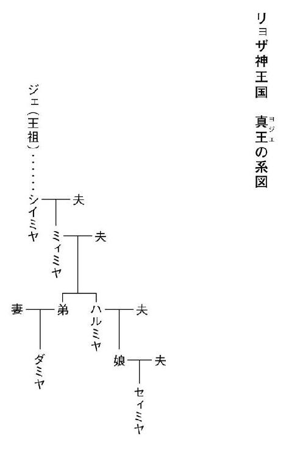

| 獣の奏者04 完結編 | |
| 上橋菜穂子 | |
| 講談社 (2012) | |
ebpaj-guide-1.0

目 次
獣の奏者 Ⅳ完結編
主な登場人物
エリン 主人公。人には馴れぬはずの王獣と心を通わせてしまったために、過酷な人生を歩む女性。
ジェシ エリンの息子。
イアル かつて真王の護衛士「堅き楯」を務め〈神速のイアル〉と呼ばれた武人。
ソヨン エリンの母。獣ノ医術師として暮らした霧の民。（故人）
ジョウン エリンの育ての親。（故人）
エサル エリンのよき理解者。カザルム王獣保護場の教導師長。
カリサ カザルム学舎の寮母。
トムラ カザルム学舎の教導師で、エリンの先輩。
ユーヤン エリンの親友。故郷にもどって獣ノ医術師となり、家庭を持つ。
カイル 真王の護衛士「堅き楯」の一人でイアルの友人。
セィミヤ リョザ神王国の王で、真王と呼ばれる。
シュナン リョザ神王国の国防を担う大公でセィミヤの夫。
オリ シュナンの妹。
ユィミヤ セィミヤとシュナンの娘。
ジェ リョザ神王国の王祖。
ヨハル シュナンの側近。かつては最高位の闘蛇乗り〈黒鎧〉を務めていた武人。
ロラン ヨハルの養子で、楽師。
クリウ 隊商都市イミィルの人々を導く聡明な女性。〈示道者〉として尊敬されている。
チムル 闘蛇の大量死が起きた村の青年。エリンの調査を手伝う。
オラム エリンの知り合いの王獣捕獲者。
ナソン エリンの行動を陰から監視してきた霧の民。エリンの母ソヨンの許嫁だった。

第六章 家族の日々
1 温め壺
灰色の天に、いくつもの影が舞っていた。
風に雪雲が流れ、ときおり太陽の一片が雲の端に顔を出すと、その影がにわかに、鋭い光を放つ光点に変わる。
それまでゆっくりと響いていた竪琴の音が突然速くなると、その光点の群れが、いっせいに向きを変えて上昇した。
埃のように、ふわふわと舞い飛んでいる雪が顔に寄ってくるのをはらいのけ、エサルは立ちどまって腰を伸ばし、呼吸を整えながら、天で繰り広げられている王獣たちの舞を、しばし、ながめていた。
（......二年）
わずか二年で、エリンは、王獣たちをここまで訓練してしまった。
汗がひいてくると、寒気が肌を刺した。厚着をしていても、寒さは布に水が染みこむように忍びこんでくる。
雪におおわれた崖に立って天を見上げているエリンは、早朝からずっとこの寒さの中にいたはずだ。
エサルはため息をついた。
カザルムへもどってきてからのエリンは、まるで、なにかに憑かれたようだった。ろくに休みもとらず、ひたすらに王獣の生態を探求し、多くのことを試し、そして、訓練をくり返している。
それは、少女だったころ、リランのために寝食を忘れていた姿を思いださせた。
エリンは腹を据えたのだろう。
大公に呼びだされるまでの十一年のあいだは、どう王獣を育てるべきか迷いつづけていたのに、いまのエリンにはもう、そういう迷いは見えない。
自分がなにをしているかわかっていて、ひとつひとつ、封印を壊している。──かつて王祖ジェが、災いを招かぬために固く閉じた封印を。
誰にも見えていない、彼女だけに見えているなにかを、エリンは見据えている。
自分がしていることの果てに、やってくるであろうものを見据えながら、あえて風に向かって顔をあげて、歩みつづけている。
（その歩みの果てに、あの子は、どこへ行くのかしら......）
エサルは、ぶるっとふるえ、自分の腕をさすった。
光っていた王獣たちが、ふいに降下を始めた。
一頭一頭、かなりの距離をおいて舞いおりてくる。そして、エリンがいる崖を中心に、崖の中腹や崖の上の雪原など、ばらばらの場所に着地していく。
勝手に舞いおりているだけのように見えるが、この光景を見慣れているエサルには、王獣の動きに意味があることがわかっていた。
真っ先にエリンのそばに着地するのはリラン、そのすぐあとに続くのがエク。そして、その子どもたちが、すこし距離をおいて、環をつくるように年齢順に降り立っていく。
エリンによれば、さきに居ついていたリランの家族が、放牧場の中で核となる縄張りを持っているのだそうだ。あとから連れてこられた王獣たちは、すでにあるリランたちの縄張りの外側に、それぞれの縄張りをつくっていく。
そして、その位置関係と、互いの距離は、放牧場を離れても変わらないのだという。だから、訓練場となっているこの峡谷でも、彼らは同じ距離を保って着地していくのだ。
ただ、彼らの縄張りの範囲は野生の王獣が持つ縄張りよりずっと狭いことを、エリンは長年にわたる観察をもとに、発見していた。
（これほど大型の獣で、しかも肉食となれば、縄張りはそうとう広いはずね）
しかし、餌を得るために狩りをする必要がない保護場では、縄張りが持つ意味も変わるのだろう。
──王獣は驚くほど賢い獣です。状況が変わったとき、それに適応するのがとても早い──
新しく連れてこられた王獣の行動をつぶさに観察することで、エリンは、彼らが互いの距離をどうやって保つのかも見出しはじめていた。
王獣は、間違いなく〈言葉〉を持っている。鳴き声や翼の動き、歯や関節を鳴らす音などを複雑に組み合わせ、それを〈言葉〉として使っているのだという。
いま、舞いおりてくる王獣たちも、きちんと互いの距離を保っている。
先に降りたリランは、幼獣のときのような仕草で、シャシャシャと甘えた声をたてながら、ぐうっと頭をさげて、エリンの背に鼻面をこすりつけている。
「......やめてよ、リラン。崖から落ちたらどうするの」
微笑みながら、巨大な王獣の鼻面を押しのけているエリンの胸には、音無し笛が光っていた。
エリンに近づくうちに、エサルはふと、雪原に足跡がついているのに気がついた。カザルムからまっすぐに来るこの道ではなく、ぐるっと遠回りをして森を抜け、この訓練場に来て、帰っていった足跡だった。
（やれやれ......）
エサルはため息をついた。
エサルに気づいて、エリンがふり返った。
「いらしてくださったんですか」
エリンが心配そうな顔をして、歩み寄ってきた。
「この天候なのに、ここまでいらっしゃるなんて......」
エサルは腰を伸ばしながら、眉をあげてみせた。
「この天候なのに、ここまで来たのは、わたしだけではないようよ。──気がついていた？」
エリンは、エサルが指さしているほうを見て、足跡に気づくと、顔をくもらせた。
小さな岩の陰に、ずいぶん長いこと隠れていたのだろう。そこだけぽっこりと雪が浅くなっている。岩の上になにかのっているのに気づいて、エリンは、そこまで歩いていった。
「......なにがおいてあるの？」
エサルが声をかけると、エリンがふり返って、なにか赤い色のものをふった。襟巻きのようだった。
「わたしの古い襟巻きです」
近寄ってきたエリンは、それをエサルの首に巻いた。
ふわっとした温もりに包まれて、エサルはびっくりした。
「ずいぶん温かいわね。いままであの子が巻いてたのかしら？」
エリンは苦笑しながら首をふった。そして、小さな茶色の陶器をエサルの手にのせた。
「まあ、温め壺......」
熱湯を入れてある陶器で、この時期、老人たちがよくこれを布に包んで懐に入れている。これを襟巻きで包み、岩の上においておいても温もりが逃げないようにしていたのだろう。
「まったく、あのチビすけは......。こういうところが可愛いから、困るのよね」
エサルはまた、ため息をついた。
「おかあさん思いなのはいいけれど、こうやってしょっちゅう、訓練場に忍びこむのを黙って見過ごしていて、いいの？ 監視兵の目もあるし、このあたりは、放牧場の周囲より森が深いから、ここまで来るあいだも危険でしょうに」
「やめさせねば、とは思うんですけど......」
ジェシは寂しいのだ。
以前のように父親と暮らしているわけでもなく、エリンも一日の大半をこうして王獣たちにかかりきりになって過ごさねばならない。街の家をひきはらって、王獣保護場の敷地内に家を建てて移ってしまったから、近所の友だちと遊ぶわけにもいかない。
それでも、学期中なら、学童たちに遊んでもらったりして、親のことなど忘れているのだろうが、いまのように学童が親元に帰る時期は、寮母のカリサや学舎の男衆が相手をしてくれていても、寂しくてしかたがないのだろう。
この訓練場の周辺は、多くの兵士たちによって厳重に監視されていて、エリンとエサル以外は立ち入ることを許されていない。しかし、兵士たちは、ジェシがエリンの息子であることを知っているものだから、彼だけは、片目をつぶって通してくれているのだ。
とはいえ、ジェシが訓練を見ていることが宮に伝わったときのことを考えると、見過ごしにしていいことではなかった。それはわかっているのだが、ジェシの気持ちを思うと、エリンはどうしても、叱ることができずにいた。
「まったく、しょうがない親子だこと。旦那も旦那だし」
ぶつぶつ言いながら、エサルは手袋を歯で嚙んで外すと、懐から油紙に包んだ紙の束をとりだした。
それを目にしたとたん、エリンの鼓動が速くなった。手渡された紙の束の重さがうれしかった。
「冬のあいだに、一度くらい帰ってくるのかしらね」
エサルの言葉に、エリンは苦笑して首をかしげた。
「さあ、どうでしょうね」
「そんな、あなた、そうやって催促しないから帰ってこないのよ。ものわかりがよすぎるより、帰ってきてくれって言われたほうが、イアルだってうれしいはずよ」
エリンは曖昧な微笑を浮かべた。
それを見ると、エサルは鼻を鳴らし、しょうがない人だこと、という仕草をした。
日が翳り、風に乗ってふわふわと舞い飛んでいた雪が、いつのまにか、しっかりとした降り方に変わってきた。
「そろそろ、王獣舎にもどしましょう」
エリンはつぶやき、夫からの便りを懐にしまうと、竪琴を持ちあげた。
最初の弦がはじかれるや、王獣たちはさっとこちらに顔を向けた。そして、奏でられる音を聞き分けると、糸に引かれるように、いっせいに薄暗い天へと舞いあがり、大きな羽音をたててエリンたちの頭上を通りぬけ、放牧場のほうへ飛んでいった。
「一糸乱れぬ、という感じね」
飛び去っていく王獣を見ながら、エサルがつぶやいた。
＊
リランの王獣舎の前でエサルと別れ、エリンは、王獣舎の戸を押して中に入った。
とうに王獣舎に帰りついていたリランたちは、トムラや最年長の学童たちが与えた餌を食べおえて、満足そうに毛づくろいをしている。
王獣舎の中は薄暗く、暖かかった。毎日きちんと掃除がされていても、獣独特の臭いは消えない。慣れぬ人には気になる臭いかもしれないが、エリンは、ここに入ると、心が安らぐ。
この王獣舎はしかし、エリンが少女であったころのものとは形も大きさもずいぶん変わっていた。宮から派遣された大工たちによって、はるかに立派な、がっちりとした建物に建てかえられたからだ。餌の肉も、毎日、たっぷりと届けられて、かつてのように、芋類を混ぜて餌を増やす工夫をする必要はなくなっていた。
リランたちがたてているおだやかな毛づくろいの音を聞きながら、エリンは王獣舎の片隅の壁に造りつけられた炉の前にかがみ、埋み火を搔き起こした。炭に赤く火の色が見えはじめると、薪をすこし加えた。
炎が薪を舐めはじめると、エリンは炉のかたわらに座り、懐から、油紙に包まれた紙の束をとりだした。
きっちりと巻かれ、封印を押して封をされている油紙を破いて、文を開くと、びっしりと書かれた文字が目にとびこんできた。
エリンは息をつめて、夫が書いた文字を目で追った。
イアルらしい飾り気のない文で、ここひと月ほどの日常のあれこれが綴られている。大公に忠誠を誓う闘蛇乗りのなかに、真王の堅き楯であったイアルが溶けこむのは容易なことではないはずだけれど、そういう苦労は、文面からは欠片も浮かびあがってこない。
この二年のあいだ、彼は地道な努力をコツコツと重ね、大公の兵士たちと堅き楯とのあいだを、ゆっくりとつないできた。
カイルの助けを得て、堅き楯のなかでも人望があり、しかも柔軟な心を持っている男を選んで、まずはその男と、闘蛇乗りの精鋭のなかでも、やはり柔軟な考え方をする男とを招き、月に一、二度酒を飲む機会を設けることから始めたイアルの努力は、小さいながらも確実に実を結び、いまでは、その酒を飲む会合には数十人もの男らが加わるようになっていた。
彼らとの語らいのなかで、なにが必要なのかを見出して、提言をまとめては、真王陛下と大公閣下へあげる道筋もつくった。
イアルは、簞笥を作るときの、あの静かな粘り強さで、一歩ずつ歩いているのだ。
その一方で、彼は、闘蛇軍の改良にも積極的に関わっていた。
ヨハルのもとで新たな闘蛇軍の創設に関わり、その動きを逐一書き送ってくれている。
イアルはあまり口数が多いほうではないが、意外に筆まめなのだ。エリンがイアルの家で寝起きするようになったころ、彼が外出しているあいだに掃除をしようとして、ひと抱えほどもある書き物の束を見つけたことがある。
盗み読みなどもってのほかだと思いながら、どうしても気になり、がまんできなくて、きっちり縛ってある紐を苦労してほどいて、読んでしまった。
それは手記のようなもので、堅き楯を辞してから、彼がどんな思いを抱いて生きてきたのかが胸が苦しくなるほど伝わってきて、なかなか読む手をとめることができなかった。
手をとめたのは自分のことを書いている箇所が現れたからで、さすがに、そこから先は読んではいけないと思った。読みたくてたまらなかったけれど、それをしたら彼の顔を見られない気がして、ふるえながら、紐を結びなおした。
ひと晩悩んだあと、結局、その手記を読んでしまったことをイアルに打ち明けた。これで終わりかもしれないと、緊張しながら告げたのだけれど、イアルは、さして驚きも怒りもしなかった。その淡白さは拍子抜けするほどで、なぜ怒らないのかと尋ねても、困ったような顔をしただけで、結局、答えてくれなかった。
いまも、なぜ怒らなかったのか、わからないままだ。夫婦になってずいぶんたつけれど、あのとき彼はどうして......と思いながら、そのままになっていることはいくつもあった。案外、彼のほうにも、そういうことがあるのかもしれない。
余計なほうへ迷いでてしまった気持ちを手紙にもどして、エリンは再び文字を追いはじめた。
最近起こったことが書かれている部分を読んで、エリンは、はっと目を見開いた。
昨日、ロラン殿から託されたという文を持った密使が館に到着した。
ヨハル殿はおれを自室に招いてくださり、ご子息の文の内容を教えてくださった。
それは驚くべき内容だった。ラーザは、ひとつの国の名前ではない、というのだ......。
はるか東の平原の奥まで旅をしているロランが伝えてきたラーザの姿は、それまでエリンが思いこんでいた「国」とは、大きく異なるものだった。
ラーザというのは、ウリシという人々の言葉で〈我々〉というような意味を持つ略称で、正しくは〈ラーザ・オマ・カルダ〉、カルダを崇める我々というような意味なのだという。
カルダというのは、彼らが信仰する神の名前で、はるか東の奥にその神を祭る神殿があるのだそうだ。そして、西ウリシ、東ウリシという二つの大きなウリシ人の集団が、それぞれ、どちらがより価値あるものを神に捧げられるかを真剣に競い合っているのだという。
五年に一度、神は、〈喜びの声〉を天から地へともたらす。その声で、西ウリシ、東ウリシ、どちらの功績をより喜ばしいものとしたかを告げるのだという。
ここ十数年、神は東ウリシの功績を称えることが多く、西ウリシの人々は、なんとか目ざましい功績をあげて、神の〈喜びの声〉を聞きたいと熱望している。
イミィルをはじめ、隊商都市への侵攻が激しさを増しているのは、そのせいだろうと、ロランは伝えてきたのだった。
こんな話を聞くと、ラーザは狂信者の集まりであるように感じてしまうが、くれぐれも、そう思いこまぬように、とロラン殿は書いてきている。
たしかに彼らの暮らしや考え方は、カルダという神への信仰に基づいているが、彼らが築きあげている都市のみごとさ、商いの繁栄ぶりは、いくら言葉を尽くしても、その目で見ないかぎり、信じられぬだろうと。
また、政や組織の在り方などは、じつに効率的にできあがっているという。
彼らが周囲の部族を次々に併合できたのは、ウリシ人でなくとも、カルダを神として受け入れさえすれば、平等な仲間として扱うからなのだそうだ。
つまりは、それこそがラーザという名の由来〈カルダを崇める我々〉なのだ......。
それを読みながら、エリンは、ヨハルの館の客間を思いだしていた。中庭に面した窓を広くあけはなち、椅子に深く腰をおろしていた美しいクリウと、壁一面をおおっていた大きなあの地図のことを。
遠い草原にあるという隊商都市イミィル、そして、自分の故郷アシェの場所を指さしていたロランの、やわらかく深みのある声......。
あのとき感じた世界の広がりが、いま、このイアルの手紙からも立ちのぼってくるような気がした。
エリンは手紙から顔をあげ、王獣たちをながめた。
冬の夜の薄暗がりの中に、ぼんやりと彼らの巨大な影がうずくまっている。鼻面を胸にうずめ、心地よさそうに寝息をたてている。
はるか遠い地では、いまこのとき、カルダという神を崇める人々が、冬の夕べを過ごしているのだと思うと、茫漠としたなにかが胸に広がった。
なんと、この世は広いことか。
そして、その広大な世に、考え方のちがう多くの人々がひしめいているのだ。
（......戦は）
ぽつんと、ひとつの静かな思いが、エリンの胸の底に落ちて、広がった。
（絶えるということは、きっと、ないのだろう）
どれほど努力しても、どんな工夫をしても、きっと、人の群れは、この広大な世界の中で、争いつづけるのだろう。
エリンは、リランの寝姿を見ながら、心の中で、はるか昔にこの世を去った女人に語りかけた。
（ジェ、あなたもきっと、そう感じていたのでしょうね）
二千の王獣を戦場に舞わせたジェ。彼女は、人という生き物の性を、いやというほど知っていたにちがいない。
（それでも、あなたは、そこで歩みをとめなかった。国の安定のために王獣を使いながらも、なんとかして災いを招かぬよう、必死に工夫をした......）
王獣たちを飛ばさぬよう、増やさぬよう、巧みに縛ったジェの工夫を、自分はひとつずつ壊している。その果てに来るであろう光景は常に心の中にあったけれど、エリンはもう、手をとめる気はなかった。
この国を安定させ、平穏に保つということだけを考えるなら、ジェが編みだした方法はじつに巧みな策だ。......けれど、時が移り、国が大きくなり、民の数も膨らみ、他国との領土争いが絶えぬ時代が訪れ、ヤマン・ハサルに闘蛇を武器として与えたときにジェが編んだ美しい籠は、綻びはじめたのだ。そして、いまはもう、籠は、その姿を保てないところまで来てしまっている。
闘蛇がいかに素晴らしい武器であるかを、他国に見せつけてきた年月は、崩壊のきっかけをつくりつづけた年月でもあったのだ。王獣も闘蛇もおらず、ひたすらに「人」を武器として使いつづけてきた国々にとって、闘蛇軍を持つことは悲願であったにちがいないのだから。
他者に勝ちたい、すこしでも他者よりよい条件で生き残りたいという衝動があるかぎり、人は戦に勝てる手段を探しつづける。そして、たとえ長い年月がかかったとしても、いずれ必ず、「他国の闘蛇軍をやすやすと圧倒できる武器」を見出す者が現れる......。
（わたしはそれを見出し、為政者に教えてしまった）
エリンは、暗い王獣舎の床を見つめた。
蓋をあけてしまった自分が、為すべきことはなにか。──それを考えた末に、これしかないと思った道を、いま、歩いている。
（戦をなくすことができれば......）
ときに、ふっとその思いが胸をよぎり、そのたびに、それがいかに得難い願いであるかを思う。
戦は、群れで縄張りを持つ人という獣が、生来持ってしまっている、どうしようもない衝動なのではないかという思いすらある。
ただ、その黒々とした思いの底に、ぼんやりとした淡い光が残っているように感じることがあった。──日の光がちらちらと踊る川面の下を、すっと過ぎていく小魚の影が、心に浮かんでくるのだ。
それは、昔読んだ書物に書かれていた小魚の姿だった。
川底の石につく藻を食べて生きている、リヤというその小魚は、自分が食べる藻を確保するために、いくつかの石を縄張りにしていて、ほかのリヤが近づこうものなら、激しく体当たりをして撃退する。
縄張りをしっかり保てるリヤは、たっぷり藻を食べられるので、身体が大きくなり、強くなるから、ますます縄張りを保つ力も増す。そうやって、強いリヤが生き残っていくのだという。
ところが、なにか川の条件が変わって、群れをつくることになると、不思議なことに、リヤは縄張りを持たなくなるという。しかも、そういう群れになったリヤが、身体が小さいかというと、そんなこともないというのだ。
縄張りが消え、藻を食べられる範囲が広がることで、多くのリヤが生き残るということもあるのだと書かれていたその文は、かすかではあるけれど、川面に踊る光のような、透明な光を心に宿してくれた。
生き物は、変われる。──こんなものだ、と見切ってしまえるほど、人は人についても、世界についても、知りはしないのだ。
そう思えるかぎり、歩いていける気がしていた。たとえ、目の前にのびている道のその先に、黒々と闇を孕んだ雲が見えているとしても。
夫からの手紙を手に持ったまま、エリンはうつむいた。
イアルが、ラーザのことを、これほど細かく書きつづってきたのは、自分に心の準備をさせるためだろう。
去年の暮れ、ラーザは、この国の保護領である東の隊商都市を盛んに攻めた。それが神からよい託宣を得るためであったとしたら、四年後にはまた、彼らはもっと大規模な戦をしかけてくるだろう、と告げてくれているのだ。
イアルが闘蛇軍にいて、現場の動きを書き送ってくれるおかげで、いま、どんなことが起きているのかがよくわかる。名前をあげて書いてある兵士たちの本音や、指揮官たちの思惑、現場の機微......そういうものが、イアルの手紙からは伝わってくるからだ。
いずれ、エリンが王獣を飛ばさねばならぬ日が来たとき、どういう人たちとともに戦場へ行くのか、それを感じられるように、イアルは頻繁に長い手紙を書き送ってくれているのだろう。
イアルに会いたかった。その顔を見、その声を聞きたかった。
会いたいという気持ちが、ふいに火のように胸を焼き、万力のように締めつけてきて、エリンは、ぎゅっと目をつぶった。
エサルは、ものわかりがよすぎると言ったけれど、そんなことはない。──イアルが旅立つ前夜、エリンはひどく泣いて、責めたのだ。
それでも、あきらめざるをえなかったのは、彼が抱えている思いが、結局は、自分が抱えている思いと同じなのだ、と、気づいたからだ。
もはや、仮初めの平安の中では暮らせないとわかったあのとき、自分もイアルも、心の中に隠していた〈堰〉を切ったのだ。おだやかに暮らすために心の中に築いていた〈堰〉が崩れ去ったとき、突きあげてきたのは、自分たちが背負っているものと向き合って決着をつけないかぎり、そのさきの暮らしはありえない、という思いだった。
イアルが、ずっと亡霊を見ながら生きてきたことを、エリンは知っていた。かつて、その手で殺めた人々の重い影は、家族で暮らしていても、なにをしていても、彼の心から消えることはなかった。
自分が過去に為してきたことに向き合い、これからも生きていてよいのだと思えるなにかを見出したいという思い。それは、傍からなんと言われようと、とめることができぬ思いで......イアルが抱えているものも、そういうものなのだと思っていた。
（でも......）
イアルが闘蛇乗りに志願した理由は、それだけではなかったのだろう。
頻繁に送られてくる長い手紙、この国がおかれている状況を詳しく知ることができるよう説明してくれている手紙を読むたびに、エリンは、彼が口にすることのない、もうひとつの理由を感じる。
（あの人は、わたしが身をおかねばならぬ場に、ともにいてくれようとしている......）
エリンは手で、顔をおおった。
（そうだとすれば......）
ジェシが、あまりにも哀れだった。
2 ユグラ火蟻
昨夜降った雪が渓流の岸にうっすらと積もっているせいか、濡れた岩の黒さが際立って見える。
チャプチャプと音をたてながら流れる渓谷の水は、手が切れそうなほど冷たかったが、王獣たちは冷たさをまったく感じていない様子で、鼻面を川面につけて水を飲んでいた。
よく晴れた日で、日射しは明るく、王獣たちの体毛を光らせている。
朝の訓練で岩場におりたとき、雪が積もった岩の上でリランがわずかに足を滑らせた。そのとき爪が傷ついたらしく、リランは盛んに爪のあたりを舐めている。
「ちょっと見せてごらんなさい」
そばに行って声をかけると、リランは素直に爪を舐めるのをやめて、顔をあげた。
爪の生え際に小さな裂傷があったが、たいしたことはなかった。もう血もとまっている。
「ちっちゃな傷ね」
微笑んで見上げると、リランは甘えるように鼻を鳴らした。その鼻面から息が白く湯気のように立ちのぼった。
ほかの王獣たちとちがって、何頭もの子を産んだリランの腹には、赤黒い乳房がふたつ、毛皮のあいだから見えている。リランが放牧場に帰ると、もうとうに乳離れして餌を食べているくせに、娘のミナが駆け寄って、甘えながら乳房を吸ったりひっぱったりするので、乳房の周りの毛は乱れたまま、突っ立ったようになっていた。
エリンが離れると、それを待っていたかのように爪の傷を舐めはじめたリランが、ふっと顔をあげた。
耳をぴくぴく動かしながら、エリンの背後の森の一点を見つめている。
アルやエクたちも顔をあげ、同じように森を見つめた。
「............？」
エリンは眉をひそめて、彼らが見ているあたりに目をやったが、なにも変わったものは見えなかった。
「どうしたの？」
問いかけた、そのとき、かすかになにか聞こえたような気がして、エリンは口を閉じた。
たしかに聞こえる。──子どもの悲鳴だ！
「ジェシ？」
エリンは、王獣たちにここにいるよう合図をするや、だっと駆けだした。
間違いなくジェシの声だった。くり返し、くり返し、なにか叫んでいる。
「ジェシ、ジェシ！」
大声で呼びながら、エリンは木々のあいだに身をねじこみ、雪に埋もれた藪を踏み越えて、一直線に息子の悲鳴が聞こえるほうへ走った。枝が頰をひっかき、血が伝うのも気づかず、もがくように、冬の森に分け入った。
ジェシの甲高い悲鳴が間近で聞こえるようになったとき、ぽっかりと木の少ない空間に転びでた。
すっと伸びた木の根もとにジェシがいた。目に見えぬ炎に焼かれているように手をふりまわし、足をばたつかせながら、地面を転げまわっている。
息子の身体が無数の赤茶色の虫におおわれているのを見て、エリンは悲鳴をあげた。
「ジェシ！」
ユグラ火蟻だ。あれに刺されたら激痛が走る。全身を刺されたら命に関わる......！
ジェシの悲鳴を聞きつけたのだろう、藪を搔き分けて監視兵が現れたが、その光景を見るや、たたらを踏んで立ちどまり、凍りついたように動きをとめてしまった。
木の幹に巣食っているユグラ火蟻が、続々と巣穴から出て幹を伝いおり、赤茶色の水のように地面に広がってくる。
その蟻の群れの中に、エリンは駆けこんだ。
足に、太腿に、腹に、そして手や首にまで火箸をあてられたような激痛が走ったが、歯をくいしばって息子を抱えあげるや、その身体をはたいて蟻を落としながら、足をとめずに走り、川へと向かった。
雪に足を滑らせながら、つんのめるようにして川へ駆けこむと、エリンは息子の耳もとで叫んだ。
「息を大きく吸って、とめなさい！」
そして、息子を抱いたまま、ざぶざぶと川の中ほどまで入っていき、一気にしゃがんで、氷のような水に頭まで身を沈めた。
水流に流されぬよう足をふんばりながら、エリンは、息子の身体をもむようにして蟻をはらった。
ジェシが息をつまらせぬよう、立ちあがって、水面に顔が出るように抱えてやったが、ぐったりしたジェシは目をつぶったままだった。冷たい水につかって青白くなった顔に、すでに点々と赤い斑点が浮かびあがっている。
「ジェシ......ジェシ......」
エリンはくるったように息子を搔き抱いて、濡れて額に貼りついている髪を搔きあげ、頰をさすった。
ジェシは腫れはじめたまぶたを、うっすらとあけたが、あまりの痛みに声すら出ないようで喉からヒューヒューと細い息の音が漏れるだけだった。
しつこく衣にしがみついているユグラ火蟻も、冷水の中でもまれるうちにすこしずつ離れはじめていたが、エリンは激しい怒りをこめて蟻を叩き、息子の身体からはらいのけた。
ジェシの顔がよく見えなくなってきて、初めて、エリンは自分のまぶたも腫れているのだと気がついたが、全身の燃えるような痛みさえ、ほとんど意識にのぼっていなかった。
ようやく息子の身体から蟻をほとんどはらい落とすと、エリンはその身体を抱いたまま、よろよろと川原にあがった。
一刻も早く、ジェシに薬をのませねばならない。
ぐったりした息子を抱きかかえて、エリンはリランに近づいていった。
なにか声が聞こえた。
監視兵が、どうしたらよいか問いかけているのだ。それに応える余裕もなく、エリンはリランに近づくと、いったん、ジェシをゆすりあげるようにして抱きなおした。
騎乗帯をつけたままだったのが幸いだった。この凍えた指では、騎乗帯などつけられない。
エリンはまずジェシの身体をリランの背に乗せ、それから、もがくようにして、自分も騎乗帯の上によじのぼった。
鼻を鳴らしながら、首をねじ曲げるようにしてこちらを見ていたリランは、エリンが声をかけるや、一気に天に舞いあがった。
ほかの王獣たちがついてきていることすら確かめもせず、エリンは冷たい息子の身体におおいかぶさるようにして、すこしでも暖めようとした。
耳もとでビュウビュウと風が唸る。火蟻に刺され、冷水につかった指は、もうまったく感覚がなかった。騎乗帯をつかんでいるのかどうかさえわからない。
「ジェシ......ジェシ......ジェシ......」
エリンは口の中でつぶやきつづけた。なんでつぶやいているのかもわからずに、ただ息子の名を呼びつづけた。
（死なないで、死なないで、お願いだから、死なないで......！）
動かない息子の小さな身体におおいかぶさって、エリンはひたすらに祈っていた。
＊
ジェシの泣き声で目がさめた。
部屋の中は薄明るく、わずかにあけてある窓から朝の光が射しこんでいる。
身を起こそうとして、エリンは思わずうめいてしまった。腕も足も、どこもかしこも、蜂に刺されたときのように、かちかちに腫れて、熱を持って疼いている。
腫れたまぶたをかろうじてあけて、かたわらの寝床に横たわっているジェシの額に手をあてた。
昨夜ほどの高熱ではなかったけれど、まだ、かなり熱い。
真っ赤に腫れあがった顔で、ジェシは力なく、息をするようにすすり泣いている。
「大丈夫よ。もうすぐ痛みが消えていくからね。もうちょっとだから」
髪をなで、頰に頰をあてて、エリンはささやいた。
「お......かあ、さん」
ジェシの口から声が漏れた。
「喉、かわいた」
エリンはうなずいた。
「いま、水をあげるからね」
枕もとに、ふたつ、吸い飲みがおいてあった。ちゃんと水が入っている。エサルが入れておいてくれたのだろう。
エリンは吸い飲みをとりあげると、ジェシの頭の後ろに手を入れて、すこし身体を起こしてやってから、吸い飲みをジェシの口にあてた。ジェシはごくごくと喉を鳴らして水を飲んだ。
冷たい水を飲んで、すこし楽になったのだろうか。寝かせると、ジェシはすぐに、安らかな寝息をたてはじめた。
床の脇においてある桶の水に手拭いを浸して絞ると、エリンは汗の浮いたジェシの顔を静かにぬぐってやった。それから、起こさぬように気をつけながら、衣の襟をゆるめて、脇の下にはさんでいた布をそっとはずした。冷たい水で湿らせておいた布が、もう、すっかり乾いてしまっている。
エリンはその布をまた水に浸して絞り、ジェシの脇の下にはさんだ。氷をあててやりたいくらいだけれど、それでは冷えすぎる。我が身を毒から守ろうとして熱が出ているのだから、冷ましすぎるより、こうして水で湿らせた布をこまめにかえたほうがよい。
うなじと額にも冷たい布をあててやり、ようやく、エリンはひと息ついた。
夜通し看病してくれていたエサルは、薬でもとりに学舎にもどったのだろうか。家の中に人の気配はなく、とても静かだった。
二年まえから暮らしているこの家の出入り口には、兵士の見張り小屋が建てられており、そこを抜けないかぎり、家に入ることができないようになっていて、二人の監視兵が常駐している。毎朝いまぐらいの時刻になると、彼らが朝餉の支度をしている音が聞こえてくるのだけれど、彼らも気を遣ってくれているのか、ほとんど物音が聞こえてこなかった。
エリンはもうひとつの吸い飲みを持ちあげ、水を飲んだ。
カラカラに渇いて腫れていた喉に、氷のように冷たい水がしみわたるようだった。口の中に薬の匂いを感じたとたん、ふっと、子どものころのことを思いだした。蜂にひどく刺されてしまって、熱を出したとき、ジョウンおじさんが、この薬をのませてくれた。そして、ひと晩中看病してくれた。
ジョウンおじさんに感謝しながらも、母がそばにいてくれたらと思っていた、あの心細い、哀しい気持ちがよみがえってきて、エリンは小さく息をついた。
息子の赤い頰にそっと指で触れてから、そばに寄り添って横になると、エリンは我が子の熱を鼻先に感じながら目をつぶった。
かわいそうなことをしてしまった。
カザルム学舎に入舎した学童たちは、真っ先に、あのあたりの森にいる毒のある虫や蛇について習うけれど、まだ幼いジェシは入舎しているわけではなく、説明を受けてもいないから、ユグラ火蟻のことなど知るはずがない。
（わたしが教えておくべきだったんだわ）
悔いが胸を刺した。
ジェシが、寂しくて、しょっちゅうあの森を通って訓練場に忍びこんでいるのを知っていたのに、王獣たちのことで頭がいっぱいで、息子がこんな目にあう可能性など考えもしなかった。
監視兵がいるから大丈夫だろうと思う気持ちも、どこかにあったし、エサルや、カリサ、女衆、男衆が、ジェシの世話をしてくれていることに頼りきっていて......。
エリンは、ため息をついた。
この二年、ずっと急きたてられているような焦りを感じながら、日々を過ごしてきた。
いつ、ラーザとの戦に駆りだされるかわからない。その日が来てしまうまえに、なんとかして、〈災い〉をもたらすという王獣の生態の秘密を解き明かしたかったし、たとえ、その探求が間に合わなくとも、最悪の事態は避けられるよう王獣たちを訓練しておかねばと、そればかり考えていた。
（でも......）
ジェシと生きている〈いま〉も、また、かけがえのない時なのだ。
エリンは、薄く目をあけて、息子の寝顔をながめた。
母と過ごせた時間はわずかだったけれど、それでも、母が注いでくれた愛情が、思い出のひとつひとつが、宝となって、いまも心の底を支えている。
（わたしは、この子にとって、そういう母親だろうか）
小さな耳のあたりに、そっと額をつけて、エリンはまた目を閉じた。
3 木々の不思議
渓流の岸辺の雪も消えた、うららかな春の日に、エリンは、半日だけ王獣たちの訓練をエサルに代わってもらって、ジェシを外に連れだした。
「お昼、外で食べるの？」
ジェシは弁当の包みを頭の上にのせたり、胸に抱いたりして歩きながら、母を見上げた。火蟻に刺されたところは、もうかさぶたもとれて、かすかな痕が残っているだけだ。
「そうよ。今日は、訓練場の川原で、焚き火をしながらお昼を食べようね」
ジェシはきゅっと眉を持ちあげた。
「うっへー......。おかあさん、どうしちゃったの？」
「どうしちゃったって？」
「だって、いっつも忙しくってさ、お昼なんて、もうずっと、一緒に食べたことなかったじゃん。急に、息子を可愛がらなくっちゃって思ったわけ？」
エリンは苦笑した。
「......まあ、そうね。ちょっとは反省したわけよ」
ジェシは、ふうん、と鼻を鳴らした。
「ちょっとか。ま、しないよりマシだよね」
生意気な顔でそう言いながらも、うれしくてしかたがないらしく、口もとがゆるんでいる。ジェシは弁当の包みに鼻をくっつけた。
「お弁当、なにが入ってるの？ ファコの匂いじゃないね」
「それはお昼のお楽しみ。それ、おかあさんに渡しなさいな。お昼を食べるまえに、見せておきたいところがあるのよ。森に入るから、あなたは両手をあけておいたほうがいいわ」
手を差しだしたが、ジェシは頑として弁当を渡さなかった。
「冗談じゃないよ！ 森歩きなんて、ぼくのほうが、百万倍も慣れてるもん！ おかあさんこそ、両手をあけておいたほうがいいよ。今日はリランに乗せてもらってないんだからさ」
ジェシは弁当を頭にのっけた格好で、だっと走りだし、木の根をぴょんととびこえて、森の中に駆けこんでしまった。
「ちょっと、ちょっと！ お弁当ふりまわしちゃだめよ、汁が垂れるから！」
猿のように身軽な息子の、小さな背中に呼びかけながら、エリンも森の中に入った。
新芽をびっしりと枝につけた木々のあいだを行くと、木漏れ日までが明るい緑色をしているようで、先を行くジェシの髪も背も、緑に染まってしまいそうだった。
森の小道をどんどん進んでいく息子に、エリンは声をかけた。
「ジェシ、ちょっと待って、そっちじゃないわ！」
ジェシはくるっとふり返ると、けげんそうな顔をした。
「え？ 訓練場の川原に行くんでしょ？」
「そうだけどね。そのまえに見せたいところがあるって言ったでしょう」
跳ねながらもどってきた息子の頭に手をおいて、エリンは、右にかすかに見えている獣道のほうを示した。
とたんに、ジェシの顔がくもった。
「え......こっちに行くの？」
森の小道は、幅は広いが、途中に急坂がある。エリンが指さした獣道は、細いけれど、なだらかなので、雪が積もっているときはこちらのほうが歩きやすい。
冬のあいだ、訓練場に忍びこむためにジェシが使っていたのはこの獣道で、あのユグラ火蟻の巣のある草地に近かった。
「そうよ。行くのが怖い？」
エリンが微笑むと、ジェシはむっとしたように口をとがらせた。
「べつに、怖くはないけどさ。しょっちゅう通ってた道だし」
息子の頭を軽くゆすってから、エリンは、ぽんと背をはたいた。
「じゃ、行きましょう」
ついいましがたまでとは打って変わって、とぼとぼと歩きはじめた息子を見て、顔をほころばせながら、エリンはそのあとをのんびり歩いていった。
ユグラ火蟻の巣があるところに近づくと、ジェシの足取りはいよいよ鈍くなった。
「......こないだんときね、あの、冬のときさぁ」
ジェシがつぶやいた。
「ウサギがいたんだ。きれいな子だったの、真っ白で。初めは、雪の塊かなぁって思ったんだけど、ぴょんって跳ねたんで、あ、ウサギだって思ってさ、追っかけたんだよ、ぼく」
手でウサギが走っていった動きを示しながら、ジェシはふり返って、エリンを見た。
「そんで、藪を搔き分けてたら、急に木がないとこに出たんで、足が滑っちゃって、あの木にぶつかったんだ。あの、巣のある木に」
エリンはうなずき、ジェシが指さした藪を搔き分けた。
「おかあさん、危ないよ！」
裏返ったジェシの声を聞きながら、エリンは藪を押すようにして分け、道を作ると、ふり返って息子を見た。
「大丈夫だから、ゆっくりここをまたぎなさい」
顔をしかめたまま、ジェシはしばらく母を見つめていたが、やがて、近寄ってきた。
「お弁当はおかあさんに渡しなさい。あわてないで、ゆっくり草地におりたら、その草地の縁に立っていて」
言われたとおり弁当を母に渡し、ジェシは小さな手で藪をつかみながら慎重にまたぎこえて、草地におり立った。
エリンは息子の脇におり立つと、その肩に手をおいた。
「あそこの木が、ユグラ火蟻の巣よね」
まっすぐに天へと伸びている木を見ながら、ジェシはうなずいた。
「ジェシ、あの木を見て、なにか気がつかない？ ほかの木と、ちがうところがあるんだけど」
ジェシは眉根を寄せて、木を見つめた。
薄暗い森を抜けてきたせいか、この草地はとても明るく見えた。あの巣がある木など、お日さまの光をさんさんと浴びて、木肌が白く光って見えるほどだ。
その白い木肌に、鋭い刃物で切りつけたような割れ目が、ひゅっと上から下まで黒々と伸びている。
ジェシは、母を見上げた。
「割れ目があるよ」
母は、いたずらっぽい目つきで、眉をあげた。
「それだけ？ 割れ目なら、ほかの木にもあるわよ」
ジェシは口をとがらせ、もう一度、しげしげと木を見つめた。
ほかの木と、ちがうところ？
（種類がちがうってことかな。でも、そんなことじゃないよな。なんだろ？）
考えつづけたけれど、どうしてもわからない。でも、わからない、と母に降参するのはしゃくだった。
「うーん。うーん」
ジェシは唸りながら、巣のある木と、周りの木々を見比べた。
「うーん。......なんか、ほかの木より明るく見えるけどさぁ......」
つぶやくと、母が、ぱっと微笑んだ。
エリンは息子の肩をゆすった。
「それよ。なんで、ほかの木より明るく見えるんだと思う？」
息子は眉根を寄せたまま、首をかしげた。
「......お日さまの光が、いっぱいあたってるから？」
「そう！ じゃ、どうして、あの木にだけ、お日さまの光がいっぱいあたるのかしら」
「だって、近くに木がないからだよ。一本だけ草地に立ってるんだもん。ほかの木はさ、周りの木の枝が、あんなにたくさん、そばに茂ってるから、お日さまの光をそんなに浴びられないもん」
「大正解！」
エリンはうなずき、息子から離れて、草地に足を踏み入れた。
背後でジェシのあわてたような声が聞こえた。
「おかあさんっ」
「大丈夫よ。おかあさんが歩いているところと同じところを踏んで、ここまでいらっしゃい」
ジェシが、そろそろと草を踏みながら近づいてくるのを待って、エリンは、巣のある木に近い木々の枝を指さした。
「見てごらん。葉っぱ、どうなっている？」
見上げたジェシは、うわぁっと声をあげた。
「わ、すっげ。網目みたいになってる！ なにあれ、わ！ 全部そうだ！ このあたりの木の葉っぱ、みんな虫に食われちゃってる！」
虫に食われて網のようになった葉もあれば、食い散らかされて、ほとんど芽がなくなってしまっている枝もある。お日さまの光が、虫に食われた葉を透かして、ちらちらと光って見えた。
「ユグラ火蟻は虫だけでなく木の葉も食べる蟻でね、ものすごい大食漢なの。だから、巣の周りにある木は、新芽も葉っぱも、こうやって食い散らかされてしまう。こういう木は、葉っぱがなければ生きられない。新芽が出なければ、成長もできない。この木はやがて、枯れてしまうでしょう。......ここに倒れている木も、そうやって枯らされてしまったのよ」
エリンは苔と土に埋もれた倒木を、トントンと、爪先でつついてみせた。生きている木とはちがって、蹴られても、鈍く、ぼんやりとした音しかしない倒木を見て、ジェシは顔をしかめた。
「ひっでぇ。ユグラ火蟻って、ほんとに、ひでぇやつだね」
エリンは首をふった。
「でも、あの巣がある木は、きっと、ユグラ火蟻に感謝しているわよ」
「え？」
「だって、ユグラ火蟻が周りの木を食べて、倒してくれるおかげで、さんさんとお日さまの光を浴びることができて、思う存分、枝を伸ばして、すくすく育っていかれるんですもの」
「あ......」
ジェシは口をあけて、巣のある木を見つめた。
ちろちろと赤茶色の火蟻が出入りしているその木は、たしかにのびのびと枝を伸ばし、気持ちよさそうに日の光を全身に浴びている。
「火蟻はいくつもの種類がいるのだけれど、ほとんどの火蟻は、もっとずっと南の、雨の多い、湿った森の中に棲んでいるのよ。そういう森は鬱蒼と木々が茂っているから、木にとっては、いかにたくさん、お日さまの光を浴びることができるかが、成長できるかどうかを左右する、とても重要なことになるの。火蟻が棲んでくれたら、周囲の木を食べてくれるから、その木は、健やかに成長できる......」
エリンは木漏れ日を顔に受けて、目を細めた。
「ユグラ火蟻は珍しく、雪が積もるような寒い地域に巣を作る火蟻だけれど、やはり、同じように周りの木を食べて、巣を作った木の周りを日当たりのよい草地に変えてしまう。そうすると、きっと、ユグラ火蟻にとっても快適なんでしょうね。暖かくて」
ジェシはしばらく黙って、木の割れ目のあたりにうごめいている火蟻の群れを見つめていたが、やがて、ぽつっと言った。
「なんか、兵隊みたいだね。あの木が、自分たちの陣地でさ、わ～って周りを攻めて、陣地を広げてるんだよ、きっと」
エリンは眉をあげた。まだ幼い息子の口から、こんな言葉が出るとは意外な気がしたけれど、案外、裏街で盛んに戦ごっこをして遊んでいる男の子にとっては、ぱっと頭に浮かぶ連想なのかもしれなかった。
「......ほんとうに、そうね。自分たちが生きやすいように、周りを平らげてしまおうとするのは、ユグラ火蟻も人も同じね」
そう言うと、ジェシはうなずいた。
「強い奴をたくさん味方にするのが一番なんだ。そしたら勝てるもん。あの木は、すごく運がよかったんだね。強い虫を味方にできてさ」
エリンは微笑んだ。
「運がよかったんじゃなくて、運を自分で引き寄せたのよ」
「え？」
「あの木はね、コグの木といって、甘い匂いのする樹液を身の内に溜めているの。ユグラ火蟻はその樹液に惹かれて、あの木に巣を作ったのよ」
ジェシは目を丸くした。
「餌で誘ったのかぁ！ ポッチみたいなやつだなぁ、あの木！」
「ポッチ？」
「うん。ファコ屋の息子だよ。ジュグ（甘い焼き菓子）をおかあさんに焼いてもらってさ、それをあげるからって言って、仲間を増やしやがるんだ。そんで、連戦連勝。いっぺん、ポッチに勝ちたいと思ってたんだけどなぁ」
ぶちぶちっと唇を鳴らして、ジェシはひとしきり愚痴ったが、そのうち、ふいっと表情を変えた。
「......でも、なんであの木だけ、そんな樹液が出せるのかなぁ。不公平だよね。ほかの木は、なんで出せないんだろう？ ユグラ火蟻を誘える木と、やられっぱなしになる木と、初めっから勝負が決まってるなんて、やだなぁ」
ジェシはエリンを見上げた。
「ね、おかあさん、なんで、そんなふうになるのかなぁ？」
エリンはそっと息子の頭に手をおいた。
「おかあさんにも、わからないのよ、それは。でもね、木が生き残る術は、ユグラ火蟻に頼るだけじゃないわ。たとえば、この木は花をつけたあとに小さな甘い実がなるのよ。鳥が大好きな実でね、鳥たちは盛んについばんで、ごっくんって種ごとのみこんでしまうの。そうすると、種は、どうなると思う？」
ちょっと考えてから、ジェシは、にやっと笑った。
「糞になって、出ちゃう！ 糞、糞～！」
けらけら笑っている息子の頭を、ぽんとはたいて、エリンは笑った。
「あなたたちチビさんは、どうしてそんなに糞が好きなのかしらねぇ。でも、正解よ」
ジェシは、けげんそうな顔をした。
「なんで？ 糞になっちゃったら、この木にいいことないじゃん」
「とんでもない！ 糞に包まれて種が地面に落ちれば、肥料の中にいるようなものだもの。種はちゃんと芽を出して、大きくなれるわ。この木は鳥に自分の子どもたちを運ばせて、あちらこちらで芽を出し、育つようにしているのよ」
ジェシは目を丸くした。
「うっへ～！ 頭いいっ！」
そう言ってから、ふっとジェシは黙りこんでしまった。唇をかんで、あたりの木々をながめている。
「どうしたの？」
「う......ん」
ジェシは顔をくもらせたまま、つぶやいた。
「なんか、ちょっと気持ち悪くなっちゃった。ぼく、木って、なにも考えてないんだと思ってたけど、そんなことしてるって思うと、なんか......怖い気がする」
さわさわと風が渡り、枝がゆれた。そのゆれる枝を見上げて、ジェシは身体を縮めた。
エリンは息子の背から腕をまわして、そっと抱いた。
「おかあさんも、あなたと同じくらいのとき、おんなじことを思ったわ」
「ほんと？」
「ええ。木も、虫も、鳥も、獣も、わたしが思いこんでいるのとは、ずいぶんちがうのかもしれないって。考えたり、しゃべったりしないはずの木が、どうして、鳥を寄せて種を運ばせたり、虫を寄せて自分を守ったりするのか。それは偶然なのか、それとも、木がそういうふうにしているのか、そうだとしたら、どうやって......？」
エリンが口を閉じると、葉擦れの音だけが聞こえた。ときおり、小鳥が枝を渡るざわめきと細く明るい鳴き声が、どこかから聞こえてきたけれど、その声さえも、静けさの中に埋もれてしまいそうだった。
温かい息子の身体を胸に感じながら、エリンは、木々の狭間に見える空をながめた。
「おかあさんは、子どものころ、そういうことを、すべて知りたかったの。たくさん本を読んで、たくさん調べて......そうすれば、きっといつか、そういうことのすべてが、わかる日が来るはずだって思っていた......」
日に温もったジェシの髪に顎をつけて、エリンは微苦笑を浮かべた。
「でもね、ジェシ、そんな日はきっと、おかあさんには訪れないわ」
ジェシは顔をねじって、こちらを見ようとした。
「なんでさ。来るかもしんないじゃん」
その声に、どこか不安げな響きがあるのを感じて、エリンは思わず、ジェシを抱いている腕に力をこめた。
「......世界は広くて」
エリンはつぶやいた。
「人はとっても小さいから、一人で、すべてを見ることはできない。でも、人は言葉を持っているから、自分が見つけたことを人に伝えることができる」
息子の髪に顎をつけたまま、エリンは言った。
「昔ね、トキマという獣ノ医術師がおられたの。もうずっとまえに亡くなった方なんだけど、その方が書いた書物に、南部の湿地に棲むガリョという水棲の毒トカゲの性別は、卵が浸っている水温で変わるという話が書いてあったの。
そのトカゲの毒の解毒方法を調べるために、長いあいだ観察しているうちに偶然見つけたことだから、わずか数行しか書かれていないような短い記述だったけど、それを読んでいたから、おかあさんは、闘蛇の卵の性別も温度によって変わることを突きとめることができたの」
エリンは空を見上げたまま、淡々と続けた。
「人の一生は短いけれど、その代わり、たくさんの人がいて、たとえ小さな欠片でも、残していくものがあって、それがのちの世の誰かの、大切な発見につながる。......きっと、そういうものなのよ。顔も知らない多くの人たちが生きた果てにわたしたちがいて、わたしたちの生きた果てに、また多くの人々が生きていく......」
わかっているのか、いないのか、ジェシは黙って聞いている。
（わかっていなくても、かまわない）
子どものころ、母が語ってくれたことの多くを、エリンはわからぬまま聞いていた。それでも、ずっとあとになって、耳の底に残っていた言葉の端々が心にひらめき、そのたびに、遠くなった母を思いだせた。
エリンは、ジェシにささやいた。
「松明の火を想像してみて、ジェシ。松明の火は自分の周りしか照らせないけれど、その松明から、たくさんの人たちが火を移して掲げていったら、ずっとずっと広い世界が、闇の中から浮かびあがって見えてくるでしょう？」
息子の頭に顎をのせ、さわさわと春風にゆれる木々をながめながら、エリンは言った。
「おかあさんね、そういう人になりたいの。松明の火を、手渡していける人に」
4 ジェシの夢
「うっわ、なにこれ！」
焚き火のかたわらで、弁当を幾重にもきっちり包んでいた油紙をほどいて、中身を目にしたとき、ジェシは大声をあげた。
「葉っぱじゃんっ！ おかあさん、お弁当を葉っぱに包んだの？」
てらてらと光る大きな緑色の葉っぱを見て、ジェシは目を丸くしている。
「あ、気をつけなさい、中身が滑り落ちるわよ！ ちゃんと平らに膝にのせないと」
あわてて、ジェシは言われたとおり、両膝をそろえて、大きな葉っぱの包みがちゃんとのるようにした。それから、小さな指で苦労しながら、葉っぱの包みを縛ってある細い紐をほどきはじめた。染みている汁のせいで、紐が滑ってほどきにくいらしく、悪戦苦闘している。
「おかあさん、なんでこんなことしたの？ めんどくさいじゃん」
ぶつぶつ言いながら、ようやく包みを広げたジェシは、また大声をあげた。
「なにこれ！ これ、お肉？ お肉の下にあるの、お米？」
エリンは笑いながら、箸を息子に手渡した。
「そう、お米のご飯よ。炊きたてじゃないから、ちょっと味がおちてるかもしれないけど、食べてごらん」
ジェシは、食べやすいように切ってある猪肉を口に入れた。
「う......う......」
口の端から汁を垂らしそうになって、あわてて指でぬぐいながら、なにか言おうとしている。
「あわてないで、のみこんでからしゃべりなさい」
こく、こくっとうなずいて、ジェシは肉をのみこむと、ふうっと息をついて満面の笑みを浮かべた。
「うっめ～！ すっげぇ、うっめぇ！」
「おいしい、って言いなさい。もう、お行儀が悪いんだから」
「いいんだもん。ほんとにおいしいときは、みんな、うっめぇ！ って言うんだもん。ね、これ、このお肉、すっごいやわらかいね」
しゃべりながらも、もう次の肉をつまんでいる息子を見ながら、エリンは手をそえて、葉っぱの包みを持ちあげてやった。
「一緒に、ご飯も食べてごらん」
言われたとおり、お肉とご飯を口にかきこんで、ジェシはいよいよ目を丸くした。頰袋に木の実を溜めたリスのような顔で、うまいうまいとうなずいている。
その顔を見ているだけで、胸に温みが広がった。
エリンは葉っぱを支えてやりながら、言った。
「この猪肉ね、味噌に漬けこんでおいたのよ。この葉っぱはラコスの葉っぱ。いい匂いがするでしょう？」
ジェシが、再び、こく、こくっとうなずいた。
「猪肉にね、ラコスの甘い果肉とトイ（辛味をつけた味つけ味噌）をのせて葉っぱに包んで、蒸し焼きにしたのよ。その葉っぱは、しなしなになっちゃったから、包んできたのは別の葉っぱだけれどね」
弁当の中身がほとんどなくなり、ジェシが片手で扱えるようになるのを見届けて、エリンは自分も猪肉をご飯と一緒に口に入れた。ラコスの果肉とトイの辛味が染みこんだ肉と、そのタレが染みこんだご飯は、とてもおいしくて、なつかしい味がした。
「......これね」
エリンは言った。
「むかあし、おかあさんの、おかあさんが作ってくれたお料理なのよ」
ジェシが眉をあげた。
「闘蛇の医術師だった、おかあさん？」
「そう。大公領では、お米をよく食べるのよ」
言いながら、口をついて出そうになるたくさんの言葉を、エリンはのみこんだ。
母のことを話すには、この子はまだ幼すぎる。霧の民の血をひいていることの意味や、なぜ母が、口を閉ざしたまま、あえて処刑されることを選んだのか、そういうことを語るには......。
ほっぺたについている米粒を指でとってやってから、エリンは、ついでに、ちょん、と息子の鼻先を指でつついた。
ジェシは顔をしかめて、ぶん、と首をふった。
「もう！ 子どもみたいなことすんなよぉ、おかあさんっ！」
エリンは笑いながら、タレがジェシの衣についてしまうまえに息子の膝から、空っぽになった弁当の包みをとりあげた。
この料理はおいしいけれど、タレで手がべたべたするのが玉に瑕だ。二人はせせらぎまでおりていって、手を洗った。
手拭いを渡してやりながら、エリンはジェシに、川原においてある袋を示した。
「袋の中に、チュクの実が入っているから、とってちょうだい」
「なんで、ぼく？ おかあさんのほうが近いじゃん」
ぶつくさ言いながらも、ジェシは袋のほうへ走っていき、中からよく熟れたチュクの実をふたつとりだすと、タッタッタと駆けもどってきて、ひとつをエリンに手渡してくれた。
また石の上に腰をおろして、二人は、チュクの実を剝きはじめた。
赤く熟した皮を剝くと、甘ずっぱい香りが広がる。川原には、さんさんとお日さまの光が降りそそぎ、うらうらと暖かかった。
「ね、ジェシ」
チュクの実の皮を剝きながら、エリンは言った。
「一昨日、おとうさんから手紙が来たでしょう」
「うん」
「あの手紙にね、あなたに将来のことを訊くよう、書いてあったのよ」
ジェシは瞬きをした。
「将来のこと？」
「ええ。あなた、今年は十一になるわよね。そろそろ、さきのことを考えなくちゃね。
あなたの場合は、ほかの職人階級の子よりすこしだけ選べる幅が広いわ。おとうさんが闘蛇乗りだから、武人階級にあがりたければ、あがれる道もある......」
それだけは選んでほしくないと思いながらも、エリンは努めて平静な口調で言った。
ジェシは眉根を寄せて考えている。
「もちろん、街で暮らしていたころのおとうさんのように、指物師になる道もあるわ。その場合は、そろそろ、よい師匠に弟子入りして、奉公をしなくちゃね。
離れて暮らすのは寂しいけれど、職人階級の子ならみんな通る道だし、あなたの食費は親方が出してくれるから、その分を、おかあさんたちは、あなたが独立するときのために貯めておいてあげられるわ」
ジェシはちらっと母の顔を見た。自分にどうしてほしいのか、その答えが顔に浮かんでいないかな、と思ったのだ。
でも、母の顔には微笑が浮かんでいるだけだった。
（指物師かぁ）
白木の木っ端の、すっと胸がすくような香りが鼻の奥に香ってきた。
父が、シュルシュルと巧みに鉋を使って板を削り、美しい簞笥を作っていくのを見ているのは大好きだったし、いらない木屑をもらって、小さな玩具を自分で作ってみたこともある。父みたいな大人になるのは、格好いいな、と思った。
それに、たしかに、食費のこともある。下の街にいたときの友だちはみんな、もう奉公に出ている。自分だけが、まだガキんちょみたいに養ってもらっているのは、なんだか恥ずかしい気がしていた。
母と離れて暮らすと思うと、正直、お腹のあたりがきゅっとなるくらいいやだったけれど、母から離れられないなんて、それこそガキんちょの証拠だ。友だち連中と同じように奉公に出て、父みたいな一人前の男になるほうが、格好いい。
そう思いながらも、なぜだろう、指物師になっている自分の姿を想像すると、どうも、お腹にちゃんと座らない、というか、なにかちがうような気がした。
そのとき、ちょろちょろっと目の端になにか映った。顔をまわすと、カナチョロ（小さなトカゲ）が、すぐそばの岩に登っていくところだった。きれいな虹色をしている。するする動いていくその背に、光が流れていくように見えた。
カナチョロも日向ぼっこしたいのか、よく日があたっている岩の上まで登り、お日さまに鼻先を向けると、じっと動かなくなった。
「......おかあさん」
思わずジェシはつぶやいた。
「闘蛇も日向ぼっこするの？」
見ると、母も、カナチョロを見ていた。
「するわよ。よい天気の日には、川原で日光浴するのよ」
そう言って、母はこちらを見た。
「カナチョロやトカゲはね、人や王獣みたいな獣とはちがって、体温が、周りの温度によって変わってしまうの。だから、温かくなれば、よく動けるようになるのよ」
「へぇ！」
ジェシはびっくりした。
「じゃ、闘蛇もそうなの？」
「闘蛇も、人や王獣よりは周りの温度に左右されるけれど、トカゲや蛇ほどには、体温が変わることはないわ」
「ふうん」
つぶやいたとき、小さな泡のように、胸の底から、ふいっと言葉が浮かびあがってきた。
「おかあさん、ぼく、おかあさんみたいになりたい」
母が、瞬きした。
「おかあさんみたいにって......獣ノ医術師になりたいってこと？」
自分が口にしたことに戸惑ったような顔をして、こちらを見ている息子を見ながら、エリンは訊き返した。
「う......ん。獣ノ医術師っていうか、うん。そうなんだけど......」
口ごもって、ジェシは上目遣いに、つぶやいた。
「ほんとのこと、言っていい？」
エリンはうなずいた。
ジェシは大きく息を吸うと、意を決したように言った。
「ぼくね、おかあさんみたいな、王獣使いになりたい」
エリンは思わず、まじまじと息子を見つめてしまった。
胸を、なにかで突かれたようだった。
王獣使いなどといういやな言葉を、この子はどこで覚えたのだろう？ 監視兵か教導師の誰かが、そんな言い方をしているのかしらということが、まず真っ先に頭に浮かび、それから、言うに言われぬ複雑な思いが胸に広がった。
この子は、生まれたときから王獣と一緒に暮らしてきた。人には馴れぬと言われ、誰もが恐れる巨大な獣を、自在に操っている母の姿を見ていれば、自分も、あんなふうに王獣を操ってみたいと思うようになるのは、自然なことだろう。
幼いころ、自分も母にあこがれていた。人が恐れる闘蛇を、静かな表情を浮かべてなでている母が、とても格好よく見えた。
エリンは口にできる言葉を見つけられぬまま、息子を見つめていた。
骨に沁みるような恐怖が全身に広がり、顔が青ざめていくのが、自分でもわかった。
（この子がカザルム学舎に入る道を選んでしまえば、きっと、この子は、わたしと同じ道を辿る......）
だめだ、と言おうか。頭ごなしに禁じてしまおうか。それがこの子のためには、一番いいことなのだから。──そう思いながら、一方では、それはしてはいけないという思いも浮かんでいた。
この子の人生は、この子のものだ。
自分がどんな気持ちで王獣たちとの触れ合いを求めたか、その触れ合いの中で得てきたことが、どれほど素晴らしいことであったかを思うと、強制的に押さえつけて、あきらめさせるようなことはしたくなかった。
王獣と触れ合うことが、どんなことなのか──大きな喜びがある一方で、どれほど忌まわしく恐ろしいことをともなってしまうのか、それを行ってしまった者が、どんな重荷を背負うことになるのか──すべて、ありのままに伝えて、それから、この子自身に判断させたかった。
けれど、そういうことを理解させるには、この子はまだ、あまりにも幼い......。
（......焦らずに、時間をかけよう）
この子の成長を見守ろう。そして、どう伝えればいいのか考えつづけるしかない。
「ジェシ」
エリンは、つぶやくように言い、それから、ひとつ息を吸った。
「獣ノ医術師になりたいのなら、カザルム学舎に入舎できるように、多くのことを学ばねばならないわ。街の幼学舎に通うには遠すぎるから、おかあさんが教えてあげる」
ジェシは、ちょっと身を乗りだした。
「おかあさん！ ぼくは、王獣......」
エリンは手をすっとあげて、息子の言葉をさえぎった。
「王獣を使う、なんて言葉は、もう絶対に口にしないで、ジェシ」
ジェシは、びくっと肩を縮めた。
「なんで？」
エリンはまっすぐに息子を見つめ、静かに言った。
「おかあさんが、なぜ、その言葉を口にするなと言ったか、いまのあなたにはわからないでしょう？」
ジェシは、気圧されたようにうなずいた。
「だから、口にしてはならないの」
そう言ったとき、耳の奥に母の声が聞こえた。昔、同じようなことを自分に語ってくれた、母の声が。
エリンはかすかに顔をゆがめ、かすれた声で、幼い息子に言った。
「おかあさんが教えることを真剣に受けとめて、考えてみて、ジェシ。そうしたらきっと、わかる日が来るから。いま、おかあさんが、どんな気持ちでいるか、わかる日が......」
顔をしかめているジェシを見つめて、しばらくエリンは黙っていたが、やがて、静かに言葉をついだ。
「どういう道を歩みたいか、心が決まったら、おかあさんに言いなさい。焦らなくていいから、よく考えて決めなさい」
ジェシが、自分の考えを告げにきたのは、それから三日後の夜だった。
寝床を整えているエリンのもとへやってきて、ジェシは、きっぱりした声で言った。
「おかあさん、ぼく、決めた。おかあさんがだめって言っても、ぼく、アルたちと一緒にいたい。だから、おかあさんみたいに、獣ノ医術師になる」
エリンはじっと息子を見つめた。目に強い光を浮かべている。なにを言われても、自分が納得するまでは絶対に意を変えない頑固さが、顔全体に表れていた。
ここで許せば、いま、自分が歩いているこの道に、やがて、この子も足を踏み入れてくるだろう。それでも、やりたいと思うことを、やらせてあげたかった。
静かな熱が、胸にひろがった。
これまでずっと、深い霧をはらう努力を続けてきた。──それは、この子が歩む道の先を照らすことにもつながっているのだ。がんばって霧をはらおう。この子がこの道に歩み入ってきたとき、道の先がどこへつづいているのか、見晴らせるように。
この子は、心から王獣を愛している。その気持ちが芯にあれば、成長し、多くの事情が見えてきたときに、きっと、問題の核心を過たずに理解してくれるはずだ。
そのとき、もう一度話し合おう。同じ道の上に立って、先にあるものを見つめながら。
エリンは息子を見つめ、微笑んだ。
「それなら、おとうさんに、あなたの決心を伝えるお便りを書きなさい」
ジェシの目に、ぱっと明るい色が浮かんだ。
「うん！」
エリンは笑みを消し、静かに言った。
「明日から、おかあさんが勉強をみてあげるけれどね、ジェシ、〈入舎ノ試し〉は、なまやさしいものではないわよ。国中からたくさんの子どもたちが、絶対にカザルムに入りたいと思ってやってくるのだから。入舎できるかどうかは、あなたしだい。落ちたら、奉公に出てもらうしかない。その覚悟を決めなさい」
ジェシはきゅっと唇を結んで、うなずいた。
5 音のない音
ゴツッと額が硬いものにあたって、エリンは、はっと目をさました。
風が髪を巻きあげていく。リランの首筋の毛がゆれ、はるか眼下には緑の森の連なりが見えている。
きゅっと肝が冷えて、眠気がふっとんだ。
エリンは呆然としながら、瘤ができつつある額をさすった。
飛翔訓練のあいだに居眠りをするなんて、自分でも信じられなかったが、それほど疲れていたのだろう。
王獣たちの訓練と研究をするかたわら、もう一年以上、ジェシの勉強をみている。繁多な日常の仕事とともに、それらすべてをこなすのは、さすがにきつくて、ときおり、吸いこまれるように眠くなることがあったけれど、まさか、リランの背に乗ったままで眠ってしまうとは......。
（もうすこし、眠る時間を増やさなくちゃ）
時間のやりくりを考えねば。身体を壊したら元も子もない。
身体はきつくとも、ジェシと過ごす夜は、かけがえのない時間だった。脇について教えていると、息子のことが、よくわかるからだ。
もっとも、ジェシを教えるのは、楽な仕事ではなかった。
なにしろ、ジェシは、言うことを素直に鵜呑みにはしてくれない。一風変わったものの見方をするところがあって、自分なりの筋道で理解して納得するまでは、頑として、教えたように覚えることを拒否するのだ。
（学舎に入ることができても、この子を教える教導師たちは、きっと苦労するだろうな。ほかの学童たちからも、うんざりされるかも......）
そう心配しながらも、ジェシを見ていると、自分にもこういうところがあることが見えてきて、不思議な気持ちになることがあった。考えてみると、ジョウンはずいぶんと辛抱強く教えてくれていたのだ。
眉根を寄せながら、「なんで？」と尋ねるジェシの、お決まりの表情を思い浮かべながら、エリンは、ふっと、リランを見た。
合図を覚え、命じられたとおりに飛んでいるリランからは、ただの一度も、なぜ？ と尋ねられたことはない。
気に入らないことをさせようとすると、頑として従ってくれないことはあるけれど、「なぜ、こういうふうに飛ばねばならないのか？」と尋ねてきたことはない。
「こうするのか？」と、問いかけるそぶりをしたり、鳴き声をたてることはあっても、「行動の理由」を問うということを、王獣はしないのだ。
（リランが尋ねてくれたら......）
そういうことを語り合えたら。
何度も、そう思った。方法を考えもした。けれど、いまだに、それほど複雑なことを語り合える術は、見出せていなかった。
物思いに沈みながら飛ぶうちに、ふと、エリンは、あたりがなんとなく見えづらくなっていることに気がついた。
（霧......？）
天は分厚く雲におおわれ、日の光がさえぎられている。さっきから、ずいぶん肌寒くて薄暗いな、とは感じていたけれど、いまは、曇っているだけでなく、雲がゆるく溶けだしているかのように、あたりが白い霧に包まれはじめていた。
エリンは顔をくもらせた。
（どうしよう、もうすぐ〈列柱ノ岩場〉につくはずだけれど......）
〈列柱ノ岩場〉は、天と地を結ぶ柱のような形をした奇岩がにょきにょきと立ち並ぶ、奇妙な地形の谷間だ。
今日は、編隊を崩さぬまま、岩のあいだをすりぬけて飛ぶ訓練をするつもりだったから、〈列柱ノ岩場〉を目指してリランたちを導いてきてしまったけれど、霧の中で、あの岩場を飛ぶのは危険すぎる。
悩んでいるあいだにも、霧はどんどん濃くなっていた。渦巻くようにリランの身体にまとわりついて流れていく。前方は白い雲におおわれたようになり、横を見ても、そばを飛んでいるはずのエクたちの姿さえ見えなくなってしまっていた。
（引き返そう）
そう思って竪琴を持ちあげた、そのとき、ふいにリランが翼をふって身をねじった。
「あっ！」
急に身体をふられて、手から竪琴がとび、騎乗帯にぶつかって跳ねた。紐でつないでいなかったら、はるか下へ落ちてしまっていただろう。
あわてて片手で騎乗帯をしっかり握り、もう一方の手で探るようにして竪琴をつかんだ。背筋が寒くなるのを感じながら、エリンは、風を切って飛んでいるリランの翼の動きを目で追った。
そのとき、なにかが顔をなでた。
小波のようなものが顔をなでていったような気がした、その瞬間、また、リランが大きく身体をふった。
リランの翼が起こした風で霧が割れ、わずかな割れ目から、ぬっと巨大な影が目にとびこんできた。
エリンは、息をのんだ。
（柱岩......！）
もう〈列柱ノ岩場〉にいるのだ！ 霧でなにも見えないが、自分たちはいま、岩の柱のあいだを飛んでいる......！ なにも見えない、こんな状況では、いつ岩に激突するかわからない。
エリンは唇をふるわせて、叫んだ。
「リラン、上へ！ 上へ舞いあがって！」
柱岩より上に出なければ。
ほかの王獣たちに聞こえるように竪琴を奏で、高度をあげるよう伝えた刹那、また大きく身体をふられて、エリンは危うく肩を脱臼しそうになった。
頭すれすれのところを、なにかがこすっていった。
ふりあおいで、エリンは思わず目を見開いた。黒々と湿った岩肌が頭上にある。リランは張りだした岩の下をくぐっている最中だったのだ......！
恐怖に固まって、どう指示を出したらよいのかわからぬまま、エリンはただ、ふり落とされぬよう騎乗帯につかまっているしかなかった。
上へ、という最後の指示に従おうとしているのだろう、リランが高度をあげていく。
霧の中から、ふいに現れる岩に、リランはしかし、まったくぶつかることはなかった。ぐい、ぐいっと身をねじりながら、岩のあいだをみごとにすりぬけて飛んでいく。
その飛翔に身を任せるうちに、エリンは奇妙なことに気がついた。
リランは、岩が見えるまえに、身をねじっている。リランが身をねじったあとに、岩が見えてくるのだ。まるで、見えなくとも、岩と自分のあいだの距離を感じとっているかのように、ほぼ一定の距離をおいて、岩のあいだをすりぬけている。
どこを飛んでいるのか見えないけれど、ほかの王獣たちも、同じように岩を回避しているらしく、ぶつかる音や悲鳴はまったく聞こえてこない。
（いったい、どうやって......？）
エリンは、全身で、リランがやっていることを感じとろうとした。
神経を張りつめて感じとろうとするうちに、身体をねじるために筋肉がうねる、その動きが生じる一瞬まえに、リランの耳が動くことに、エリンは気がついた。
さらに、そのまえになにかが顔にあたる。ざわっと小波のような感覚を顔に感じた直後に、リランの耳が動き、そして、岩を避ける動きに入る......。
（風？）
風の動きを読んでいるのだろうか？ いや、それよりは、耳をすまして、なにかを聞きとっているように見えた。
耳をすましてもなにも聞こえない。リランはなにを聞いているのだろう？
音のない音──という言葉が、ぽつんと頭に浮かんだ。
そのとき、ふいに、あたりが明るくなった。霧の上に出たのだ。
雲の上に出たように明るくなった空の下で、きっちりと一定の距離をおいて王獣たちがついてきているのを見て、エリンは、肌が粟立つのを感じた。
王獣は、人とはちがう。目ではないなにかで、互いの距離を測れるのかもしれない。
キラキラと輝いている彼らの姿を、エリンは声もなく見つめていた。
6 ジェシの入舎
〈入舎ノ試し〉が行われた日は、朝から暑かった。
この試しに受かった子どもたちは、その知らせを持っていったん故郷へ帰り、寮へ入る準備をととのえて、秋になると、〈入舎ノ式〉を迎えるためにカザルムにもどってくる。
いつものように王獣たちを外に出し、王獣舎の掃除をしながらも、エリンは、いま学舎の机に向かって〈入舎ノ試し〉を受けている息子のことを、考えずにはいられなかった。
ジェシが苦手なところが次々に頭に浮かび、そのたびに胸が苦しくなる。
〈入舎ノ試し〉に落ちて、王獣から離れ、職人として暮らすほうが、ジェシの人生はおだやかになるのかもしれないけれど、王獣たちと一緒にいたい一心で、あれだけ一生懸命学んでいた息子の姿を見てきたいまは、受からせてやりたいと思わずにはいられなかった。
鐘の音が聞こえてきて、エリンは、はっと、床をふく手をとめた。
終了の鐘だ。これから、教導師たちが総出で採点にとりかかる。
数年まえまでは毎年やっていた作業だから、いま、どんなことが行われているか、手にとるようにわかった。
ジェシが結果を知らせにくるまでは、いつもどおりの仕事をしていようと心に決めていたのに、採点の終了を知らせる鐘の音を聞いたとたん、いてもたってもいられなくなって、エリンは王獣舎を出て、学舎へ向かって走りだした。
見慣れた学舎の、暗い玄関の靴拭きで汚れた長靴をぬぐうあいだも、心ノ臓が胸の中で激しく脈打ち、膝がふるえた。
斜めに日の光が射しこんでいる広い廊下を歩いていくと、廊下の片隅にたたずんでいた数人の教導師たちが、ふり返ってエリンを見た。
トムラが眉をあげ、微笑みかけてくれたが、それに応える余裕もなく、エリンは彼らに会釈をし、こわばった顔で、申し渡しが行われている講義室を見つめた。
暑い日で、廊下に通じる戸はすべてあけはなたれ、窓もあけはなたれている。
白い夏の光が射しこむ広い部屋の中で、十二歳の子どもたちが、緊張した面持ちで、エサルから、採点された用紙を受けとっている。
窓際の後ろから二番目の席に、ジェシが座っているのが見えた。
すべての子どもたちに採点結果が渡ると、エサルが厳かに、結果を告げた。
「それぞれ、自分の点数をごらんなさい。八十七点に達している者は、合格とします」
その瞬間、子どもたちのあいだからざわめきが起きた。喜びに顔を輝かせて、席から立ちあがらんばかりになっている子もいれば、机につっ伏して、頭を抱えている子もいる。
見慣れた光景だったけれど、幾度見ても、落とされた子どもたちの、全身で哀しんでいる姿を見るのはつらかった。
エリンはじっとジェシを見守っていた。ジェシは唇を嚙んで、前の席で泣いている子の頭を見ている。受かったのか、落ちたのか、その表情からは読みとれず、エリンは両手を握りしめたまま、ひたすらに息子の横顔を見ていた。
やがて、ジェシは前の子から目を逸らし、ぐるっと講義室を見まわした。そして、エリンに気づくと、驚いたように目を見開き、それから、ニィッと満面の笑みを浮かべた。
受かったのだ。
安堵のあまり、身体中の力が抜けて、エリンは壁に寄りかかってしまった。身体がふるえて、恥ずかしいほどだった。
「......おめでとう」
肩を叩かれて、エリンは、はっと顔をあげた。トムラが微笑みとも苦笑ともつかぬ笑みを浮かべて、こちらを見ていた。
「ジェシの答案、なかなかのものだったぞ。採点中に、ふきだしちゃったよ」
「え？」
ほかの教導師たちと笑い合いながら、トムラは言った。
「きみが教えただけあって、教科の点数は全体で三位だったからよかったけれど、あれで教科がすれすれだったら、もめてたかもしれないな」
「あれで......って？」
おそるおそるエリンが尋ねると、トムラの笑みがいよいよ大きくなった。
「入舎を望む理由についての作文だよ。長年教導師をやってるが、あんなのは見たことがないね。黒々とでっかい字で、〝ぼくは、王獣が大好きです！ だから、おかあさんみたいになりたいのです！〟って書いてあったよ」
エリンは真っ赤になった。笑っていいやら、どうしてよいやらわからず、思わず顔を伏せてしまった。
トムラは大笑いしながら、エリンの肩をはたいた。
「ま、きみの息子だってことだな」
＊
その後、ジェシは、勉強のことなど忘れ去った顔で思いっきり遊びまくり、秋風が吹くころ、意気揚々と〈入舎ノ式〉を迎えた。
式の日の朝、新しい衣に着がえて帯を締めながら、ジェシは、ぽつんとつぶやいた。
「おとうさん、来てくれないよね」
折れている襟を直してやろうと、手を伸ばしかけていたエリンは、つかのま、手をとめて息子を見た。
「〈入舎ノ式〉の日程は知らせたけれどね、あちらこちらで小競り合いが起きているようだから、隊を離れて休暇をとるのはむずかしいでしょう。かわいそうだけど、がまんなさい。ほかの子どもたちだって、おとうさんは出席できない場合が多いんだから」
さっと手を伸ばして、襟を直してやって、エリンは立ちあがった。
「さあ、出かけましょう。近いからって油断すると、遅れちゃうわよ」
「うん」
うなずきはしたものの、まだどこか浮かない顔で、ジェシは真新しい書物を小脇に抱えた。
〈入舎ノ式〉は、晴れていれば青空のもとで、雨降りの日なら広い食堂で行われる。
今日は、あいにく曇り空からぽつぽつと小雨が降っていたので、各地からやってきた子どもたちは、緊張した面持ちで学舎の中に入り、食堂に向かって歩いていった。
食堂に足を踏み入れると、大きな拍手が湧きあがり、新入学童たちは、びっくりして立ちどまってしまった。
先輩の学童たちが、最年少から最年長まで、ずらっと二列に並んで、にこにこしながら新入学童たちに手をふったり、拍手をしたりしている。
「さあ、一列になりなさい」
エサルの張りのある声が響いた。
「そうそう。一列になったら、先輩たちのあいだをくぐっていきなさい」
先頭の子が、ときどき後ろを見たりしながら歩きだすと、先輩の学童たちが、両側からさっと両手をあげて、向かい側の学童と手を合わせ、屋根つきの通路を作った。
新入学童たちは、ちょっと頭をかがめて、おずおずと、先輩たちが作ってくれている通路の中を歩きはじめたが、通路を作っている先輩たちから、やさしい励ましの声をかけてもらううちに、だんだんと明るい表情になり、背を伸ばして、最後は跳ねるように駆けぬけていった。
ジェシが、ぴょんぴょん跳ねながら通路をくぐっていくのを見ながら、エリンは、ずっと昔、ユーヤンと手を合わせて、ああして小さな後輩たちを迎えたことを、なつかしく思いだしていた。
伸びあがるようにして我が子の姿を見ている若い父親の肩が、ちょっとエリンの肩に触れた。
「あ、すみません」
「いえいえ」
エリンは、微笑んで首をふった。
うれしそうな親たちの顔をながめ、エリンは、そっとため息をついた。
イアルはいま、なにをしているのだろう。ジェシの晴れ姿を見せてやりたかった。
パン、パン、と手を叩く大きな音がして、食堂が静まりかえった。
「さあ、みなさん、静粛に！ これから〈入舎ノ式〉を始めます」
エサルのよく通る声が響いたとき、カチリと、背後で、廊下側の戸が開く音がした。
ふり返ると、遅れてやってきた親たちが数人、肩をすくめるようにして入ってきた。一番最後から入ってきた人影を見て、エリンは、わが目を疑った。
「あなた！」
思わず声を出してしまって、エリンはあわてて自分の口をふさいだ。
静粛を妨げたことを周囲の人々に詫びながら、イアルは静かに歩いてきて、エリンの脇に立った。
冷んやりとした秋風の匂いとともに、かすかに闘蛇の匂いがした。
呆然とした表情で見ているエリンにちょっと微笑むと、イアルはエリンの肩に触れて、前を向くように促した。
なにごとかと、席から伸びあがるようにして、こちらを見ていた子どもたちのなかで、ジェシが、ぱっと立ちあがった。
「あ！ おとうさん！ おとうさんだっ！」
周囲の子どもたちに、「あれ、ぼくのおとうさんだよ」と言っている声が聞こえ、失笑が広がった。
エサルが、バンッと机をはたいた。
「ジェシ、静かになさい！」
ジェシはあわてて背筋を伸ばすと、「ごめんなさい」と頭をさげて席に腰をおろした。
「さあ、心をしずめなさい！ 式を始めますよ」
エサルが右手をあげると、最前列の上級生たちがいっせいに笛を唇にあてた。伴奏が始まるや、カザルムの学童も教導師も声をそろえ、歓迎の歌を歌いはじめた。
歌い慣れ、聞き慣れたその歌を口ずさみながら、エリンは、目の前がにじんでくるのを感じていた。
イアルは遠い隊商都市の守護についていたはずだ。何日もかかる道程を、馬を乗り継いで帰ってきた夫の気持ちを思うと、胸から指先まで温もりが広がっていくようだった。
かたわらに夫がいて、息子がいま、カザルムの学童になろうとしている。
とどめておくことはできなくとも、この幸せな時は、たしかにいま、ここにあった。
第七章 春の飛翔
1 アルとジェシ
冬も半ばを過ぎたころ、真王セィミヤからの便りがカザルムに届いた。
降りつづいていた雪が昼過ぎにあがり、久しぶりに冬の空が頭上に広がった日に、雪のために下の街に足止めされていた王宮伝書官が、文書をカザルムへと運んできたのだ。
エサルは伝書官をねぎらい、返信の必要がある場合を考えて客室に案内してから、雪靴に履きかえると、自ら文書を携えて、エリンがいる訓練場へと向かった。
痛む膝をかばいながら雪道を歩き、息をきらして森を抜けると、見渡すかぎりの雪の原が広がった。傾きはじめた日が、雪の原野を薄赤く染めている。
その広い野に、ぽつん、ぽつんと、王獣たちがたたずんでいた。
「エリン！」
声をかけると、アルのそばにいたエリンがふり返り、エサルに気づくや、滑らぬよう気をつけながら駆け寄ってきた。
「どうなさったんですか？」
「真王陛下からの文書が届いたのよ。早馬で使者が携えてきたわけじゃないから、緊急の文書ではないでしょうけれど、伝書官がね、雪で長いこと足止めされていたみたいだから、すこしでも早く目を通したほうがいいと思って」
膝をさすりながら、エサルは懐から文書をとりだして、エリンに手渡した。
エリンは礼を言いながら文書を受けとると、歯で嚙んで手袋をはずし、封印を破った。
万が一盗み読みされたとしても内容がわからぬように、ところどころ符号化されているその文章を読み進むうちに、エリンは、わずかに顔をくもらせた。
「......なんの文書？」
エサルの声に、エリンは顔をあげ、文書をエサルに渡した。
「近況を尋ねてくださっているお便りです。緊急のご用ではないですけれど......」
エサルは文書に目を落とし、素早く読みおえるや、ため息をついた。
「なるほど。真王陛下は、焦りを感じはじめておられるようだわね」
王宮の近況を述べ、王獣の訓練の進み具合を尋ねるなかで、セィミヤは、王獣を保護場で増やす目処は立ちそうかと、尋ねてきていた。
セィミヤらしい、やわらかい尋ね方ではあったが、これまでは触れぬようにしていた王獣の繁殖について問うてきたということは、宮の内外にエリンのやり方を疑う声が出はじめているのかもしれない。
王獣部隊をつくることに、エリンがどんな気持ちを抱いているか、よく知っているセィミヤだけに、リラン以外の王獣がいっこうに繁殖の気配を見せないことが気になっているのだろう。家臣たちの不安を、きっぱりとはねのけるためにも、セィミヤ自身、エリンの真意を知りたいと考えているのかもしれなかった。
エサルは、日向ぼっこをしている王獣たちに目を向けた。
「レッセたちもずいぶん大きくなったわね」
リランたちから遠く離れた崖の中腹に座って、お日さまのほうに翼を広げ、お腹を温めている若い王獣たちは、三年まえにカザルムに連れてこられた新参者だ。
レッセ、カセ、オッセ、フセと名づけられたその四頭は、レッセとオッセが雄、カセとフセが雌で、そろそろ四歳になろうとしている。
「春になったら、飛ぶかしら？」
「............」
野生の王獣なら、そろそろ発情期を迎える年だが、レッセたちよりはリランたちに近い位置にいるノラや、ウカル、トゥバといった王獣たちは、連れてこられてからもうずいぶんたっているのに、結局、一度も交合飛翔に飛び立っていない。
リランとエクが発情すると、ウカルたちは気をそそられたふうに落ち着かなくなるのだが、それでも、ついに、交合のために飛ぶことはなかった。
カザルムで唯一、交合飛翔をするのはリランとエクで、彼らの子だけが増えていくのだ。
「いったい、なにが、彼らの発情を抑制しているのかしらね」
成育の条件は、リランとまったく同じであるはずなのに、いったい、なにがちがうのだろうか。
エリンとエサルは、それぞれの物思いに沈んで、雪の原に、のんびりとたたずんでいる王獣たちを見つめた。
遠く、夕暮れを知らせる鐘の音が渡ってきて、二人は身じろぎし、互いの顔を見た。
「......セィミヤさまには」
エリンは低い声でつぶやいた。
「ありのままをお伝えいたします」
エサルは、気遣わしげな表情ですこし黙っていたが、やがて、うなずいた。
「そうね」
エリンは竪琴を抱えなおすと、王獣たちに向かって王獣舎への帰還を促す調べを奏ではじめた。
その音を聞くや、彼らはいっせいに翼を広げ、雪の野を蹴って舞いあがった。
＊
（遅いなぁ......）
雪の中で足踏みしながら、ジェシは空を見上げていた。
息を吐いては、白く凍ってふわふわと見えるそれを、なにかの形にできないかやってみたり、枝に積もっている雪を固めて王獣の形を作ったりして待っていたのだけれど、なにしろ寒くてたまらない。
それでも、このまま帰る気には、どうしてもなれなかった。
友だち連中が故郷に帰っているこの時期は、寂しいし、退屈ではあったけれど、学期中は決して近寄ることができない王獣たちと触れ合うことができるので、心待ちにしていた時期でもあった。
毎日、ジェシは、以前と同じように、母や教導師長に気づかれぬように訓練場に忍びこんで、母が王獣たちについて調べたり、訓練したりしている様子を見守っていた。
母が奏でる竪琴の、どの音がなにを示すかも、いまはもう、ほぼ察しがつくようになっている。
温め壺を握って両手を温め、ときどきそれを鼻にあてたりしているうちに、ようやく、遠くから、かすかに竪琴の音が聞こえてきた。
（あ、鳴った！）
黒く湿った枝先に縁どられた雪空を、ジェシは、食い入るように見つめた。
ほどなく、かすかに羽音が聞こえはじめ、灰色の天に、王獣たちが姿を現した。
それを見るや、ジェシは口に指をつっこみ、鋭く一回、ピュウ！ と鳴らした。
天を行く群れのなかで、一頭が頭をくいっとさげるのを見て、ジェシの顔がぱっと明るくなった。
「アル姉ちゃん！」
抑えた声でジェシが呼ぶと、目ざとくジェシを見つけて、群れをはずれ、アルが舞いおりてきた。
ジェシはぴょんぴょん跳ねながら、アルを迎えた。巨大な獣の翼が、ふわっと風を顔に吹きつけてくる。
器用に枝をよけながら、小さな窪地に降りてきてくれたアルに、ジェシは駆け寄って、その胸に顔をうずめた。
獣臭い温かさの中に、雪の匂いと、風の匂いがした。
幼いころからずっと一緒にいたこの王獣が、ジェシは一番好きだった。リランはおかあさんの王獣で、アルは、おれの王獣だと思っていた。
鞴のような息の音を聞きながら、ジェシはしばし、巨大なアルの胸にへばりついていた。アルはまるで、じゃれついている弟を見るような目でジェシを見下ろしている。
気がすむまでアルを抱きしめると、ジェシはちょっと離れて、懐から、大きな紙袋をとりだした。中には赤砂糖をまぶした焼き菓子が八つも入っている。香料のいい匂いを嗅ぐと、アルは、もう待てないとばかりに、シャシャと甘え声をたてはじめた。
アルはこの砂糖菓子が大好きなのだ。
大きなアルの口に入れたら、あっというまになくなってしまうけれど、それでもアルは、ぱくっ、ぱくっと菓子をのみこみ、満足そうに舌で鼻面を舐めた。
「そんじゃ、またな、アル姉ちゃん」
ジェシは、もうちょっと一緒にいたい気持ちを必死にこらえて、アルの胸をはたいた。アルだけ、あまり遅れていくと、なにが起きたのかと大騒ぎになってしまう。
お菓子を食べて満足したのか、アルは、ジェシに押されると、素直に舞いあがり、家族のあとを追って、王獣舎に向かって飛び去っていった。
王獣舎の中は薄暗く、王獣たちの温もりで暖かかった。
夕食の準備がととのったことを知らせる鐘の音を聞いて、エリンは書き物机から顔をあげた。
（もうそんな時刻......？）
最近は、ほんとうに、飛ぶように時間がたってしまう。早く帰ってやらないと、ジェシがお腹をすかして、ぶうぶう言っているだろう。
セィミヤへ伝える内容をざっと書きだしてみた紙の束を、折りたたんで懐に入れると、エリンは立ちあがって、手早く火の始末をした。
王獣舎を出るまえに、いつものようにエリンは、手燭を持って、リラン、エク、そしてその子どもたちと、ひとつひとつの房を巡った。
リランもエクも、よく眠っている。
彼らの房を通り過ぎ、アルの房の前に立つと、エリンは足をとめ、もう立派な成獣の姿をしている彼女の寝顔を、じっと見つめた。
（アル......）
心の中で、エリンは語りかけた。
（なぜ、おまえは大人になれないんだろうね）
生まれ落ちたときの、びしょびしょの毛の塊だった姿や、近づくと甘えながらしきりに鼻面を押しつけてきたことなどが、いくつも心の奥に浮かんで、消えていく。
野にあれば、とうに伴侶と天を舞い、我が子を育てあげているはずなのに、アルはいまも子どものときのまま、訓練のないときは空に惹かれる様子もなく、ただ、うつらうつらと時を過ごしている。
その姿は、どこか、特滋水を与えられて管理され、灰色の翼に変わってしまった保護場の王獣たちの姿を思い起こさせた。
（まだ見えていないなにかがある）
王祖ジェは、知っていたはずだ。特滋水を与えられていなくとも、保護場で飼われれば、交合しなくなる王獣たちが現れる理由を。そして、そういう王獣たちが、どういう状況になれば交合衝動をとりもどすかも知っていたはずだ。その手で、王獣を二千頭に増やしたのだから。
エリンはぎゅっと唇を結び、王獣たちを見つめた。
ジェにとって、王獣とはなんだったのだろう。
災いを二度と起こさぬように、人々が健やかに生きられるようにと願い、あえて厳しい道を行ったその心はわかる。けれど、彼女の心は常に〈人〉に向いていて、王獣のことを思いやってはいない。
彼女やその子孫たちの、王獣や闘蛇の扱いは、じつに残酷なものだ。
王権をゆるぎなく守るため、あるいは、絶大な戦力を得るために獣たちを使いながら、その健やかな生を思いやることもなく、ただ使い勝手のよい道具であるように、その身体をゆがめつづけた。
人の生が健やかであるために、たわめられ、ゆがめられてきた闘蛇と王獣の生。
エリンは深く息を吸った。
自分もいま、戦場で飛ばすために王獣を訓練している。
（......けれど）
目指しているものは、ジェとはちがう。
エリンはアルに、ささやいた。
「わたしは、あなたたちを解き放つことはできない。あなたたちは、わたしの手で、死に導かれることになるかもしれない。──それでも......」
その先の言葉をのみこみ、エリンは目をつぶった。
エリンのささやきで、眠りを妨げられたのか、そのとき、アルが寝とぼけたように舌を出して、自分の鼻面をぺろっと舐めた。
その瞬間、香料の匂いを嗅いだような気がして、エリンはふっと目をあけ、眉をひそめた。こんな匂いのする餌はやっていないはずだ。
顔を近づけたとき、手燭の灯りに照らされて、アルの胸もとでなにかが光った。目を細めてよく見ると、それは、赤砂糖の粒だった。
しん、と冷たいものが、胸に広がった。
（......ジェシ）
まだ幼いころ、ジェシはお菓子をもらうたびに、自分の分を必ず半分、アルにあげた。危ないから、けっして手であげてはいけないと、きつく言い聞かせたから、餌箱に入れて食べさせていたけれど、もしかしたら、エリンが見ていないところでは、手から食べさせていたのかもしれない。
エリンはぐっと口を結んで、王獣舎をあとにした。
2 獣の牙
エリンが近づくと、窓から監視していた兵士がさっと戸をあけて、中に入れてくれた。
「今日は冷えますね」
外気にさらされていた若い兵士の顔は、鼻先をのぞいて真っ白だった。奥の炉の脇で腰をかがめて夕食を作っていた中年の兵士も、顔をあげて、エリンに会釈をした。
「ほんとうに。遅くなってごめんなさいね、どうぞ、お夕食にしてください」
そう言うと、若い兵士はにこっと笑った。
「わたしは大丈夫ですが、ジェシがさっきからずっと、食器を叩いて待っていますよ」
エリンはうなずき、細い通路を抜けて、自宅の戸をあけた。
竈と水場のある土間の向こうに、居間がある。
囲炉裏端に座り、チン、チンと食器を匙で叩いて待っていたジェシが、エリンの顔を見るや、大袈裟に顔をしかめて、チーンとひときわ強く、匙で食器を打った。
「おかあさん、遅いよ！」
そう言ったジェシは、黙って自分を見下ろしているエリンの表情に気づくと、匙を持ったまま、心もとなげな顔つきになった。
ずいぶん背も伸びて、少年らしい顔になっているけれど、こういう表情をすると、突然幼さが透けて見える。
「これから王獣舎に行くから、一緒に来なさい」
それだけ言うと、エリンはジェシに背を向けて部屋を出た。
炉のそばに腰をおろし、皿を膝にのせて煮込み料理を食べようとしていた兵士たちは、もどってきたエリンを見て、なにごとか、という顔をした。
「どちらへ？」
「申しわけありません。ジェシを連れて王獣舎に行ってきます。王獣舎を出るときには、小鐘を鳴らして知らせますので、どうぞ夕食を召しあがっていてください」
若い兵士は、煮込みの皿を炉端において、さっと立ちあがり、壁から龕灯をひとつとって、火を入れてくれた。
そのあいだに、中年の兵士が立っていって、戸をあけてくれた。
戸があいたとたん、冷気とともに粉雪が吹きこんできた。兵士は、星ひとつ見えぬ、塗りこめたような暗い天を見上げて、つぶやいた。
「......雪、すごい降りになってきたな」
エリンはうなずきながら、外へ出た。ジェシが、おずおずと自分の顔を見上げているのはわかっていたが、エリンはジェシに目を向けなかった。
外に出たとたん、厳しい寒気が全身を締めつけた。王獣舎はすぐそこだったが、それでも、ヒュウヒュウと吹きつけてくる風にさらされて、頰と鼻がちぎれるほど冷たい。
王獣舎についても、手がかじかんで、扉の鍵がなかなかうまくあかなかった。
ようやく中に入ると、ほっと身体の力が抜けた。王獣舎の中は、リランたちの体温で、外よりはずっと暖かかったからだ。
扉があいた音で、王獣たちは目をさましたが、入ってきたのがエリンとジェシだとわかると、すぐにまた目を閉じてしまった。
龕灯を壁にかけると、エリンはジェシを見下ろした。
「なんでここへ来たか、わかっているわね？」
ジェシは上目遣いにエリンを見た。
「......わかってる」
そう言ってから、心を決めたように、頭をさげた。
「ごめんなさい」
エリンは、しばらく答えず、ジェシを見つめていた。
ジェシは手を腰にこすりつけたり、爪先で床を蹴ったりしながら、次の言葉を待っている。
「ジェシ」
エリンは静かな声で言った。
「言葉で謝っても意味がないことがあるのよ。おかあさんがあなたから聞きたいのは、わたしへの謝罪じゃない」
ジェシの顔がこわばった。謝ってもゆるしてもらえないなら、どうしたらいいのかと、不安に思っている気持ちが、その目に表れていた。
「あなたは、自分がした約束がほんとうに大事だと思っていれば、絶対に破らない。
こんなに簡単に約束を破ったのは、おかあさんとした約束を、あなたが心の中で納得していないからでしょう。そうじゃない？」
ジェシは、眉をひそめた。
「王獣たちに、近づいてはいけないという約束を、あなたは、心から納得してはいないでしょう？」
言われて、ジェシは口ごもった。
「......そう、だけど」
それから、ふいに、覚悟を決めたように、ぐっと口をとがらせた。
「だって、それ、ひどいよ。そうじゃない？ なんでおれだけ、だめなんだよ！
おかあさんは、みんなと一緒にいるのに！ おれだって、みんなと一緒にいたいよ！」
ジェシの甲高い声が響くと、王獣たちがぱっと目をあけて、身じろぎをした。
それを見て、ジェシはあわてて口を閉じたが、エリンは静かに息子を見つめたまま、王獣たちをふり返りもしなかった。
ジェシを見据えて、エリンは言った。
「おれだけ、というのは正しくないことを、あなたは知っているでしょう。
あなただけでなく、おかあさんとエサル師以外は誰も──学童はもちろん、トムラ師たちでさえ──訓練場に来ることはできないし、おかあさんも、音無し笛を持たずに王獣に近づいて、手からお菓子をやるなんてことはけっしてしない。......むしろ、おれだけは、と思っているのは、あなたのほうでしょう、ジェシ」
ジェシはぎゅっと眉根を寄せた。
「......どういうこと？」
「どういうことだか、ほんとうにわからない？」
エリンの声に、硬い響きが混じった。
「ほんとうにわからない？ ジェシ？ あなた、思っているでしょう？
アルは、おれだけは絶対傷つけないって」
ジェシの瞳がゆれた。歯をくいしばったのだろう。顎の線がぐっと盛りあがった。
絶対に触れられたくない、否定されたくないことを、いまから言われる。それを察して身構えている息子を、エリンはじっと見つめていた。
その目には、わかってるよ、おかあさんが言いたいことなんか、もう耳にたこができるくらい聞いてる、という、ふてくされた色も浮かんでいた。
わずか十三歳。十三歳のとき、自分も、こんな気持ちだった。十四になっても、十八になっても、どんなに諭されても、わからなかった。
それでも、わからせねばならない。──食い殺されてからでは、なにをしても遅いのだ。
エリンはすっと身をひるがえし、王獣舎の奥へ歩いていくと、隅に立てかけてあった、掃除用の長い箒をとってもどってきた。
そして、ジェシを見つめて、言った。
「ジェシ、おかあさんは、あなたが生まれるよりずっとまえから、リランと一緒に生きてきた。おかあさんは、リランをものすごく愛している。あなたがアルを愛しているのと同じように。
リランもきっと、おかあさんのことが好きだと思う。──それは感じるでしょう？」
ジェシは、話がどこに向かうのかと警戒しながらも、うなずいた。
「でもね、ジェシ、たとえばいま、ああやって眠っているリランを突然この箒で叩いたら、リランは牙を剝いて、おかあさんを嚙むわ。そして、嚙まれたのが手であれば、指なんて簡単になくなる」
小指から中指まで無残に食いちぎられた左手を、エリンは、息子の目の前にかざした。
「この手を食われたとき、リランは怒りくるっていた。目の前にいた男の人は、鼻と唇を嚙まれ、手首から先を食べられてしまった。おかあさんが音無し笛を吹かなかったら、リランは無造作に、おかあさんの頭も食いちぎったでしょう」
ふるえながら、息を吸って、エリンは言った。
「どんなに馴れていても、どんなに好きなものでも、反射的に食べてしまえる。──王獣は、そういう生き物なのよ」
ジェシは白くこわばった顔で、母を見上げている。
エリンは、ぎゅっと箒を握りしめた。
「おかあさんもね、ジェシ、何度も諭されたわ、大人たちから。それでも、どうしても、わからなかった。心の底では、リランは絶対、自分にはそんなことはしない。いざというときは、きっと牙を逸らして、嚙まないと思っていた。──実際に嚙まれるまでは、リランがわたしの手をあっさりと食いちぎり、食べてしまうなんて、信じられなかった」
箒を持ったまま、エリンは静かにジェシに背を向け、リランの房に歩み寄って、頑丈な柵を、上半分だけ開いた。
母の表情と仕草を見るうちに、ジェシはふいに、母がなにをしようとしているか悟った。
「お......」
声が出なかった。まなじりを吊りあげて見つめるジェシの前で、エリンは箒をふりあげると、リランを打った。
箒がリランの腹に突きあたった瞬間、リランが、かっと目を開いた。
それは、あっというまのことだった。
リランの巨大な顎が、がっと開いて箒を嚙んだ。火傷をしたかのように、母が箒を手放すのが見え、母はそのまま背後に倒れた。
リランはくわえた箒を粉々に嚙み砕き、吐き散らした。そして、大きく翼を広げて、威嚇の声をあげた。その声に、ほかの王獣たちも目をさまして、落ちつかなげに翼をはばたかせた。
母は自分の右手を左手でかばうように握りしめて、リランに、くり返し語りかけた。
「ごめんなさい、リラン。......ごめんなさい」
その声の調子のせいだろうか。それとも、腹に箒があたっただけだったせいか、リランは、それほど長く威嚇することもなく、不機嫌そうにしばらく唸ったあと、静かになった。
それでも、唸りをやめたあともしばらく、リランたちは胸もとの毛を逆立てて、落ちつかなげに、身じろぎをしていた。
エリンは歯をくいしばって立ちあがり、用心しながら柵に近づくと、そっと柵を閉めた。それから、ジェシのところへもどってきた。
右手を押さえている母の左手の指のあいだから、血が染みだしているのに気づいて、ジェシは真っ青になった。
「お......お......」
ふるえている息子に、エリンは青ざめた顔で微笑みかけた。
「大丈夫。ちょっと指が切れただけ。──治療箱をとってきて」
転げるようにして、ジェシは棚へ向かうと、治療箱を両手で提げてもどってきた。
そのあいだに、エリンは炉端に座って、左手で埋み火を搔き起こした。小さな火が息を吹き返すと、その灯りに、血まみれの手が浮かびあがった。
脇に座ったジェシは、すすり泣きながら、その手を見つめていた。
「治療箱の蓋をあけて、アツネ草の液が入っている瓶をとりだして。そう、それよ。その液を、そこにある綿に浸して、おかあさんにちょうだい」
ジェシは言われたとおりに、アツネ草の液を綿に浸した。手がふるえているので、液が床にびしゃびしゃこぼれ、ツンとするような臭いが鼻についた。
その綿を母に渡すと、母は、それで手早く傷をぬぐった。ぬぐってもぬぐっても血が盛りあがってくる。
「もうすこし、綿をちょうだい。乾いているのでいいから」
エリンはぎゅっと綿で傷を押さえ、しばらくそのままにしていた。それから、そっと綿を外すと、傷が現れた。人差し指と親指あたりの皮がざっくりと切れている。
それを見ると、ジェシは息をのんだ。ぶるぶるふるえ、目を逸らしたいように顔をゆがめながらも、ジェシはその傷を見つめていた。
エリンは治療箱に手を伸ばし、糸を通してある針をとりあげた。
「アツネ草の液を浸した綿で、この針をぬぐって」
ジェシはうなずき、唇を結んで、言われたとおりに、針を洗浄した。
風が強くなってきたのだろう。王獣舎の屋根が、ガタガタと音をたてている。どこかの隙間から忍びこんできた風が、炉の火をゆらした。
その小さな灯りを囲むようにして、二人は、必要なことだけをぽつぽつと話しながら、傷の手当てをした。
王獣たちはもうしずまって、闇に沈む彫像と化していた。
3 夢の中の声
王獣舎から家にもどる、そのわずかなあいだに、エリンは悪寒を感じはじめていた。
リランに嚙まれたせいというより、それを機に、これまでしてきた無理が一気に身体にのしかかってきたのだろう。身体の芯のほうから、しきりに震えがこみあげてきて、節々が疼くように痛い。
しょんぼりしているジェシに、これ以上負担を与えたくなくて、エリンは必死に不調を押し隠し、一緒に夕食を食べて、いつものように床に入った。しかし、横になっても悪寒はおさまらず、ますます激しくなっていった。
布団をきつく身体に巻きつけ、ガタガタふるえているうちに、発熱が頂点に達したのか、今度は異様に身体が熱くなり、どっと汗が出てきた。
熱に浮かされた夢の中で、エリンは、なぜか、リランの声を聞いていた。
子どものころにも、幾度かこんな夢を見たことがある。その夢の中では、リランは人のように言葉をしゃべるのだ。
──子は、蹴って離すもの。
リランはそう言うと、大きな翼を広げ、天に顔を向けて吠える。その吠え声もまた、言葉になって聞こえてくる。
──蹴って、離せば、子は、親となる。
その光景が、何度も、何度も、くり返し現れてくる。
泥沼の底に囚われたようなその奇妙な眠りから、必死に身を引きはがすようにして目覚めると、あたりはまだ暗く、雪に押し包まれた静けさが家をおおっていた。
ぐっしょりと汗に濡れた布団から右腕を外に出すと、疼くような傷の痛みが、鮮烈な痛みに変わった。
喉がからからだった。エリンは手探りで、枕もとにおいていた吸い飲みを探りあてると、口にあてて吸った。氷のように冷たい水をごくごくとむさぼるように飲むと、身体がすこし楽になった。
いつのまにか風はおさまり、闇の中に、ジェシの寝息だけが、静かに聞こえている。
なぜ、あんな夢を見たのだろう。
アルのことを考えつづけているからか。それとも、リランを箒で打ったことや、ジェシに厳しくあたったつらさが、心に残っていたせいだろうか。
汗の浮いた額に手をあてて、熱を感じながら、エリンは心の中でつぶやいた。
（子は、蹴って離すもの......）
リランが言っていた言葉は、どこかで聞いた覚えのある言葉だった。いったい、誰から聞いたのだったか。
眠れぬまま、遠い記憶をつらつらと探るうちに、ふっと、なつかしい顔がまぶたの裏に浮かんできた。
──蹴られて、追いだされるなんて、いややなぁ。わたしは人間でよかったわぁ。
顔をぎゅっとしかめてそう言った、やさしいユーヤンの声が耳の奥に響き、その声につられるようにして、一連の記憶がよみがえってきた。
（ああ、そうだ、ロサ師の講義で聞いたんだわ）
午後の日射しが蜜色に染めている机の表面と友だちの背中、大嫌いだった教導師が説教をするような口調で狐の〈児やらい〉について話していた声、......遠い日の記憶が色の褪せた一枚の絵のように心に浮かんできた。
（なんで、あんな昔のことを......）
熱を出していると、奇妙な夢を見るものだ。〈児やらい〉のことを、リランが話しているなんて──と思ったとき、ふいに、胸がどきんと鳴った。
エリンは、はっと目をあけ、闇を凝視した。
呆然として、エリンは、突然心の中にくっきりと形を成したものを見つめていた。
＊
「......まったく、あなたときたら」
ジェシにひっぱられるようにして家にやってきたエサルは、床から起きあがっているエリンを見るや、ため息をついた。
「子どものころから変わっていないんだから。なにか始めると自分の身体は二の次だなんて、そんなやり方をしていたら、いまに身体を壊しますよ。だいたい、もう自分で思っているほど若くはないんだから」
ひとしきり叱りつけてから、エサルはエリンのそばに腰をおろし、額に手をあてた。
「......そんなに高い熱じゃないわね」
「寝汗をたっぷりかいたので、おさまってきました。──申しわけございません、朝早くからお呼びたてして」
エリンが謝ると、エサルは鼻を鳴らした。
「突然呼びだされるのには慣れてますよ。子どもたちがやることは、いつも突然ですからね。でも、あなたほど突然どうにかなっちゃう人は、なかなかいないけれど」
きつい口調でそう言いながら、エサルは包帯をほどき、慣れた手つきでエリンの手の傷を診た。
「嚙まれたわりには、いい傷口じゃないの。さほど腫れてもいないし」
身を乗りだして傷を見ているジェシをちらっと見て、エサルは眉をあげた。
「学童くん、こういう傷を負って熱を出したとき、気をつけることは？」
ジェシは鼻にしわを寄せた。
「そんなの、まだ習っていません」
「じゃ、覚えておきなさい。獣に嚙まれた傷はね、用心しなければならないことが、いくつもあるのだから」
恐水病や破傷風など、恐ろしい例をいくつも挙げられて、ジェシは青くなった。
「......お、おかあさんも、そういう病にかかってるんですか」
かぼそい声でジェシが問うと、エサルは真顔で肩をすくめた。
「さてね。ま、恐水病はないでしょう。でも、破傷風は気をつけねばならないわね。しっかり看病なさい」
心細げな顔でジェシがうなずくのを見ながら、エサルは口もとをゆるめた。
「さ、それじゃ看病開始。まずは、朝食を作りなさい。熱があるおかあさんのお腹によくて、それでいて精がつくものを考えて作るのよ」
「......はぁい」
「返事は短く！」
ぴしっと言われて、ジェシは背筋を伸ばした。
「はいっ」
そして、これ以上怒鳴られぬよう、大急ぎで厨房へと消えた。
エサルとエリンは微苦笑を浮かべて、その後ろ姿を見送った。
「肝を冷やす経験をするのは大事なことよ。なにしろ、何度肝を冷やしても懲りなかったあなたの、息子ですからね」
エサルに言われ、エリンは苦笑したまま、うなずいた。
それから、真顔になって、エリンは口を開いた。
「エサル師、お願いがあるのです。──オラムさんを、ここへ招いていただけませんか」
エサルはけげんそうに眉をひそめた。
「オラム？ ......王獣捕獲者のオラムのこと？」
「はい」
「なんでまた急に。あの人はもういい年で、王獣の捕獲はしてないのじゃない？ 息子に仕事をゆずって引退していると聞いたような気がするけれど」
エリンはうなずいた。
「ええ。息子のオキさんが、レッセたちを連れてきたとき、そう話しておられましたね。たしかにご高齢ですけれど、まだ頭がはっきりしておられるようなら、ぜひ訊いてみたいことがあるのです」
エサルの目に、興味深げな色が浮かんだ。
「そういえばあなた、まえにオラムを訪ねていたわね。まだジェシをおぶっていたころ」
「はい。野生の王獣の暮らしぶりを調べていたとき、ずいぶんとお世話になりました。あの方ほど野生の王獣について詳しい方は、ほかにはおられないと思います」
エサルは眉をあげた。
「かなり偏屈だけどね」
エリンは微笑んだ。
「そうですね。でも、王獣捕獲者は皆、あんな感じですよ」
「まあ、ね」
消毒をした傷に布をあてながら、エサルは問うた。
「で、彼からなにを聞くつもりなの？」
エリンが答えると、エサルは手をとめ、さっと顔をあげてエリンを見た。
しばし黙ってエリンを見つめていたが、やがて、エサルはゆっくりとうなずいた。
「なるほど。......それは、ありえるかもしれないわね」
そうつぶやいたエサルの目には、抑えきれぬ興奮の色が浮かんでいた。
「で、真王さまには、この思いつきをお知らせする......？」
エリンは首をふった。
「いえ、それはまだ。いまは現状だけをお伝えしておきます。ただ、アルたちの成熟に、わたしが希望を捨てていないことが、しっかり伝わるように書きます」
エサルはうなずいた。
「そうね、そうなさい。じゃ、伝書官にはすこし待つよう伝えておくわ。その手では満足に字も書けないでしょうから、あなたは口述なさい。わたしが書くから」
「ありがとうございます。......申しわけありません、お手数をおかけして」
エサルは苦笑を浮かべた。
「ま、真王さまも、わたしが書いたほうが読みやすいでしょう。あなたの字ときたら、読めればいい、という字なんだから」
きついことを言いながらも、エサルの顔は明るかった。
いくつになっても探求心を失わぬこの師が、エリンは大好きだった。
4 王獣捕獲者
オラムがカザルムを訪れたのは、そろそろ雪解けというころだった。
まえに会ったときよりも背中が丸くなっていたが、それでも、なめし革の頭陀袋を斜めがけにし、腰に鉈を吊るしたその姿は、王獣の子を捕まえるために深山を駆けていたころを彷彿とさせる精悍さを秘めていた。
教導師長室の炉端に腰をおろすと、オラムはむっつりした顔で、勧められるままに熱いお茶をすすった。
エサルがいれるお茶は、柑橘系のすっとする香りがした。シュンシュンと湯気を立てている土瓶と、このお茶の香りは、いつもエリンに、遠い昔、ジョウンに連れられて、初めてこの部屋を訪れたときのことを思いださせた。
「遠いところを、わざわざおいでいただいて、申しわけありませんでした」
エリンが謝ると、オラムは、かすかに顎をひいた。
「......ま、ここんところ、おれが出張る幕もないし、主たちが騒ぎだすにゃ、すこし間があるしな」
王獣捕獲者は、王獣のことを〈主〉と呼ぶ。谷筋の中でそれぞれの縄張りがある場所の名をつけて、何々の主というふうに呼ぶのだ。
まだ赤ん坊だったジェシを背負って、初めてオラムの家を訪ねたとき、彼は家に入れてもくれなかった。王獣保護場の教導師は捕まえられた王獣の世話をしていればよい、野生の王獣はおれたちの領分だ、と吐き捨てるように言って、戸をぴしゃんと閉めてしまったのだった。
王獣捕獲者は先祖代々それぞれの縄張りを引き継いでいる。そこは彼らだけが入ることを許される神聖な狩り場だったから、そこに足を踏み入れようとしたエリンに、激しい嫌悪感を抱くのも当然のことだったが、彼から話を聞きたいと思っていたエリンは、そのときとても落胆した。
それでも、野生の王獣を観察できる機会を逃すわけにはいかなかったので、そのままエリンはジェシを背負って黙々と山を歩き、野宿をし、王獣を探したのだった。
三日後に、急峻な崖の中ほどに王獣の姿を見つけたときには、胸が躍った。エリンは、王獣の縄張りに入らぬよう気をつけ、充分に距離をとったところに天幕を張って腰を据えて、静かに観察をつづけた。
そうして、四日ほどたったころ、オラムが天幕に現れたのだった。
そのときも、オラムはむっつりとした顔をしていたが、家を訪れたときのような怒りは示さなかった。そして、ぽつんと尋ねた。
「息子がな、〈赤岳の主〉を治したのは、あんたじゃないかと言うんだが、そうかね」
〈赤岳の主〉というのは、我が子を守ろうとして怪我をし、カザルムに送りこまれた、王獣のエクのことだった。幼獣を捕獲しようとして、エクを傷つけてしまったのはオラムで、彼は、自分が捕獲の機会を読み誤ったことを生涯の恥と思っていたのだった。
エクがカザルムで治療され、やがて、リランとのあいだに奇跡の子をつくったという話を伝え聞いたとき、思わずうれし涙を流したのだという。そう打ち明けると、彼は、一緒に山を巡りながら、長い王獣捕獲者としての暮らしの中で身に刻んできた経験を、教えてくれたのだった。
オラムと過ごしたのはひと月ほどにすぎなかったけれど、エリンはそのわずかな日々のあいだに、それまで知らなかった野生の王獣の暮らしぶりを垣間見ることができたのだった。
コト、と音をたてて茶碗をおいて、オラムは顔をあげた。
「ここまで案内してくれた、よくしゃべる若い衆、あれがあのときの赤ん坊かね？」
エリンは苦笑した。
「はい。申しわけありません、口ばかりよくまわる子で」
オラムの目にも、面白がっているような色がちらっと浮かんだ。
「おれが腰にさげてる鉈のことだの、頭陀袋の中身だの、どうやって王獣を見つけるのかだのと、まあ、おれがしゃべる間もなかった。......にしても、あの赤ん坊が、あんだけ大きくなるんだからな、おれも年をとるわけだ」
ため息をつき、オラムは腰の帯につけている小さな袋から、巻き煙草をとりだした。
炉の火でそれを吸いつけると、うまそうに煙を吐きだした。
煙草が嫌いなエサルはちょっと眉をひそめたが、なにも言わなかった。
「引退してよかったと思うこたぁ、これだけだ。現役のころは、煙草なんぞ、ご法度だったからなぁ」
王獣捕獲者は、人の匂いを消す。そして、山に入るたびに、様々な匂いがするものを身体にこすりつけて匂いを変える。王獣はひじょうに賢くて、これが王獣捕獲者の匂いだと覚えてしまえば、その匂いがするものを警戒するようになるからだ。
ジジジと音をたてて煙草の火を赤く燃やしながら、深く煙を吸いこむと、オラムはようやく、くつろいだ顔になって、顎をあげた。
「で、おれになんの用だったんだね？」
エリンは、手にしていた茶碗を炉端におき、口を開いた。
「オラムさんに、教えていただきたいことがあるのです。──野生の王獣は、〈児やらい〉をするのでしょうか？」
オラムはぐいっと眉をあげた。
「〈児やらい〉？ 狐がやるみたいな、子離れの儀式かね？」
「ええ」
オラムの顔に苦笑が浮かんだ。
「そんなことを訊きたくて、わざわざおれを呼んだんかね」
「はい。子離れの儀式があるとしたら、それを目にしたことがあるのは、王獣捕獲者だけだろうと思ったのです。わたしはこれまで、そういうことがあるかどうか、確認したことがありませんでしたので」
ふっと、オラムが真顔になった。
「ふうん。保護場では、せんかね」
エリンは身を乗りだした。
「......野生の王獣は、するのですね？ 子離れの儀式を」
オラムはうなずいた。
「ああ。するなぁ。何度も見とる。親が子を岩棚の巣に、入れんようになるんさ。
そりゃあ、あんた、激しいもんだぞ。こう大きく翼を広げてなぁ、甲高い警戒音をあげてよ、もどってこようとする子を追いはらうんさ。子にしてみりゃあ、なんで急にと、思うんだろうなぁ。何度も巣にもどろうとするんだが、そのたびに追われる。ひどいときにゃ、蹴ったり、嚙んだりすることもある」
しん、としたものが、胸に広がった。
（やはり、そうだったのだ）
保護場で生まれた王獣たちが、なぜ発情しないのか。その理由は、きっとここにある。
オラムは炉に、煙草の灰を落とした。
「ありゃあ、見ていてせつなくなる光景だが......そうか、保護場ではやらんか。ま、そうかもしれんなぁ。ここに来たら、狩りをする必要もないし、毎日親から餌をもらっているようなもんだ。言ってみりゃあ、ずーっと子のまんまでいるわけなんだろうなぁ」
エリンはうなずいた。
「そうなんですね。ここの王獣たちは、自分で狩りをしない。それがきっと、すべてのことに関わっているんでしょう」
オラムの茶碗に熱い茶をつぎたしながら、エリンは尋ねた。
「親に巣を追われた子は、どうなります？」
オラムは、にやっと笑った。
「そこだ。おれたちにとっちゃ、それが要でな。親離れした子が、どこを縄張りにするか見届けりゃ、新しい子育ての場がわかるからな」
「それじゃ、親離れするとすぐに、自分の縄張りをつくるんですか？」
「いんにゃ。一人立ちはけっこう大変でな。かなり遠くまで飛ぶぞ。親の縄張りにひっかからんあたり、親が狩りをしていても出会うことがないくらい遠いところまで飛んでな、子育てにちょうどいい岩場を探すわけだが、そういうところは、たいがい、ほかの王獣の巣があるからな。
王獣ってのは〈主〉でよ、どんな獣もかなわねぇから、弱い獣みてぇに子をたくさん産む必要もないが、言ってみりゃあ、王獣にとっちゃ王獣が天敵みてぇなもんだからな。あんだけ長生きの獣で、一生のあいだに、二頭ぐらいしか子を産まねぇのは、縄張りが見つからねぇせいかもしれねぇな」
エサルが、エリンを見て、かすかにうなずいた。
エリンはオラムに言った。
「カザルム王獣保護場で育ったリランは、エクとのあいだに、つぎつぎに三頭もの子をつくっています。でも、その子どもたちは一頭も発情していない。それどころか、連れてこられたほかの王獣たちさえ、交尾をしない。──その理由は、保護場の環境にあるのかもしれません」
「ふぅむ」
オラムは顎をなでた。
「狭すぎるっちゅうのかね」
「ええ。それと、多くの王獣が一緒にいる環境だというのが、大きいのだと思います。
ここでは、縄張りの広さが、野生の王獣たちの縄張りより、ずっと狭いんです。平坦な一か所の土地に囲いこまれていること。互いの姿が見えない谷筋に縄張りをつくるのではなくて、常に互いの姿が見える場所に一緒に住まわされている。そういう環境におかれると、争わずに生きるために、彼らは、ひとつの大きな擬似家族のようなかたちになってしまうのかもしれません」
エサルがつぶやいた。
「リランとエクを親として、あとはすべて子、というかたちに、ね」
オラムはふむ、と鼻を鳴らして、煙草の煙を吐きだした。
「そうかもしれんな。王獣ってのは、とにかく、近くに住むのをいやがるもんだ。遠くにほかの王獣がいるのに気づくと、警戒音をあげて、近づくなよって知らせるしよ、ふいに出っくわしたときゃ、目に見えねぇ壁でもあるみてぇに、ふわっと身をひるがえして避ける」
そう言って、オラムは窓の外に目をやった。
「こういう真っ平らな土地じゃあ、いっつも、ほかの王獣が目に入るわけだからな。全部の王獣が交尾を始めたら、そりゃ、おっそろしい争いになっちまうだろう。王獣ってのは驚くほど賢いからなぁ、それを避けてるってのも、考えられないこっちゃねぇな」
それから、ふっと、オラムは目を細めた。
そうやって、しばらくなにかを考えていたが、やがて、エリンに視線をもどした。
「......おれたちの縄張りの作り方は、あんたに話したかな？」
「王獣捕獲者の、ですか？」
「そうだ」
「いえ、お話しいただいたことはなかったと思います」
オラムはうなずくと、煙草を弄いながら話しはじめた。
「これから話すこたぁ、捕獲者だけの秘密だから、構えてよそに漏らすなよ」
エリンとエサルがうなずくのを見届けて、オラムは口を開いた。
「おれたちは、ひとつの谷筋を縄張りにしとる。代々な。なぜなら、それぞれの谷筋には〈大主〉がおって、おれたち捕獲者は、自分の〈大主〉の子らだけを捕獲するからだ」
エリンは目を見開いた。
「......〈大主〉？」
「うむ。──さっき、親に追いだされた子どもは遠くまで飛ぶと言ったがな、それでも、その子は谷筋から離れるこたぁねぇんだ。別の谷筋に紛れこみでもしたら、それこそ、ほかの〈大主〉の子らに、いっせいに追われて、大変なことになるからな」
エリンは身を乗りだした。
「つまり、同じ親から生まれた子らが、ひとつの谷筋を縄張りにしているということですか？」
オラムは煙草を吸い、煙を吐きだしながらうなずいた。
「そういうこった。だいたいが、祖父さん、祖母さんのつがいが〈大主〉で、〈大主〉の子らの世代は、〈大主〉ほど多くの子は産まんが、よくしたもんでな、〈大主〉が年をとって、子どもを産まなくなるころになると、孫の世代のなかで、よく子を産むやつが出てくる。そうすると、おれたちは、ははぁ、あいつが次の〈大主〉になるな、と見当をつけるのよ」
エリンもエサルも、息をのんでオラムの話を聞いていた。
（〈大主〉が子を産まなくなると、多く子を産む王獣が現れる......）
エリンは、胸のあたりがざわめくのを感じた。
この保護場でも、王獣が一頭死ぬと、それを待っていたかのようにリランは妊娠する。限られた空間の中で、ひとつの群れが増えすぎぬよう、調整しているかのように......。
オラムは煙草をくゆらせながら、話しつづけている。
「王獣ってのは、近くに住むのをいやがるもんだが、夫婦と子どもは、そりゃあ仲むつまじく暮らしとる。縄張りは広いが、兄弟姉妹の縄張りは隣り合って、ひとつの谷筋に散らばっているんだからよ、ゆるやかな群れになってるのかもしれんな。
雌は一生同じ谷筋から離れんが、繁殖期になると、若い雄は別の谷筋に飛んでいって、そこで若い雌とつがう。繁殖期以外のときに、余所者が舞いこんできたら、兄弟姉妹が助け合って、縄張りを守ったりもするしよ」
「......兄弟姉妹が協力して、余所者と闘うのですか？」
「うむ。まあ、闘うってより、まずは追いはらうな。遠くにほかの王獣がいるのに気づくと、警戒音をあげて、近づくなって知らせる。
だが、強引に縄張りに入りこんで餌をあさろうとしたり、縄張りを横取りしようとするやつが現れたら、そりゃあすさまじいケンカになる」
エリンは、呆然とオラムを見ていた。
（やはり、王獣は、群れをつくる生き物だったのだ）
その群れの規模は、それほど大きくはないのだろうし、各自の縄張りをゆるやかに囲む群れの範囲が谷筋全体に広がっているために、一見、ぽつり、ぽつりと、個体だけで生きている孤高の獣のように見えるが、俯瞰すれば、〈大主〉を頂点として、その子らと伴侶たちから成る、群れの姿が見えてくるのだろう。
（リランとエクは、カザルムの〈大主〉になっていたんだわ）
エリンは、冷んやりと冷たくなった自分の手の甲をさすった。
静かな興奮が身体の芯に広がっていた。──自分が立てた仮説は、正しかったのだ。
オラムは窓の外に目をやって、煙草の煙をふうっと吐いた。
まだ浅い春の光が、やわらかく草原を照らしている。
「今日の風には、サシャの匂いがしとった。もうすぐ交尾の季節だな」
目を細めてつぶやいてから、オラムはエリンに視線をもどした。
「で、どうするね、これから」
エリンは、つかのま、答えられずに、オラムを見つめていた。
それから、ちらっとエサルを見ながら言った。
「真王陛下に願いでて、放牧する場所を増やしてもらいます。いま訓練場にしている谷筋には、よい場所がいくつかありますから。交尾の時期が来るまでに、そこに若い王獣たちを移してみます......」
そのあとの言葉をのみこんだ意味を正確に察して、オラムは苦笑を浮かべた。
「そんな顔をせんでもええ。そりゃ、な、あんたが王獣を増やすことに成功しちまえば、おれたちは用無しになる。王獣捕獲者のなかにゃ、あんたを恨むもんも出るだろう」
オラムは、トントンと指で煙草の背を打って、灰をはらった。
「......でもよ、時代の流れってのは変えられないもんよ。こんなことを言っちゃ、罰があたるかもしれんが、真王陛下が大公なんぞと結婚しちまった日から、なにもかも、昔とはちがっちまった。次の真王陛下になられる姫君はこげ茶色の瞳をなさってるそうじゃねぇか。そういう姫君に捧げるなら、〈主〉も変わってかまわんのだろうよ」
煙草を、ぐいぐいと炉の縁に押しつけて消すと、オラムは腰をあげた。
「さて、用事がこんだけなら、おりゃ、帰る」
エリンが立ちあがるのを待つこともせず、オラムは頭陀袋を肩からかけて、部屋を出ていってしまった。
エリンはあわてて、オラムのあとを追った。オラムは廊下をどんどん歩いていく。エリンがようやく追いついたのは、玄関から出たところだった。
外に出ると、オラムは立ちどまり、やわらかな光を浴びている放牧場をながめた。
草原のあちこちで、王獣たちがうずくまって日向ぼっこをしている。
「......あいつらぁ、〈主〉じゃねぇな」
オラムは独り言のようにつぶやいた。そして、ちらっとエリンを見た。
「あんた、昔言ってたな。あいつらを野に帰したいってよ。──そりゃ、無理だろうぜ。あいつらにゃ牙がねぇわ。がつがつ獲物を食らう牙がよ。こんな暮らしに慣れちまったやつらが、谷筋で、野生の王獣相手に自分の縄張りが張れるわけがねぇわ」
エリンも、リランたちをながめた。
「そうかもしれません。彼らにはもう、ここが〈野〉なんでしょうね」
オラムはエリンを見、口を開きかけたが、結局なにも言わずに、ちょっと手をあげると、くるりと背を向けた。
「......ありがとうございました」
声をかけると、オラムは、ふり返らずに、またちょっと手をあげた。
歩み去っていく老いた王獣捕獲者の背に向かって、エリンは深く頭をさげた。
5 木の芽印
大勢の学童たちが暮らすカザルムには、毎日、様々な商人たちがやってくる。
カザルム河からの朝獲りの魚を売りにくる商人もいれば、新しい寝具用の布地や綿を届けにくる商人もいる。
学童たちが机に向かっている静かな昼下がりは、寮母のカリサとその補佐役の娘たちにとっては、次々にやってくる商人たちから買い物をする、忙しいけれど楽しいひとときだった。
カザルムに住むようになってからは、エリンもよくこの商人たちから日々の食材やら、布地やらを買っていた。
ただ、忙しいと、買い物に来ることなどできなくなってしまう。そういうときは、あらかじめカリサに、手数料代わりの心づけを上積みしたお金を預けて、学童たちと同じ料理を運んでもらうことになっていた。
うららかな春の日射しが草原に降りそそいでいるその日、エリンは久しぶりに買い物籠を持って学舎の裏手へ向かった。
去年の春からずっと、アルとウカルを、リランたちから離れた場所に移す仕事にかかりきりになっていたので、カリサと娘たちが商人たちと盛んに値段のやりとりをしている声を聞くと、なんとなく心が弾んできた。
「あら、エリンさん！」
カリサが気づいて、ふくよかな顔に満面の笑みを浮かべた。
エリンがこの学舎に来たときにはもう寮の主であったこの寮母は、かなりの年になったいまでも、元気に寮母の仕事を続けている。
子どものころは、親友のユーヤンとともに、ずいぶんと可愛がってもらったものだ。谷川で遊んで帰ってきたときには、素っ裸にされて、頭からお湯をかけて洗われたこともある。そんなカリサに「さん」づけで呼ばれるのは、なんとなく面映ゆくて、「さん」はいらないと言っているのだけれど、いっこうに聞き入れてもらえない。
エリンはカリサに近づくと、そっとその肘に手を触れた。
「十日も食事を差し入れていただいて、申しわけありませんでした」
カリサは笑って手をふった。
「なぁに言ってるの。お安いご用ですよ。気にしないで。......で、一段落ついたの？」
「ええ、やっと。アルたちが新居に慣れてくれたので」
手伝いの娘たちが群がっている露台には、今朝、カザルム河からあがったばかりの赤毛ガニがずらっと並んでいた。
「あ、おいしそう！ もう赤毛ガニがあがる時期なのね」
エリンがつぶやくと、カリサが娘たちを搔き分け、卵を抱いてぷっくりと太った、つやのよいカニをぐいっとつかんで、エリンに手渡した。
「ほかのカニの時期が終わった今時分に卵を抱いてくれる、ありがたいカニだわよね。しっかり食べて、滋養をつけなさいな」
「ありがと、カリサさん」
ずっしりと重いカニを持って、その大きなハサミを見たとたん、子どものころの思い出がよみがえってきて、エリンは思わず笑顔になった。
「......このカニを見ると、いつも思いだしちゃうんだけど」
「ああ、あれね」
カリサも笑いだした。
カニが獲れない地方から来た男の子が、その姿に驚いてしまい、親兄弟に見せてやりたくて、食べおえたあと、殻をきれいに洗って、ニュキル（熱に強い糊）を使って姿を整えておいたのだが、それを見つけて、まだ食べていないカニが残っていると早とちりしたユーヤンが、大喜びで、再び茹でてしまったのだ。
途中から、なにが起きているか察した悪童連中──エリンも含めて──は、にやにやしながら背後でユーヤンの様子を見守っていたのだが、いざ茹であがり、わくわく顔でハサミをもいだユーヤンは、中がスカスカであることに気づいたとたん、
「しまった！ このカニ、脱皮しとるっ！」
と叫んだのだった。
その話は、茹でガニ脱皮事件として、長く友だち連中の笑い話になった。
「まったくねぇ、いい子だったわね、あの子は。ずいぶん笑わせてもらったわ。あの子がいたから、あなたも寂しくなかったでしょう」
「ほんとに」
しみじみとうなずいたエリンを見ながら、ふと、カリサは真顔になった。
「あ、そうだ、思いだした！ あなたに会ったら言わなきゃと思ってたんだけど、ジェシの帯、まだ木の芽印がないこと、気づいている？」
「え？」
カニを持ったまま、つかのまエリンは眉をひそめ、それから、「あー！」と、大声をあげた。
娘たちも商人たちもなにごとかと顔をあげたので、エリンは赤くなって、彼女らになんでもないとカニをふってみせた。
「......すっかり忘れていました。そうだった、あの子、もう中等一段になったんですね」
カザルムでは、入舎して無事に一年の学業を修めた夏、故郷に帰った子どもたちは、母親から、帯に木の芽の刺繡をしてもらう。この一年もしっかり芽が出るようにという願いをこめた刺繡だった。たいがいの親たちは奮発して、金糸で刺繡をするので、金の芽とも呼ばれている。帯を見て、金の芽の数を数えれば、その子がどの学年かがわかるのだった。
エリンは思わず額に手をあてた。
なんとかわいそうなことをしてしまったのだろう。王獣のことで頭がいっぱいだったとはいえ、こんなことを半年以上も忘れていたなんて、自分で自分が信じられなかった。
カリサが、ぽんぽんと背をはたいてくれた。
「大丈夫、大丈夫。......ジェシは腕白だけど、気遣いのある子だからね、なんだかんだ言う友だち連中に、王獣の世話はいろいろ大変なんだ。母ちゃんに刺繡なんかさせてられるかって言って、ちゃんと納得させてたわよ」
エリンは情けない顔になった。そんなことを聞かされると、よけいにせつない気持ちになる。
「......カリサさん、金糸、持ってらっしゃる？」
カリサが首をふった。
「ごめんねぇ、いまちょうど切らしてるのよ。糸屋が来るのはずいぶんさきだけど、まあ、もうあわてなくてもいいんじゃないの？」
エリンはしばらくカニを顎のところにあてて考えていたが、やがて、苦笑を浮かべた。
「明日の午後は半休だから、エサル師にお願いして、ジェシを連れて街に行くお許しをもらおうかな」
カリサは、にやっと笑った。
「そりゃ、いいわ。ジェシも大喜びするでしょうよ。たまには息子孝行してやって。そんでもって、あなたも息抜きしてらっしゃいな」
＊
今日の午後は友だちとオザッグ（球技）をやるはずだったのだとか、母親と街に行くなんて恥ずかしいとか、口ではさんざん愚痴を言いながらも、ジェシは足取り軽く買い物についてきた。
「ま、おかあさんも、ようやく母親の義務ってのに気づいたってことだね。それはいいことだと思うよ」
自分の言葉に自分でうなずいているジェシをちらっと見て、エリンは眉をあげた。
「ジェシ、あなた、いつもそういう口調で友だちとも話してるの？ 生意気だって嫌われてない？」
「へっ」
ジェシは鼻で笑った。
「わかってないねぇ、おかあさん。生意気だけどへこたれないやつってのは、けっこう尊敬されんだぜ。上級生からはたまに殴られるけど、おれ平気。......ね、それよかさ、木の芽印縫ってくれるなら、虫食いにしてよ」
エリンは苦笑した。
その表情を見て、ジェシが尋ねた。
「なに？」
「まだ流行ってるのねぇ、虫食いの芽」
ジェシはいぶかしげな顔をした。
「まだ流行ってるって？ あれは、おれたちの代がやりはじめたんだよ？ 先輩たちの代にはいなかったもん。家に帰るまえに、チッキがさ、木の芽印縫ってもらうとき、おれは虫食いにしてもらうんだって言って、それでみんなが、のったんだよ」
エリンはびっくりしてジェシを見た。
「あら、ほんと？ へえ。だとすると、いつの世代にも、同じ発想をする子がいるのね。おかあさんが学童だったころは、カシュガン......ほら、ユーヤンおばさんの旦那さんね」
「ああ」
「彼が最初に、虫食いの芽だってやってきて、それから男の子たちのあいだに大流行したのよ」
ジェシはびっくりした顔になった。
「へぇ！ そしたらほんとに、チッキみたいなやつって、いつもどっかにいるんだね」
そう言ってから、ちょっと真顔になってつけくわえた。
「......なんか、変な気がするね。これからずっとさきにも、そういうこと思いつくやつが出てきてさ、自分たちが初めてやってるんだって気分で、虫食い芽の帯をするのかな」
エリンは微笑んだ。
「そうね。そうかもしれないわね」
糸屋の店内には、糸だけでなく、様々な刺繡を施した袋物やら布地やらが、所狭しと並べられていた。きれいに巻かれた刺繡糸が、窓から斜めに射しこんでいる日射しに、つややかに光っている。
「ごめんください」と、声をかけると、奥の間でお茶をすすっていた女性が顔をあげ、エリンに気づくと目を丸くした。
「あら、あら、あら！ エリンさんじゃないの！ まあ、まあ！」
手を腰のあたりでこすりながら、つっかけを履いて店におりてくると、女性はしげしげと二人を見た。
「まあ、ずいぶんお久しぶりだこと。あなた、ジェシ？ わぁ、大きくなっちゃったわねぇ！」
「ご無沙汰しておりました。ユジさんは、お変わりないですねぇ」
ユジと呼ばれた女性は、肉厚の手をぱたぱたとふった。
「それがさ、そうでもないのよ。太っちゃってさ、腰が痛くて......」
この店は、街に住んでいたころ、よく訪れた店だった。
あのころはまだ、イアルやジェシの衣を縫ったり、窓布や小物に小さな刺繡をつけたりする余裕があったのだ。店に漂う糸の匂いと、ユジのおしゃべりを聞きながら、エリンは、ふと、そんなことを思っていた。
ひとしきり腰痛の話をしてから、ユジは尋ねた。
「で、今日はどうしたの？ なにがお入り用？」
「ええ、金糸をいただこうと思って。チカラ産の金糸、あります？」
「チカラ産！ まあ、奮発すること。ありますよ、ちょっと待ってね」
高価な金糸は鍵がかかるところにしまってあるのだろう。ユジが奥の間にとりにいくのを見ながら、ジェシはささやいた。
「チカラ産って？」
「チカラは大公領にある街でね、金箔作りで有名なのよ。そこの金箔を使った金糸はとても質がいいの」
「あ......それ、なんか聞いたことがあるかも？ ずーっとまえ、おとうさんが、でっかいおっさんと話してた気がする」
エリンはびっくりして、ジェシを見た。
「でっかいおっさんって、ジンジさんのこと？ ほんとにあなた、覚えてるの？」
イアルがひじょうに高価な細工物の小簞笥を頼まれて、その装飾を頼んだのがジンジという漆細工の職人だった。いい人で、イアルとは気が合ったらしく、その仕事をしていたあいだはよく家に来て、一緒に食事をし、漆や金箔の話などをしていた。
しかし、それはもうずいぶん昔のことで、ジェシはイアルの胡坐の中にすっぽり収まるほど小さかったはずだ。
「あなた、まだ、六つか七つだったでしょう」
ジェシは得意げに鼻をうごめかした。
「おれ、すっげぇ記憶力いいんだよね。もしかすると、天才かもしんないよ」
エリンはため息をついた。
「......まったく、あなたはもう」
そのとき、白木の箱を持ってユジがもどってきた。
「はい、チカラ産の金糸。素晴らしいものだし、もちもいいけれど、お高いわよ」
ほんとうに美しい金糸だった。日の光にかざすと、光がなめらかに糸の上を滑っていく。
「いいでしょう」
「ほんと。......これ、二束いただけますか」
ユジが眉をはねあげた。
「二束！」
エリンは苦笑した。
「散財ですけど、なかなか街に来られないので」
「刺繡用なの？」
「ええ、この子の帯に、これから毎年、刺繡をするんです」
ジェシの肩に手をおいて、エリンは笑った。
「手もとにあれば、来年も、再来年も、ずっと忘れずに刺繡ができますから」
ジェシがうなずいて、えらそうに言った。
「いい考えだと思うよ。簞笥の外に垂らしておきなよ。そんで、でっかく、ジェシ用って書いて貼っておくの。そしたら、忘れないからさ」
エリンは息子の後ろ頭をぺしっと叩いた。
店の外に出ると、そよ風が顔をさすった。
まだ春も浅いのに、うららかな日で、大通りの両脇に植えられた並木の新芽が風にゆれ、ちらちらと明るい光を踊らせている。
空はぼんやりとした、やわらかい青だった。
「ね、おかあさん」
ジェシは空を見ながら言った。
「不思議だね。おんなじ晴れた空なのに、夏の空や秋の空とは、なんか色がちがうよね」
「......ほんとね」
目を細めながら空を見ている息子の横顔は、はっとするほどイアルに似ていた。
いつのまに、こんなに大人びた表情をするようになったのだろう。
息子と連れ立って、やわらかい光の中をゆっくりと歩きながら、エリンはぼんやりと、そんなことを思っていた。
6 セィミヤの来訪
春風にサシャの花びらが舞い飛ぶ、よく晴れた日に、真王セィミヤが、カザルムを訪れた。それは、彼女の祖母ハルミヤの行幸とは異なる、行程もなにもかもが極秘で行われた訪問であった。
末の娘も五つになったので、そろそろ、〈操者ノ技〉の教えを受けたいと書かれた真王の便りが届いた日から、エリンたちは猛烈に忙しくなった。
真王がカザルムに長期滞在することは、五年まえから予定されていたことだったから、そのための施設は学舎の奥に造られてはいたのだが、いざ実際に真王が滞在するとなると、快適な滞在のための準備から、警備の方法まで、多くの人々との検討会議がくり返され、エリンもエサルも、疲れはててしまった。
だから、騎馬兵に幾重にも守られた馬車が見えてきたときは、感慨よりも、これで準備から解放されるという気持ちのほうが大きかった。
お忍びでの訪問であるから、歓迎の儀礼は無用。むしろ、学童たちに真王が滞在していることを意識させたくないので、休業にせよとの通達が来たので、学童たちは昨日から夏休みの前倒しで休暇に入り、それぞれの故郷へと帰されていた。
大きく開かれた門から、美しい羽根飾りを頭につけた馬たちが入ってくると、母の後ろに立っていたジェシは目を丸くして、身を乗りだした。
馬たちは頭だけでなく、胸にも金糸で織られた飾り布をかけており、歩くたびにキラキラと光をはじいてゆれている。
その美しい騎馬の武人たちに導かれて、白く光る馬車が構内に入ってきた。
学舎の前で馬車が停まるや、おつきの者たちが大きな絨毯を持ってきて、馬車の踏み台の下に敷いた。
その作業が行われているあいだに、馬に乗っていた武人のうち、数人が馬を降り、きびきびとした動作で、馬車の周りを守るように立った。
ジェシは、思わず母の手をひっぱった。
「あれ、堅き楯？」
ささやくと、母はうなずいた。
「おとうさんが初めておかあさんと会ったときも、こういうふうだったの？」
「そう」
「おとうさんのこと、かっこいいと思った？」
母の顔に、かすかに、困ったような笑みが浮かんだ。
周囲の様子を確認している堅き楯たちを見ながら、母は、ぽつっとつぶやいた。
「......冬の木立みたいな人だと思ったわ」
ジェシは眉を片方あげた。
「なにそれ？」
微笑んだまま、母は答えなかった。
ジェシに問われるまでもなく、堅き楯の姿を見たときから、目の奥に、遠い日の光景が浮かんでいた。
数人いた堅き楯の一人にすぎなかったイアルのことを、いま思えば、あの日にすでに心に刻んでいたのだ。人の思いとは、なんと不思議なのだろう。なぜ、言葉を交わしもしなかった男のことが、あれほど心に残ったのか......。
馬車の扉が開いた音で、エリンは現実に引きもどされた。
セィミヤが、従者に手を持たれて、ゆっくりと降りてくる。春の光がその髪と、衣の金糸を光らせていた。
エリンはジェシをおいて、エサルとともに進みでて、セィミヤの前にひざまずいた。
「......顔をあげなさい」
おだやかな声でセィミヤは言った。
おだやかではあったけれど、その声にはどこか、弾んでいるような響きがあった。
セィミヤの頰には赤みがさし、以前よりもはるかに健やかに見えた。
「とうとう来たわ。──美しいところね、カザルムは」
小さな花々が咲き乱れている広大な緑の野をながめて、セィミヤは深く息を吸った。
「馬車の窓からね、小鳥が天から急降下したりするのを見たわ。まるで宙返りをするみたいに。草の中に巣があるのかしらね」
エサルが微笑んだ。
「真王陛下がお目にとめられたのは、たぶん、トピ（雲雀）でございましょう。トピはたしかに草の中に巣を作りますが、あの急降下した場所には、巣はないのですよ」
「あら。......なぜ？」
「巣の場所を悟られぬように、すこし離れた場所に着地するのです。そして、草の中を歩いて巣にもどるのです」
セィミヤの顔に、複雑な表情が浮かんだ。
「......あれは、己が巣を守るための飛翔だったのね。喜びに満ちて飛んでいるように見えたけれど」
そうつぶやいて、セィミヤはエリンに視線を移した。
「そなたが学んできたのは、こういう生き物の有り様なのね。──これからふた月、しっかり教えてちょうだい」
エリンはお辞儀をし、静かに答えた。
「喜んで、陛下」
＊
朝靄がゆっくりと渡っていく野に、母と真王さまが立っている。
その姿が斜めに見える木立の陰に、ジェシはもう長いことしゃがみこんでいた。
母が真王さまに〈操者ノ技〉を伝えはじめてから、毎日ジェシは、こうやって木立の陰に潜んで、二人がやっていることを見ていた。
真王さまをお守りしている堅き楯たちは、声が届かぬあたりにちらばっていて、姿は見えない。初めのうちこそ、彼らはジェシのそばに不意にやってきて、「気づいてはいるのだぞ」と怖い顔をしてみせたりしたけれど、ジェシが邪魔をするわけでもなく、ただ母親のそばにいたいだけなのだと思ったのだろう、いまはもう放っておかれている。
ジェシはしかし、ただ母のそばにいたくて、こんなことをしているわけではなかった。それはまあ、ちょっとは、母のそばにいたい気持ちもなくはないけれど、それよりも強く心の中にあったのは、〈操者ノ技〉を知りたい、という思いだった。
堅き楯たちは、ここでは声が聞こえないからと思って、気にしていないようだけれど、じつはここにいても、けっこう声は聞こえるのだ。
もう長いこと遠い場所から母を見てきたから、人の声というものが、どういうふうに伝わるのか、ジェシにはわかるようになっていた。声も物と同じでさえぎられると届かないし、しゃべっている人の背後にいると聞こえない。けれど、いまみたいに風下にいると、風に乗って、意外にはっきりと聞こえることがあるのだ。
それに、人は声だけではなく、視線や仕草で、たくさんのことを人に伝えている。王獣もそうだ。幼いころから、母と王獣のやりとりを観察してきたジェシには、母がどうやって王獣と意思を伝え合っているのかが、感覚的にわかるようになっていた。
だから、声が聞こえないときも、母がいま真王さまになにを伝えているのか、だいたい察することができた。真王さまに説明している様子を見ることで、自分がこれまで推測してきたことが正しいかどうかも、わかった。──それが面白くてたまらなかったのだ。
母は、王獣の暮らしや性格というようなことから、ひとつひとつ丁寧に教え、すこしまえに、ようやく、竪琴の音で、どうリランたちが反応するかを伝えはじめた。
真王さまは熱心に竪琴を奏でておられるのだが、リランもエクも、ほかの王獣たちも、興味津々という顔でその音を聞くだけで、母が奏でたときのようには反応しない。真王さまは、それがおつらいようで、「わたしには才能がないのかしら」と、ため息をつかれる。
母が、「焦らないでください。いまはまだ、王獣たちは、真王陛下がどんな方か測りかねているのです。心のつながりができれば、彼らは必ず、応えます」と励ましているのを聞きながら、ジェシは心の中で、うなずいていた。
王獣は人を見る。信頼していない者の命令は絶対にきかない。
音無し笛で押さえつけることはできるけれど、そういうやり方をする者には、彼らは心を開かない。強い者に押さえつけられても、けっして屈することはないのだ。その代わり、心を開いていれば、とても細やかに応じてくれる。──ジェシは、王獣のそういうところが大好きだった。
王獣たちは、母の言葉にはすっと応える。じつは、竪琴がなくても、母が話せば王獣は応えるのだということを、ジェシは知っていた。
アルも、ジェシの言うことならわかってくれる。ジェシは母のように竪琴を鳴らしたことはないけれど、降りてきてと頼めば降りてきてくれるし、話していることが、ちゃんとわかっているのだと感じられる反応をしてくれる。
でも、リランはめったに、ジェシの言うとおりには動いてくれない。甘えさせてはくれるし、母のように守ってくれている感じはあるのだけれど、なにか頼んでも、アルのように言うことをきいてはくれない。ただ、じっと、子どもを見る目で見ているだけだ。
リランやエクのような大人の王獣たちが従うのは、まず母、つぎはエサル師だ。リランたちがエサル師を受け入れるようになるには時間がかかったけれど、いまは、エサル師が竪琴を弾くと、ちゃんと応じている。ただ、エサル師では、言葉で話しかけても応えない。
王獣たちはとても耳がよくて、遠くからでも母の声なら聞き分ける。彼らにとっては、ほかの誰よりも、まず母が大切なのだ。
そういう彼らの姿を見ていると、ジェシはなんとなく、自分たちがひとつの大きな家族のような気がしてくる。母が親で、王獣たちは皆その子どもたち。そして、自分はきっと末っ子みたいなものなのだ。
ずっとまえ、母と川原で弁当を食べたときに、「王獣使いになりたい」と言ったとき、母が顔色を変えたわけが、いまはよくわかる。王獣は道具じゃない。王獣を「使う」なんて、ほんとうにいやな言い方だ。
守護兵のおじさんとか、カザルムの男衆なんかが、尊敬の念をにじませて、母のことを「すごい王獣使い」だと言っているのをよく耳にしていたものだから、悪い言葉だなんてまったく思わずに口にしてしまったのだけれど、いまは彼らが母のことを王獣使いと呼ぶたびに、胸の底に苛立ちが走る。
王獣は、気高い獣だ。......いや、ほんとうは、どんな獣だって、気高いのかもしれない。人が勝手に、道具のように使っていい生き物なんて、いないのかもしれない。
母が勉強を見てくれていたころの、ある夜、母が話してくれた闘蛇のことが、いまも忘れられない。闘蛇は、指笛のような音で互いを呼ぶのだそうだ。そして、仲間が死んだら、その死を悼んで弔い笛を吹く。
獰猛な獣だとしか思っていなかった闘蛇が、その話を聞いてからはまったくちがう生き物に思えてきて、それからは、母にせがんで、たくさん闘蛇の話を聞いた。
闘蛇の話をするとき、母は複雑な表情を浮かべる。ほんとうは、闘蛇さえ、戦の道具になどしたくないのだろう。でも、この国は、闘蛇軍がいるおかげで敵の侵略から守られている......。
使役されている馬、牛、食べられるために育てられる獣たち。そして、戦の道具にされている闘蛇。どの獣も皆、人のために使われる道具にされている。母も、いずれ戦場に赴くために王獣を訓練している。
しかたがないのだ、という思いと、でもいやだ、という思い、たくさんのことが、心にふつふつとめぐり、いったいどうすればよいのかわからぬまま、ジェシは母がやっていることを見て、考えつづけていた。
真王さまは、どんなことを考えておられるのだろう。
真王さまは美しい方で、どこか儚げだった。その横顔にはいつも深い憂いの色がある。
王獣を訓練するよう、母に命じているのは真王さまなのだ、とわかってはいたけれど、それでも、真王さまが王獣を見るまなざしには一途な色があって、ジェシは真王さまが好きだった。
真王さまも、きっと、王獣の気高さを愛している。
（真王さまの竪琴に、みんなはいつ応えるかなぁ）
一生懸命王獣たちに話しかけているのに、応えてもらえない真王さまがかわいそうで、ジェシはここ数日、王獣たちがちらっとでも真王さまに親しみを見せないものかと、願いつづけていた。
そんなことを考えながら母と真王さまの訓練を見守っていると、一日など、あっというまに過ぎてしまうのだった。
でも、今日は、いつもと様子がちがう。いつもはもっと日が高く昇ってから草原に来るのに、今朝、母は、まだ朝靄が残っているうちに真王さまをここへ連れてきた。
昨夜、母はほとんど徹夜だった。夜遅くもどってきて、夜明けまえには家を出てしまった。
（......きっと、アル姉ちゃんに、なにかあったんだ）
そう思ったジェシは、母が真王さまを迎えにいっているあいだに、ひと足さきにアルが放されている新しい放牧場へ登ってきたのだった。
まだ夜が明けたばかりだというのに、アルは、すでに王獣舎から出ていた。もしかすると、ひと晩中、王獣舎の外にいたのかもしれない。
薄紫に染まっている山々の稜線と、淡い色に明けはじめた空。
ぼんやりとにじむ影にしか見えなかったアルの姿が、やがて、昇ってきた日の光に照らされたとき、ジェシは、はっと息をのんだ。
アルの胸が、紅色に光っていたのだ。
わずかに翼を膨らませ、首を伸ばし、じっと風の匂いを嗅いでいる、その先には、やはり翼を膨らませて風の匂いを嗅いでいる、若い雄、ウカルの姿があった。
（アル姉ちゃん......）
なにが起きているのかはわからなかったけれど、アルとウカルのあいだに、ぴんと張られた糸のような強い緊張感が生まれていることはわかった。
遠く離れたところから、互いに向かって首を伸ばし、風に乗ってくる匂いを嗅いでいる王獣たちは、生まれたときから見知っている王獣とは別の生き物のように見えた。
母が真王さまを連れて歩いてくる。
やがて、ジェシがいる森の縁に近いところに立つと、二人は、じっと、二頭の様子を見つめた。
ゆっくりと流れていた朝靄がいつのまにか消えて、草原の花々が朝の光に鮮やかに見えはじめたころ、母がさっとアルを指さした。
どきっとしてアルを見たジェシは、その胸の色が、淡い紅色から、まるで血を噴いたような鮮やかな赤に変わっていくのを見た。
そのとき、ウカルがぐっと顎をあげ、天に向けて、ルルルル、と鳴いた。
それに応えるように、アルも天に顔を向け、リリリリと、甲高い声をあげた。
二頭が巨大な翼を広げ、天に舞いあがったのは、ほぼ同時だった。
昇ったばかりの朝日を隠すように、二頭の王獣たちは天の一点で交わり、愛しくてたまらぬように、互いの首に首を絡ませている。ぶつかりあい、離れ、またぶつかりあい、激しい衝動に身をふるわせながら、やがて、ウカルがアルの背におおいかぶさった。
ジェシは呆然として、それを見上げていた。
7 アルの交合
「......交合している」
セィミヤがつぶやいた。声がふるえるのを抑えられなかった。
「ついに、飛んだのね。──ああ、なんと美しい......！」
同意を求めるように、ふり返ったセィミヤは、はっとした。──王獣たちを見上げているエリンの目に、涙が浮かんでいたからだ。
「あなたにとっても、喜ばしいことなのね」
セィミヤの言葉に、エリンはうなずいた。
とうとう、アルが、つがうために飛んだ。ようやく、己の家族を持つ大人への一歩を踏みだしたのだ。
たとえその一歩が、大規模な王獣部隊の実現につながるとしても、いまはただ、アルが無事に大人になれたことが、エリンにはうれしかった。
アルとウカルが交合を終え、ゆっくりと舞いおりてくる。
気だるそうに草の上に降り立ったアルに、ウカルが寄り添い、胸の中でクツクツと小さな音をたてながら、アルの胸もとの毛を舐めている。
その姿を見ながら、エリンはつぶやいた。
「......やっと、アルを、親から解き放つことができました」
セィミヤの顔に、戸惑ったような色が浮かんだ。
エリンは静かな口調で言った。
「アルは、今年十七になります。野生の王獣であれば、四歳になれば交合飛翔をして子を産むのに、その何倍も年をとりながら、アルはずっと性的に成熟しませんでした。
それは、アルが、ずっとリランとエクの子どもの位置にいたからなのでしょう。親から離すことで、ようやく、アルは大人になれたのだと思います」
セィミヤが、「ああ」とつぶやいた。
「そなたの願い書にあった、王獣たちを増やすために放牧場を広げたいというのは、そういう意味だったのね？ リランとエクの子どもたちを親から離して、独立できる場を設けたいという......」
エリンは頭をさげた。
「お送りする文書では、万が一のことを考えますと、詳しいことを書くわけにはいかず、曖昧な表現で申しわけございませんでした」
「頭をさげる必要はないわ。それは当然の配慮ですもの。──でも、親と子がひとつの放牧場にいたことが、繁殖を妨げていたなんて。そんなことがあるのね」
エリンはうなずいた。
「まだ仮説にすぎませんが、そのことが子どもたちの成熟を妨げたのには、ふたつの理由があるような気がしております」
「ふたつ？」
「はい。ひとつは、親との交合を避けるためです。父であるエクが発情したとき、それにつられてアルが発情してしまえば、父と娘が交合してしまうようなことも起こり得るでしょうから、それを避けるために、親と子がひとつの巣にいるあいだは、子は成熟しないようになっているのかもしれません」
セィミヤは瞬きし、それから頰を赤らめ、困惑したような表情になった。それを見て、エリンは思わず謝った。
「......申しわけございません。あからさまなことを申しました」
セィミヤは苦笑した。
「気にせずともよい。──で、ふたつめは？」
エリンはアルに視線を向けた。
「もうひとつは、争いを避けるためだと思います」
「争いを避ける？」
「はい。子が独立すれば、つがって子を生して、生きていくために必要な広さの縄張りを確保しなければなりません。カザルムという狭い放牧場の中では、それは叶いません。
ひとつの放牧場で多くの王獣が生きていかねばならぬ状況になったとき、彼らは、数を減らすために殺し合いをするのではなく、ひと組の夫婦のみを頂点とし、あとはすべてが子どもとなって生きていく、大きな家族のようなかたちになることを選んだのではないかと思うのです」
セィミヤの目に驚きの色が宿った。
「......そんなことを、獣が考えたというの？」
エリンはアルたちをながめたまま、答えた。
「考えた、というより、そういうふうになったのではないかと。
生き物のなかには、そういう選択をするものは稀ではありません。わたしが幼いころ親しんでいた蜜蜂などは、狭い巣の中で多くの蜂たちが生きのびるために、女王を頂点としたひとつの家族をつくっていました。
その統制たるや、ぞっとするほど一糸乱れぬもので......。女王の存在は圧倒的でした。なにかの事故で女王がいきなり死んだりすると、巣の蜂たちが皆、命の核を失ったかのように、いっせいに、ぶるぶるふるえだすのです。それはもう困惑の極みで、どうしたらよいのかわからずに、右往左往する群れを見たことがあります。
あれは、まさに、親を失った子どもたちの姿で、雌でありながら、けっして一人立ちして子を産むことのない、永遠に母の娘でありつづける蜜蜂たちの姿が、わたしには、そのとき、恐ろしく見えました」
セィミヤは目を細め、なにか考えながらエリンの言葉を聞いていた。頰が白くなり、顎の線が鋭く浮きあがっている。
アルたちを見ているエリンは、そのセィミヤの表情には気づかず、淡々とした口調で話しつづけた。
「ひとつの巣で多くの個体が生きる場合は、そういうふうに、圧倒的な親のもとに多くの子が黙々と従うというかたちは、安定につながるのでしょう。
王獣たちの場合も、父と娘、あるいは母と息子がつがわぬようにという理由だけで、交合飛翔をしなかったのだとしたら、あとから連れてこられた、あのウカルのような野生の幼獣たちまで成熟しなかった理由がわかりません」
エリンが口を閉じると、風が草をさすっていく音と、アルとウカルがたてている愛撫の音だけになった。
「親が圧倒的であれば」
セィミヤが、ぽつっと言った。
「多くの子どもたちは、おだやかに生きられる。──そういうかたちが、安定を生むのね」
エリンはため息をついた。
「ひとつの閉じられた巣の中で生きる蜜蜂の場合は、たぶん。でも、王獣の場合は、それはいびつなことでしょう。
王獣捕獲者のオラムさんが、アルたちを見て言いました。この連中はもう、野では生きられまい、と」
クックッと小さな音をたてながら、互いの毛づくろいをしている王獣たちを見ながら、エリンは、哀しみが胸に広がっていくのを感じていた。
「わたしも、そう思います。放牧場で生きることで、王獣たちは皆、子どものままにされてきました。たとえ交合飛翔をし、子を産んだとしても、完全に一人立ちすることはありません。餌はわたしたちから与えられるのですから。
ここで育った彼らは、餌を獲る術も、他者との競い合いに勝って生きのびる術も、知りません。守ってくれる者のない野に出て、縄張りを守るために襲いかかってくる野生の王獣たちと張り合いながら、彼らが生きのびられるか......」
いつのまにか高く昇った日の光が、やわらかく、二頭の王獣たちの毛並みを光らせている。
長いこと、なにかを考えながら、セィミヤは黙って王獣たちを見つめていたが、やがて、つぶやいた。
「彼らにとっては、ここで生きるほうが幸せなのでしょうね」
エリンは、セィミヤに顔を向けた。つかのま、ためらったが、やがて思いきったように口を開いた。
「......畏れながら」
セィミヤは口の端に、かすかに笑みを浮かべた。
「異論があるなら、口にすればよい。畏れる必要などないわ」
エリンはうなずいた。
「わたしには、幸せという言葉は、大きすぎる網のような気がするのです」
「............」
「その言葉で包めば、包めてしまえるものは多いけれど、隠れてしまうものも、多いような気がします。それでも、かぶせてしまえば安心できる......」
エリンは続けた。
「王獣にとってなにが幸せなのか、それを判断できるのは、王獣だけでしょう。
わたしは、幸せという言葉を使って、自分がやっていることを納得してしまうのが怖いのです」
セィミヤは、ため息をついて、苦笑した。
「そなたは、厳しい人ね」
苦笑しながらも、その目には強い光が浮かんでいた。
「でも、わたしは、どういうかたちが他者にとって一番幸せか、決めねばならぬ立場なのよ。
わたしは常に、国の、民の、幸せのかたちを心に描いていなければならない。わたしは、多くの子どもらを導く親なのだから」
それを聞くや、エリンはセィミヤから目を逸らし、王獣たちがいるあたりに視線を漂わせた。
セィミヤは促した。
「なに？ ──かまわないわ。お言いなさい」
エリンは、寂しげな笑みを浮かべた。
「真王陛下のご先祖さまも、きっと、そういうふうにお考えになっておられたのだろうなと思ったのです」
日の光に暖められた草むらから、羽虫や蝶が、ゆらゆらと舞い飛びはじめている。
「神々の山脈からこの地にいらして、混乱した人々をまとめて、導こうとされたとき、王祖ジェの目には、この地の人々が、どうすれば幸せになれるのかわからずにいる子どものように見えたのかもしれませんね」
「............」
春の光に目を細め、セィミヤは、舞い飛ぶ蝶をながめていた。
エリンは低い声で言った。
「わたしは、王獣や闘蛇を見るたびに、王祖ジェがなぜ、人々に多くのことを説明もせずに、ただ掟や規範に従えばよい、というやり方をされたのか、考えてしまうのです。
王祖は、この地の人々を、ご自分のようには判断できぬ者たちだと思っておられたのでしょうか。それとも、ご自分の経験から、人には、その目で見ないかぎり、どうしてもわからぬことがあると、思っておられたのでしょうか」
エリンが口を閉じると、セィミヤは、すっとエリンを見た。
「......そなたは、いまも、戦場で王獣を飛ばすことに、不安を抱いているのね」
エリンは答えなかったが、セィミヤはかまわずに続けた。
「そうでしょうね。──そなたは王獣に兵を乗せることを拒み、たった一人で彼らを操るつもりでいるのだから」
「陛下......」
「言わなくていいわ。そなたの気持ちが、わからぬと思って？ ここ数日、そなたから〈操者ノ技〉の手ほどきを受けて、よくわかった。あの技は、一朝一夕に身につくものではない。技は、すぐに身についたとしても、王獣たちが馴れ、心を開くまでには、とてつもなく長い時間がかかる」
苦い笑みがセィミヤの唇に浮かんだ。
「それがわかっていて、そなたはわたしに知識だけを伝えているのね。──王獣たちを飛ばさねばならぬ日は、さほど遠くなく訪れる。そのときには、わたしはまだ彼らを飛ばすことはできない。エサル師ならば飛ばせるでしょうけれど、たぶん、そなたは、高齢を理由に、彼女が戦場に出ないよう計らうつもりでしょう」
エリンを見つめ、セィミヤは笑みを消した。
「そうやって、そなたは一人で、戦場で起こることの責任を負うつもりなのでしょう？」
そよそよと渡ってきた風が、エリンの後れ毛をゆらした。
エリンはセィミヤから目を逸らし、広い野を見つめた。
「王獣の幸せは、王獣にしかわからぬと申しましたが」
エリンはつぶやいた。
「霧の民が伝えたような、獣も人も死ぬような災いが起きるのであれば、それは、王獣にとって不幸なことでしょう。......そうだとすれば、わたしは間違いなく、彼らを、不幸へと導くのです」
セィミヤは首をふった。
「そうすることで、そなたは、この国の民を救うのよ」
エリンは野を見つめたまま、言った。
「そうかもしれませんが、それは、王獣たちには、なんの関わりもないことですから」
しばし、二人は黙って王獣たちをながめていたが、やがて、セィミヤが大きくため息をついた。
「ほんとうに、そんな悲惨なことが起こるのかしら。わたしには、あの霧の民の伝承が戦を起こさぬための教訓話に思えてならないのだけれど」
エリンは茫洋とした顔で、王獣たちを見つめていた。
「......特滋水のことが」
エリンはつぶやいた。
「気になっているのです。王祖ジェも、そのあとの真王さま方も、そして、招かれて訪れたアマスル伯のご祖先も、皆、特滋水を使って、王獣や闘蛇を、人の手で増やすことができぬよう心がけておられた。──なぜでしょうか？」
セィミヤは眉をひそめた。
「増やさぬためでしょう？ そなたが、そう言っていたと思うけれど」
「はい。でも、闘蛇は卵で、王獣は幼獣で連れてきて育てれば、結局は増やせるのです。たしかに増やす速度は落ちますけれど、それでも増やせないわけではありません。
そんなことは、ご祖先たちはわかっておられたはずです。それなのに、なぜ？」
ふいに、嫌悪の色がエリンの顔に浮かんだ。
「特滋水は獣をゆがめます。獣の成熟をゆがめるのです。王獣を、発情もせず、とろとろと怠惰に生きる永遠の子どもにし、〈牙〉が成熟を迎えたら、己の卵を腹に抱いたまま死なせるような薬です。なぜ、そんなことまでして、獣の生殖を制御しようとしたのでしょう？」
激情をしずめようと、エリンはぐっと歯をくいしばった。それでも、こみあげてきた怒りは、なかなか去ってはいかなかった。
「......わたしの母は」
押しだすように、エリンは言った。
「その秘密を守る掟に殉じて、口を閉ざしたまま処刑される道を選びました。──でも、わたしは、その秘密を暴く道を選んだのです。
わたしには、生き物の生をゆがめるとわかっていて、薬を与えるようなことは、できません。ならば、その結果起こることを我が身でひきうけるのは、当然だと思われませんか」
エリンは、深く息を吸った。
「でも、迷いもあります。わたしが為すことの結果をひきうけるのは、わたしだけではありませんから。王祖ジェが恐れたような災いが起こるのであれば、戦場にいる兵士たちも、闘蛇や王獣たちも、惨い死に方をするはずです」
セィミヤが、苦笑を浮かべた。
「それは、悩まずともよい。──その責任を負うのは、そなたではなく、わたしなのだから」
エリンは首をふった。
「責任の所在は、問題ではないのです。殺される者にとっては、そんなことは、なんの救いにもなりません」
それを聞いたとたん、凄絶な光がセィミヤの目に浮かんだ。
「それでも、多くの民の安寧のために命を差しだせと兵に命じるのが、王の役目。わたしにできる最良のことは、兵を無駄死にさせぬこと」
雲が流れ、つかのま、セィミヤの顔に影を落とした。その影が滑るように消えると、白い頰がつややかに浮かびあがった。
エリンはふと、その顔に、彼女の祖の面影を見たような気がした。
人の命も獣の命も、国の行く末も、己の裁量ひとつで動かしていた女人の面影を。ただひたすらに、人の群れの安寧のみを目的として生きた人の姿を。
すぐそばに立っているセィミヤが、そのとき、とても遠くにいるように見えた。
セィミヤが、つぶやくように言った。
「そなたが、母とは別の道を選んだように、わたしも、我が祖が閉じた封印を破ることを望んだ。それが、兵を無駄死にさせぬ最良のことだと思っているから。......でも」
その顔が、不意に、つっとゆがんだ。
「そなたが案じているような災いが起きるのだとしたら、わたしは国の行く道を誤らせた真王として、のちの世の人々に記憶されるのでしょうね」
その声の底に、エリンは、かすかな震えを聞いた。
面がずれるようにジェの面影は消えて、その白い顔には苦悩の色が浮かんでいた。
8 母の書物
家に帰りついたとき、ジェシは自分がどこをどう歩いてきたのかも覚えていなかった。
戸をあけてくれながら、守護兵がなにか声をかけてきたけれど、それに答えている自分の声が霧の向こうから聞こえるような気がした。
自宅の戸を後ろ手に閉めて、土間を抜けて居間にあがり、誰もいない炉間の床の上に立ちつくして、ジェシは耳の奥に何度もくり返し響いてくる言葉を聞いていた。
──そなたは一人で、戦場で起こることの責任を負うつもりなのでしょう？
真王さまのお言葉。それに答えた母の顔。木の陰で聞いていたすべてが、ぐるぐると心の中をまわって、苦しかった。
二人の話には、わからないことがたくさんあったけれど、それでも、聞いているうちに、黒い雲が湧きあがるように胸に不安が広がってきて、やがて、その不安は、くっきりと形を成した。
ジェシは虚ろな目で、ぼんやりと、いつも母が座っているあたりを見た。
（......おかあさん、死ぬつもりだ）
これまで、ずっと気になっていたことがあった。
リランやエクや、アルたちを戦場に送るために訓練することを、母はいやがっている。
王獣たちは強いから、どんな敵がやってきても負けはしないだろうけれど、アルやリランが人の上に舞いおりて、人を食い散らす光景を思い浮かべると、なぜ母は、あんな仕事をあえて引き受けたのだろうと、不思議でならなかった。
友だち連中は、「敵を殺すんだからいいじゃん」と言う。
でも、みんなは、王獣が怒って牙を剝いた瞬間を見たことがないから、その恐ろしさがわかっていないのだ。
母に向かって、がっと牙を剝いたあの顔、箒をバリバリと嚙み砕いてしまったリランの顔を思いだすと、いまも身体がふるえる。あれが箒じゃなくて人だったらと思うと、お腹のあたりがぎゅうっとねじれるような気がした。
それに、いかに王獣が強くても、たくさんの闘蛇や弓矢を持っている敵兵たちに囲まれたら、殺されてしまうことだって、あるかもしれない。母がやっていることは、王獣たちを死地に向かわせるかもしれぬ、残酷な訓練でもあるのだ。
王獣を見ているとき、母の横顔に苦しげな表情が浮かぶことがあって、その顔を見るたびに、あ、やっぱり、母も、こんなことはしたくないんだな、と思う。
それでも、母は訓練をやめない。哀しげな顔を人前で見せることもない。
心の中で気になっていたそういうことが、あの真王さまのお言葉を聞いた瞬間、ひとつの形を成して、胸を貫いたのだ。
そうか、母は死ぬつもりなのだ。──そうやって、リランたちをひどい目にあわせてしまう償いをするつもりなのだ......。
（でも、なんで......）
なんでそんなことに、なってしまうのだろう。
わからないことが、ぐるぐる胸に渦巻いて苦しかった。
炉端にすとんと尻を落として、膝を抱くと、寂しさが胸をついた。
戦が始まったら、父も母もいなくなって、一人ぼっちになってしまう。涙がこみあげてきて、ジェシは膝に顔をつけた。
膝の匂いを嗅ぎながら、ジェシは泣いた。
もう、ずいぶん長いこと、胸の底にある寂しさをこらえてきた。街の家で暮らしていたころのことが、夢だったような気がするときもある。
簞笥を作っていた父の背中、削ったばかりの木の匂い、ご近所から流れてくる煮炊き物の匂い、友だち連中の遠い声。水場の隅に俎をおいて、菜を刻んでいる母の後ろ姿......そういうものが、なつかしくて、たまらなかった。
ラーザとの戦が終わったら、父は帰ってきて、また、ああいう日々がもどってくるのだと思っていたけれど、もう二度と、あんなふうには暮らせないのかもしれない。
涙が膝を濡らした。
父も母も、遠いところへ行ってしまう。自分をおいて、それぞれ遠くへ歩み去っていく後ろ姿が見える気がした。
ジェシは歯をくいしばった。二人ともひどいと思った。いつも、自分には大切なことはなにも知らせずに、どんどん行ってしまう。おいていかれる気持ちを、思いやってもくれない......！
ふぅぅ、と息をつき、ジェシはむちゃくちゃに涙をぬぐった。
いきなり、なにかをぶち壊したい、という衝動がつきあげてきた。茶碗でもなんでもいい。思いっきり壁に投げつけて、それが砕け散る音を聞きたいと思った。
けれど、そんなことをすれば、守護兵のおじさんたちが、なにごとかと駆けこんでくるだろう。彼らに訳を説明するのも、説教をくらうのも、まっぴらだった。
暗い目で、がらんとした部屋の中を見まわしたとき、ふと、母の部屋の戸がかすかにあいているのに気がついた。いつもはきちんと閉じられているのに、今日は拳ひとつぐらいの隙間があいたままだった。
母が明け方に出ていったとき、戸を閉める音でジェシを起こさぬよう、わずかにあけたままにしておいたのだろう。
ジェシは、ぼんやりと、そのわずかな隙間から見える部屋の中を見ていた。街の家にいたころ、母は、よく炉端で書き物をしていた。背中によじのぼって、うなじと肩のあいだからのぞきこむと、「重いから降りて」と笑った。
「なにしてるの？」と訊くと、「毎日のことを書きとめているのよ」と言って、面白い文字の書き方や読み方を教えてくれた。
でも、この家に越してきてからは、母は炉端では書き物をしなくなった。いつもあの部屋にこもって、遅くまでなにか調べたり書いたりしている。「なにを書いているの？」と尋ねても、微笑むだけで、まともに答えてはくれなかった。
ジェシは立ちあがった。
炉端をまわって、母の部屋の戸に手をかけると、鼓動が速くなった。
こんなこと、しちゃいけない──そういう声が、耳の奥で聞こえたけれど、ジェシは、ぐっと唇を引き結ぶと、思いきって戸を引きあけた。
昼の光が、小さな机と書棚をやわらかく浮かびあがらせている。
書棚にはびっしりと書物が並び、入りきらない書物が床の上に重ねてあった。
机の上には、紐で綴じただけの分厚い紙の束がおかれている。
母がもどってくるには、まだまだ時間があるが、ジェシはなんとなく足音を忍ばせて机のところまで行き、後ろめたい気持ちを押し殺して、その紙束をめくった。
上の五冊は皆、闘蛇や王獣の生態について書いた書物だった。その下の紙束を開いたとき、学舎で教えてもらっている文字とは反対向きに綴られた文字が目にとびこんできた。
（......崩し鏡面文字だ）
小さいころ母に教えてもらった、その文字を目にした瞬間、ジェシは、はっとした。あのころは、ただ、面白い遊びだと思っただけだったけれど、いまは、この文字がまったく別の意味を持って心に迫ってきた。
（そうか。おかあさんは、人に読まれないために、こんな文字を使って書いてるんだ！）
そう気づいてしまったら、もう自分をとめられなかった。
ジェシは、ぱっと居間に駆けもどり、簞笥の上においてある手鏡をとってきた。そして、手鏡を文章の脇におくや、夢中で、母の書いた字を目で追いはじめた。
鐘の音が渡ってきて、ジェシは、はじかれたように書物から顔をあげた。
いつのまにか、あたりは夕暮れの光に包まれていた。
母の書いた書物を次々に読みふけっているうちに、昼食の時間も、午後の休息の時間も過ぎてしまっていたらしい。
ジェシはあわてて、読み散らかした書物をもとの場所にもどし、そっと戸を、さっきあいていた隙間を残して閉めて、炉間にもどった。
夕闇に沈んでいる部屋の炉端に膝をつき、火搔き棒で埋み火を搔き起こしながら、ジェシはぼんやりと、いままで読んでいた書物のことを思っていた。
なんだか、遠いところへ旅をして、帰ってきたような気がしていた。
朝この部屋にもどってきたときの哀しみや怒りは胸の底に沈み、代わりに、とても重い感情が、胸をおおっていた。
崩し鏡面文字で書かれた書物には、これまで知らなかった母の過去、祖母や、祖母の民のこと、真王陛下と自分たちの関わり、そして王獣と闘蛇のことなど、母が生きてきた日々のすべてが書かれていた。
母が、たった十歳で母親と惨い別れ方をしたこと、リランとどうやって心を通わせてきたか、そういうことのすべてが、ぐるぐると頭の中をまわっていて、ジェシは苦しかった。
母が霧の民の血をひいているというのは、誰かから聞いたことがあった。これまでとくに気にしていなかったけれど、そのことの意味が、いまはぞっとするほど重く、胸に響いていた。
自分は、真王さまと同じように、神々の山脈の向こうからやってきた人の血をひいているのだ。
緑の目をした母の祖先は、神々の山脈の向こうで、最初に闘蛇を戦闘用の獣にした人たちで、真王さまの祖先も、神さまではなくて、やはり、神々の山脈で王獣を飼っていた人々だったのだ。
そして、いまも、神々の山脈のどこかに、緑ノ目ノ民が暮らしている〈残った人々の谷間〉がある。
母は、その谷間を探しにいきたかった、と書いていた。
昔、なにが起きたのか。〈金色ノ目ノ民〉であった王祖ジェとは、敵同士であったはずの緑ノ目ノ民が、なぜ互いを思いやり、助け合うような関係になったのか。なぜ、王獣を闘蛇と戦わせてはならないのか。......その谷間に行けば、そういうことの答えが見つかるかもしれないから、と。
谷間を探しにいくことを強く望みながら、結局は行くことをあきらめた事情を読んで、初めて、自分たちをとり囲んでいるものの大きさが、胸に迫ってきた。
書物は、一昨日の記述まででとまっていたけれど、読んでいるあいだじゅう、母と一緒に歩いているような気がしていた。
読んでいて、ずっと昔の思い出がよみがえってきたりもした。
あれは、どのくらいまえだったか。まだ、街で暮らしていたころのことだ。蟬が鳴いていた記憶があるから、夏だったのだろう。父と母に連れられて、ずいぶん遠くの山へ旅したことがある。
汗をかきかき山を登っていくと、ふいに、見渡すかぎりの花畑が広がった。目の前がぱあっと明るくなった気がしたほど、一面の花盛りだった。いい匂いがして、うれしくて、歓声をあげながら走りまわって、花の中に寝転がると、母もそばに来てくれて、一緒に花の中に寝転がり、手をつないで、くっきりと青い空を見上げた。
そのとき、母の目から涙がこぼれたのだ。
青い夏空に、ぽっかりと浮かんでいる雲を見上げながら、母は静かに涙を流していた。
びっくりして、どうしたの？ と訊こうとしたら、父に抱きあげられてしまった。
ゆすられ、くすぐられて、きゃあきゃあ笑ったら、母も身体を起こして、一緒にくすぐってきたので、苦しくて涙が出るくらい笑い転げた......。
母が書いていたことを読んで、なぜ、あのとき母が涙を流したのか、わかった気がした。
母は、幼いころ、毎年夏になると、ジョウンおじさんという人に連れられてあの花畑の夏の小屋に行ったと書いていた。
死にかけていた母を救って、大切に育ててくれたジョウンおじさんに、なんの恩返しもできぬまま逝かれたことを、母は嘆いていた。自分が大人になり、幸せに生きている姿を見せたかったと。
あのとき、夏空を見上げて、母は、ジョウンおじさんに話しかけていたのかもしれない。家族を連れてきて、ジョウンおじさんに見せたかったのかもしれない。
これまで知らなかった、母が過ごしてきた日々を知ったいま、子どものころの、いくつもの思い出の断片が、これまでとは別の意味を持って見えてきた。
（......あの書物は）
ふっと、ジェシは思った。
（おれのために書いてるのかもしれない）
自分が突然いなくなっても、なぜそうなったのかわかるように。──そうだとすれば、やはり、母は死ぬつもりなのだ。
母の手が、やさしく髪に触れたような気がした。
埋み火がぼやけ、ジェシはぎゅっと目をつぶった。
9 オチワを飛ばす
真王がカザルムを去る日は、夜明けから、しとしとと雨が降っていた。
春の終わりを告げる雨で、この雨があがれば、空は夏の色に変わる。
昼まえには発つ予定になっていて、すでに馬車の準備もととのっているのに、セィミヤは去りがたい様子で王獣舎を巡り、王獣たちに別れを告げていた。
最後にリランの王獣舎を訪れたセィミヤは、薄暗い王獣舎の中でうつらうつらしているリランを見上げ、そっとため息をついた。
「とうとうあなたは、わたしの声には応えてくれなかったわね」
そのつぶやきが聞こえたのだろう。リランは耳をかすかに動かしたが、目は閉じたままだった。
セィミヤは、すこし後ろに控えているエリンをふり返った。
「リランがわたしに応えてくれる日が、いつかは訪れるのかしら？」
微笑を浮かべ、エリンはうなずいた。
「訪れます。必ず」
それを聞いて、セィミヤは苦笑した。
「ずいぶんきっぱりと答えるのね。なにか根拠でもあるの？」
「ございます。──お気づきになりませんか？ 真王陛下が初めてここへいらっしゃったときと、リランたちの様子がちがうことに」
セィミヤは瞬きし、王獣たちをながめた。
雨の音に眠気を誘われているのか、皆、寝息をたてて眠っている。
その様子をながめるうちに、セィミヤの顔に、ゆっくりと笑みが浮かんだ。
「そうね。ちがうわね。──初めてここを訪れたときは、皆、らんらんと光る目でわたしを見つめて、低く唸っていた......」
王獣舎に通うようになって何日たっても、セィミヤが一人で近づくと、王獣たちは翼を膨らませ、唸りながら見下ろした。
（いつ、唸らなくなったのかしら）
その変化がなめらかだったからだろうか。セィミヤは、王獣たちが、いつ、自分に向かって威嚇をしなくなったのか、思いだせなかった。
しかし、彼らはたしかに、セィミヤが訪れても威嚇をしなくなっていたのだ。
そして、いま、彼らはくつろいだ寝姿を自分の前にさらしている。
温かいものが胸に広がり、セィミヤは唇を結んだ。
しばらくそうして、巨大な獣を見上げていたが、やがて、セィミヤは、エリンをふり返った。
「王獣は、とてつもない獣ね。こうして眠っていても、その力の途方もなさが迫ってくる」
「はい」
セィミヤの目の底に、光が浮かんだ。
「王獣を自在に操るのは、さぞや気持ちがいいものでしょうね」
虚をつかれたように、エリンはつかのま言葉を失って、セィミヤを見つめた。
「......正直に申しあげれば」
エリンはリランに視線を向けた。
「恐ろしいほどに心地よいです。とくにリランの背に乗って天を駆けていて、わたしの竪琴の音で、王獣たちがいっせいに向きを変えるのを見るときは、いつも鳥肌が立ちます」
セィミヤに目をもどし、エリンは静かに言った。
「大いなるものが、自分の意のままに動くのですから、それはもう途方もない心地よさです。でも......」
息を吸い、エリンはその言葉を押しだした。
「次の瞬間、わたしは怯えてしまうのです。腹の底が縮むような恐怖がこみあげてきて、ふるえてしまって、それがおさまるまでは竪琴を奏でられないこともしばしばです」
セィミヤは眉をあげた。
「なぜ？」
「なぜ......でしょうね」
考えながら、エリンはつぶやいた。
「自分の身の丈に合わないことをしている、と感じるからかもしれません。......セィミヤさまは、雪滑りをなさいますか？」
セィミヤは首をふった。
「では、乗馬は？」
「乗馬なら、嗜んでいるけれど」
「それなら、おわかりいただけると思うのですけれど、初めて馬を走らせたとき、あるところまでは気分がよいのに、次の瞬間、ふいに恐ろしくなったことはございませんか？ 自分が制御できる速度をどんどん越えていき、このままいったらどうなるのだろうと怯える、あの恐怖、お感じになったことはございませんか？」
セィミヤが深くうなずいた。
「わかるわ」
なにか思いだしたのだろう、目もとに笑みが浮かんだ。
「子どものころ、おとなしい馬がいてね。その馬がよく言うことをきいてくれるものだから、わたしは得意になってしまって、馬廻りの者たちを驚かそうと、いきなり早駆けに移ったの。そうしたら、わたしの思いに応えようとしたのか、その馬がものすごい速さで走りだしてしまって。わたしはもう、怖くて怖くて、しがみついているのが精一杯で......」
言葉を切り、セィミヤは、リランを見上げた。
「そうね。そなたが言いたいことは、わかるわ」
セィミヤが口を閉じると、屋根を叩く雨の音と、王獣たちの寝息だけが、広い王獣舎に満ちた。
「......わたしはずっと」
リランを見上げたまま、ぽつっと、セィミヤがつぶやいた。
「恐ろしかった。そなたが昔、わたしのもとを訪れて、祖の話をしたときから。──自分が神ではなく、ただの人だと知ったときから」
口の中でつぶやかれているその声は低く、ほとんど独り言のようだった。
「身の丈に合わぬことをしているという感覚がいつも心の底にあって、苦しかった」
顔をゆっくりとエリンに向けて、セィミヤは静かに言った。
「でも、そなたと再び会ったとき......祖先であるジェのことを話しているとき、ふと気づいたのよ。ジェは自分が人であることをわかっていて、それでも、あれだけのことを為したのだと」
「............」
「ジェは、わたしよりずっと毅かったのだろうと思いながら、そなたの話を聞いていたのだけれど、そなた、あのとき言ったでしょう、『追いつめられたネズミに、毅いも弱いもございません』と」
エリンは口ごもった。
「そんなことを申しましたか」
セィミヤが苦笑した。
「言ったわ。わたしははっきりと覚えている」
静かなまなざしでリランを見つめながら、セィミヤは言った。
「わたしは弱い人間だけれど、もう、己の身の丈を逃げ口上にはせぬ。時が来たら、ためらわずに、おまえたちを敵の頭上へと舞わせる。でも......」
顔をゆがめ、セィミヤはエリンをふり返った。
「口惜しくてならぬ。わたしに、きちんと知識が伝わってさえいたら──王獣を戦場に送ったときになにが起こるのか、それがわかってさえいたら、己が為すことに、これほどの不安を覚えずにおられたろうに！」
細い肩をふるわせているセィミヤに一歩近づき、エリンはそっと、その手に触れた。
人に触れられることに慣れていないセィミヤは、わずかに目を大きくしたが、やがて、触れ合っている指先にすこし力を入れた。
「......わたしも」
かすれ声で、エリンは言った。
「何度も夢を見ました。オチワになって空を飛んで、〈残った人々の谷間〉へ舞いおりる夢を。そこには、緑の瞳の人と金色の瞳の人が一緒に暮らしていて、わたしは一生懸命彼らに問いかけるのです。王獣たちを飛ばしたらなにが起きるのか、ほんとうのことを教えてほしい、と」
セィミヤが、瞬きした。
「オチワ？ なぜ、オチワなの？」
エリンは指先で涙をぬぐった。
「ヨハ......アマスル伯のお屋敷で読ませていただいた古い日記のことを、まえにお話ししましたよね」
「ええ」
「その日記の冒頭に、出てくるのです。──オチワ舞ひ来たるは、まだ、春も浅く、雪消え残るころなり、と」
エリンは心に焼きついているその一節を、やわらかい口調で語った。
「低地の人々の混迷に心を痛めて、もう一度、その身に重い衣をまとった娘をなぐさめるために始めた、文のやりとりだと書かれていました。王祖ジェと〈残った人々〉はオチワの脚環に文を入れて......」
話すうちに、セィミヤの顔色が変わったので、エリンは語尾をのみこんだ。
「どうかなさいましたか」
セィミヤはぎゅっと眉根を寄せて、首をふった。
「まさか、〈オチワの飛翔〉に、そんな由来があったなんて......」
「え？」
セィミヤは、エリンを見つめた。
「いまも飛ばしているのよ、オチワを。新年の夜が明ける瞬間、真王がその手からオチワを神々の山脈へ向けて飛ばす儀礼は、毎年、欠かさずに行っているわ」
啞然として、エリンはわずかに口をあけたまま、セィミヤを見ていた。
「脚環に〈寿ぎ〉と書いた紙を入れて飛ばすと、ちゃんともどってくるのよ。
神々の山脈にある故郷に、真王が挨拶を送り、神々から寿ぎの返礼を受けることで、世に幸せが訪れるのだと教えられてきたけれど、まさか、そんな由来があったとは」
喉につかえたような声で、エリンは尋ねた。
「返事は、なにか書かれて返ってくるのですか」
セィミヤは首をふった。
「なにも。同じ紙が入ったままもどってくるだけよ。ただ......」
セィミヤが口ごもったので、エリンは目で、先を促した。
苦笑を浮かべながら、セィミヤは言った。
「その紙を開くとね、ふわっと花の匂いがするのよ。その匂いを、神々の匂いなのだと、わたしは幼いころ、思っていたわ」
（花の匂い......！）
目の奥で、小さな光が散ったような気がした。
「どうしたの？」
問われて、エリンはかすれ声で答えた。
「もしかすると、そのオチワはいまも、〈残った人々〉のもとへ行っているのかもしれません」
セィミヤが眉をあげた。
「なんですって？」
「母の日誌に書かれていたのです。〈残った人々〉がいる谷間は、花の香りがする、と」
二人はしばし、互いを見つめていた。
やがて、セィミヤが笑いながら首をふった。
「そんな......そんなことがあるかしら」
エリンも苦笑を浮かべた。
「そうですね。偶然かもしれません。──でも......」
すうっとセィミヤが真顔になった。
「そうね。万にひとつのことでも試してみる価値はあるわね。宮にもどったら、オチワに文をつけて、もう一度、飛ばしてみましょう」
＊
真王セィミヤは、時をみてまた訪れると約して、宮へもどっていった。
宮にもどるとすぐに、セィミヤは、エリンとともに書いた問いかけの文をオチワに託して神々の山脈へ送りだしたが、そのあと、もどってきたオチワの脚環には、同じ文が入ったままだった。
ただ、その文は、開くと、かすかに花の香りがした。
きっとオチワは、神々の山脈の、どこか花が咲き乱れる谷でひととき休み、またもどってくるのだろう。
神々の答えとは、このようなものなのだと、セィミヤは思った。
第八章 別れ
1 オリの決意
その夏は、冷たい夏となった。
いつもの年ならば、春の終わりを告げてすぐにあがるはずの雨が、ぐずぐずと長く降りやまず、真王領の人々は暗い顔で空を見上げ、雲を呪った。
もうすこしで収穫できるまでに実った麦に、長く雨があたり、今年の収穫はおろか、来年の種麦さえ採れぬかもしれぬとわかったとき、農民たちはそれぞれの領主に、税の軽減を願いでた。
長雨はやがて、大公領にも冷たい夏をもたらし、この国の人々の暮らしを支えてきた米作地帯のあちらこちらで凶作の噂がささやかれるようになった。
これが久しぶりの冷害であったなら、事態はさほど深刻にはならなかっただろう。
しかし、ここ十数年のあいだ、冷害や病虫害が幾度も国土を襲っており、どの領地でも、危機を支える蓄えが、ごく少なくなっていた。
真王領でも大公領でも所領を預かる領主たちは、税をどうすべきか、悩みぬいていた。例年どおりの税を課せば、餓死する民が現れる。しかし、税を減らせば、隊商都市から穀物を買い入れるための資金が足りなくなる。
宮には、連日、こうした窮状を訴えに、各地から領主たちが訪れるようになり、真王も大公も、眠る間もない日々を過ごすこととなった。
＊
シュナンは、セィミヤの肩にそっと手を触れた。
眉間にしわを寄せて考えこんでいたセィミヤは、はっとした顔で夫を見上げた。
「根をつめすぎるのは、よくない。すこし休んでくれぬか。......真王たるあなたが、お倒れになったら、それこそ民は恐れおののく」
セィミヤは苦笑を浮かべ、読んでいた書類をそっと手でなでた。
「眠れないのよ。目をつぶっても、この数字がまぶたの裏に浮かぶだけ」
それは、官僚たちが夜を徹して作った試算表だった。
こういう年のために宮に蓄えてある資金や財宝の残高と、各領主から捧げられる供物（税）の額、そして、民を飢えさせずにすむよう、異国の穀物商人たちから穀物を買い入れた場合の見積もり額が記されている。
東や南の国々は豊作で、東の隊商都市からは、大凶作の噂を聞きつけた穀物商人たちが続々とこの国に訪れはじめている。真王がそれを買いあげ、市場に供出すれば、民が飢えることはない。......彼らが運びこむ穀物を買う資金さえあれば。
しかし、宮の蓄えは、今回それをしてしまえば、来年再び凶作が訪れたら、もはや底をついてしまうという、ぎりぎりの状態であった。
セィミヤは、ため息をついた。
「やはり、領主たちに、今年だけは、関税収入の一部を供物として宮に捧げるよう告げましょう」
交易品の関税を吸いあげている真王領の貴族たちと大公領の領主たちは、流入してくる穀物に関税をかけられる。今年は、その税収が増えるはずで、その増加分を、真王に捧げよと命じれば、この窮状はしのげる。
しかし、シュナンは首をふった。
「それは、すべきではない。それをすれば、彼らは今後の蓄えを残すために、民からの税をこれまでどおりとるだろう。市場に出まわる穀物を買える民はよいが、凶作で喘ぐ農民たちは、さらに税をとられ、穀物を買うことすらできなくなる。それに......」
言いかけて、ためらった夫を見つめ、セィミヤは苦い笑みを浮かべた。
「そういうかたちで貴族たちに借りをつくれば、真王の威信はいよいよ落ちるわね」
長い雨も、冷たい夏も、民には神々の声に聞こえる。
そなたらの国は、恵みを与えるに値せぬ国になったのだ、という声に。
人の男にすぎぬ大公に穢された真王は、もはや、清らかな神ではないのだという声に。
セィミヤは青ざめた顔に笑みを浮かべたまま、ゆっくりと首をふった。
「わたしたちが変えたことで起きている揺らぎは、わたしたちでとめねばね。......子どもたちは、もっと大きな揺らぎの中で、苦しむことになってしまう」
娘のユィミヤは、金色の瞳をしていない。
大公によく似たまなざしを持つユィミヤが真王となったとき、まっすぐに民を見て言葉を口にできるようにするためには、自分たちが、いま、その土台をしっかりと築かねばならないのだ。
セィミヤは、つぶやいた。
「わたしを輝かせてくださっていた神々の光が翳ったのであれば、わたし自身が輝くしかないわ。そうでしょう、あなた」
いまにも倒れそうに細い妻に触れたまま、シュナンはささやいた。
「そうだ。──だが、そなたは一人ではない。神々の光が翳っても、我ら、人の思いが、必ずやそなたを支え、輝かせる」
そう言いながら、シュナンは、じっとセィミヤを見つめた。
なにかを考え、ためらっているような色が目に浮かんでいたが、やがて、シュナンは深く息をすった。
「......眠れないのであれば、あとすこし、政の話をしてもよいかな」
セィミヤは瞬きをした。
「もちろんよ、あなた」
シュナンはうなずき、卓上の鐘を手にとると、音高く鳴らした。
扉をあけて入ってきた侍従に、シュナンは言った。
「オリに、至急、ここへまいるよう伝えよ」
やってきたオリは、深夜であるにもかかわらず、きちっと正装をしていた。いつもの陽気さは影をひそめ、その目には、なにか思いつめたような色があった。
セィミヤはそのオリの表情を見、それから、気遣わしげに夫を見た。
「......あなた、まさか」
シュナンはセィミヤにうなずき、それからオリに向き直った。
「おまえの決意、いまも変わらぬか」
オリはうなずいた。
「変わりません。──兄上さま、どうぞ、お願いいたします。タウロカ王子さまとの縁組み、大急ぎで進めてください」
ぴんと張りつめた糸のような妹の顔を見ながら、シュナンは胸の底にひどい痛みを感じていた。
この妹が、心の底で誰を思ってきたか、シュナンは知っていた。幼いころ、泥んこになって遊んでいたころから、二人を見ていたのだ。気づかぬはずがない。
身分違いというわけでもない。ロランは楽師だが、アマスル伯の養子でもある。
しかし、オリは、彼との結婚を願う代わりに、トゥラ王国の王子との縁組みを願いでてきたのだった。
オリはすでに、幾度もトゥラ王国を訪れている。タウロカ王子との絆も深まり、王子からは、内々で縁組みの打診がなされていた。
タウロカ王子との婚姻が決まれば、王子は多額の婚資を送ってくる。あの聡い王子のことだから、花嫁の国の窮状をこういうかたちで救うことの意味はよくわかっているだろうし、それを口に出さず、婚資のかたちで送ってくるだけの心遣いもあるはずだと、オリは兄を説得しつづけていたのだった。
それはたしかに、いまとれる最善の方法だったが、それでも、シュナンは、なかなか決心できずにいた。国のために異国に嫁いでいく妹が哀れでならなかったし、妹を使わねば窮状を脱せぬような不甲斐ない自分ではないと、思いたかったからだ。
しかし、妻の言葉を聞いたとき、心が決まった。
この国を安定させるためには、良き隣国との関係を築いていかねばならない。そうであるなら、オリの申し出こそは、良き未来につながる大切な一歩であった。
シュナンは口を開いた。
「オリ。......ありがとう。おまえに、このような......」
セィミヤが、音をたてて椅子から立ちあがった。
「待って、あなた」
すっとオリに歩み寄ると、セィミヤは、その小柄な娘の両手をとった。
このようなことをされるとは思ってもいなかったオリは、びっくりして目を見開いた。
「オリ、あなたの申し出はありがたいわ。でも、わたしたちのために身を犠牲にするつもりであるなら、おやめなさい。ほかに道がないわけではないのだから」
「真王陛下......」
セィミヤは、オリの目を見つめた。
「あなたは、ロランが好きなのでしょう？」
オリの瞳がゆれ、みるみる涙が浮きあがった。
あわてたようにオリはうつむき、しばらくそうしていたが、やがて、顔をあげた。
涙に濡れたその顔に、笑みが浮かんでいるのを見て、セィミヤは、はっとした。
「......ありがとうございます」
かすれた声で、オリは言った。
「真王さまには、隠し事はできませんね。......わたしは、たしかにロランを愛しております。ずっと、子どものころから。彼は、あちらこちらの街で美女たちと浮き名を流していますけれど、それでもきっと、彼も、わたしと同じ心でいると感じております」
話すうちに、ゆれていた声が定まってきた。
「正直に申しあげれば、長いこと悩んでおりましたし、苦しんでもおりました。
でも、やがて、気づくようになったのです。わたしたちは、婚姻という絆で結ばれてしまえば、お互いの力を殺すことになると」
オリの目は相変わらず濡れていたが、いつもの明るい光がもどってきていた。
「あの人は、つなぎとめれば死んでしまう風です。あちこちを流れ歩いて、歌いながら、人の心を結んでいく、不思議な力を持った人です。
そして、わたしはリョザ神王国の大公の妹。タウロカ王子さまに嫁げば、やがて、トゥラの王妃となって、ふたつの国の架け橋になれる、そういう力を持っております」
セィミヤが持っているその手に、自らも力をこめて、オリは言った。
「どうか、隣国の王子の妻となることをお許しください。タウロカ王子さまは闊達で、とても面白い方です。好きな男から離れて、いやな男に嫁ぐのであればつらいでしょうけれど、あの方であれば、わたしはきっと、どんどん好きになっていける予感がございます。
真王さまが兄と結ばれたことが、こんなすばらしい未来にもつながったのだと、民人が喜ぶ日が訪れるよう、がんばります。どうか、わたしに、わたしの力を発揮させてください！」
セィミヤは唇をふるわせていた。
静かにうなずくと、そっと手を放し、義妹を搔き抱いた。
「......ありがとう、オリ」
その耳もとで、セィミヤはささやいた。
「そなたが王妃になったとき、リョザと結ばれたことをトゥラの民が心からよかったと思えるように、わたしたちも、トゥラ王国を支えましょう」
ゆっくりとオリを放し、セィミヤは夫をふり返った。
「ね、あなた。......そういう国に、この国をしなければね」
シュナンはうなずいた。
「この窮状を脱したら、根本からこの国の在り方を考えなおそう。異国の人々が争って求めるようなよい商品を産みだし、隊商都市との絆もより深いものとし、凶作が訪れたくらいでは傾かぬ土台を築こう」
オリの承諾をタウロカは心から喜んだが、二人の婚約ノ儀は王家のあいだでの内約とし、発表は来年の春ということになった。リョザ神王国の大凶作が大きな話題となっているこのときにオリが嫁に行けば、両国の人々の目には、オリが金で買われていくように映る。タウロカは、将来王妃となる人の印象を、そのような下卑たものにしたくないと告げてきたのだ。
その一方で、タウロカは両国の友好の証として、派手な行列を仕立てて、大量の穀物を贈ってきた。その量はリョザの窮乏を完全に救うには足らなくとも、宮の蔵には大いなる救いであったし、トゥラ王国の旗をたなびかせて街道を進んでくる、延々と連なる穀物を積みあげた荷馬車の行列と、国境でその行列を待ち受け、両脇を守って進んでいく大公の闘蛇の姿は、リョザの民にも領主たちにも、強い印象を与えたのだった。
リョザの人々は飢えの恐怖から救われた。
しかし、風に冷んやりと秋の気配が感じられるようになったころ、東の平原に、もうひとつの暗雲が姿を現した。
2 私闘
岩屋の入り口に足を踏み入れたとき、奥のほうから、こもったような怒声が響いてきた。
イアルは眉をひそめ、声がしたほうに顔を向けた。
（......またか）
騒ぎに気づいたのだろう、闘蛇が飼われている奥の岩房のあちらこちらから、人が駆けていく足音が響いている。
岩壁に囲まれた薄暗い回廊を抜けて、怒声が聞こえる岩房に辿りついたときには、もう、数人の男たちが集まっていた。
怒鳴り合っているのは、二人の男だった。片方は若い闘蛇乗りで、もう一人は壮年の闘蛇衆だ。あまりに激昂していて、なにを言っているのか、まったくわからない。
岩房の奥の、暗い〈イケ〉の水面が波打っている。闘蛇たちが、うねるように泳いでは、水の中で身体をぶつけあっているのだ。
イアルが入っていくと、闘蛇衆の若者が顔をあげた。その顔にぱっと喜色が浮かんだ。
「イアルさん！」
彼は、年配の男たちを搔き分けるようにして、イアルのもとに駆け寄ってきた。
「......チムル」
争いの原因を訊こうと口を開きかけたとき、どよめきが大きくなった。
怒鳴っていた闘蛇乗りが短剣を抜いたのだ。それを見るや、イアルは前にいた男を押しのけて、とびだした。
短剣を突きだした闘蛇乗りの手首をすくいあげるようにつかむや、イアルは、左手で彼の肘を打った。
短剣を持っている若者の腕が、肘からがくっと曲がった。
イアルは、肘を支点にして、若者の手首を勢いよく外側にねじり落とした。
腕の関節を決められた若者は、たまらずに岩床に膝をついて横倒しになった。
短剣が落ちた音がしたが、イアルはそのまま彼の手首を岩床に押さえつけた。
そのとき、イアルは背後に風圧を感じた。とっさに頭をふって身体をねじったが、肩をなにかがこすっていき、熱い痛みが走った。
若者の手を離して向き直ると、ケンカ相手の闘蛇衆の男が、餌切り用の鉈を持って立っていた。血走った目で鉈をふりあげ、イアルを見つめている。
どよめきが大きくなった。男たちが興奮して、拳をふりあげ、足を踏み鳴らしている。とめようとする者はおらず、皆、まなじりを吊りあげて、異様な形相になっていた。
〈イケ〉の水が激しく渦巻いている。闘蛇が水面に頭を出し、かすかに口をあけたまま、ぐるぐると互いの周りを泳ぎまわっている。
イアルは、頭の中で、なにかが鳴っているのを聞いたような気がした。蜂の唸りにも似たなにかが鳴っている。歯茎のあたりがむずがゆくなり、突然、凶暴な衝動がこみあげてきた。身体の底から、一気に血が沸きあがってくるようだった。
まるで薪を割るかのように、頭めがけてブンッと鉈をふりおろしてきた闘蛇衆の懐にとびこむや、イアルは思いきり、脾腹に拳を叩きこんだ。
げっ、と吐くような音をたてて前のめりになった闘蛇衆の顎を、右の拳で打ちぬくと、歯が砕ける感触がはっきりと手に伝わってきた。
その感触が、冷水のように、イアルを正気にもどした。
闘蛇衆の男は鉈を落とし、四つん這いになって血の混じった唾とともに歯を吐きだすや、ごろんと岩床に倒れた。
顎を押さえ、芋虫のように身体を曲げて苦しんでいる男を、イアルは呆然と見下ろしていた。
＊
治療室の扉があいたので顔をあげると、ヨハルが立っていた。
「傷は、どうだ」
寝台に腰かけていたイアルは、さっと立ちあがって会釈をした。
「かすり傷です。ありがとうございます」
ヨハルは、座れという仕草をし、自分も椅子を引いてきて、向かい合うように腰をおろした。
「餌切り用の鉈で切られたそうだな。よけなければ、頭を割られていたところだったと、チムルが言っていたが」
イアルはうなずいた。
「たぶん。しかし、わたしもやりすぎました。脾腹への一撃で、彼はもう戦意を失っていたのです。顎を殴る必要はなかった」
青黒く腫れているイアルの拳に視線を落とし、ヨハルは目を細めた。
「話を聞いたとき、わたしもそう思った。そなたらしくない行為だったな」
うつむいて顎をなでながら、ヨハルはしばらくなにか考えていたが、やがて、目をあげてイアルを見た。
「らしくないといえば、ケンカをしていた当人たちも、同じようなことを言っていた。きっかけは、ほんの些細な口論で、なぜ相手を殺そうとするほどのケンカに発展したのか、わからないというのだ。
そなたが歯を叩き折った闘蛇衆は、いま、あっちの治療室にいるのだがな、まるで憑きものが落ちたような顔で、しきりに首をひねりながら、そなたに申しわけないことをしたと謝っていたよ」
この部屋にはほかに人はおらず、ヨハルが口を閉じると、すっと静けさが広がった。壁越しに、ぼんやりとしたざわめきや、椅子をひく音などが聞こえてくる。
かつてエリンが〈牙〉の死因を調べに訪れた闘蛇村、トカラ村は、そのころとはまったく異なる、大きな村落に変化していた。
〈イケ〉で飼っている闘蛇を交尾させ、人の手で増やす試みを行う場所として、ヨハルがこの村を選んだために、多くの施設が立ち並び、闘蛇衆だけでなく、黒鎧以下、二十人もの闘蛇乗りが常時滞在するようになっているからだ。
村の周囲には多くの物見の塔が築かれ、選りすぐりの兵士たちが常に巡回をしていた。
また、ヨハルは、闘蛇衆のなかでも頭がやわらかく賢い若者たちを中心として新たな班をつくり、闘蛇の繁殖を彼らに担わせた。
彼らがもっとも苦しんだのは、薄滋水の与え方だった。
〈イケ〉で飼う闘蛇に与える薄滋水は、〈牙〉をつくる特滋水ほど濃い液ではないが、それでも与えすぎれば性的な成熟がなく、かといって、少なすぎれば戦闘に耐える身体にならなかったからだ。
この難問に突破口を見出したのはチムルだった。彼は、薄滋水の量を加減するだけでなく、薄滋水を与える時期を変えることを思いつき、成長期には、ごくわずかしか与えず、最初の繁殖後から、すこしずつ薄滋水の量を増やしていくという方法を試し、その試行錯誤ののちに、みごと、戦闘に耐えうる闘蛇を繁殖させることに成功したのだった。
そうやって生みだされた闘蛇は、外見も、性質も、明らかに、これまでの闘蛇とは異なっていた。鱗の色が淡く、骨格も牙の大きさも、これまでの闘蛇よりすこし大きかった。
もっとも異なっていたのはその性質で、それは訓練を行ったときに、明らかになった。闘蛇乗りたちが下す命令を、あたかも言葉を聞き分けているかのように素早く理解し、従順に従うのだ。
実際にその闘蛇たちに乗ってみて、イアルは、その従順さに、薄ら寒さを感じた。一世代でこれほどの変化が起こるなら、二世代、三世代と代を重ねていったとき、どんな闘蛇が生まれてくるのかと思う一方で、これまでの掟は、このような闘蛇が生まれてくることを抑えていたのだということが、はっきりと胸に迫ってきたからだ。
ヨハルはこの新しい闘蛇の訓練を始めるにあたって、イアルを部隊の副隊長に抜擢した。イアルが闘蛇乗りに志願した当初から、ヨハルは公然と後ろ盾となり、イアルが大公軍に居場所を築いていく、大きな助けとなってくれた。そのおかげもあり、イアルは着実に軍の中に地歩を固め、黒鎧に次ぐ地位である、蒼鎧をまとうまでになっていた。
ヨハルが自分を支援してくれる理由はいくつかあるのだろうが、もっとも大きいのはエリンと夫婦だからなのだろうと、イアルは思っていた。
緑ノ目ノ民のこと、真王の祖の来し方、王獣の秘密、そして〈血と穢れ〉とヨハルの関係......そういうことを知っているイアルを、ヨハルは、ほかの武人たちとはすることのできぬ話ができる、稀有な対象だと思ってくれている。
ある夜、食事をともにしながら、ヨハルは言ったことがある。
この国が蝶であるなら、真王と大公は大きな二枚の翅で、自分や、イアルや、エリンは、その翅のつけねの位置にいるのだと。二枚の翅が健やかに動き、国が前に進んでいくためになにを為すべきか、考えねばならぬ役割を負うているのだ、と。
それを聞きながら、イアルは、ぼんやりと、その考えの危うさを思っていた。
真王と大公、王獣と闘蛇の秘密を共有しているごく少数の者だけが、秘密を胸に抱いたまま国の舵取りを担う......。そんなかたちはあまりにもいびつで、あまりにも危ういと思えてならなかった。
かつて狭い王宮の中で、真王を守るというその一点から、すべての物事を考えるように強いられていたイアルは、一点に収斂していく考え方が、いかに危ういものか、実感として知っていたからだ。
それでも、イアルは、ヨハルという老武人を深く敬愛していた。
武人らしいその気性が肌に合うということもあるが、かつて〈血と穢れ〉を多く殺めた自分を受け入れ、理解しようとするその度量や、エリンを思ってくれていることを感じるにつけ、敬愛の情は増した。
「......その傷」
肩に巻かれた包帯を見ながら、ヨハルが言った。
「ふさがるまでには数日かかるだろう。──いい機会だ。十日ばかり休養をとれ」
イアルは眉をあげた。
「いえ、それほどの傷ではございません」
ヨハルはじっとイアルを見つめた。
「休養をとれ。カザルムに帰って、家族に会ってこい」
「............」
廊下を歩いていく兵たちの靴音が聞こえてきた。なにを話しているのか、かすかに笑いを含んだ上調子な声が聞こえ、遠のいていった。
イアルは口を開いた。
「ほかの兵たちにも、そのような機会が与えられるのですか」
ヨハルは、静かに答えた。
「......最前線に送る予定の者たちから休みをとらせるが、理由づけがむずかしくてな」
（そうか）
と、イアルは思った。
とうとう、そのときが近づいているのだ。
なにか情報が入ったのだろう。これまでの小競り合いとはちがう戦を、ヨハルはいま、予期している。無残な死のまえに、闘蛇乗りたちに、ひと目、家族の顔を見せてやろうとしている。
しかし、最前線に送られる闘蛇乗りたちがいっせいに休暇を与えられれば、彼らもその理由を察し、戦が近いという噂が広がる。
（噂が流れることを避けたい、ということは......）
まだ、状況には流動的な部分があるのだろう。戦になるか、ならぬか、まだ確定はしていないのだ。こちらが戦支度を始めたことがラーザに伝われば、天秤が決定的にゆれる。そうならぬよう、ヨハルは兵たちの「休暇」の理由を探しているのだ。
イアルの目を見ながら、ヨハルは言った。
「カザルムは高地だから、秋の訪れも早かろう。金色に色づいた森と、野に遊ぶ王獣の姿は、さぞ美しいのだろうな」
3 父と子
馬車がゆるやかにとまると、カザルムの守護兵がさっと寄ってきて、扉をあけてくれた。
礼を言いながら馬車を降りると、冷んやりとした風が身をさすった。日向の匂いのする秋の風だった。
錦秋というには早く、カザルムの放牧場を囲む森にはまだ緑の色が残っていたが、いい天気で、馬車の中はむっとするほど暑かったのに、こうして外に出ると、すぐに汗はひき、日の光が心地よく感じられる。
御者に礼を言って、三日後にまた迎えにきてくれるよう頼むと、イアルは直立不動で敬礼している守護兵に身体を向け、敬礼を返した。
「お怪我のこと、うかがっております！ 当地に異常はございません！ どうか、ごゆっくりお休みください！」
きちっとした口調でそう言いながらも、その若い守護兵の目には、隠しきれぬ好奇の色がちらついていた。まだ、ここへ来て間もない兵士なのだろう。「これが例の男か」という目で、こちらの顔をしげしげと見ている。
堅き楯から蒼鎧となった珍しい経歴が気になっているのか、それとも、エリンの夫であることが気になっているのか......。心の中でかすかに微笑んで、イアルは静かに感謝の言葉を口にすると、学舎の玄関へと歩きはじめた。
学期中らしいざわめきが、学舎をぼんやりと包んでいる。
放牧場の一画、山羊囲いのあたりに、大勢の学童たちの姿が見える。ジェシの姿がないか探したが、ジェシよりは、やや年上の少年たちの学級のようだった。
教導師が、山羊の腹のあたりにかがむようにして、なにかを学童たちに見せながら説明している。教導師の話より、無数に舞い飛んでいるトンボが気になっている子もいれば、熱心に教導師の手もとをのぞきこんでいる子もいる。あの子らは、やがて、故郷に帰って、獣ノ医術師になるのだ。
彼らをながめながら、イアルはふと、自分には、ああいうときはなかったなと思った。
あの子らは──トンボを目で追っている子でさえ──将来のために、いまを生きている。人生を、はるか彼方までのびていく一本の道のように感じ、その上を歩いている。
あのくらいの年のころ、自分はもう、将来ということを意識しないようにしていた。先に人生が続いていくことを思い描くまいとしていた。いつ訪れるかもしれぬ死が、つらくないように。人の未来を奪うことが、つらくないように。
いつも自分の生を、いまこの瞬間までなのだと感じようとしていた。あのころの自分にとって、生は、点のように、固く孤独なものだった。
あの子らは、〈線〉の中を生きている。
秋らしい透明な光が、子どもらの髪をやわらかく光らせているのを見ながら、イアルは歩き、薄暗い玄関に入っていった。
薄い壁の向こうから教導師の声がくぐもって響いている長い廊下を歩いて、教導師長室の戸を叩くと、中からエサルの声が答えた。
戸を引きあけて中に入ると、机に広げた書類から顔をあげたエサルが、驚いたように目を見開いた。
「あら」
かけていた老眼鏡を机におくと、エサルは椅子をひいて立ちあがった。
「お久しぶりでございます。負傷をしましたので、休養をいただき、いまカザルムにつきました」
お辞儀をしながらそう言うと、エサルは包帯を巻いた肩のあたりを見ながら、うなずいた。
「そうですってね。知らせが今朝届いたわ。でも、つくのは明日あたりかと思っていた。ずいぶん早かったわね」
言いながら、エサルは手で炉端に座るよう示した。
「傷はどうなの？」
「かすり傷です。休暇を得る口実のようなもので、たいしたことはありません」
エサルはうなずき、ぽっぽっと湯気を立てている土瓶を持ちあげた。
「エリンは訓練場だから、ちょっとここでお茶を飲んでいきなさい」
勧められるままに炉端に座ると、エサルは慣れた手つきでお茶をいれた。
「ちょうどよかったわ。ついた早々で申しわけないけれど、相談したいことがあるのよ。
エリンを呼んで話さねばと思っていたのだけれど、この話は、あなたにしたほうがいいでしょう」
「............」
「ジェシのことなのよ」
熱い茶の入った湯飲みを受けとりながら、イアルはかすかに眉をひそめた。
「ジェシが、なにかいたしましたか」
エサルはひと口お茶をすすってから、ため息をついた。
「ひどいケンカをね。それでいま、昼食抜きで、物置に入れて謹慎させているところ」
息を吹きかけ、冷まし冷ましお茶を飲みながら、エサルは言った。
「基本的な非は相手にあると、わたしは思っているわ。同じ学級の子だけれど、利害に敏感なところのある子でね、なにかというと、自分は公平に扱われていないと文句を言うので、しょっちゅう火種になっているから、教導師たちも、ジェシが一方的に悪いとは思っていないわ。ただ......」
ぐっと顔をしかめ、エサルはイアルを見つめた。
「ジェシがやったことがね、気になっているのよ」
「なにをやったのですか」
「いきなり、窓際においてあった花瓶をつかんで、それで相手の顔を思いきり殴ったの。幸い顔にあたったときには花瓶は割れなかったから、打撲だけですんだけれど、打ちどころが悪ければ大怪我をするし、顔にあたったとき割れていたら、深い切り傷を負ったでしょう」
イアルは息をつめて、エサルの顔を見ていた。
ただのケンカであれば、深く謝って、ジェシを諭すとエサルに告げるつもりでいた。十四ぐらいの男の子にとっては、ケンカ騒ぎはよくあることだと思っていたからだ。
だが、花瓶をいきなりつかんで、思いきり殴るというのは、子どものケンカ騒ぎとは、まったく別の衝動だ。
子どもでさえ、人を殴るというのは、かなり心に抵抗を感じるものだ。泣きながらめちゃくちゃに拳をふりまわして叩き合うということはできても、相手の顔に拳があたったとき、ふつうの子であれば、快感より恐怖と嫌悪がさきに立つ。
硬い花瓶で、思いきり相手の顔を殴るというのは、心の底に引かれている一線を越えた行為だった。
「......その相手は、なにを言ったのでしょうか」
エサルの目に、ちらっと苦痛の色が走った。
「ジェシのことをね、最高に幸せだと言ったのだそうよ。──王獣を操れる親を持っているから、いつも守護兵が身を守ってくれている。おまえは、一生、特別待遇だな、と」
舌のつけねあたりから、苦いものが広がった。イアルは暗い目で、エサルを見つめた。
＊
用務の男衆が物置の戸の鍵を外し、中に声をかけると、まぶしそうに目を細めながら、ジェシが出てきた。
顔をあげ、目の前に父が立っているのを見たとたん、ジェシは凍りついた。
驚いたのは、ジェシだけではなかった。イアルもまた、息子の変わりように、思わず目をみはった。
しばらく見ないあいだに、ジェシは子どもから少年へと変わっていた。
驚くほど背が伸びた。まえに見たときは胸のあたりに頭があったのに、いまはもう、鼻のあたりに頭がある。このくらいの年頃の少年らしく、首が細くて、まだ肩幅も狭いから、ひょろりと縦に引き伸ばしたような華奢な感じが際立っていた。
だが、なにより驚いたのは、その表情だった。前髪を額にかけ、じっと父を見つめているその目には、子どものころにはけっして見られなかった、鬱屈した暗さがあった。
最初の驚きが冷めると、青ざめ、こわばっていたその顔に、ふてくされた表情が浮かんだ。
「......ひどいケンカをしたそうだな」
イアルが言うと、ジェシは肩をすくめた。
「なぜ、花瓶で殴ったりした？」
静かに問うたが、ジェシは答えなかった。ぎゅっと唇を結び、イアルの肩のあたりに目をやって、それ以上顔をあげない。
イアルはしばらく息子の顔を見つめていたが、やがて、すっと踵を返した。
「ついてこい」
かなり距離をおいて息子がついてきているのを背で感じながら、イアルは足早に歩き、学舎を出た。
透きとおった秋の日射しを浴びながら、黄色い秋草がゆれる放牧場を横切り、森の端に立っていた守護兵に軽くうなずくと、そのまま森の中に足を踏み入れた。
まだ葉を落とさぬ木々の下は小暗く、湿った土の匂いがしたが、葉を落としはじめた木々のところにさしかかると、木漏れ日が顔にあたり、枯れ葉の香りに包まれた。
ここに道があると知って見なければ気づかぬほどの細い道が、ゆるやかに森の奥へと続いている。
やがて、水音が聞こえはじめると、イアルはその細道から逸れて、枯れ草におおわれた斜面を、渓流に向かっておりはじめた。
ジェシが続いて、滑りながら斜めにおりてくる。その姿をちらっと確かめてから、イアルは、川原で足をとめた。
日向の石は温まっていて、腰をおろすと尻が温かかった。すこし先に小さな滝があるので、せせらぎの音に、滝壺を打つ水音が混じって聞こえてくる。
ジェシは川原までおりてはきたものの、石に腰をおろそうとはせずに、眉間にしわを寄せて突っ立っていた。
「ふり返って、いまおりてきた斜面の上を見てみろ」
イアルが言うと、ジェシは身体をねじって斜面をふりあおいだ。木立のあいだに守護兵が立っているのに気づき、ジェシは顔をしかめた。
イアルはその守護兵に軽く手をあげ、守護の礼をすると、ジェシに視線をもどした。
「ここは、見えるが、聞こえない場所だ。せせらぎの音が声に重なるからな」
ジェシは、瞬きした。
突っ立っている息子を見上げ、イアルは言った。
「元気だったか」
ジェシは視線を逸らし、肩をすくめた。
イアルはため息をついた。
「ちょっと見ないあいだに、大きくなったな。......だが、大きくなったのは身体だけで、肝はむしろ縮んだか」
ジェシは、むっとしたように鼻にしわを寄せた。
イアルはその顔をじっと見つめ、言葉をついだ。
「目を逸らす、肩をすくめる、言葉で答えない──どれも臆病者がやることだ。触れられたくないことに触れられるのを恐れて、必死に防壁を張っている。それに触れられると、カッとなって、物で人を殴るような卑劣なことをする。昔のおまえは......」
言いかけたとき、ジェシの目に怒りの色がひらめいた。
「おれはもう、昔のチビじゃないよ！ 年に一度しかもどってこないくせに、いまのおれの、なにがわかるんだよ！」
イアルは眉をあげた。
「学童は皆、年に二度しか親に会っていない。父親に会っている回数は、おまえもほかの連中も、たいして変わらんだろう」
虚をつかれたように、ジェシは黙りこんだ。
「むしろ、会おうと思えば、おまえは毎日、母親に会えるんだ。恵まれていると言われれば、ある意味、そのとおりじゃないのか？」
ジェシの頰にさっと血がのぼった。
「......おれが、恵まれてる？」
ぎりぎり鳴るほどに歯をくいしばり、ジェシはふるえはじめた。固く握りしめた拳が、ぶるぶるゆれている。
「恵まれていると言われると、そんなに腹が立つか」
イアルが静かに問うたとたん、ジェシが、わめいた。
「あたりまえだろ!? おれのどこが恵まれてるんだよ!?」
イアルはジェシを見つめたまま、言った。
「どこが恵まれていないんだ？ 毎日たっぷり食えて、屋根の下で眠れて、思う存分学べて、獣ノ医術師になることができれば、将来も食う心配はない。
たしかにおれは不在が多いが、それはほかの学童とて、たいして変わらん。母親はそばにいて......」
ジェシは、はげしく首をふった。
「なんも、わかってないよ！ 親父は、なんもわかってない！ みんなの親はさ、遠くにいたって、いつも子どものことを思ってる！ 一番に考えてる！ みんなはさ、親から、なにより大切に思われてるんだよ！」
「──おまえは、親に、大切に思われていないというのか」
ジェシの目から涙があふれた。
「大切に思ってるって？ そう言いたいの、親父？ ──そんなの噓だよ！
親父が一番に思ってるのが、お袋なのか、国なのか、おれは知らない。だけど、少なくとも、お袋が一番に考えてるのは、おれのことじゃないよ！」
「そんなことはない」
「そうだよ！」
「そんなことは、ない」
ジェシは涙を流しながら怒鳴った。
「そうだよ!! そうでなかったら、おれを残して死のうなんて、考えるはず、ないじゃないか！ リランたちに責任を感じてるのは、おれだってわかるよ！ だけど、それだってさ、おれのことがほんとに大切だったら、なにを捨てたって、おれのために生きようと思ってくれるはずじゃないか！ ちがう？」
イアルは、つかのま、言葉をなくした。
（こいつ......）
いつ、どういうきっかけで、気づいたのだろう──エリンの決意に。
全身でしゃくりあげ、両手をむちゃくちゃに動かして涙をぬぐっている息子を、イアルは暗い目で見つめていた。
自分が、親にとって、もっとも大切な存在ではないのだと気づいたときの、あの骨を嚙むような気持ちは、よく知っている。
父が死に、乳飲み子を抱えて、母にはほかに選ぶ道はないのだと、八つのときでさえ、頭ではわかっていた。それでも、母親が金の詰まった袋に手を伸ばしたとき──それを見たときの、腸が溶けていくような吐き気と嫌悪を、いまも思いだせる。
たとえ一緒に飢え死にしても、この子はよそにはやりません、と言ってほしかった。この子はわたしのすべてですと、言ってほしかった。なにか自分以上に大切なものがあるなんて、知りたくなかった。
イアルは立ちあがり、手を伸ばして、ジェシを抱き寄せた。
ジェシは抗わなかった。むしろ、むしゃぶりついてきた。
泣いている息子を抱きしめて、イアルは言った。
「おれにとっても、おかあさんにとっても、おまえ以上に大切なものはない」
首をふろうとしたジェシの頭を、イアルは手で押さえた。
「聞け！」
息を吸い、胸にジェシの顔をつけたまま、イアルは言った。
「......こうなることはわかっていて、それでもおれたちは、おまえを産んだ。おまえにつらい思いをさせることをわかっていて、それでも、おれたちは、おまえを産むことを選んだ。そのときからいままで、おれたちにとってなによりも大切なことは、おまえの健やかな未来だ。幸福な未来だ」
涙が頰を伝うのを感じたが、イアルはそれをぬぐわなかった。
「おれたちは、たしかに、自分たちのやってきたことに縛られて、ふりまわされている」
かすれた声で、イアルは言った。
「おれがやっていることも、おかあさんがやっていることも、霧の中でもがいているようなものだ。どういう結末になるのかさえわからない。──それでも、いつか......家族で静かに暮らせる日が来るように、やってるんだ」
「......でも、おとうさん！」
ジェシが顔をふった。
「おかあさんは......」
「わかってる。──わかってる、ジェシ」
イアルは腕をゆるめ、息子の顔を見下ろした。
「だけどな、おかあさんのその決意すら、結局は、おまえのためでもあるんだ、ジェシ。
戦場に王獣を舞わせたら、なにが起こるかわからない。だが、そのことを見極めないかぎり、おれたちは、ずっといまの状態から抜けだせない。監視され、敵に命を狙われつづける、この状態のままだ。
おかあさんはな、ジェシ、だから、行きつくところまで行ってみようとしているんだ。真王さまや大公さまが望んでおられることが、どんな結果をもたらすものなのか、見極めようとしているんだ。
戦場に王獣を舞わせたら、悲惨なことが起きるのかもしれない。だから、おかあさんは、おまえが心配しているように、ほかの人を王獣に乗せず、なにが起こっても、その責任を一人で負おうとしている。
その逆に、王獣たちがめざましい働きをするようなら、皮肉なことだが、おれたちは未来永劫、この国のために監視されつづけるだろう。
それでも、一縷の希望があるとしたら──おれたちも、王獣も、この状態から解き放たれる可能性があるとしたら──行きつくところまで行った、その先にしかないんだ」
イアルは、ひとこと、ひとこと、区切りながら言った。
「わかってやれ。──おかあさんは、おまえより王獣たちが大切で、こういう道を選んだんじゃない。みんなが幸せになれる道を、必死に探しているだけだ」
ジェシの顔がゆがんだ。ぎゅっと目をつぶって、ジェシは唇を嚙みしめた。
「おまえが大人になって、好きな人ができて結婚したとき、おまえの子どもが、いまのおまえのように監視され、敵に命を狙われるようなことがないように、おかあさんは懸命に道を探しているんだ」
ジェシは鼻にしわを寄せた。
「......そんなの、いいよ。おれ、結婚なんかしないもん。女なんて、嫌いだし」
イアルは苦笑した。
「ならば、結婚しなくても、だ。おまえ、このまま一生、護衛つきで生きていきたいか」
ジェシが目をあけ、まっすぐに父を見た。
「それでもいい。おかあさんが死んじゃうくらいなら、そんなこと、かまわないよ」
唇がふるえている。
「おかあさんが生きてるほうが、ずっといいよ」
イアルはしばらく、なにも言えず、息子を見ていた。
長いこと、そうして見つめていたが、イアルは、やがて言った。
「──そうだな。おれも、そう思う」
ジェシは、ふいに、早口に言った。
「おとうさんもだよ」
「なにがだ？」
「おとうさんもだよ。おとうさんが生きてるほうが、ずっと大事だよ。──なんで、闘蛇乗りになんかなっちゃったの？」
イアルは息子の身体を放し、かすかに苦笑した。
「ほかに、やれることがなかったからだ」
「............？」
真顔になって、イアルは言った。
「闘蛇部隊を強くして、闘蛇だけで敵を圧倒できれば、王獣は戦場に出なくてすむだろう」
「あ......！」
ジェシが目を見開いた。
物置から出てきたときの鬱屈した表情はもう、その顔にはなかった。
闘蛇乗りに志願したわけは、もうひとつある。だが、それを口にする気はなかった。
ずっと頭の中にある陰惨な光景を、ジェシが見る日が来ないよう、イアルはひたすらに祈っていた。
4 白い朝
王獣舎のそばの家に近づくと、さっと戸があいて、中から守護兵が出てきた。
踵をぴしっとつけて敬礼してから、脇に退いて、イアルを中に通した。
薄暮の光が細く窓から射しこみ、煤けた竈の脇を照らしている。夕食を終えたところなのだろう。床におかれた鍋の底に、野菜の切れ端がわずかに張りついて残っていた。
交代があるとはいえ、この狭い小屋で、ただ護衛をしながら暮らすのは、息がつまる、つらい仕事だろう。エリンたちになにかあれば、極刑を免れない。その緊張感も常に心の底にあるだろうし、酒を飲むことも許されぬ、芯から休まることのない日々だ。
「......妻と息子の守護、心から感謝している」
イアルが頭をさげると、その若い兵士はちょっと頰を赤らめた。
「ありがとうございます。我が身に代えて、お守りいたします」
屋内にいた中年の守護兵も敬礼をした。
「この時期は、息子さんのほうは学舎泊まりですので、奥さまは王獣舎泊まりが多いのです。王獣の具合が悪いので今夜もおもどりにならない、という伝言を頂戴したばかりです」
イアルはうなずいた。
それはさっき、夕食のときに、エサルから聞いていた。王獣が腹を壊しているとかで、エリンの夕食は王獣舎に運んだと。よくあることなのよと、エサルは苦笑していた。
父親が帰ってきたからといって、それこそジェシだけ特別扱いにはできないので、今夜もジェシは寮にいる。友人を殴って怪我をさせたことは厳しく罰せられるべきことで、昼食だけでなく夕食も抜かれたので、ジェシの姿は食堂にはなかった。
学童たちは、来客席に座っているイアルをちらちらと見ていたし、並んで食事をしている教導師たちも盛んに質問してくるので、なにを食べたのかよくわからぬ夕食だった。
イアルは斜めがけにしていた革袋を肩からはずすと、中から大きな包みをとりだした。
「オガル（甘い餅）だ。菓子なんぞで、すまないが......」
守護兵たちの顔がさっと明るくなった。
「おお！ オガルですか！ そりゃ、ありがたい」
大公領ではよく売られている餅だが、このあたりではまず手に入らない。二人は、にこにこしながらオガルを押しいただいた。
イアルは細い廊下を通りぬけ、自宅の戸をあけた。
厨房のある土間の向こう、がらんとした居間は薄暗く、炉の灰も冷えていた。それでもかすかに、エリンやジェシの匂いが漂っていて、革袋を床においたとき、帰ってきた、という感じがした。
袋から、もうひとつオガルの包みをとりだして懐に入れると、イアルは家を離れた。
エリンがいるという王獣舎の扉には、内側から鍵がかかっていた。
軽く扉を叩くと、中から、
「......はい？」
という、エリンの声が聞こえた。
「おれだ」
声をかけると、くぐもった足音が聞こえてきて、ガチャガチャと鍵をあける音がした。
扉が開き、エリンの驚いた顔が現れた。
「あなた......、明日だと......」
イアルは微笑んだ。
「いい御者がついてくれたんで、昼過ぎにつけた。──入ってもいいか？」
エリンはうなずいて、身体をひいた。
薄暗い王獣舎の中で、かすかに警戒音が響きはじめた。
若い王獣たちが、目をらんらんと輝かせてこちらを見ている。
「静かに」
エリンが声をかけると、王獣たちの警戒音がぴたっとやんだ。
「みごとなものだな」
思わずつぶやくと、エリンは薄く苦笑し、扉を閉めて鍵をかけた。
「王獣が腹を壊したそうだが、大丈夫なのか」
「ええ、レッセがね、飛行中に鳥を丸呑みして。あの子はよくやるのよ。でも、レッセは腸が弱くてね、そういうことをすると、下剤をかけてやるまで、ひどい腹痛に襲われるの」
「獣でも、そんなことがあるのか」
エリンは微笑んで、レッセに目をやった。
「あるわよ。獣も人と同じで、腸が弱い子もいれば、なにを食べてもけろっとしている子もいる。──野にいたら、レッセは早死にしていたのかもしれない」
語尾が低く消えるのを聞きながら、イアルは妻をじっと見下ろした。
ずいぶんやせた。
視線に気づいたのか、エリンが顔をあげた。つかのま目を合わせたあと、すっと肩に視線を落とした。
「怪我、鉈で斬られたんですって？」
「ああ。たいしたことはない。もうふさがっている」
「でも、いちおう見せて」
イアルは答えず、王獣舎の中を見渡した。
隅に板の間があって、布団がたたんである。炉のほかに火鉢もあって、炭がぼんやりと赤く光っていた。その脇に、手がつけられていない夕食の盆がおいたままになっている。
「夕食、食べていないのか」
エリンはうなずいた。
「ああいう治療のあとだから......。夕食は抜くことが多いのよ。夜明けに、急にものすごくお腹がすいて、ファコを炙って食べたりしてるわ」
「ファコより、いいものがある」
懐からオガルをとりだすと、エリンは微笑んだ。
「あ、オガル！ ......なつかしい」
二人は履物を脱いで板の間にあがり、火鉢に網をおいて、オガルを炙った。その焼きたての香ばしい甘い餅を頰ばると、エリンは目を細めた。
「この味、変わらないわね。闘蛇村にいたころ、入村許可をもらった行商人がお菓子を売りにくると、必ずおかあさんにせがんで、これを買ってもらったのよ」
イアルが土瓶に手を伸ばすと、エリンが目をあげた。
「あ、それもう冷めているわ。貸して、沸かすから」
「いいよ、冷めてても」
冷めたお茶を湯飲みに注ぎ、二人はしばらく黙って、餅を食べ、お茶を飲んだ。
食べおえると、エリンは膝立ちになって手を伸ばし、イアルの肩に触れた。
「診せて」
イアルは苦笑した。
「たいした傷じゃないって言ってるだろう」
しかたなく上衣を脱ぐと、エリンは包帯をほどいて、薬を塗ってある当て布を、そっとはがした。
「......きれいな傷ね」
静かに傷の周囲に触れながら、エリンはつぶやいた。
「地腫れもしていないし、そろそろ抜糸してもいいかもしれないわ」
「明日、抜いてくれるか」
「ええ、そうね......明日なら大丈夫でしょう」
息が肩にかかる。
かすかに眉を寄せて傷を診ている、そのエリンの静かな顔を目にしたとたん、刺されたように鋭く、愛しさが、こみあげてきた。
手を伸ばしてうなじに触れると、エリンは驚いて目をあげた。その顔が、ふいにゆがんだ。ぎゅっと唇を結び、エリンは両手を伸ばしてきた。
＊
やわらかく屋根を打つ雨音を聞きながら、イアルはぼんやりと王獣舎の天井を見ていた。
かたわらで、エリンが動いた。
「......雨？」
「──すぐやむだろう、鳥が鳴いている」
エリンは、「うーん」と伸びをした。
「こんなにぐっすり眠ったのは、久しぶりだわ」
「おれもだ。夢も見なかった」
こうして、二人でいられるのは、これが最後かもしれない。──そのことが頭に浮かび、胸苦しさが広がった。
このときの、このすべてを、身体に沁みこませ、とりこみたかった。
「......ジェシには、会った？」
「ああ。──背が伸びたな。びっくりした」
エリンは、低い声で言った。
「あの子、このごろすこし変なのよ。すれちがっても、わざと気づかないふりをしたり......」
イアルは微笑んだ。
「......昨日も友だちをぶん殴って、二食抜きの罰をくらっていた」
「え？」
エリンは驚いて、身を起こしかけた。
「大丈夫だ。昨日、長いこと話し合った」
「どんなことを？」
「男同士の秘密だよ。おまえには言わないと約束したから、言わん」
「あなた......」
不安そうな声を出したエリンに、イアルは静かに答えた。
「心配するな。大丈夫だ。──あいつは、大丈夫だよ」
「でも、聞きたいわ。あの子、どんな話をしたの？」
イアルは眉をあげただけで、答えなかった。
エリンはむくれて、ため息をついた。
「もう。あなたは、いつもそうなんだから。大切なことでも、そうやって黙って......」
イアルは苦笑した。
「男の約束だからな」
鼻を鳴らしてエリンは身を起こし、かたわらから衣をとりあげると、身にまとった。
イアルも起きあがった。
「どのくらい、いられるの？」
帯を締めながら、エリンが尋ねた。
「移動を含めて十日もらった」
エリンが手をとめた。
「十日？ その浅手で？ ......ずいぶん長い休みがもらえたのね」
イアルはゆっくりと帯を締めながら、言った。
「負傷は口実だ。これから半月のあいだに、黒鎧と蒼鎧は順次、十日間の里帰りをすることになっている。おれは、この傷のせいで、すこし早めに帰ってきたわけだ」
エリンの顔から表情が消えた。
「......戦が、始まるのね」
低い、そのつぶやきに、イアルはうなずいた。
「ヨハル閣下がすこしだけ漏らしてくださった話では、ラーザが東部草原の隊商都市群について、なにか取引を持ちかけてきたらしい。──のめない内容の取引なんだろうな」
エリンはうつむいた。眉根を寄せ、唇を結んでいる。頰から血の気がうせていた。
すっと息を吸い、エリンは目をあげた。光る目でイアルをじっと見つめ、口を開きかけたが、結局、その口から言葉は出なかった。
闘蛇乗りを辞めてくれ、戦場に行かないでくれ、という言葉は、おまえが戦場に行かずにすむ道があるなら、という返事につながるだけだ。それをエリンはよく知っている。
これはもう、言葉にしてもしかたのない願いなのだった。
ふるえている指で額にかかった髪を搔きあげ、それから、エリンは、ふいに両手で顔をおおった。
どこかから入ってきた風が、かすかに頰をなで、昨夜食べたまま放ってあったオガルの包みの端をゆらした。
それを、イアルは、ぼんやりと見ていた。
触れ合ってはいなくとも、同じ苦悩が、互いの身体をつないでいるような気がした。
自分の身の内を炙り、エリンを苛んでいる、この苦悩は、二人が生きてここへ帰ってくることでしか、消すことのできぬものだった。
二人でジェシを育て、二人で老いていく。──それがいかに得難い夢であるかは、わかっていた。それでも、そういう日が訪れることを願わずにはいられなかった。
（たとえ、それが叶わなくとも、エリンだけは......）
ゆれている包みの端を見つめながら、イアルは思った。
二人でもどることが叶わなくとも、エリンだけは、なんとしても、ここへもどさねばならない。
ジェシはまだ、十四。
一人ここに残る息子のことを思い、イアルは目をつぶった。
エサル師がいてくれて、暮らしに困ることはなくとも、あの子に母を失う哀しみを味わわせてはならない。──けっして、そんな目にあわせてはならない。
そのために闘蛇乗りになり、この六年を生きてきた。......だが、戦場は、狂気の渦だ。どれほどそなえ、どれほど願っても、生きてもどってこられるかどうかなど、わからない。
目をあけると、エリンも顔から手をおろし、ぼんやりと王獣たちを見ていた。
いつのまにか雨はやみ、白い朝の光が天窓から射しこんでいる。
戦場で、この朝のことを、自分はどんな気持ちで思いだすのだろう。──そんなことが、他人事のようにぽつんと、心に浮かんで消えた。
5 朝の野で
朝方に降った雨が、まだ草を湿らせている。
その草の狭間を、長靴をびっしょり濡らしながらイアルは歩き、崖のほうへと近づいていった。
「訓練の様子を見たい？」
そう問いかけてきたときのエリンの顔には、もう迷いの色はなかった。
これまでは、イアルを巻きこむのを恐れて、エリンは、けっして訓練を見せなかった。
今日、見せる気になったのは、王獣の動きを見せることが戦場での判断に役立つと考えたからなのだろう。
崖の上には人影はなく、ただ、遠い雲間にキラキラと光る点があるだけだった。
その点が、やがて、はっきりと形を成してきたかと思うと、あっというまに、飛翔する王獣の姿に変わった。
風を切って、ぐんぐん近づいてくる先頭の王獣に引かれるように、きれいに三角形に広がった群れが、こちらへ向かってくる。
腹と足に震えが走り、イアルは思わず、森の縁までさがった。
先頭のリランの上で、エリンが腕を立て、ぐいっとさげる仕草をしたのが見えた。
そのとたん、空を打つ羽音が雷鳴のように響き、巨大な獣の群れがいっせいに翼を立て、鉤爪を縮めて着陸の体勢をとった。
リランが崖の上にふわりと舞いおりると、草がなびき、粉々に砕けた落ち葉が舞いあがった。その背後に、三角の陣形を崩さぬまま、次々に王獣が降りてくる。斜面の岩棚に降りたものもいて、その王獣は頭だけが見えていた。
リランの背からエリンが降りてくるのを見ながら、イアルは胸が圧迫されるほどの驚愕を味わっていた。
落ち着いて数えてみれば、わずか十頭の王獣だった。それなのに、天空に展開して、矢のように向かってこられたときの圧迫感の、あのすさまじさ......。
（これは......）
こんなものを見てしまったら、どんな為政者でも、心から魅せられる。
自分たちを捕らえているものの大きさが、ふいに、わかった。──エリンがなぜ、逃げだせないのかも。
見なければわからないものが、たしかにあるのだ。これは、自分の目で見なければわからぬことだった。
エリンがなにか言いながら手をまわすと、王獣たちの身体から緊張が消えた。
ふわっと浮きあがって、遠い崖に飛んでいくものもいれば、川に降りていくものもいる。リランは日向の草地に座って、毛づくろいを始めた。
近づいてくるエリンを、イアルは声もなく迎えた。
冷たい風にさらされていたせいだろう、エリンの顔は血の気がなく真っ白だったが、その目には強い光があった。
息を切らしながら、エリンが言った。
「......美しいでしょう」
イアルはうなずいた。
「美しい。──それに、速い」
エリンの頰に笑みが浮かんだ。それは、これまで見たことのない感じの笑みだった。
「速いわ！ 風の状態にもよるけれど、一ト（約一時間）もあればラザルまで行ける」
イアルは驚いて眉をあげた。王都にあるラザル王獣保護場までは、早馬を使っても一日かかる。
「ほんとうか？」
「ええ。エサル師しかご存知ないことだけど、じつはもう、三度ほど、ラザルの王獣保護場まで飛ばしているの。夜間に飛行訓練をくり返してきたのよ。──それもあって、王獣舎に頻繁に泊まることにしているの。夜いなくても、人が不審に思わないように」
イアルは、じっと妻の顔を見つめた。
やせるはずだ。そんな過酷なことをくり返しているのか。
「彼らが飛びたい速さで飛べば、たぶん、もっとずっと速いわ。でも、わたしが耐えられないのよ、風がすごくて」
星と月を頼りに、どう方向を定めるか、どのくらいの高さで飛ばせるか、飛んでいる最中に、どうやって意思を伝えるか、エリンは早口に語っていく。
イアルはかすかに顔をくもらせて、エリンを見つめていた。
どこかとがった表情で、異様に目を輝かせ、憑かれたように王獣のことを語るその顔は、見知らぬ女のように見えた。
イアルの視線に気づいたのか、エリンは唐突に言葉を切り、イアルを見つめた。
大きく息を吸い、ふるえながら息を吐き、エリンは首をふった。
「......ごめんなさい」
眉をひそめたまま、イアルは妻を見ていた。
額に噴きだした汗をぬぐっているが、その目は、ぼんやりと虚ろだった。
「どうしたんだ」
ささやくと、エリンは瞬きをした。
「いつも、こうなるの。──王獣たちと編隊を組んで飛翔すると、必ず、異様なほど気が昂って......」
エリンはふるえ、手を泳がせるようにしながら、崩れるように草地に腰をおろした。
かたわらに膝をつき、イアルはエリンの肩を支えた。その肩はぎょっとするほど冷たくて、汗に濡れていた。
「大丈夫か」
声も出ない様子で、エリンはうなずいた。
貧血でも起こしているのか、しばらく無言で目をつぶっていたが、やがて、目をあけると、ふうっと息をついた。
「ごめん......もう、大丈夫」
その、極度の興奮が抜け落ちたあとの青ざめた顔を見たとき、ふいにイアルは、仲間の闘蛇乗りたちの顔を思いだした。──新生の闘蛇に乗って戦闘訓練を行ったあとは、自分たちもこんなふうに身体がふるえて、しばらくおさまらない。
命のやりとりは何度もしてきたが、あれは、これまで経験したことのない異常な感覚で、古参の蒼鎧たちも、ほかの闘蛇にまたがったときとはちがうと、よく言っていた。
妻の背をさすりながら、そのことを口にすると、エリンは顔を引きしめた。
「興奮の度合いがちがうってこと？」
「興奮の度合いというか、そうだな、それもあるが、質がちがうような気がするんだ」
イアルは言葉を探して、口ごもった。
「戦闘は気を昂らせるものだ。異様な興奮状態になる。だが、新生の闘蛇たちに乗って、編隊を組んで訓練をしていると......妙に苛立つんだ。殺気立つというか、血が荒れくるうというか......。とくに、建物内への突入訓練のときがひどい。耳の底でなにかが唸っているような、歯が疼くような、肌が痒いような感じになる」
エリンは眉根を寄せて、じっとなにかを考えながら聞いていた。
「古参の闘蛇乗りのなかには、そういう感じは以前にもあったという人もいる。だが、大多数は、いや、こんな感じは味わったことがないと言っている」
言いながら、イアルはふと思いついて、つけくわえた。
「......そうか、いま思ったんだが、新生の闘蛇たちの岩屋に入っても、似たような感じになるな。闘蛇衆のあいだで、やたらにケンカ騒ぎが起きるのも、そのせいかもしれん」
「あなたが仲裁に入ったみたいな？」
「ああ」
うなずいたとき、ふっとイアルは、チムルの頼みを思いだした。
「そうだ、忘れていたが、チムルがおまえに訊いてほしいと言っていたことがあった」
「チムルが？」
「うん。──音無し笛からは、なにか目に見えないものが出ているのでしょうかと、訊いてほしいというんだ」
イアルは苦笑した。
「変な質問だから笑われるかもしれないけれどと言いながら、けっこう気になる様子だったな。その出ているものさえわかれば、闘蛇を硬直させず、しずめるくらいに調節できるんじゃないかと思うのだと。──あいつは、おまえに似てるよ。ときどき、突拍子もないことを言う」
エリンは笑わなかった。それを聞いた瞬間、宙に視点を据えて、まったく動かなくなった。
「......エリン？」
声をかけると、エリンはつぶやいた。
「──音無し笛は、なにを出しているのか......」
かすかに首をふり、エリンは独り言のように言った。
「やっぱり、チムルは鋭いわ」
エリンは目を逸らし、うつむいた。長いこと、そうして黙っていたが、やがて、顔をあげると、低い声で言った。
「音は、王獣と闘蛇の秘密に深く関わっているの。......闘蛇はたぶん、角で操るより、音で操ったほうが、細やかに動いてくれるはずよ」
妻の青ざめ、張りつめた顔を、イアルは声もなく見つめていた。
エリンは、王獣はもちろん、闘蛇をさえ、操ることを心底嫌っている。
闘蛇の改良を手がけている自分に、いま、どんな気持ちで語っているのか、それを思うと、イアルの胸に冷んやりとしたものが広がった。
ふっと、エリンは表情をゆるめた。
「......そんな顔、しないで」
ささやくように、エリンは言った。
「わたしが明かさなくても、いずれ、チムルは気づくでしょう。闘蛇衆の掟に縛られているあいだは見えなかったものに、きっと彼は、どんどん気づいていくはずよ」
ゆったりと毛づくろいをしている王獣に目をやって、エリンは低い声で続けた。
「リランたちはね、闘蛇を音で操るの。食い殺すために操るだけでなく、もっと細やかに操ることもある......。
野生の闘蛇がいる谷間にリランたちを一頭ずつ向かわせて、闘蛇を見つけてもわたしの指示に従って襲うのをやめるよう訓練をくり返しているのだけど、その訓練をしているとき、面白いことがいくつも見えてきたの。
リランはね、闘蛇が一頭しかいないときは、あの闘蛇を殺すための声を発しないのよ」
「............」
イアルは、吸いこまれるように妻の話を聞いていた。
「まえに、王獣捕獲者のオラムさんからも聞いたことがあるんだけど、野生の王獣もね、あの鳴き声を発して闘蛇を食らうのは、空腹のときか、闘蛇が巣に近づいてきたときか、闘蛇の群れに出くわしたときだけなんですって」
イアルは、思わず口をあけた。
「じゃあ、リランがあのとき闘蛇を襲ったのは、あの、ハルミヤ陛下が闘蛇に襲撃されたときや、降臨の野でのあれは......闘蛇が群れていたからか！」
エリンはうなずいた。
イアルは念を押すように言った。
「闘蛇が一頭だったら、襲わないというのは確かなのか？ その、巣に近づいていなければ、ということだが」
「ええ。空腹でなければ、一頭しかいないときは襲わないわ。でも、状況によるの。
リランにとっては、放牧場が縄張りだし、巣は王獣舎でしょう？ それでもね、闘蛇が一頭しかいないときでも、交尾期や産卵期で闘蛇が激しく興奮して襲いかかるような仕草をしたときは、襲いかかってこないよう、脅すのよ」
「脅す？ どうやって」
「鳴き声で。指笛のような、あの王獣の鳴き声は、ものすごく多彩なの。わたしの耳で聞きとれるだけでも、何種類も使い分けているわ。
それにね、闘蛇も多彩な声を持っているの。この六年、野生の闘蛇についても調べてきたんだけど、雄と雌が呼び合うための特別な抑揚をつけた鳴き方があるし、子が親を求めて鳴く声もある。闘蛇も不思議な生き物よ。トカゲや蛇は子育てをしないのに、闘蛇は、かなり長く子を育て、守るのよ。それも群れで。群れの大人たちは、我が子にかぎらず、群れの子どもを守ろうとする強い習性があるの」
エリンは、小さくため息をついた。
「緑ノ目ノ民は、そういう闘蛇の鳴き声をすべて、細かく学んでいたんでしょうね。そして、それを、〈操者ノ技〉として使った......」
妻の目に哀しみの色が浮かぶのを、イアルはじっと見つめていた。
「霧の民には、いまもそういう技が伝わっているのでしょうけれど、わたしにはまだ、母がわたしを助けたときに吹いた、あの指笛の正確な意味さえ、わからない」
かすれた声で、エリンは言った。
「闘蛇も王獣も、不思議な獣だわ。ほかの獣とはどこかちがう。知れば知るほど、その思いが強くなる。......人の手で繁殖させられた闘蛇が、野生の闘蛇とちがうところがあるのなら、なにか、そうなった理由があるはずなのだけれど、それを確かめるには、もっとずっと長い時間が必要だわ。長い年月をかけて、検証や比較をくり返さなくては......」
エリンはうつむき、冷たい指先を温めるようにさすった。
秋の風が草をゆらして吹き、エリンの髪をなでていく。遠くで、鳥の鋭い声が二度響き、消えていった。
エリンは顔をあげ、ゆれている草の穂を見るともなしに見ながら、静かな声で言った。
「わたしがこれまでやれたことは、ほんとうにわずかな調査にすぎないわ。でも、調べたおかげで見えてきたこともずいぶんあるのよ。
闘蛇は強大な生き物で、彼らを食らえるのは王獣しかいない。王獣がいなかったら闘蛇は増えすぎて、共食いや餓死の危険にさらされる。
トカゲや蛇に比べれば繁殖力は弱いんだけどね、それでも、野生の状態でも一生のうちに二頭ぐらいしか子を産まない王獣に比べれば、闘蛇の繁殖力はずっと強い。だから、きっと、王獣は、闘蛇に対して、あれほど圧倒的な力を持っているんだわ。
王獣にとっては、闘蛇は、子を食われる可能性のある唯一の生き物だから。繁殖力の弱い王獣は、闘蛇に子どもを食われてしまったら、死に絶えてしまう」
秋の日射しを顔に受けて、エリンは目を細めた。
「王獣と闘蛇のあいだには、とても複雑で、深い関係がある。あの〈災い〉もきっと、その関係のどこかに、関わっているはず......」
エリンはイアルに顔を向けた。その目に、ふいに強い焦燥の色が浮かんだ。
「そこまでわかっているのに、肝心なことが、どうしてもわからないのよ。
チムルが訊いてきた音無し笛のことは、わたしもすごく気になっていたの。音無し笛こそは、ほかの獣にはない王獣と闘蛇だけの特殊な共通点だから。犬や人は硬直しないのに、あれを吹かれたら、なぜ、王獣と闘蛇は硬直するのかしら......」
自分の考えを追うように、エリンは、つぶやいた。
「なぜ、王獣たちは霧の中にいても互いの距離がわかるのかしら。闇夜でも、あの子たちはみごとに岩を避ける。目で見ていないなら、なにで感じているのかしら。音でないのなら、なににあたって硬直するのか......」
エリンは宙を見つめ、じっと考えていたが、やがて、底光りする目でイアルを見た。
「岩屋や建物の中にいるほうが、異様な感覚が強くなるって言ったわね？」
「ああ」
「なら、壁や物にはねかえって反響するようなものを、彼らは発しているのかもしれない」
抑えきれぬ昂ぶりが、声に表れていた。
「そうではないかと、ずっと考えてきたの。わたしたちの目には見えぬ、耳にも聞こえぬなにかを彼らが発して、互いの距離を測っているのだとしたら、わたしがしてきた訓練は、無駄じゃなかったかもしれない......！」
イアルは眉をひそめた。
「目に見えぬ、耳に聞こえぬものなど、この世にあるのだろうか」
「あるわ。たくさんある。わたしたちの目には見えないだけで、この世に確実に在るものが。たとえば、特滋水の成分を考えてみて。わたしたちの目には、ただの液体にしか見えないけれど、あの中のなにかが、闘蛇や王獣たちの身体の中のなにかに反応して、変化を促している。
その変化も、その作用を起こしている様子も、わたしたちの目には見えない。──見ることができたら、どんなにいいか......」
エリンが口を閉じたとき、ふっと、イアルがなにか思いだしたように目を細めた。
「変化といえば、新生の闘蛇の体液は、これまでの闘蛇より毒性が強いようだ」
エリンは目を見開いた。
「え、ほんとう？」
「ああ。チムルたちが、そう言っていた。
あやまって鱗で手を切ったやつが、のけぞって倒れたことがあるんだよ。小さな傷のわりには出血がひどくて、素早く毒が身体の外に出たせいか、しばらくしたら硬直が解けて息を吹き返したが、これまでの闘蛇の体液なら、あれほど激烈なことは起きなかっただろう？」
エリンは目を光らせて、うなずいた。
「毒性が強いだけでなく、症状もちがう気がするわ。毒の性質に変化が生じるなんてことが、どうして起きたのかしら？ きちんと調べてみないと......」
言いかけて、エリンは口を閉じた。それを調べるには、長期間トカラ村に滞在しなければならない。王獣たちの訓練や観察と平行して行えるような作業ではなかった。
ことの重要性をイアルがヨハルに伝えてくれれば、誰か適任者が派遣されて調査が始まるだろう。でも、できることなら、その変化の実態を自分の目で見てみたい。そんな時間は自分にはないことはわかりきっていたけれど、それでも、見てみたかった。
額にかかる髪を搔きあげ、エリンは、ふいに空をふりあおぎ、叫ぶように言った。
「ああ時間が欲しい！ 知りたいことを解き明かしていく時間が！ 人の一生は、短すぎるわ......」
秋らしい、薄く刷毛ではいたような雲が天に散っている。
その雲を見上げ、エリンは、ふっと肩の力を抜いた。
「──ユーヤンがね、昔言った言葉を、いつも思いだすのよ。『エリンちゃんなぁ、あんた、頭が八つ、手が八本あるわけじゃないんやでぇ。頭も身体もひとつっきりしか持っとらんのやから、できんことがあって、あたりまえやぁ』って」
イアルも、微笑んだ。
この親友の話をするとき、エリンは和らいだ顔になる。
以前は頻繁に文のやりとりをしていて、ユーヤンは、八人もいる子どもたちのことから夫のカシュガンの行動、自分の村で起こった事件まで、よく書き送ってきた。陽気な人柄が文からあふれるような便りで、読むと必ずふきださずにはいられない。ジェシなど、ユーヤンからの便りが来ると大喜びしたものだ。
ユーヤンとカシュガンはゆったりと生きていて、彼らの暮らしに触れるたびに、生き急いでいる自分たちのせわしなさが見えた。
王獣の訓練を始めてからは、ユーヤンたちに災いが及ぶことを恐れて、文のやりとりをすることもなくなったが、それでもエリンの心の中には、いつもこの友がいて、極端に走ろうとする心をたしなめているのだろう。
「......ね」
エリンは空を見上げたまま、つぶやいた。
「わたしがしてきたことには、なにか意味があるのかしら。わたしは、なにか、できたのかしら」
イアルは、答える言葉を持たぬまま、ただ、妻を見つめていた。
エリンもまた、その問いには答えなどないのだと思いながら、薄青い空を見ていた。
かけがえのない時が、とどめようもなく過ぎていくことを感じながら、二人は長いこと秋の野に座り、空を見上げていた。
6 ラーザの闘蛇
広大な天に銀砂のように星が瞬いている。
オミルは、建物の上に広がる夜空を見ながら、とぼとぼと暗い路地を歩いていた。
（最後の店が、よけいだったな）
口の中に残っている香辛料のきつい匂いが、胸を悪くしていた。
この街のすべてが、こんな匂いを放っている。故郷の街とは、どこもかしこも匂いがちがう。食べ物も、女の肌さえも。
故国から遠く離れたこの隊商都市ウラムに派遣されたばかりのころは、見るもの聞くもの皆珍しくて、わくわくした。うなじがすらりと伸び、胸が堅く盛りあがっている女たちに目を引かれ、香辛料に漬けこまれた肉をやわらかく煮た料理も、舌がとろけるほどうまいと思った。
だが、すべてが物珍しかった時期が過ぎると、だんだんに疲れはじめ、その珍しいものが鼻につくようになってきた。
色とりどりの織物がはためく路地を走る子どもらの姿を見るたびに、いまごろ故郷の街で遊んでいるだろう娘のことが心に浮かび、香油を肌に塗りこんだ女と遊ぶたびに、炉の匂いが染みこんだ女房の髪の匂いを思いだした。
（あと五年か......）
そんなに長くこの異国の街にいなければならないのかと思うと、ため息が出る。
（いっそ、病にかかったらどうだろうな）
病にかかれば、帰してもらえるかもしれない。だが、たとえ帰還が許されても、ここからリョザ神王国までは、ふつうの馬車旅ならひと月半、早馬をついで行ったとしても二十日はかかる。そう思うと、その遠さがいよいよ胸を刺した。
ため息をつきながら路地を抜け、大通りに出たとき、オミルはふっと顔をくもらせた。大通りが、妙に静かだったからだ。
いつもなら、三々五々、非番の守備兵たちが街から帰っていく姿が見えるはずの通りに、まったく人影がなかった。
（しまった、おれが最後か？）
やはり、あの店がよけいだったのだと、オミルはまた思った。欲を出して、あそこでもう一軒と思わずに、仲間と一緒に帰っていればよかった。いくら非番とはいえ、一人遅れてもどれば、上官の目についてしまう。勤務態度の評価が落ちるかもしれない。
広い通りを、夜風が吹きぬけていく。どこか遠くで犬が吠えていた。
大通りの突きあたりには、都市をとり囲む分厚い周壁にはめこまれた大きな門がある。
敵襲を防ぐために、太い鎖で吊りさげて堀の上に渡してある跳ね橋を上げ下げするときの音から、〈雷の門〉と呼ばれているその門に近づきながら、オミルは眉をひそめた。
（............？）
日没とともに閉じるはずの〈雷の門〉が、まだ開いていた。門を守る守備兵の姿も見えず、闘蛇の姿もない。
しかも、跳ね橋がおりたままだ。
頭の皮が縮むような緊張が走り、一気に酔いがさめた。オミルは剣の柄に手をおいて、石壁に寄ると、巨大な周壁の影の中を小走りに走り、門衛の詰め所に近づいた。
闘蛇の甘い匂いは漂っているが、やはり姿はない。仲間の姿もなかった。
詰め所をのぞくと、蠟燭の灯りで奥の部屋まで見えたが、食卓に賭博用の絵札がちらばっているだけで、人の姿はなかった。
そそり立つ〈雷の門〉を抜ける気にはならず、いつものように、詰め所の脇の小さな木戸をあけて跳ね橋の上に出ると、風が強くなった。
顔に吹きつけてくる風に乗って、闘蛇の匂いとともに、銅のような金臭い臭いが漂ってきた。
（......血の臭いだ）
鼓動が早鐘のように打ちはじめた。
あたりには誰もいない。ただ、黒々と水をたたえている堀と、その堀に沿って点々と築かれている石造りの十の闘蛇舎、そして宿舎も兼ねている砦が、闇に沈んでいるだけだ。
そちらに向かって歩きはじめると、血の臭いが強くなった。
ふと気づき、跳ね橋の欄干から下をのぞいて、オミルは小さな悲鳴をあげた。
堀に死骸が浮いていた。腹から上がない半身だけの死骸が。
つかのま、闘蛇が暴れて門衛が食われたのかと思ったが、すぐに、その死骸の向こうに、巨大な丸太のようなものが浮かんでいることに気づいた。
（闘蛇が......！）
死んでいる。死んで、堀に浮かんでいる......！
頭が痺れて、悪夢の中にいるように、あたりが遠のいて、ゆがんで見えはじめた。
糸で引かれるように、オミルは、仲間たちがいるはずの砦へと、よろよろ走りはじめたが、心の中ではしきりに、引き返したほうがいい、逃げて、どこか街の安宿か酒場にでも潜りこんでしまったほうがいい、という声が聞こえていた。
それでも、オミルは足をとめられなかった。
橋を渡り、草地を走って、闘蛇舎にさしかかったとき、中で、なにかが動いている音が聞こえた。
半開きになっている扉に近づき、そろそろと顔をつっこむと、オミルは目を見開いた。
堀の水を引きこんだ巨大な闘蛇の〈イケ〉のあちこちに、闘蛇の死骸と仲間たちの死骸が浮いている。そして、〈イケ〉の周りに闘蛇がいた。その背にまたがっているのは......。
口を開けかけたそのとき、オミルは側頭に激しい衝撃を感じ、なにもわからなくなった。
目をさましたとき、まず感じたのは、冷たい石床の匂いだった。目をあけると、水に濡れた石床と、その向こうに水面が見えた。ぴちゃぴちゃとゆれている水面から、生臭い血の臭いと、甘い闘蛇の匂いとが混じって漂ってくる。
吐き気がこみあげてきて、オミルは喉を鳴らした。頭が割れるように痛む。頭を触ろうと思ったが、手が動かなかった。動かそうとすると手首に縄がくいこんだ。
闘蛇の〈イケ〉のほとりに、縛られて転がされているのだと気づいたとたん、これまでのことが頭によみがえってきた。
浅く息をしながら、オミルはじっとあたりの様子を探った。
さっきから、なにか聞こえると思っていたのだが、頭がはっきりしてくるにつれて、それが人の声であることがわかるようになった。
「......幸運な兵士が、目をさましたようだな」
思いがけぬほど近くで声がした。リョザ語だったが、舌がもつれているような、妙なしゃべり方だった。
「座らせろ」
その声とともに、誰かが近づいてくる足音がして、乱暴にぐいっと腕をつかまれ、身体を起こされた。頭がゆれて激痛が走り、吐き気が突きあげてきたが、オミルは必死で唾をのみこんで、吐き気をこらえた。
ゆっくりまわっていた景色がおさまってくると、自分が三人の男にとり囲まれているのが見えてきた。
二人は革の胴当てをつけて、剣を腰に吊るしている。日に焼けて赤銅色の肌をした剽悍な感じの武人がオミルの腕を押さえ、がっしりとした中年の武人が、正面に立って見下ろしていた。
（......ラーザだ）
腹から胸の皮がぎゅっと縮んだ。ふるえながら、オミルは中年の武人を見上げていた。
中年の武人の脇に、なぜか楽師が立っている。ラッカルを背負い、ゆったりとした衣をまとっているその姿は、どう見ても武人ではなかった。
中年の武人が、楽師に顔を向けた。
「こいつをおまえにやろう。リョザの敗残兵──生き証人として、連れて帰るがいい」
楽師は青ざめた顔でオミルを見つめていた。
まだ若い男で、アシェのような褐色の肌をしている。だが、口を開くと、その若い楽師は、ごく自然なリョザ語で話しはじめた。
「ほかの捕虜は？ あと一人か二人でも、解放していただけませんか」
中年の武人が首をふった。
「彼らは虜囚だ。──彼らが生きて故郷に帰れるかどうかは、真王の返答如何だ」
髭をなでながら、静かな声で中年の武人は続けた。
「今宵、我らが、どれほど容易く事を成したか、しっかりと父に伝えるがよい。
アシェの目と、リョザの心を持つ楽人よ。草原は我らの故郷であることを、そして、恐ろしき闘蛇はもうリョザだけのものではないことを、そのみごとな舌で父に伝えよ」
オミルは冷たい汗を流しながら、頭上で交わされている言葉を聞いていた。
どうやら殺されずにすみそうだと感じたとたん、腹の底からじんわりと温もりがもどってきたが、乱暴に腕を引かれて立たされたとき、闘蛇の〈イケ〉の全景が目にとびこんできて、オミルは再び、ふるえはじめた。
さっきちらっと見ただけでは、ただ死骸があるとしか思わなかったが、いまは、その死骸の衣や顔が見え、死んでいるのが、つい昼過ぎまで一緒にしゃべっていた仲間たちであることがわかった。
彼らは皆、ずたずたに引き裂かれていた。──闘蛇に嚙み殺されたのだ。
〈イケ〉の向こう側に二頭の闘蛇がいて、長い舌を出しては、しきりに口もとを舐めている。なんとなく見慣れた闘蛇とちがうような気がしたが、薄暗くてよくわからなかった。
ただ、その闘蛇の上に慣れた様子でまたがっているのが、ラーザの兵士だということだけは見てとれた。
ゆがんだ夢の中にいるようだった。オミルは息をすることも忘れ、その光景を呆然と見ていた。
＊
ふり返ると、背後の地平線が赤みを帯び、草原の縁が見えはじめていた。
夜明けだ。
オミルは激しい頭痛に耐えて、ひたすらに馬を走らせていた。
前を行く楽師がふり返り、声をかけてきた。
「......大丈夫か？」
問われても、オミルは答えることができなかった。
頭痛はひどくなる一方だったが、オミルはくるったように馬を駆っていた。走っても走っても、後ろからラーザが追ってくるような気がする。すこしでも遠くへ逃げたいという思いが腹から突きあげてきて、速度をゆるめる気になれないのだった。
楽師が手綱を引き、そっと馬の速度を落とした。そして、こちらに近づいてくると、落ち着いた声で言った。
「すこし速度を落としたほうがいい。あれだけひどく頭を打たれたんだ。あまり振動を与えないほうがいい」
オミルはうわずった声で答えた。
「だが、やつらが......」
「ラーザは、絶対に追ってこない」
不安を断ち切るように、きっぱりと、楽師は言った。
「彼らは、わたしたちがリョザに帰り、なにが起きたのかを伝えることを望んでいるのだから」
その言葉が耳に届き、心に沁みこむと、ようやく胸の奥でなにかがほぐれはじめた。
オミルは手綱を引き、馬の速度をゆるめると、荒く息をつきながら額の汗をぬぐった。
楽師が馬の鞍につけている水筒をとり、渡してくれた。
冷たい水が喉に滑り落ちていくと、すっと心が澄んできた。
「......ありがとう」
水筒を返すと、楽師は軽く顎をひいた。
厳しい目で草原の果てを見つめている、その横顔を見ながら、オミルはおずおずと声をかけた。
「あんたは......」
楽師はふり向くと、静かな声で言った。
「おれは、ロラン。ロラン・アマスルだ」
オミルはびっくりして、目を見開いた。
「ああ......」
その名を聞いたとたん、いくつかの疑問が解けて、オミルは唸った。
闘蛇軍を統轄する高官の一人、黒鎧のヨハル・アマスルが、アシェの子を養子にしているということは、闘蛇乗りなら誰もが知っている話だったし、楽師としての彼の名は、どの隊商都市に行っても耳にするほどだったから、オミルはつい、まじまじと、横を行く若者を見つめてしまった。
「あなたは幸運だった」
草原を見つめながら、ロランが、ぽつんと言った。
「定時にもどってきていたら、ほかの非番の兵士たちと同じように、いまごろは地下牢に閉じこめられていただろうし、非番でなかったら、闘蛇に食い殺されていた」
ぶるぶるっとふるえ、オミルは手綱を握りしめた。
「いったい、なにが......」
ごくっと喉を鳴らして、オミルは尋ねた。
「なんで、五十頭もの闘蛇が、あんなにあっさり......」
ロランの横顔が険しくなった。
「闘蛇は、毒殺されたのだ」
「毒殺？」
オミルは驚いて、声をはねあげた。
「そうだ。餌用の羊に毒が仕込まれていたんだ。敵が来たときには、戦うどころか、闘蛇は皆苦悶して、痙攣していた」
オミルはまじまじとロランを見た。
「......あんた、なんで、それを知ってるんだ？」
ロランが、顔を向けた。
「オズクラ──あの髭面の中年の武人──から聞いた。あの男は、西ウリシの大首領ノズグラの重臣だ。
おれは長いこと、あの男の館に拘留されていたんだ。捕らえておきながら、なぜ生かしているのだろうと不思議に思っていたんだが、ようやく彼の思惑がわかったよ。
オズクラは、おれの口から父に伝えさせたかったのだ。──隊商都市ウラムが、いかに簡単に西ウリシの手に落ちたかを」
ロランの顔に、いきなり激昂の色が浮かんだ。
「オラは、油断したのだ！」
ウラムの総督の名を呼び捨てにして、ロランはののしった。
「おれは何度も警告したんだ。長いことホザの総督をしていた経験があるからといって、油断しないでくれと！ ウラムはホザとはちがうのだからと！ ウラムの有力者層と食べて飲んで、腹を割って話せるような間柄になるべきだと。前任者のカッソムはそうしていたと。──だが、あの愚かなオラは、まったく耳を貸さなかった！」
なにかに憑かれたような顔で頰をこわばらせ、胸に溜まっていたものを吐きだすように、ロランは滔々としゃべりはじめた。
「ウラムは、イミィルやホザとはちがって、もともとハジャンが築いた隊商都市だ。有力者層のほとんどはハジャン人だ。ハジャンにとっては、我らリョザは征服者だ。うわべは歓待しているように見えても、心の中には根深い反感がある。
これまで、何度ラーザが攻めてきても、この街の守護がゆるがなかったのは、前任者のカッソムがこの街の有力者層と親密で、市民の協力を得られていたからだ。
だが、オラは愚かにも、この街の人々との付き合いをないがしろにした。だから、裏切られたのだ......！」
オミルはわずかに口をあけて、総督を呼び捨てにしてののしっているロランの言葉を聞いていた。自分などに、なんでこんなことを話しているのか不思議だったが、この人にとって、脇にいるのが誰かなど関係なくて、ただ、鬱積していた思いを吐きだしているのかもしれないと、ぼんやり思った。
そんなオミルの思いなど、まったく気にもせずに、ロランは早口にしゃべりつづけた。
「闘蛇の餌は、この都市の人々から供出させている。オラは、犬に餌を毒見させるという手順を省いてしまっていた。オラにしてみれば、守ってやっている人々が、まさか敵のために闘蛇に毒を盛るとは考えてもみなかったのだろうが、この都市の人たちは、わたしたちを捨てて、ラーザに支配されることを選んだのだ」
ふいに、ロランはオミルの顔を見つめた。
底光りする目で見つめられて、オミルは顔をこわばらせた。
じっとオミルを見つめながら、その向こうにいる誰かに話しているように、ロランは言った。
「辺境の隊商都市は危うい糸の上にいる。ウラムがラーザについたことが伝われば、ウラムと同じ選択をする都市が、ほかにも現れてくるだろう」
オミルは唇を舐めた。
「......それじゃ、ほかの都市も危ないと......？」
ロランはため息をついた。
ゆっくりと、その顔から激昂の色がひいていき、重い疲れの色が残った。
「......オラほど愚かな総督は、ほかの都市には派遣されていないよ。餌の毒見も、きちんとなされている」
オミルは、ほっと肩の力を抜いた。
「ならば、大丈夫だね。闘蛇が毒殺されるなんてことさえなきゃ、おれたちにかなう者がいるはずがねぇ」
ロランは眉をひそめて、不思議なものでも見るように、オミルを見つめた。
「あなたは見たはずだろう？ ──その目で見ていて、気づかなかったのか？」
なにを？ と、尋ね返そうとしたとき、オミルは、ロランがなにを言っているのか気がついた。
「闘蛇のことかね？ ラーザが自慢げに乗ってた？ ──ありゃあ、おれたちの闘蛇を......」
言いかけて、オミルは、そんなことはありえないことに気づいた。
生きている闘蛇がいたのなら、闘蛇乗りたちがむざむざラーザにやられるはずがない。
「まさか......」
つぶやいたオミルに、ロランは答えず、すっと前を向いた。
背後から日の光が射し、その背を照らしていく。
まだ暗い草原の果てをきつい目で見つめて、ロランは馬の腹に踵をあてた。
7 真王の言葉
「......〈茶の一刻〉にしましょう」
セィミヤがそう告げると、内儀を行っていた貴族たちは皆、あっけにとられたように、まじまじとセィミヤを見た。
不安に駆られ、口角泡を飛ばして必死に主張をくり返していた熱に、唐突に水をかけられたような気がしたのだろう。彼らの顔にはありありと不満の色が浮かんでいたが、やがて、椅子をひいて立ちあがると、真王に深く一礼して、ぞろぞろと内儀場を出ていった。
貴族たちが出ていくそのあとに、静かに大公の重臣たちが続く。
扉が閉まると、ふいに嵐がやんだような静けさが訪れた。
セィミヤはため息をつき、かたわらに座っている夫を見上げた。
疲れが深くよどんだ顔に、シュナンは苦笑を浮かべた。
「──人に効く音無し笛があればよいのにな」
セィミヤは薄く笑い、まだぼんやりと人の熱気が漂っている室内をながめた。
「音無し笛の代わりに、真王は、〈茶の一刻〉を使うのよ。──お祖母さまに内儀の極意を教えていただいたときには、よくわからなかったけれど、いまはよくわかる」
祖母のやわらかい声が耳の奥によみがえった。
──意見が出つくし、議論が煮つまったと思ったら、そこで〈茶の一刻〉を宣言なさい。
その時機をしっかり見極めることが大切よ。
時機を逃すと、すでに意見は出つくしているのに、まだ言いつのろうとする輩が、自分の主張をくり返して、場を倦ませてしまう。そうなるまえに、うまく断ち切りなさい。
真王が、内儀にて貴族や重臣たちの意見を聞き、聞きおえたと判断したら宣告するのが〈茶の一刻〉だった。
もともとは、王祖ジェが重要な決断を下すまえに必ず一服の茶を喫したという故事に由来しているが、それ以来、どの真王もその慣習を踏襲してきた。
侍女が捧げた香り高いお茶を口に含みながら、歴代の真王たちは、人というものをよく知っていたのだと、あらためてセィミヤは思った。
人々の意見を蔑ろにせず、しかし、最後の決断は常に自分が握る。これはそのための慣習なのだ。
それだけでなく、こうして熱いお茶を飲みながら、静かに内儀の進行を思い返していくと、なにが要点であり、どうすべきかが見えてくる。
我欲につき動かされている貴族たちは醜いが、それでも、彼らの領地経営が、彼らの所領の民──ひいてはこの国を潤しているのだ。大公領の重臣たちもまた、利益と権益が減れば、怒り、反発する。
彼らの思いの底には、不安があるのだ。
凶作の危機はなんとかのりこえたとはいえ、来年、再来年と凶作が続かぬという保証はない。密やかに、しかし確実に、貧しさと飢えに向かって滑り落ちていくのではないかという不安は、この国の誰の心の中にもあった。
セィミヤは、ぐっと顔を引きしめた。
（わたしがシュナンと結ばれた、この改革の時代を、衰退期の始まりにするわけにはいかない）
改革が誤りであったと、思われてはならない。
（民が安らかに暮らしていくためには、豊かな隊商都市群を失うわけにはいかない）
彼らすべてが納得する選択肢は、やはりひとつしかないのだ、とセィミヤは思った。
小さな音をたてて茶碗を小卓におき、セィミヤは夫に顔を向けた。
「......結論が出たかね」
シュナンの言葉に、セィミヤはため息をついた。
「こうなれば戦しかないでしょう」
ふた月ほどまえ、西ウリシの大首領ノズグラからの密使が大公城を訪れ、ひとつの文書を手渡した。
ノズグラは、ある協定の締結を持ちかけてきたのだった。
東部草原の隊商都市のうち、ラーザ側に近いウラム、イキシリ、トグラムの諸都市の領有権を完全に放棄すれば、リョザ神王国に近いイミィル、ホザ、カショルの諸都市の領有権はリョザ神王国に在るものと認め、今後、配下の諸氏族に軍事攻撃をしかけぬように厳しく通達するというのが、その協定の内容だった。
協定を受けることが得策であることを、まずは示す、というその文書の内容どおり、ノズグラは、リョザ神王国からもっとも遠い隊商都市ウラムを、なんと闘蛇部隊で攻め、制圧してみせたのだった。
アマスル伯の養子ロランが、ウラムに近い隊商都市イキシリに駆けこみ、ウラムでなにが起きたのかを伝えたのが半月まえ。
真偽を確かめるために、イキシリから派遣された闘蛇兵たちは、隊商都市ウラムの城門が、見たことのない飾りをまとった闘蛇によって守られている光景を目にする。
ラーザの鎧兜を身にまとった兵士たちがまたがっているその闘蛇は、リョザ神王国の闘蛇よりやや小型ではあるが、城門前の堀を泳ぐその姿は、極めて機敏であったという。
ウラムが制圧されたのが明らかである以上、イキシリの守護を優先すべきと判断した兵士たちは、ウラムに潜入することをあきらめてイキシリに引き返し、この状況を早馬と鳩便にて大公に書き送った。
その知らせを、大公が受けとったのが五日まえ。それと相前後して、もっともリョザ神王国に近い隊商都市イミィルに辿りついたロランも、詳細な手紙を大公とヨハルとに送ってきた。
ラーザがほんとうに闘蛇部隊をつくりあげ、歴戦のリョザの闘蛇部隊がそれに敗れたという事実に大公は激しい衝撃を受け、その日から、重臣たちを集め、不眠不休で対応策の検討を行ってきたのだった。
ウラム、イキシリ、トグラムは、この国からもっとも遠い保護領で、もう二十年にもわたって、しきりにラーザが攻撃をしかけ、小競り合いをくり返してきた、いわば火種の地であった。
この遠い隊商都市群の領有権を維持するために、都市の周囲に築かれた砦を守る多くの闘蛇乗り、大公領の兵士たちが命を落としてきた。
それでも、その三つの隊商都市は、東部に広がる多くの国々からの物品が集まり、加工され、流通していく、豊かな都市であった。守護の対価として、これらの都市群から吸いあげる税は莫大な金額にのぼり、リョザ神王国を潤してきたのである。
これらの都市群を保護領として手の内に収めておくことは、守護のために派遣されている闘蛇部隊や兵士たちの軍備費や維持経費を差しひいても、なお、充分以上に旨みのあることだった。
真王領の貴族たちも、大公領の領主たちの多くも、西ウリシの大首領ノズグラの協定案を受けるなどありえぬこと、と主張した。これまでの小競り合いにおいても、一度も明確な敗北はしていない。奇襲によって一時ウラムが制圧されたからといって、なぜ、こちらが妥協をする必要があるのかと、彼らは顔を赤くして述べたてた。
彼らの激昂の陰には、恐怖と動揺が見え隠れしていた。
ついに、ラーザが闘蛇部隊を持ってしまったということ、しかも、その闘蛇部隊が、ウラムに駐留していた精鋭の闘蛇軍を制圧するほどの実力を持っているという事実が、彼らを激しく怯えさせていた。
真王と大公の御前でその怯えをさらすことを恥と感じ、三つの隊商都市群からの税収がなくなったと仮定した場合、どれくらい国の財政に響くかを冷静に試算してみせた貴族もいた。
そういう大勢の意見とはすこし異なる意見を述べたのは、トゥラ王国との国境に近い南部の大公領主ジキ伯サルマと、東部草原に面した所領を持つアマスル伯ヨハルであった。
彼らも協定を受け入れることには基本的に反対ではあるものの、まずは交渉の態度を見せたほうが得策ではないかと主張した。
三つの隊商都市は、たしかに多額の税収をもたらしてはいるが、遠いその地を守護するために消費されつづける兵士たちの不満は、軍の腐敗につながっている。
また、三つの隊商都市の住人の多くはハジャン人で、かつてこの国を攻め、返り討ちにあって攻め滅ぼされたハジャン王国の末裔たちであり、いまもリョザの人々に対する反感が根強く、守備兵たちは、ラーザだけでなく、彼ら都市住民たちがいつ叛旗をひるがえすかわからぬ不安を常に感じながら任務についている。
可能であるなら、多少の譲歩の可能性を探り、交渉の態度を見せながら、決定的な戦をせずに時間を稼ぎ、そのあいだに、隊商都市の有力者層とも密かに交渉を進めて、彼らをこちらの味方につけ、これまでとはちがう、彼らも納得し、ラーザに対して共闘して守備を行うような、保護領の新たな経営のかたちをつくっていくべきではないかというのが、彼らの主張であった。
これに対してはしかし、大勢が賛同しなかった。
保護領の新たな経営のかたちをつくるというのなら、ラーザを排除したあとに行うべきであり、ラーザに譲歩の姿勢を見せて時間を稼ぐなど愚策であると、口をそろえて彼らは反論した。
ジキ伯サルマは、それでも反対の主張をくり返したが、アマスル伯ヨハルは大勢の反論が明確に出たところで、彼らに条件つきでの譲歩を行うと述べた。
大勢が決定的な決戦を望むのであれば、それを支持する。しかし、戦の結果が圧勝とならなかった場合は、ジキ伯とともに示した保護領の新たな経営案を受け入れるよう望んだのである。
そのアマスル伯ヨハルの発言に対して、また反発が出そうになったところで、真王セィミヤは〈茶の一刻〉を宣言したのだった。
「......ヨハルは、譲歩案のほうを通すために、ああいう言い方をしたのだ」
大公は低い声で言った。
「かなりまえから、ヨハルはあの案をわたしに提示していた。だが、同時に......」
大公は声をさらに低めた。
「戦をするなら、早いほうがよいかもしれぬ、と、彼は考えている」
セィミヤはうなずいた。
「ラーザの闘蛇部隊が、これ以上力をつけるまえにということね」
「そう。──彼が初め、戦を避けるべきだと主張したのは、貴族たちや我が重臣たちが、それに反発して、さらに強硬に戦を主張するよう仕向けるためだったのだ」
セィミヤは頰をゆがめた。
「ああしておけば、戦が圧勝にならなかったとき、その責任の所在が明確になる」
そう言って、セィミヤは夫を見、微笑んだ。
「ヨハルは、ほんとうにあなたを大切に思っているのね」
大公が先導して戦を始めたというかたちにならぬよう、ヨハルは巧妙に、真王領の貴族たちを責任の枠の中に巻きこんだのだ。
シュナンは苦笑しながらも、問いかけるように妻を見つめた。
「たしかに。......だが、あれの言葉は、わたしを救っただけではないだろう？」
セィミヤは薄く微笑んだまま、それには答えなかった。
ヨハルの言葉は、たしかに、真王たる自分も救っている。
セィミヤは、今、戦を宣言せねばならぬ立場におかれていた。
これは、いままでの小競り合いとはちがう。
攻められて、守るために防戦することを許すのではなく、国益のために、敵が差しだしてきた手をはねのけて、こちらから戦を望む、そういう宣言を行うことは、人の血を流すことを穢れとして否定してきた、聖なる真王の姿勢を根本から変える行為であった。
それを行わねばならぬセィミヤに、ヨハルたちは、「民の懇願と主張に応えて」行ったのだというかたちにする、わずかな救いを与えてくれたのだった。
それは、ヨハルが大公を心から支えたいと思っている徴であり、そのために真王をゆがんだ立場におかぬように心がけている徴でもあった。
（ありがたいことではあるけれど......）
心の中でセィミヤはつぶやいた。
ヨハルはやはり武人で、戦を、争いを解決するためには当然必要な手段と見ている。
それは、真王が長い年月持ちつづけてきた思いとは、根本から異なる考え方であった。
ふっと、耳の奥に、祖母の声が聞こえた。
（どのような理由があろうとも、血を流すことを正当化してはならない。それを、骨身に刻みなさい）
そう。それこそが、王祖ジェから連綿と受け継がれてきた、もっとも大切な〈心の根〉──真王を、真王たらしめてきた思いだった。
（おばあさま）
心の中で、セィミヤは、もう遠くなった、やさしい祖母に呼びかけた。
（わたしは、これから戦をせよと民に命じる。でも、けっして、戦を正当化はしないわ）
これまで、真王は、己を神と崇めさせることで、戦を嫌う心を民に植えつけようとしてきた。その一方で、大公にすべての穢れを押しつけて、戦によって守られ、戦によって利益を得てきた。──そんな矛盾した方法で、国を支えられるはずがなかったのだ。
（戦は、避けねばならぬもの。なんとしてでも、避ける道を見つけねばならぬものなのだと、貴族も民も、そして、武人たちさえも心から思うようにならねば、〈戦〉に代わる道を見出すことはできぬ）
それこそが、大公と結ばれ、戦の責任を正面からひきうけることを覚悟した自分が、真王として、やらねばならぬことなのだ......。
セィミヤは、憂いを秘めたまなざしで、長いこと内儀場の長い机の上に落ちている日の光を見つめていたが、やがて、ひとつ息をつき、シュナンを見た。
「ヨハルとサルマに倣って、わたしも、わたしたちの絆を深めるための一歩を踏みだしましょう」
驚いて眉をあげた夫に、セィミヤは冷静な声で言った。
「真王自らが戦を宣言するのであれば、その愚行に、わずかでも善き変化を、わたしは加えたいわ。──昔、あなたが見せてくれた悲惨な兵たちの犠牲。あなたの家臣たち、大公領民たちの不公平感、自分たちだけが犠牲を払っているのに、真王も真王領の者たちも、それに感謝もせず、利益を貪っているという、あの不満を解消しましょう」
シュナンは顔をくもらせた。
「それは......しかし......あなたへの、貴族たちの不満につながるだろう」
セィミヤの顔に、ふいに、奇妙なほど明るい笑みが浮かんだ。
「あなたと結ばれたときにもう、彼らは充分にわたしに不満を抱いているわ。──心配しないで、あなた。わたしたちの子どもが生きにくくなるような、下手なやり方はしないわ」
強い光を浮かべた目で、セィミヤは言った。
「利益が欲しいなら、そのための責任も負う。──そういう立場に、彼らをおくだけよ」
〈茶の一刻〉のあと、真王セィミヤは、再び内儀場に貴族と重臣たちを集め、西ウリシの大首領ノズグラからの協定は受けぬことをほんとうに望むか、また、そのために戦になるのであれば、その戦を甘んじて戦う意志があるかを、彼らに問うた。
胸に手をあてて、その意志があることを宣言した貴族たちに、セィミヤは言った。
「かつて、ハジャンがこの国に攻め寄ったとき、我が祖は戦をせぬことを選び、自らの首をハジャンに差しだそうとした。──わたしは、その祖の心を、真に尊いものであると思っている」
細いが、よく通る、その声を聞きながら、内儀場に座っている人々は、真王がなにを言おうとしているのか予期できず、かすかに不安げな表情を浮かべた。
セィミヤは静かに問うた。
「真王は、人の血を流すことを穢れと思う。わたしは心底、戦を嫌う。──わたしが、戦を避けるために、ノズグラが差しだしてきた手を握り、三つの隊商都市を手放すとしたら、そなたらは、わたしの意志を尊重するか？」
人々の顔から、血の気がひいた。
凍りついたようなその一瞬ののち、彼らはうろたえたように、互いの顔を見、それぞれの表情を探ろうとした。
その人々の困惑を見ながら、セィミヤはつけくわえた。
「......それとも、かつて我が夫たる大公の祖、ヤマン・ハサルが真王に述べたように、自らの身を血で穢し、命を落とすことも厭わず、真王たる我を諭すか？」
ざわめきが広がった。人々の顔に血の気がもどり、ちらちらと互いを見ながらも、うなずいている。
セィミヤは、古い家系を持つ貴族たちに顔を向けた。
「どうじゃ、トィヤラ？ ソマヤ、アキザラク？ そなたらは、どちらの道を選ぶ？」
直接返答を求められた彼らは、顔を赤くしたが、やがて、互いを見、うなずきあった。
「畏れながら陛下、お諫めいたしたく存じます」
トィヤラが言うと、すぐに、ソマヤ、アキザラクも口々に言った。
「この国のために、あえて、お諫め申しあげます！」
「穢れたご判断は、御身から出たご判断ではなく、あくまでも、我らが望みでございます」
彼らの顔には、もう、落ち着きがもどってきていた。
この問答の裏にあるセィミヤの思惑──真王を清らかなままにおきたいと願っている気持ち──を読みとって、それに応じてやればよいのだと察して、安堵している。それが、ありありと、彼らの顔に表れていた。
セィミヤは彼らを見つめて、念を押した。
「つまり、そなたらは、大公の祖たるヤマン・ハサルに、倣うと言うておるのだな？」
その言葉を聞いた瞬間、ソマヤだけは、かすかに懸念の色を示した。だが、ほかの二人は、鷹揚にうなずいた。
「そのとおりでございます、陛下。我らは赤心より、陛下を思い、この国を憂える忠臣でございますゆえ」
トィヤラが言うと、セィミヤはうなずき、ほかの二人をはじめ、貴族たち一人一人に目を向けた。
ソマヤのように顔をくもらせている者もいたが、それでも、視線を向けられた貴族たちは、すべて、うなずいた。
それを見届けると、セィミヤは玉座から立ちあがった。
「大公の家臣だけでなく、我が真王領の貴族たちまでもが、ともに、わたしに戦をせよと諭しておる。──我が民よ、わたしは戦をすべきか？」
人々は胸に手をあて、いっせいに、「すべきである」と言った。
「我が民よ、わたしは、そなたらを戦渦に巻きこみたくない。それでも、そなたらは、あえて、そなたら自身が血を流すであろう戦を望むというのか？」
人々は胸に手をあてたまま、それが望みであると言った。
セィミヤはうなずき、一同を見まわした。
「わかりました。──そなたらが利益のために血を流すことを望んでいるのなら、わたしは真王として、そなたらの願いを尊重しましょう。
我が真王領の貴族たちよ、そなたらの赤心からの願い、聞き届けます。
ノズグラが差しだしてきた手を、わたしは打ちはらいましょう。その結果、戦になるのであれば、甘んじてそれを受けましょう。そして、貴族たちよ、そなたらが、かつてのヤマン・ハサルのように、自ら戦場に出ることを許します」
高揚した顔でセィミヤの言葉を聞いていた貴族たちの顔が、さっとこわばった。
彼らが口を開く猶予を与えず、セィミヤは言った。
「これまでの真王は、大公とその領民にのみ血を流させてきた。だが、わたしは、このような心ある臣下を持った。
利益を望むのであれば、等しくその決断に責任を負い、犠牲を払うべきであるという、そなたらの心は真に尊いもの。わたしもまた、我が夫とともに戦場に出て、そなたらとともにあろうと思います。──犠牲を払わずに利益のみ得る者がいないように」
その言葉が内儀場に響いたとき、青ざめたのは貴族たちだけではなかった。
大公の重臣たちの顔にも、雷に打たれたような激しい驚きの色が表れていた。
このとき、人々は悟ったのだった。──真王セィミヤが大公とともに在ることを。それが、彼女の意志であることを。
8 急使来る
王獣舎の扉が叩かれたとき、エリンは、リランに餌をやっているところだった。
イアルを見送ってから、身体の芯が虚ろになったようで、なにをしていてもその虚ろさは消えていかなかった。
餌箱の隅にまだ肉が残っているのに、食べるのをやめて毛づくろいを始めたリランを見上げ、エリンは小さくため息をついた。
リランは最近、食が細くなっている。鼻先の毛並みや身体のつやも、若いころのような輝きを失っていた。
リランの顔に老いの影を見つけるたびに、胸に、しん、とした寂しさが広がる。
野生の王獣の寿命がどのくらいなのかはよくわかっていないが、カザルムのような保護場で暮らす王獣は、だいたい二十年から、長生きしたもので三十年と言われている。
リランはもう、二十歳を越えた。
おだやかな目で自分を見下ろしている王獣を見上げながら、エリンは、時の速さを思っていた。
そのとき、鋼造りの扉を叩く鈍い音がして、外から呼ぶ声が聞こえてきた。守護兵の声だった。
前掛けで手をぬぐいながら鍵を外して扉をあけると、朝の光の中に緊張した面持ちの守護兵が立っていた。
「たったいま、真王陛下からの急使がまいりました。火急の用とのことで、この文書をお読みになったら、すぐにご返答をいただきたいとのことです」
封印を破り、分厚い巻紙を広げて文字を目で追ううちに、エリンは、額に冷たい痺れが広がるのを感じた。
真王と大公、そして、エサルとエリンだけにわかる符号がちりばめられた、その極秘文書には、東部草原の隊商都市ウラムが、ラーザの闘蛇部隊に急襲され、制圧されたことと、真王が西ウリシの大首領ノズグラからの申し出を拒絶し、戦の準備が始まったことが記されていた。
王獣を飛ばして王都へ来るよう書かれているところから先は、読もうとしても目が滑って読むことができなかった。
顔をあげ、エリンは、待っている守護兵に言った。
「......承りましたと、お伝えください。至急、詳細な検討をいたします。返答は、使者さまにお渡しするより、わたしが王獣とともに王都に向かうほうが早いでしょうから、わたしが直接お持ちするとお伝えください」
守護兵はぴしっと敬礼をすると、踵を返して駆け去っていった。
その日エリンは、王獣たちを飛ばさず、長いこと、家の小部屋で机に向かっていた。
真王と大公は、早急に王都にあるラザル王獣保護場に王獣たちを集結させるよう求めていた。主戦場はおそらく、東部草原の隊商都市の近辺になるはずなので、それぞれの都市の近辺に王獣部隊を駐留できる場を設けている。どこになるか予測がついた段階で、ラザルからその場所へ向かってもらうとのことであった。
王獣にとっては、闘蛇は闘蛇で、敵も味方もない。王獣たちが味方の闘蛇軍を襲わないように、攻撃の手順をきっちりと決めて、そのとおりに行わねばならない。そのために、大公は重臣たちと検討を重ね、戦場となる場所の地勢を見極め、幾通りもの計画をあらかじめ立てていた。
その計画すべてに目を通しながら、エリンは、王獣たちの性質から考えて、実行するのがむずかしいものや、修正が必要な事柄を詳細に書きだし、文書にしたためていった。
その作業が終わったのは、午後も遅いころだった。
窓から斜めに射しこんでいる光は、すでに赤みを帯びて、机の端を照らしている。
目の奥に鈍い痛みがあった。エリンはこめかみを指で押しながら、いま書きおえた文書をもう一度ゆっくりと読みなおし、ひとつため息をつくと、きっちりと巻いて封印を押した。
文書には、遅くとも二日のうちにカザルムを発つように、と書かれていた。今日のうちにエサルにすべてを話して、旅装をととのえねばならない。
出発までに、これほど短い時間しか与えてくれなかったのは、事情が切迫しているからだろうか。それとも、心をゆらす暇がないように急がせているのか。
エリンは窓の外に目をやった。
夕暮れの光が梢を照らしている。その夕空の高みに、合図ひとつで花火のように分散し、急上昇していく王獣たちの姿を、エリンは思い描いた。
（やれるだけのことは、やった）
その思いが、ぽつんと胸に落ちて、広がった。
長いこと、王獣の習性を学んできた。
そして、彼らの習性をもとに、神々の山脈の向こうで起こったという大いなる災いとは、どんなものだったのかを、考えつづけてきた。
イアルから伝えられてくる闘蛇の習性も考え合わせながら、自分なりに推論を立てて、戦場でなにが起こっても対処できるように、王獣たちに訓練を施した。
もうすこし時間があったら、やってみたいことはあったけれど、これまでやってきたことに後悔はなかった。
赤い光が書棚を照らしている。そこには、これまで書きためてきた多くの仮綴じ本が収まっていた。闘蛇の生態、王獣の生態、そして、自分が辿ってきた道程の記録。ジェシがこれを読める年頃になったら手渡そうと思って、書きつづってきたものだった。
何度もめくって書き足してきたせいで、綴じた背の紙が毛羽立っている。
その背をしばらくながめ、それから、エリンは巻紙を懐に入れて立ちあがると、小部屋の戸をあけた。
炉間はもう、薄青い色に沈んでいた。
火の気のない囲炉裏を見たとき、ふっと、いつも炉端に座って待っていたジェシのことが頭に浮かび、そのとたん、鳩尾から胸の奥へ鋭い痛みが走った。
別れが、もうすぐ訪れる。
明日ここを離れたら、もう二度と、ジェシと炉を囲むことはないかもしれない。
唐突に、肌が冷たくなり、身体が縮んでいくような、胸の奥へとすべてが縮んでいくような感覚が襲ってきた。
柱を手で探り、探りあてると、エリンは額を柱に押しあてた。
大波のような哀しみがこみあげてきて、息ができなかった。
エリンは柱にすがりつき、冷たい木肌に額を押しあて、喘いだ。こんなときでさえ、頭の片隅に、向こうの部屋にいる守護兵のことがあって、泣き声をたてまいとする意識が働いていた。
わずかに口をあけて喘ぎながら、エリンは長いこと、そうして柱にすがりついていた。
＊
今夜は帰宅をするようにと担任の教導師から告げられたとき、ジェシは、あたりの景色が遠くなっていくような気がした。
今日は朝から、王宮から急使がやってきたという話題でもちきりだったし、母が、エサル師のところへやってくるのを見たと友だちが教えてくれたので、その急使が、母に関わりのあることではないかと、ずっと気にしていたのだ。
だから、学舎の規則を曲げて帰宅を許されたとき、ジェシは、恐れていたときが来たことを悟ったのだった。
家の戸をあけると、焼きたてのファコの香ばしい匂いが顔をさすった。
母は竈の前に膝をついて、薄板の上にファコをとりだしているところだった。
「あ、お帰り。──ちょうどよかった、大皿をとってちょうだい」
そう言われて、ジェシはあわてて水場で手を洗うと、水屋から大皿を出して、焼きたてのファコを受けとった。
母が焼いていたのは、いつも食べるファコではなく、お店で焼くような大きくて薄いファコだった。
水場の俎の上に、薄切りの猪肉がのっているのを見て、ジェシは、母がなにを作ろうとしているのかを察した。
「......猪肉、炭焼きにするの？」
つぶやくと、母はうなずいた。
「そう。ちょっと遅くなっちゃったけどね」
囲炉裏には鍋がかかっていて、野菜の汁が煮えていた。母は手拭いで取っ手をつかんで鍋を脇におろすと、代わりに四つ足のついた炭焼き用の鉄板をおいた。
手早く脂をひき、鉄板に猪肉を並べると、ジュウジュウといい音がしはじめた。
母が肉を焼いているのを見ながら、ジェシは、熱いファコに甘辛いマヅ（味噌のようなもの）を塗り、青菜をのせた。
マヅを塗った薄いファコに、ちょっと焦げた焼きたての猪肉をのせてはさんで食べるのが、ジェシは大好きだった。カザルムの街に住んでいたころは、誕生日や、なにかいいことがあった日には、必ずこれを食べさせてもらったものだ。
「......焼けたわよ、ほら」
広げたファコと青菜の上にジュウジュウいっている猪肉をのせてもらったとき、ふいに、目の前がにじんで、なにも見えなくなった。
うつむいて、歯をくいしばって、ジェシは泣くのをこらえた。
「そのときが来たら、おかあさんを哀しませるな。泣かずに送りだしてやれよ」と言った父の声が耳の奥に響き、なんとしても涙だけは見せまいと必死で何度も息を吸ったけれど、喉の奥が鳴って、どうしても涙がとまらなかった。
手から皿が持ちあげられ、脇におかれた......と思う間もなく、ジェシは抱きしめられていた。
唸りながら、母にしがみつき、ジェシは泣いた。
幼いころのように母の胸に顔を押しつけて、わんわん泣いた。もう二度と会えなくなるかもしれないと思うと、焼かれているように胸が痛くて、涙がとまらなかった。
泣いて泣いて、泣きつくすと、頭がぼうっとしてきた。
母がぎゅっと身体を抱きしめてくれている、その手の強さを感じながら、ジェシはじっと、母の温もりに包まれていた。
やがて、潮がひいていくように身体からなにかが抜けていき、虚ろな寂しさだけが残った。
──真王さまのご命令が下れば、おかあさんは、行かなければならない。どんなに泣いても、それはもう、どうしようもないことだ。
だからジェシ、おまえは泣くな。
そのときが来たら、おかあさんを哀しませるな。泣かずに送りだしてやれよ。
カザルムを去るまえに、父が言った言葉が、また耳の底に響いた。
ジェシは深く息を吸い、母の背にまわしていた手を、そっとほどいた。
涙がこびりついた目で、ぼんやりと母を見ると、母の顔も涙に濡れていた。
9 母と子
「......戦が始まるの？」
ジェシがつぶやいた。
「たぶん。でも、まだ、どうなるかわからないわ。リランたちを飛ばすことになるかどうかも、まだ、わからない。──明らかになるまでラザルで待機せよと、命じられているの」
「いつ発つの？」
「明日の夜」
「そんなに早く!?」
うなずくと、ジェシの顔がゆがんだ。
「みんな連れていくの？ アル姉ちゃんも？」
「アルとウカルはここに残すわ。アルのお腹には赤ちゃんがいるから」
それを聞くと、ジェシは、ぐっと歯をくいしばって、うつむいた。
それから、ぱっと顔をあげて、言った。
「おかあさん......帰ってくるよね？」
うなずこうとして、エリンは、わずかにためらった。そのためらいを見た瞬間、ジェシの顔にきつい色が浮かんだ。
「死んじゃだめだよ、おかあさん！」
ジェシは、はじけるように怒鳴った。
「リランたちを戦場に連れていくのは、真王さまと大公さまが望まれたからで、おかあさんのせいじゃないじゃないか。おかあさんには、どうしようもないことなんだから、責任をとろうなんて、考えないでよ！」
エリンは驚いて、ジェシを見つめた。
「......なにを言っているの、ジェシ」
「おれ、知ってるんだよ。おかあさんが考えてること！ あんなふうにリランたちを訓練して、戦の道具にすることを、おかあさん、リランたちに申しわけないって思ってるんでしょう？ だから、戦場でリランたちが死ぬようなことがあったら、一緒に死んで償うつもりなんでしょう？ おれ、わかってるんだ。真王さまと話してたこと、聞いちゃったから。それから、ずっと考えてたんだ。
おかあさんは、家族や王獣たちみんなが幸せになる道を探しているんだって、おとうさんは言ったけど、だけど、おかあさんが死んじゃったら、おれたちみんなが不幸になるんだよ？」
興奮しきった声で、ジェシは言いつのった。
「......声を低めなさい、ジェシ」
エリンは、ちらっと戸のほうに目をやって、きつい声でささやいた。
ジェシが口を閉じると、エリンは小さく息をついた。
「あの会話を聞いていたのね」
ジェシは、挑むような顔でうなずいた。
ぐっと唇を嚙みしめて、まっすぐに自分を見つめている息子を見ながら、そうか、とエリンは思った。ここしばらく、この子の態度が変だったのは、そのせいだったのか、と。
波がひくように、昂っていたものがひいていき、不思議なほど心がしずまっていった。
「......ジェシ」
エリンは静かな声で言った。
「おかあさんは、償いのために死んだりはしないわ」
ジェシは気圧されたように、ちょっと顔をひいた。
「ほんと？」
エリンはうなずいた。
「ほんとうよ。あなたがいるのに、そんなこと思うはずがないでしょう。
おかあさんは、償いのために死を選んだりはしない。絶対に。──己のしたことを償うのであれば、這いずってでも生きて、償うわ」
「............」
「責任をとると言ったのは、自分がしてきたことのツケを他者に押しつけて逃げるようなことはしない、という意味よ」
エリンは言葉を切り、それから言った。
「おかあさんはね、ジェシ、ずっと、あなたぐらいの年のころからずっと、リランたちを野に帰したいと思ってきた。──野に生まれたものは、野に在るように生きさせたかった。
でも、そのためにおかあさんがやったことは、むしろ、王獣たちを強く縛ることにつながってしまった......」
エリンは炉の火に目をやり、赤く光っている炭を見つめた。
「いまも、どうすればよかったのか、わからない。王獣たちに手を触れず、特滋水を与えたままにしていたら、彼らは戦場になど行かずにすんだ。
でも、あのままだったら、天を飛翔することもなく、交合することもなく、子も産まず、ここで死を待つだけだった」
エリンはジェシに視線をもどし、かすかに苦い笑みを浮かべた。
「おかあさんは、彼らを野に帰すことも、戦をとめることもできなかった。でもね、ひとつだけ、できることがあるの。──おかあさんにしか、できないことが」
「......なに？」
「明らかにすること」
ジェシは、顔をしかめた。
「明らかにする......って？」
エリンはジェシを見つめて、静かに言った。
「王祖ジェや、おかあさんの祖先たちが、見せないようにしてきたことの真の姿を、明らかにすること」
ジェシは瞬きをした。
「......獣も人も死ぬような、大きな災いを？」
「あの話が真実であるのなら、そう、大きな災いを、おかあさんはもたらすことになるかもしれない」
まっすぐにジェシを見つめたまま、エリンは言った。
「そうならないように、おかあさんは、これまでずっと、災いを避ける方法を探しつづけてきた。......あなたも、見てきたでしょう？ リランたちとおかあさんが、心を合わせて空を舞うことができるように繰り返してきた、あの訓練」
ジェシはうなずいた。
「おかあさんがやってきたことが正しくて、戦場でもリランたちと心を合わせることができたら、恐ろしい悲劇は、避けられるかもしれない」
声がかすれた。
それが叶えば、どれほど心が楽になるか──。
少女の頃に開けてしまった扉を、自分の手で閉じて、誰も──人も獣も傷つけることなく、この苦境を乗り切ることができたなら......。
熱い願いが胸にあふれ、エリンはつかのま目をつぶった。
それから、ゆっくりと目をひらいた。
「それでも......いくら推論をたて、準備をしていても、戦場ではなにが起こるかわからない。多くの王獣たちが、千もの闘蛇の上に襲いかかったとき、おかあさんの予想をこえたなにかが起こることもあるかもしれない。だから、〈災い〉が起こってしまったら、そのときは......」
青白い顔で、エリンは息子を見つめた。
「おかあさんは、見極めるわ。──王獣を武器として使ったら、なにが起こるのかを」
ジェシが目を見開いた。
その目を見つめながら、エリンは言った。
「災いが起きるかもしれぬと知っていてもなお、王獣を使うことを望むのであれば、その結果は引き受けねばならない。戦を起こそうとしている人たちも、そして、その戦を止めることができなかったわたしも、その責任は、我が身で負わねばならない」
そう言ってから、エリンはひとつ息を吸って、ささやくようにつづけた。
「......そういうことのすべてを、おかあさんは、みんなに知ってほしいのよ」
ジェシは顔をしかめたまま、黙って聞いていた。
「王祖ジェや、霧の民は、欲に駆られて愚かな行いをしないようにと、まるで馬車馬に目隠しをするように、王獣と闘蛇の真実を隠した。......おかあさんのおかあさんも、その秘密を守るために命を落としたの」
かすかに声がふるえた。
「でもね、ジェシ、おかあさんは、そんなやり方は間違っていると思う。
人は、自分たちがなにをしていて、それがどんな結果を招くのか知るべきだと思う。どんな知識も、隠されるべきではないと思う。
人という生き物が愚かで......どうしようもなく愚かで、知識を得たときに、それを誤った道に使ってしまうとしても、......それでも」
表のほうから、戸が閉まる音が聞こえてきた。守護兵が定時の見まわりに出ていった音だった。
聞き慣れたその音を聞きながら、エリンはそっと手を伸ばし、ジェシの手を握った。
「おかあさんね、昔、おとうさんに言ったことがあるの。──人という生き物が殺し合いをしながら均衡を保つ獣であるのなら、そうやって滅びるなら、滅びてしまえばいいって」
「............」
「おかあさんの心の底には、ずっと、そういう冷たい思いがあった......でもね、いまは、別な思いもあるのよ」
エリンはかすかに微笑んだ。
「人は殺し合いをやめない。これからも、きっと戦は続いていくでしょう。
わたしたちは、ばらばらで、言葉を持っていても、思いはけっして、思うようには伝わらない。でも......それでも人は、道を探しつづける。きっと、人というのは、そういう生き物でもあるのよ」
ジェシは黙って、母の言葉を聞いていた。
「人は、知れば、考える。多くの人がいて、それぞれが、それぞれの思いで考えつづける。一人が死んでも、別の人が、新たな道を探していく。──人という生き物の群れは、そうやって長い年月を、なんとか生きつづけてきた。
知らねば、道は探せない。自分たちが、なぜこんな災いを引き起こしたのか、人という生き物は、どういうふうに愚かなのか、どんなことを考え、どうしてこう動いてしまうのか、そういうことを考えて、考えて、考えぬいた果てにしか、ほんとうに意味のある道は、見えてこない......」
エリンは静かな声で言った。
「だからね、おかあさんはあきらめないわ、ジェシ。自分から死んだりなぞ、絶対にしない。災いを起こしてしまうのであれば、その災いの真っ只中を飛んで、その先に道があるかどうか探すわ。そして、見つけたことを伝えるために、死に物ぐるいで生きぬくわ」
手を伸ばし、息子の頰に触れて、エリンは言った。
「......見ていて、ジェシ」
＊
ピィーと鳥が鳴いた。
ねぐらに帰る鳥たちの影が夕空にいくつも舞っている。
西の空にはまだ夕焼けの名残がたなびいていたが、これから向かう東の空は、もう夕闇に青く沈んでいた。
「......遅いわね、なにをしてるのかしら、あの子」
エサルは眉根を寄せて、学舎があるほうをふり返った。
背後の森の縁には守護兵たちが並び、出立するエリンと王獣を静かに見守っている。王獣たちは、さして緊張した様子もなく、いつものように崖の縁にたたずんでいた。
山の端から射してくる暮れ落ちる寸前の日の光が、彼らの体毛を金色に輝かせている。
急峻な雪山のような、美しく、荘厳な姿だった。
エリンはその姿を見つめ、自分はこの美しさに惹かれてここまで来たのだ、と思った。
遠い昔、まだジョウンと暮らしていたころ、初めて見た、あの野生の王獣の親子。白銀に輝いていたあの姿は、いまも心の底にある。
ああいうふうに子を産み育て、山々を、峡谷を自在に舞って生きる暮らし──人に使われるのではなく、自分自身の主として生きる暮らしに返したいと願いつづけてきたけれど、とうとう、この王獣たちを野に放つことはできなかった。
（リラン）
正面に彫像のように立っている獣を見上げて、エリンは心の中でつぶやいた。
（おまえはいま、なにを思っている？）
言葉を教え合い、いまでは、わずかな仕草で互いの次の行動がわかるようにまでなっているけれど、それでも、その心の中でなにを思っているのかは、わからないままだ。
彼らは、これから自分の命令に従って飛び立ち、命じられるままに敵を食らう。死地に向かえという命令にさえ、ただ黙々と従うだろう。──そのときでさえ、彼らの思いを知ることはできない。
王獣がこれほど従順な獣でなかったらと、何度も思った。
自分の命令になど応じず、奔放に生きる猫のような生き物であったなら、死地へ赴かせることもなかっただろうに、と。
「アルは、そろそろ安定期ね」
ぽつっとエサルが言った。
エリンはふり返り、うなずいた。
「......この時期に出発の命が下って、よかったのかもしれません」
エサルは肩をすくめた。
「まあ、そうね。あの子らは救えるものね」
エリンは苦笑した。
「ええ。それに、あの子らは、もう、この群れとは飛びませんから」
エサルはわずかに目を見開いた。
「そうなの？」
「たぶん。──一度、アルとウカルをこの群れに近づけようとしたら、互いに、毛を逆立てて、唸り合ったんです」
毛づくろいをしているリランを見ながら、エリンは言った。
「すこし距離をおいて、彼らだけの組をつくれば、飛ばすことはできるでしょうけれど、そうするためには......」
「あなた以外の誰かが、その組を導かねばならない」
エサルは言い、うなずいた。
「なるほどね。ここが、ひとつの境目というわけね。他人を巻きこまずにすむ......」
つぶやくように言って、エサルはじっとエリンを見つめた。
「いまなら、あなたが一人で背負っていける。──そう言いたいのね」
その声に硬い響きがあるのを聞きながら、エリンは、年老いた師を見ていた。
白髪が増えた。背はまだぴんと伸びているものの、もう昔ほど大きくは見えない。
その薄い唇がかすかにふるえているのを見たとき、つきあげるように、この師への思いが胸に広がった。
「エサル師」
エリンは師に近づき、ためらいながら、その背に腕をまわした。
「ありがとうございました」
父の顔は知らず、母は幼い日に失った。実の親とは長く暮らすことができなかったけれど、ジョウンに慈しんで育てられ、エサルに厳しく、深い愛情を持って育てられて、幸せに生きてこられた。
エサルはぎゅっとエリンを抱きしめ、それから、彼女らしいきっぱりとした仕草で、腕をもぎ離した。
「おやめなさい、縁起でもない！」
涙に濡れた顔で、エサルは叱った。
「ありがたいと本気で思っているなら、帰っていらっしゃい。もう一度、元気な顔を見せなさい」
エリンはうなずき、掌で涙をぬぐった。
そのとき、背後でざわめきが起きた。
ふり返ると、ジェシが守護兵たちのあいだを抜けて走ってくるのが見えた。──腕になにか抱えている。
「おかあさん！」
息を切らして駆け寄ってくると、ジェシは抱えていた大きな包みを草地において、結び目をほどいた。
包んでいた布を開くと、中から、ごろごろと様々なものが出てきた。
ジェシはまず、蠟引きの大きな紙袋を母の手に渡した。
「これ、寮母さんに頼んで、焼きたてをもらってきた。赤砂糖をまぶした焼き菓子だよ。まだ熱いけど、空を飛んでいるときは寒いんでしょ？ 途中で食べなよ。リランたちの分もあるから、ラザルについたら一個ずつあげてよ。冷めちゃってもおいしいから、これ。
それから、これは襟巻き。温め壺で温めてあるから、巻いていきなよ」
ジェシは襟巻きを乱暴に手渡して、じっと母を見つめた。
「アル姉ちゃんのことは、心配しなくていいよ。おれがしっかり面倒みるから。
王獣たちを野にもどせなかったって言ってたけど、そんなの、まだわかんないじゃん。これからだって、できるかもしれないじゃん。おかあさんが帰ってきたら、おれも手伝うから。一緒に、アル姉ちゃんたちを解き放とうよ」
きつい光を目に浮かべ、固く口を結んでいる。いかにも、この子らしい顔だった。
エサルが咳払いをし、ジェシの頭をぽんと、はたいた。
びっくりしてエサルのほうを見たジェシに、エサルは厳しい声で言った。
「その志は素晴らしいけれどね、王獣の世話を許されるのは、最上級生になってからよ、中等二段の学童くん。アルの世話は、まだ、あなたに任せるわけにはいかないわ」
むっとした顔になったジェシを、じろっと見ながら、エサルはすいっと手を、エリンの目のあたりまで持ちあげてみせた。
「おかあさんを助けたいなら、がんばって、ここまでいらっしゃい。
学問に、一足飛びはないのよ。おかあさんが長い年月をかけて見出してきた成果の真の意味がわかるには、あなたは、まだまだ、たくさんの知識を積み重ねなければならない。
多くのことを学んでから、おかあさんが書いた書物を読めば、いまは見えていないことがわかるようになる。学問は、そういうものよ。──がんばって、ここまでいらっしゃい、ジェシ」
ジェシは顔をしかめて聞いていたが、やがて、しぶしぶうなずいた。
その顔を見て、エリンは、ふっと笑った。
重苦しい痛みが胸にある。けれど、いま、温もりが身体の隅々に広がっていくのを、感じていた。
「......ありがとう、ジェシ」
息子をそっと抱き寄せ、エリンはつぶやいた。
「アルたちを、お願いね」
息子の温もりと匂いを身体に刻みこもうとするようにきつく抱きしめながら、エリンは心の中でつぶやいた。
（あなたに、まっさらな未来を......必ず......）
エリンは、ぐっと歯を食いしばった。いま、この子に涙を見せたくなかった。
もう少しこうしていたいという思いを引き剝がすように、ゆっくりとジェシを放すと、エリンはエサルに深く頭をさげた。
「ジェシを、お願いいたします」
それから、森の端に並んでいる守護兵たちにも、深く頭をさげた。兵士たちは、はっと表情をあらため、心をこめて敬礼を返してくれた。
ジェシがくれた包みを騎乗帯に結び、エリンは、リランの背にまたがった。
風が、頭をなでた。
長い紐で鞍に結びつけてある、古ぼけた手製の竪琴をとりあげると、二本しかない指でその竪琴の端をつかみ、エリンは右の指で、ひとつの弦を強くはじいた。
その音が鳴り響いた瞬間、王獣たちはぐっと頭をさげ、翼を広げるや、いっせいに空に舞いあがった。
遠く星が輝きはじめた空に王獣たちの姿が消えていくのを、ジェシとエサルはじっと見つめていた。
第九章 狂乱
1 アマスルへ
真王セィミヤは、自室でエリンからの返答を読みながら、エリンの到着を待っていた。
エリンはすこしまえにラザルについていたが、王獣たちの世話をしてからでないと動けないので、文書に対する返答の書類は、ひと足先に従者が届けてきたのだ。
大きな窓はすこしあけられていて、秋らしい、冷んやりとした夜気がその隙間から入ってくる。その夜気の匂いに、いれたての熱い茶の香りが混じって、部屋に漂っていた。
やがて、侍女につきそわれたエリンが部屋に入ってくると、セィミヤは椅子から立ちあがった。
「......無事についたわね」
エリンは膝をつき、正式な礼をした。
それをゆったりと受けて、セィミヤはエリンを、部屋の中央にある平机に招いた。
机の上には大きな地図が広げられていた。
その地図に目をやりながらエリンに近づいたセィミヤは、ふと顔をあげてエリンを見た。
「そなた、いい匂いがするわね」
「え、......そうですか？」
「ええ、甘い、香ばしい匂いがするわ」
「あ......」
エリンは頰を赤らめた。
「申しわけございません。焼き菓子の匂いでしょう。息子が道中に食べるようにと渡してくれたものを、さっき食べたので......」
セィミヤは微笑んだ。どこか、安堵感のある笑みだった。
その笑みを静かに消すと、セィミヤはすっと地図に指を伸ばした。
「宮がここ。ここがアマスル領、そして、隊商都市のイミィル、ホザ、カショル......」
すでに文書でのやりとりがすんでいるので、前置きはいっさいせずに、セィミヤはいきなり本題に入った。
アマスル領からもっとも近いのがイミィルで、東の草原地帯を貫く草原街道の真上に記されていた。草原街道はイミィルを通り、まっすぐにアマスルへと至っている。
ホザは草原街道より北の山脈沿いを通る北方街道沿いにあり、カショルは南の沙漠地域からトゥラ王国へと分岐していく沙漠街道の上にある。
ラーザに占領されたというウラムをはじめ、イキシリ、トグラムの隊商都市は、それら三つの都市より、はるかに東にあり、かつてハジャン王国の都であったハジャに近かった。
「イキシリ、トグラムはそれぞれ北方街道と沙漠街道へと至る街道沿いにあるけれど、ラーザに獲られたウラムは、草原街道沿いにある」
エリンはうなずいた。草原街道といっても丘陵地帯を通っている場所もあり、小さな宿場街がいくつもその街道沿いに点在しているが、大きな都市だけをとれば、ウラムの次はイミィル、そして、アマスルであった。
「イキシリやトグラム、ホザやカショルに駐留しているリョザ軍からは、ラーザ軍を見たという知らせはいっさい来ていない。けれど、ここ......」
セィミヤは、ウラムとイミィルのあいだにある小さな宿場街を指さした。
「このツァルという街に駐屯している守備兵から、およそ二千という規模のラーザの騎馬軍が進軍してきている、という知らせが届いている」
ツァルはウラムとイミィルの中間にあった。
（......二千）
数を示されても、いったいそれがどのくらいの規模であるのか、実感は湧かない。
「ラーザはもともと、北方街道沿いのイキシリや、沙漠街道沿いのトグラムに、頻繁に小競り合いをしかけていた。彼らは奇襲を得意とするそうだから、地形的に、そちらのほうが攻めやすかったのでしょう」
言いながら、ふっとセィミヤは唇の端をゆがめた。
「昔、シュナンが」
セィミヤは大公と言わず、夫の名を口にした。
「傷病兵を連れてきて、わたしに見せたことがあるのだけれど、そのときの少年兵たちが、目や腕を失ったのは、ホサル峠にほど近いイキシリだった」
それを聞いたとたん、はるか昔の夜が──傷ついたイアルが王獣舎に倒れこんできて、匿った夜の記憶が──エリンの心によみがえった。あのとき、シュナンがセィミヤに傷病兵を会わせたという話を、たしかに、イアルから聞いた。
セィミヤもまた、遠い日を思いだしているのだろう、茫洋とした目で地図を見ていた。
やがて、ひとつ息を吸うと、セィミヤは言った。
「そなたも知っているように、わたしは、ウラム、イキシリ、トグラムを望んだノズグラの協定を退けた」
淡々とした口調で、セィミヤは続けた。
「シュナンもその家臣たちも、ラーザが自国兵を失わずにウラムを落としたのであれば、ノズグラは、こちらへ攻めてくるより、イキシリとトグラムを狙い、その三都市で足場を固めることを考えるだろうと思っていたし、わたしもそうであろうと思っていたけれど、ちがったようね」
ウラムからツァル、そしてイミィルへとセィミヤは指を動かした。
「ノズグラは、ウラムを落とすや、まっすぐにイミィルを目指している。──草原街道を押さえるつもりなのでしょう」
セィミヤは、イミィルと書かれた街の上に指をおいた。
「イミィルと、我がリョザ神王国のアマスル領とは、馬車ならば四日、早馬であれば二日でつける距離。イミィルを落とされたら、大変なことになるわ」
顔をあげ、セィミヤはエリンを見つめた。
「イミィルは絶対に守らねばならない。もともとイミィルにはもっとも多くの闘蛇軍を配備しているけれど、それに加えて、新生闘蛇部隊もイミィルに向かわせたわ」
そこでちょっと言葉を切り、セィミヤは言った。
「イアルも、そろそろイミィルについたころでしょう」
エリンはうなずいた。
新生闘蛇の育成に力を尽くしたイアルは、新生闘蛇部隊の副隊長を仰せつかっている。
エリンは、草原街道に赤くつけられたイミィルという街の印を見つめ、闘蛇にまたがって、異郷の街に入っていくイアルの姿を思った。ヨハルの館で出会った、あの美しい異国の賢女クリウの故郷イミィルの街に、いま、イアルはいる......。
「シュナンは」
セィミヤはおだやかな声で言った。
「アマスル領に陣営を構えたわ。わたしも明日、宮を出て、その陣へ向かうことになっている」
エリンは驚いて、セィミヤを見つめた。
「真王陛下ご自身が......？」
セィミヤはふっと微笑んだ。
「わたしが自ら陣に出れば、戦場に駆りだされる貴族たちも、文句は言えないでしょう」
その笑みに、エリンはふと、彼女の祖母である前真王ハルミヤの面影を見た。
セィミヤはアマスルを指さして言った。
「到着したばかりで身体を休める暇もないけれど、エリン、明日の夜には、王獣たちを、アマスルまで導いて。道標の青松明の配備はすんでいるから、迷わずに飛べるでしょう」
エリンはうなずいた。
「承りました」
かつてヨハルが丘の上から見せてくれた、大河アマスルが目に浮かんだ。
ハジャンの侵略を退けるために、セィミヤの祖が、大公の祖ヤマン・ハサルに闘蛇を与え、越えさせたというアマスル。遠い神々の山脈の谷間から、はるばるやってきたヨハルの祖が、最初の闘蛇村をつくったところ。
（緑ノ目ノ民の末裔であるわたしも、ヨハルさんも、そして、〈金色ノ目ノ民〉の末裔である真王陛下も、アマスルへ集う......）
遠い祖先たちが闘蛇による戦を始めた地に、自分は、王獣を連れて飛ぶのだ。
2 隊商都市イミィル
隊商都市イミィルは、大河サーフのほとりにある。
大河の向こうに広がる街は、ぐるりと高い周壁にとりまかれていて、出入り口は河船がつく港に面している〈橋ノ門〉と、東の平原から街道をやってくる隊商のための〈東ノ門〉しかない。
ふたつの門はリョザ神王国の守備兵に守られていて、夕刻の鐘が鳴ると、分厚い扉が閉められて、それ以降は朝まで、街への出入りは許されなかった。
イアルはこれまで二度ほどイミィルを訪れたことがあったが、滔々と流れる大河の岸辺に蜃気楼のように現れる白い街を目にするたびに、その美しさに心を打たれた。なにか透明な石の粒が混じっているのか、建物の白壁は、日の光にチラチラと輝いている。
周壁の外に沿って造られている三十もの闘蛇舎と、周壁にところどころ突きだしている半円形の櫓が、その美しさを損ねる異物のように見えた。
街をとり囲んでいる分厚い周壁の上は巡警路になっていて、この街の守護を担っているリョザ神王国の守備兵が常時巡回しているが、いま、その数は通常の倍に増えていた。
イアルが仲間の蒼鎧たちとともに、薄暗い闘蛇舎に入り、乗ってきた闘蛇を〈イケ〉に放すと、背後から隊長が声をかけてきた。
「イアル、おまえも来い」
うなずいて、イアルは隊長のあとに続いた。
二人は手早くツッパ（闘蛇に乗るときにはく厚い革製の足あて）を脱ぐと、それを従者に渡して、闘蛇舎の外に出た。
〈橋ノ門〉のたもとに馬が用意されていたが、イアルたちの身体に染みついた闘蛇の匂いが恐いのだろう、馬丁に轡をとられながら、白目を剝いて顔をそむけようとしている。
鞍にまたがるや、怯えている馬をあっというまに御したイアルを見て、隊長は苦笑した。
「......おまえはやはり、堅き楯だな。闘蛇に乗るより、よほど様になっている」
イアルは微笑んだ。
隊長が苦労しながら馬を御していくそのあとから門をくぐると、壮大な風景が広がった。
街を東西に貫く大通りは、驚くほど道幅が広く、道の両脇には開放的な造りの店舗がどこまでも続いている。
戦の噂が野火より速く駆けめぐり、この街を通る隊商の数は激減して、大通りは閑散としていたが、それでも、行き交う人々の顔つきは多様で、身にまとっている衣装もまた、色とりどりだった。
街の中央にそそり立つ神殿の脇にある大きな建物に近づくと、隊長とイアルは馬を降り、駆け寄ってきた馬丁に馬を預けて、広い石段をのぼって建物の中に入った。
磨きあげられた石の床は、長靴の音をはじく。高い靴音をこだまさせながら、二人は、守備兵が扉を守っている奥の部屋へと進んだ。
「新生闘蛇部隊の隊長オルクと、副隊長のイアルだ」
隊長が名乗ると、守備兵は敬礼し、扉をあけて、二人を中に通した。
天井が高い、大きな広間だった。
窓があけはなたれていて、さんさんと日の光が射しこんでいる。広間の四隅には鉢植えがおかれ、緑の小枝にたわわに実っている小さな赤い実が、日射しに輝いていた。
広間の中央には大きな平机がおかれ、その周囲に数人の男女が立って、なにか話していたが、二人が入ってくると、ふり返った。
真っ先に目についたのは、楽師姿の背の高い男だった。
（......あれが、ロランか）
さんざん話に聞いていたものの、会うのは、これが初めてだった。
隊長のオルクに続いてイアルが名乗ると、ロランの顔にも、はっとしたような色が浮かんだ。過酷な日々を過ごしたのだろう、疲れが顔にはっきりと表れていたが、それでも、その目は澄んだ光を宿していた。
ロランの脇には、すらりと背の高い老婦人がおり、その横に中年の男がいる。唇の上に施した入れ墨が、この街を導く〈示道者〉であることを示していた。
（あの美しい老婦人が、エリンが話していたクリウという人なのだろうな）
じっと自分を見つめているクリウに、イアルは小さく頭をさげた。
クリウはふっと微笑み、優雅な仕草で礼を返した。
クリウたちのそばにいるのが、このイミィルの街の有力者たちで、机のこちら側にいるのが、リョザ神王国から派遣されてきている総督と副総督、そして、イミィルの全闘蛇軍を率いる将軍だった。
「新生闘蛇は、全頭無事ついたか」
将軍がオルクに尋ね、オルクがぴしっと敬礼して答えた。
「全頭無事に到着いたしました」
将軍はうなずき、そばに来るよう手招きした。
彼の脇に立つと、平机におかれた地図に、小さな木製の駒がおかれているのが見えた。
「ラーザはいま、このあたりまで来ている」
ラーザの騎馬兵団を表しているのだろう赤い駒が、イミィルから二日ほどの街道上におかれていた。
「ずいぶんゆったりとした進軍速度だが、近隣の村々から食糧などを略奪しながら進んでいるのだから、まあ、このくらいの速度でこれからも進んでくると見てよいだろう。ここを攻められる場所へ至るのは、早くても明後日ごろと見ている」
オルクはうなずいた。
「闘蛇軍も、この騎馬兵団とともに進んできているのですか？」
オルクがその問いを口にしたとたん、その場にいる人々の顔に奇妙な表情が浮かんだ。
将軍が咳払いをした。
「問題は、そこだ。──闘蛇軍の姿は、まったく目撃されていないのだ」
オルクは驚いて、地図から顔をあげた。
「......見張り兵のいる地からの報告が、滞っているということですか？」
「いや、草原街道沿いの、リョザの駐屯兵がいる場所からは、連日鳩便はきちんと届いている。ラーザの騎馬兵団は、戦力を失わずにイミィルを攻めたいのだろう。小さな宿場街や、リョザの闘蛇部隊が駐屯している場所は避けながら進んできている。
交戦していないのだから、届いてきている情報は正確なはずだし、斥候たちも報告を寄せている。だが、街道周辺のどこからも、闘蛇軍の存在を示す報告があがってこないのだ」
将軍は太い眉のあたりをくもらせて、ちらっとロランを見た。
それまで黙っていたロランが、苦笑を浮かべた。
「......皆さんは、わたしが騙されたのだと思っておられるのでしょうね。ノズグラの有能なる右腕オズクラが見せたいものを見せ、まんまとそれに騙されて、ラーザの闘蛇兵を見たと思いこんだのだと」
総督がなだめるように言った。
「そうであったとしても、誰もそなたを責められぬ。──そなたがおかれていた状況では、〈イケ〉のほとりにいた闘蛇が、ラーザが育てたものか、我らの闘蛇を数頭生かしておいて、それにラーザ兵がまたがっていたのか、確かめることなどできなかったのだからな」
ロランはゆっくりと首をふった。
「わたしは楽師の道を選びましたが、それでも、黒鎧ヨハル・アマスルの養い子です。子どものころから、多くの闘蛇を間近に見て育ちました。──初めに申しあげたことに、わたしは確信を持っております。あれは、リョザの闘蛇ではありませんでした。その鱗の色も体つきも、微妙にではありますが、ちがっておりました」
将軍が、また咳払いをした。
「しかし、闘蛇舎は暗かったのだろう」
ロランは将軍に顔を向けた。
「たしかに。それでも、いくつかの灯りは灯っておりました」
総督が手をあげ、二人を制した。
「ともかく、さきほど申したように、いまは、進軍してきている二千のラーザ騎馬兵をどう迎え撃つか決定することが先決だ。しかし、ラーザ闘蛇軍の存在の可能性は常に心においておく。それでよかろう」
そこからは、総督と将軍が会話の主導権を握り、イミィル守護の方法を確認していった。
おおよそ話が終わりかけたころ、クリウが口を開いた。
「リョザの皆さま方」
おだやかだが、しっかりとした声でクリウは言った。
「イミィルをお守りいただくことに、わたしどもイミィルの都市民は皆、心から感謝しております。だからこそ、うわべのみの言葉ではなく、わたしどもの真情をきちんとお伝えすべきと思いますが、いかがでしょうか」
総督がうなずいた。
「もちろんだ、クリウ殿、我らのあいだを風通しよくしておくことが、いまはとくに大切だと、わたしは考えている。なんなりとお話しなさい」
「ありがとうございます。では申しあげますが、山羊を集めることが、大変むずかしくなりつつあります」
つかのま、総督たちの顔に戸惑いの色が浮かんだが、すぐに、はっと表情をあらためた。
「闘蛇の餌の話ですな」
「はい。近隣の遊牧民たちに触れを出し、搔き集めておりますが、彼らにとっては山羊も羊も大切な財産。ラーザが攻めてくるという噂は火のように広がっていて、彼らはどんどん山のほうへ逃げてしまっております。
強かな者たちは、ふだんより高い値で売れると踏んで家畜を連れて訪れますが、そういう家畜には通常の倍の値を払わねばなりません。......そのうえ」
ちらっとクリウは、イアルたちを見た。
「新しい闘蛇部隊も到着し、いま、この街にいる闘蛇の数は、平時の三倍でございます」
総督は唸った。
戦時における闘蛇の餌の供出は、隊商都市の義務とされているが、たしかにこの状況は彼らにとって苦しいことは間違いなく、しかも、ウラムの例を考えると、彼ら都市民の心を離さぬことが、いまはとても重要であった。
「なるほど。その件、こちらでも至急検討させよう」
総督が言うと、クリウが微笑んだ。
「ありがとうございます」
3 伏流水
軍議が終わったのは、そろそろ日が傾きはじめる時刻だった。
隊長に続いて部屋を出たイアルは、後ろから声をかけられて、ふり返った。
ロランが、ラッカルが入っている袋を背に斜めがけにしながら近づいてきた。
「一緒に行ってもいいですか。新生の闘蛇を見てみたいのですが」
オルクがうなずいた。
「もちろんです、どうぞ」
オルクにとってロランは、領主の息子であり、何度も顔を合わせている親しい間柄だったから、ごく気楽に応じて、三人は横に並んで歩きはじめた。
「ご挨拶がまだでしたが、初めまして、ロラン・アマスルです」
ロランの挨拶に、イアルは応じた。
「イアルです。──妻が大変お世話になりました」
ロランの目に、ちらっと笑みの色が動いた。
「......なんです？」
問うと、ロランは頰を赤らめた。
「いや、申しわけありません。〈神速のイアル〉という異名を耳にしていたもので、もっとなんというか、怖い感じの人を想像していたのです。こんな静かな感じの方だとは、思っていませんでした」
「............」
イアルは苦笑を浮かべた。
ロランも正直に言いすぎたと思ったのだろう。照れくさげに微笑んだ。
「でも、そう......夫婦は似るとよくいいますが、あなたはなんとなく、エリンさんに似た雰囲気を持っておられますね」
イアルは眉をあげた。
「そうですか？」
「ええ。どことなく」
階段をおり、神殿前の広場に出ると、ロランはつかのま足をとめ、まぶしげに壮大な神殿をふりあおいだ。
幅の広い階段の上に、白く巨大な円柱が立ち並び、その上に大屋根がのっている。
なにより目を引くのが屋根の形だった。白い板石に青と緑の磨き石を埋めこんであるその大屋根は、なんと、船の舳先の形をしているのだ。
イアルは、その大屋根を見ながら、イミィルを築いたシャラムの民は、大河を船で行き来しながら富を蓄えたので、街を大きな船と見立て、その安らかな航海を神に祈願して、こういう形の神殿を築いたのだという話を思いだしていた。
広場には、ほとんど人影はなかった。
風の音に混じって、細い鳥のさえずりが聞こえた。思わず、その姿を目で探したくなるほど、透明な、美しいさえずりだった。
ロランが、神殿の柱を指さした。
「あの柱の一本一本に、鳥籠が結びつけられているのです。鳴いているのは、リハンという瑠璃色の美しい小鳥ですよ。この神殿の神は美しい音を好むので、楽師がよく、楽器を奉納しに訪れるんです。わたしの祖父もね、祭りの日になるとここを訪れる旅芸人の一人でした。......そして、ここで死んだ」
ちょうど西日が屋根を照らし、見上げると、まぶしかった。
額に手をかざして、ロランは言った。
「あの円柱の下に、祖父は倒れていました。斬り殺されてね。この街が、ラーザの小部族の侵略を受けたとき、とばっちりを受けて殺されたんです。あの夜は、街のあちこちが燃えていた。わたしはまだ九つで、神殿の奥に逃げて......、当時、黒鎧としてこの街を守っていた養父に、助けられたんですよ」
小さく息をつき、ロランは神殿に背を向けた。
「もう、二十年以上もまえの話です」
異郷の香りが漂う大通りを馬で行きながら、イアルはかたわらを行く楽師のことを、そして、この街のことを思った。くり返される領有権争いにさらされつづけているこの豊かな街と、そこに行き来する人々のことを。
自分がいる、いまという時も、やがては過ぎ、遠い未来にもまた、ここであった戦のことを話しながら、旅人が行き過ぎるのだろう。
＊
新生の闘蛇がいる闘蛇舎に入ると、ロランは、つっと顔をゆがめた。
「どうかしましたか？」
イアルが尋ねると、ロランは顔をしかめたまま、イアルを見た。
「聞こえませんか、なにか」
イアルは表情を変えた。
「聞こえるのですか、あなたには、なにか」
「いや......聞こえるというより、眉間の内側で感じるというか」
そう言って、ロランは、〈イケ〉の中を泳いでいる闘蛇たちを見つめた。
慣れぬ〈イケ〉に気を昂らせているのだろう。闘蛇たちは、ぐるぐると泳ぎまわっている。
「わたしたちも、その感じには気づいています。音には聞こえないが。どうも彼らは、我々の耳には聞こえない、なにかを発しているようなのです」
イアルは言った。
「興奮すると発するようで、落ちつくと、この感じもなくなります」
話しているうちに、闘蛇たちはすこしずつ泳ぐ速度をゆるめはじめた。
「......ああ、ほんとうだ」
ロランがつぶやいて、側頭を押さえていた手をおろした。
やがて、闘蛇たちはそれぞれ〈イケ〉の縁の水面下に設けられている浅い部分に登ってきた。腹や顎は水の下、背は水の上に出ている形で、のうのうと身体をのばして、目を閉じた。
その姿を見て、ロランの表情が険しくなった。
「新生の闘蛇は、ああいう色をしているんですか？」
「そうです」
ロランはイアルを見、それから、オルクにも目をやった。
「あの色、それに、あの身体つき......ウラムで見たラーザの闘蛇によく似ている。ラーザの闘蛇のほうが小さいけれど」
オルクは眉をあげた。
「なんですと？」
「ほんとうです。それに、いま思えば、あの〈イケ〉でも、こんな音を聞いた。音というか、歯が浮くようなこの感じを」
イアルとオルクは顔を見合わせた。
「そんなことが......。この闘蛇は、我々が、試行錯誤をくり返して、ようやく生みだしたものですよ。ウハンの闘蛇村からさらわれた闘蛇衆が伝えた技だけでは、けっしてこういう闘蛇は生みだせないはずだ」
オルクの言葉に、ロランは首をふった。
「たしかに、ウハンの闘蛇衆が育てたら、小さくて色の黒いやつらが生まれるでしょうが、わたしが見たのは、そういう闘蛇じゃなかった」
「......ラーザには」
イアルが、低い声で言った。
「掟も規範も、もともとない。ウハンの闘蛇衆の育て方に、自由な発想で彼らなりの試行錯誤をくり返したとしたら、この闘蛇に似た闘蛇が生まれていても、不思議ではない」
そそけだった顔で、オルクはイアルを見た。
ラーザがそういう育て方をしていたのだとしたら、これだけの歳月をかければ、千を越える闘蛇を生みだせるだろう。
オルクはロランに視線を移し、つぶやくように言った。
「あなたの見間違いであることを、祈りたい気分だな」
ロランが口を開きかけたとき、兵士が一人、闘蛇舎におりてきた。そして、イアルを見ると、ほっとしたような顔になった。
トゥルという名の、褐色の肌をした兵士だった。アマスルの生まれだが、母親がロランと同じアシェ出身の商人で、アシェ語もシャラム語も流暢にしゃべるので、通訳として隊で重宝されている。
彼は敬礼をすると、ためらいがちに言った。
「......いま、すこしよろしいですか？」
イアルは眉をあげた。
「おれか？ いいが、どうした」
「いえ、その、たいした話ではないかもしれないのですが」
隊長の前では言いづらいのだろうと気づいて、イアルは隊長に目礼すると、彼を隅のほうへ連れていった。
「ほんとうに、たいしたことじゃないかもしれないんですが、ちょっと気になったもので」
トゥルは頭を搔いた。
「気にするな、言ってみろ」
「いまさっき、軍の食糧を届けにきた連中としゃべっていたら、アシェの山羊飼いが通りかかって、闘蛇を川に放すのはやめてほしいと苦情を言ってきたんですよ」
イアルは眉をひそめた。
「闘蛇を川に？ そんなことはしていないだろう？」
「ええ。ですから、なにを言っているんだろう、こいつ、って思ったんですが、この近辺の連中と親交を保てって、厳しく言われてますんで、丁寧に話を聞いてやったんですよ。
そうしたら、川というのはサーフ河のことじゃなく、ずっと北の丘陵地帯を流れている川のことらしいんです。その川の水に闘蛇の匂いがするもんで、山羊たちが怖がって水を飲まなくて苦労していると、まくしたてるんです」
冷んやりと冷たいものが、胸に触れたような気がした。
（北の丘陵地帯の川......！）
イアルはじっと若者を見つめていたが、やがて、さっと踵を返した。
「ついてこい」
足早に歩きながら、イアルは、まだ話しこんでいる隊長とロランに声をかけた。
「申しわけございませんが、一緒に来ていただけますか」
隊長が眉をあげた。
「なにごとだ？」
「北の丘陵地帯の川の水に闘蛇の匂いがすると、遊牧民が言ってきたのだそうです」
「なんだと!?」
「地図で、その川の位置を確かめます。一緒にご検討をお願いします」
隊長はうなずき、ロランもついてきた。
闘蛇舎を出て、砦に入ると、イアルは地図をながめている斥候兵たちに声をかけた。
「おい、ちょっと手伝ってくれ」
斥候兵たちは、突然入ってきた上官たちを見て、なにごとかという顔をしたが、すぐに脇にどいて、上官たちに地図が見えるよう場所をあけた。
「トゥル、遊牧民が言った、北の丘陵地帯の川というのはどれだ？」
トゥルは眉間にしわを寄せて、地図の上に目を泳がせた。
「ええと、ツカルがどうのって言ってたな」
そのつぶやきを聞いて、ロランが言った。
「ツカル？ それはこのあたりの方言で鱒のことだ。シャラム語ではトゥクールだ」
ロランはイミィルの北というよりは、やや北西寄りの丘陵を指で示した。
「これだ。これがトゥクール川だ」
イアルはすばやく、その川の流れ方を目で追った。
そして、顔をあげると、隊長を見た。
「......我々は、まんまと罠にはまったのかもしれません」
オルクも蒼白になっていた。
その丘陵地帯を流れる川は、やがて、アマスルの支流と合流する。
「草原街道を進軍してくる二千のラーザ騎兵は、陽動かもしれません」
イアルの言葉に、オルクは唸った。
「リョザ闘蛇軍の主力をイミィルに集めておいて、その背後にまわりこんで、一気にアマスルに攻めこむつもりだというのか」
部屋の中にいる兵士たちは声もなく、上官たちを見つめていた。
「しかし、それは戦術としては下策だろう。たとえラーザが闘蛇軍を得ていたとしても、戦闘能力も未知数のそいつらだけで、騎兵や弓兵の援護もなく、大公が陣を構えているアマスルを攻めるというのは。──やつらにとっても貴重な闘蛇軍を失うだけだ」
そのとき、ロランがつぶやいた。
「彼らは、もっと長い時間で考えているのかもしれません」
オルクが眉をひそめた。
「どういう意味だ？」
「アマスルは象徴です。かつてハジャンが敗れ、滅びる原因となった、あの〈アマスルの戦い〉の戦場です。我らにとっては栄光の地ですが、ハジャンにとっては屈辱の地です。
ラーザは見せたいのかもしれません。イキシリやトグラムなどの隊商都市の人々に、彼らがアマスルを直接攻められるほどの闘蛇軍を、すでに持っているのだということを」
青ざめた顔で、ロランは続けた。
「イキシリ、トグラムは、ウラムと同じく、ハジャン人が築いた隊商都市です。我らリョザを心から受け入れてはいない。ラーザが、彼らハジャン人にとって屈辱の地であるアマスルを攻めてみせれば、ハジャン人は深く心を動かされるはずです」
「しかし」
オルクが言った。
「負ければ、意味がないだろう」
「いいえ。もともと、負けることを覚悟での攻撃かもしれません」
もどかしげに、ロランは言った。
「イキシリやトグラムや、ウラム、あのあたりの人々と暮らしたことがないと実感が湧かないかもしれませんが、彼らは心の深いところでリョザを憎んでいるんですよ。闘蛇軍という恐ろしい力を持ったリョザに、うわべは服従していても──いや、だからこそよけいに、固くこじれた恨みを心の底に抱いているんです」
イアルが、ぽつっとつぶやいた。
「〈血と穢れ〉だな」
オルクも斥候兵たちも、ぎょっとしてイアルを見た。
イアルは兵士たちに顔を向けて、静かに言った。
「きみらなら、わかるだろう。大公領民が、自分たちの苦労の上に偉そうに寄生している、真王領の貴族たちに抱いてきた、固くこじれた恨みの気持ちを」
部屋の中が静まりかえった。
イアルは淡々とした口調で言った。
「ハジャン人も、そういう気持ちを持っているとしたら、ラーザが闘蛇をもってアマスルの闘蛇軍につっこんでいったら、快哉を叫びたくなるだろう」
イアルはロランを見た。
「負けることを覚悟で、というのは、そういう意味だろう？ たとえ、今度の戦では負けても、彼らは、自分たちの闘蛇軍がリョザの闘蛇軍に対してどれほど戦えるのか知ることができる。そのうえ、イキシリやトグラムの人々の心をつかむことができるなら、長い目で見れば、彼らにとっては大きな旨味がある」
ロランは深くうなずいた。
「そう。それを言いたかったんです！ ほら、ハジャン人はよくウリ・キムという言葉を口にするでしょう。ウリは心臓、キムは見せる──誠意を見せるというような意味だけど、それよりもっとずっと厳しい言葉ですよね、あれは。ウリ・キムを口にしながら見せた心に偽りがあれば、ハジャンには二度と信じてもらえない。その代わり口に出した言葉を、我が身を犠牲にしても守った者は、熱狂的に信頼する。......ラーザはそういうハジャンの性質をよくわかっている。
だから、ラーザは、ハジャンの屈辱の象徴であるアマスルに、自滅すら辞さない攻撃をしかけることで、自分たちがハジャンの屈辱をどれほど真剣に受けとめているか、ハジャンと、どういう付き合い方をしようとしているか、示そうとしているんですよ」
隊長や兵士たちの顔を見て、言わんとすることが、いまひとつ伝わっていないのを悟ると、ロランは身を乗りだした。
「わかりませんか？ イキシリやトグラムに住むハジャンたちは、たしかに我々リョザを憎んでいる。でもね、だからといって、ラーザにいい感情を持っているというわけでもないのですよ。
憎き征服者ではあっても、彼らはもう長いことリョザの保護下にあって、我々のやり方に慣れている。新しい支配者を受け入れるには、それなりの迷いがあるはずなんです」
オルクの顔に、うっすらと、理解しはじめた色が浮かんだ。
ロランはそれに力を得て、言葉をついだ。
「しかし、ラーザにしてみれば、隊商都市の行政を担っているハジャン人たちの支援が、とても大切なのですよ。
なにしろラーザの本拠地から、リョザまでは遠い！ とてもとても遠いのです。補給や支援を受けられなかったら、リョザ神王国を本格的に攻めるなど、夢のまた夢。
かといって、これまでのように、隊商都市の周囲で小競り合いをくり返しているだけでは、らちがあかない」
ロランはじっとオルクを見つめた。
「ラーザが闘蛇軍を持ったことを我々が知った以上、彼らはウラムのときのような奇襲はイキシリ、トグラムではできない。
でもね、イキシリやトグラムの住人たちがすべてラーザの味方にまわってしまったとしたら、我々のほうも、もう、これまでのような有利な戦はできないでしょう？」
オルクは目を細め、地図に目を落とした。
本国から遠く離れた隊商都市を守るリョザの軍は、その都市の人々から住まいと食糧と水を与えられている。しっかりとした足場があったからこそ、これまでラーザに負けることはなかったが、都市の住民たちが敵にまわれば、足もとが崩れてしまう。
ロランは、地図に記されている隊商都市をひとつずつ指でなぞった。
「ウラムのように、イキシリ、トグラムを足場にできれば、ラーザは遠征軍を養いながら、ホザ、カショル、イミィルを攻められる。そして、イミィルを得られれば、リョザ本国をも攻められる......！
そんな一発逆転の勝機をつかむには、イキシリやトグラムのハジャンたちに誠意を見せて、一気に味方に引き入れる必要があるのですよ！ アマスルへの突撃は、たとえ二千の兵士と闘蛇を死なせても、充分に意味のある一撃のはずです」
オルクは二人の言葉にすぐには答えず、真剣な顔で考えこんでいたが、地図をもう一度見つめてから、イアルを見た。
「可能性は、ある。──だが、あくまでも可能性だ。根拠が遊牧民の言葉だけでは、部隊を動かすには、あまりに危うい。イアル、おまえ、数人連れて、このトゥクール川に行ってこい。闘蛇の痕跡があるかどうか、調べてこい」
イアルは踵を鳴らして敬礼すると、その場にいる兵士たちに合図をした。
こうなれば、時間がなにより貴重だった。
草原を赤く染めて暮れ落ちていく日と競うように、イアルたちは馬を駆り、ひたすらに丘陵地帯を目指した。
やがて、あたりが薄闇に染まりはじめるころ、前方に、なめらかな岩山がいくつも連なる丘陵が見えてきた。ところどころ草が生えているだけの、剝き出しのその岩山の群れは、紫色に沈んでいる。
こんな岩山がなぜ水を集めるのか不思議だったが、それでも、岩山の陰に近づくにつれて、風に水の匂いが混じりはじめた。
先頭のロランが、岩陰にまばらに生えている灌木を搔き分けて馬を進めていく。そのあとに続いて、でこぼこした土地を行くうちに、川の音が聞こえてきた。
ざわめく葦を分けて川辺に出たとき、イアルは風の中に甘い匂いを嗅いだ。
（闘蛇の匂いだ......）
小声でロランを呼び、イアルは全員に、馬を降りるよう命じた。
灌木に馬をつなぐと、斥候たちがさっと四方に散り、やがて、静かにもどってきた。
「近くに人の気配はありません」
イアルはうなずいた。
人の気配はなくとも、闘蛇の匂いは間違いなく残っている。
「提げ灯を灯せ。上をおおって、光が漏れぬようにして、川の中の石を中心に闘蛇軍の痕跡を探せ」
その痕跡は、薄闇の中でも容易く見つかった。多くの石に鋭い爪の跡が残っていた。
闘蛇が群れをなして浅瀬を通ったときに、蹴ってつけた爪の跡だった。川の中に入りきれずに、岸辺を走っている闘蛇の足跡もあった。
（......少なくとも、数百という規模だ）
日が完全に暮れ落ち、風は凍るように冷たくなっていた。
身体の芯まで染みこんでくる寒気にふるえながら、イアルはつかのま、天を仰いだ。
夜を徹して闘蛇を走らせても、ここからアマスルまでは二日はかかる。
（間に合ってくれ......！）
心の中で叫ぶように祈りながら、イアルは兵士たちに合図をし、馬にとび乗った。
4 陣営にて
大河アマスルを見渡せる丘に、いくつもの陣幕が張られていた。
そのうちでもっとも広大な範囲を囲っている幕の入り口に立って、ヨハルは声をかけた。
「エリン、大公閣下をお連れした。入るぞ」
幕を搔き分けて中に入ろうとした瞬間、大きな唸り声が重なり合って湧きあがった。ヨハルはぎょっとして、幕を持ったまま手をとめた。
中で人が歩く音がして、エリンの声が聞こえてきた。
「......静かにして」
さして大きな声でもないのに、その声を聞いたとたん、唸り声がぷつっと断ち切られたように消えた。
それでもヨハルは動けずに、入り口のところに立ちつくしていた。頭の皮がこわばり、鳥肌が立っている。
エリンの白い手が布を持ちあげ、中が見えるようになった。
「申しわけございませんでした。どうぞ、お入りください」
ヨハルは咳払いをした。
「......大公閣下もおられるのだが、入っても大丈夫か」
エリンが微笑んだ。
「大丈夫です。ただ、申しわけございませんが、この入り口のところより奥にはお入りにならないようにしてください。この幕囲いは、彼らの縄張りの大きさぎりぎりですし、大公閣下もヨハルさまも、闘蛇の匂いがしていますから」
「ああ、なるほど」
ヨハルは、額に浮いた汗をぬぐいながら、そろそろと幕をくぐって中に入り、シュナンがそのあとに続いた。
幕囲いの中に入って背を伸ばしたとき、二人は声を失った。
正面に王獣がそそり立ち、その背後に、均等な距離をおいて一頭ずつ王獣たちがたたずんでいる。皆、首の周りの毛を逆立て、牙を剝きだし、らんらんと双眸を輝かせて、シュナンとヨハルを見下ろしていた。
「シー......」
幼子をなだめるように、舌と歯の隙間を使ってエリンが音をたてるうちに、彼らの肩がすこしずつ落ちていった。
やがて、視線を逸らすと、王獣たちは、舌を出して胸のあたりの毛を舐めはじめた。
こわばった顔をエリンに向けて、シュナンがささやいた。
「......話しても、大丈夫か」
エリンは申しわけなさそうな顔でうなずいた。
「大丈夫です。でも、急な動きは、なさらないでください」
シュナンはうなずくと、息をついた。
「恐ろしいな、王獣は」
ぽつっとシュナンは言った。
「闘蛇も恐ろしいが、これほどの恐怖を味わったのは初めてだ。背に乗せてもらったことがあるのに。あのときは、こんな恐怖は感じなかった」
怒りに触れれば、ひと嚙みで腹から上を食われる。──それが、ありありと感じられ、息をすることすら憚られるほどの怯えを、二人は味わっていた。
シュナンは苦笑した。
「安易な気持ちで見にきたのだが、肝が縮みあがった」
ヨハルが、王獣たちをまじまじと見つめながら、うなずいた。
「わたしも、まだ、鳥肌がおさまりません......」
ゆっくりと首をふり、ヨハルは言った。
「まさに、獣の王だ」
エリンが片手に持っていた餌用の手桶を草地におくと、二人は、夢からさめたような顔でエリンを見た。
「......ここへ来た、もうひとつの大切な用事を忘れていた。いま、真王陛下の馬車が到着したのだが、ここにお連れしても大丈夫だろうか」
エリンはうなずいた。
「もちろんでございます」
ヨハルはそれを聞くと、幕の外に出ていった。
ほどなくして、幕の外からざわめきが聞こえてきた。ヨハルが声を低めてほしいと頼んでいる声が聞こえ、シュナンとエリンは思わず顔を見合わせて微笑んだ。
「エリン、入ってもいいかしら」
真王セィミヤの声が聞こえてきた。
エリンは幕に手をかけて、布を持ちあげた。
「どうぞ、お入りください」
セィミヤが腰をかがめて入ってくると、王獣たちは顔をあげてセィミヤを見たが、今度は唸るようなことはせず、ただ、じっとセィミヤを見つめているだけだった。
「......驚いたな」
シュナンがつぶやいた。
「真王には、唸らない」
セィミヤが、ほっとしたように胸に手をあてた。
「よかった。......覚えていてくれたのね」
エリンはセィミヤの手をとり、片手で音無し笛を持って、リランのそばに導いた。
シュナンとヨハルが身を硬くして見守るなか、セィミヤは、触れられるほど近くまで行き、リランを見上げた。
エリンが草地においてあった竪琴を持ちあげ、セィミヤに渡すと、セィミヤは驚いたようにエリンを見た。
「どうぞ、お声をかけてあげてください」
エリンが言うと、セィミヤはうなずき、ためらいがちに弦を鳴らしはじめた。
リランは首をかしげるような仕草をしてそれを聞いていたが、やがて、ゆっくりと首をふりながら、その弦の音によく似た音をたてはじめた。
セィミヤは、はっと目を見開いた。セィミヤの弦の音とリランの声が絡み合い、ひとつの音となって響いていく。
セィミヤの目に涙が盛りあがり、頰を伝った。
静かに弦を指で押さえて音をとめると、セィミヤはつぶやいた。
「......ありがとう、リラン」
＊
真王と大公が幕の外へ去ったあとも、ヨハルは内側に残った。
王獣を見ていたいだけだから、かまわず仕事をしてくれと言われ、エリンはいつもの手順で世話をしはじめた。
カルのそばを通ろうとすると、カルが急に鼻面をさげて肩を押したので、エリンはよろめいてしまった。
「こら」
叱っても、なお鼻面を押しつけてくる。なでてほしいのだ。
このリランとエクの長男は幼獣のころから甘えん坊だったが、成獣になってもその気持ちが残っていて、いつもこうして甘えてくる。
鼻の脇をなでてやりながら、エリンは、ここから帰ることができたら、カルにも縄張りをあげたい、と思った。カルはきっと、エクに似て、子を可愛がる、いい父親になるだろう。
掬い鍬で糞尿を集めはじめると、ヨハルが、驚いたように声をかけてきた。
「そんなことを、わざわざしなくてもいいだろう。下は野原なのだから」
エリンは背を伸ばして、ふり返った。
「こんな狭い場所では、糞を残しておくと苛立ちはじめるんです。糞や尿は縄張りを主張する臭いですから。それに、糞を見れば、身体の状態がわかりますし」
黙々と糞を集めてはそれを調べ、それから幕の隅に掘った穴にそれを処理しているエリンの姿を、ヨハルはしばらく黙ってながめていた。
「......あなたは、落ち着いているな」
ヨハルの声に、エリンはふり返った。
「そう見えますか」
「ちがうのかね」
エリンは苦笑した。
「昨日は一睡もできませんでした」
ヨハルはちょっと眉をあげ、それから微笑んだ。
「そうか。──だが、心配しなくていい。あなたが王獣を飛ばすことは、たぶんなかろう。ここまで来ていただいたが、イミィルの防衛は万全だ。たとえラーザが闘蛇軍を持っているとしても、俄づくりの闘蛇軍に百戦錬磨の我が軍が負けるはずがない」
エリンは鍬を地面につけて、黙って聞いていた。
「あなたは、闘蛇を人の手で増やすことに、いまも反感を持っているのだろうが、新生の闘蛇軍は、ほんとうに驚くほど優れた機動力を持っているのだよ。彼らがいれば、王獣は、永久に飛ばずにすむだろう」
エリンはヨハルから視線を外し、かたわらにいるカルを見上げた。
「......わたしは」
小さい声で、エリンは言った。
「突然母を失った日から、いつまでも変わらずに続く幸せというものを、信じないようになりました。むしろ、いつかやってくるであろう不幸にそなえながら、生きてきたんです」
エリンは、かすかに苦笑を浮かべた。
「運命に不意打ちをくらうのがいやなんです。──気が小さいんですね」
ヨハルは、静かに言った。
「それは大切な気質だ。だが、今夜は安心して眠りなさい。あとで、うまい寝酒を届けさせるから」
エリンは微笑んだ。
「ありがとうございます」
遠くでざわざわと木々の枝が鳴る音がし、陣幕がぱたぱたと音をたてた。
ヨハルが去ると、その風の音がよけいに耳につくようになった。
エリンはリランに近づき、子どものころしていたように、その腹に顔をつけた。やわらかい体毛の温もりと、鞴のような息の音を聞くうちに、波がひくように心がしずまってきた。
生きているというのは、とても単純なことなのだ。──そんな思いが、ぽつっと頭に浮かんで消えた。
＊
あわただしく外を走る人の足音で、エリンは、はっと目をさました。
宿舎として与えられた天幕の中はまだ暗く、外の篝火をさえぎっていく人の影が幕に大きく映っては消えていく。
エリンは身を起こし、枕もとにたたんでおいた衣に手を伸ばした。
身支度をととのえたのと、天幕の外から兵士の声が聞こえてきたのとが、ほぼ同時だった。
「エリンさま、起きておられますか」
「......はい、起きております」
「至急、大天幕までおいでくださいとのことです。わたしがお連れしますので、身支度がすみましたら、お願いいたします」
エリンは履物を履いて天幕を出た。
「もう行かれます。──お連れください」
なにが起きたのか、陣営は騒然とした空気に包まれていた。
真王と大公がいる大天幕には煌々と灯りが灯り、周囲には厳しい表情の兵士たちがずらりと並んでいる。
兵士がエリンの到着を告げると、すぐに天幕の入り口が開かれた。
中に入ると、まぶしくて、つかのま目がくらんだ。
「エリン、こちらに」
ヨハルがエリンの手をとり、中央の机のところに導いた。
机の向こう側には真王と大公が立ち、その脇に重臣たちが控えている。エリンのあとからも、何人もの貴族たちが天幕に入ってきた。熟睡していたところを起こされたのだろう、皆、腫れぼったい顔をしている。
だいたいがそろったことを確かめて、大公が口を開いた。
「すこしまえにアマスル伯の館から急使が来た。マカン河畔の見張り塔から、アマスル伯の館に鳩便が来たのだ。──ラーザの闘蛇軍が、マカン河を下ってきている」
貴族たちがざわめいた。
「それは......」
彼らのざわめきを抑えるように、大公が重々しい声で言った。
「草原街道を直進してくる二千の騎馬兵は、陽動だったということだ。敵の主力は、まっすぐに、ここアマスルを目指している」
貴族たちが凍りついたように黙りこんだ。
彼らを見つめ、大公は言った。
「すでに将軍たちには事情を伝え、アマスル守護のために残してある闘蛇軍を、アマスル河畔に動かす準備をととのえるように命じてある。闘蛇軍の主力部隊は、黒鎧であるアマスル伯の娘婿ムハンが率いていくことになっている」
大公が言葉を切ると、真王が貴族たちを一人一人見て、口を開いた。
「さあ、いよいよ出陣ですよ」
貴族たちは、呆然とした顔で真王を見ていた。
寝癖がついて髪が片方立ってしまっている者や、帯がゆるんでいる者もいる。急いで身支度をととのえるということをしたことがない彼らにとって、夜明けまえに集合させられるというのは、さぞやあわただしく感じられることだったにちがいない。
一族から一人代表を出すよう命じたので、多くは当主にはならぬ次、三男たちであったが、なかには息子を失うのを恐れ、長男に当主の座をゆずってやってきた老貴族もいた。
いずれも、これまで、戦というものを穢れとして厭いながら、その果実である富を得ることは当然の権利と考えてきた人々であった。
真王は地図を見るよう、彼らに促した。
「そなたたちは、それぞれの所領からここへ連れてきた弓兵を、闘蛇軍が守る河原よりも上流の河沿いへ向かわせなさい。このあたりは......」
セィミヤは指でその河沿いを示した。
「深い森林になっている。闘蛇は河からあがらずに、流れに乗って、砂洲が広がるここまで来てから上陸を始めるでしょう。そのまえに、森林地帯の木々の狭間から弓でラーザの闘蛇兵を狙うのです」
青ざめ、黙って聞いている貴族たちを見て、ふいに、セィミヤは声を引きしめた。
「弓兵を森林地帯に配置すると同時に、そなたたちは騎兵を率い、闘蛇軍の背後を固めなさい。──なんとしても、アマスルの街を守るのです」
彼らがうなずくのを見届けて、セィミヤは顔をあげ、エリンを見た。
白い陶器のようにあえかな、その顔が、いまは張りつめ、別人のように見えた。
「エリン。丘の上に王獣たちを配置し、いつでも飛べるようにそなえなさい」
そう言ってから、セィミヤはひとつ息を吸って、つけくわえた。
「我がリョザ神王国の闘蛇軍は、ラーザの俄づくりの闘蛇軍などに遅れをとることはない。それでも、備えだけはしておきましょう」
エリンはセィミヤを見つめ、うなずいた。
「承りました」
ヨハルが低い声で言った。
「もと黒鎧として発言させていただきます。──いまの時期、冷えこみが厳しい夜明けは、闘蛇は動かなくなります。角をつかんで命じても、まず応じません。敵の闘蛇とて、それは同じでしょう。いまの時刻は、岸辺にあげて休ませているはずです」
大公がうなずいた。
「夜が明けるまえが、弓兵にとっては好機ということだな」
真王がさっと貴族たちに手をふった。
「聞いたでしょう。さあ、お行きなさい！ 行って、兵たちを動かすのです！」
貴族たちが礼をし、あわただしく出ていくと、大公が重臣たちをふり返った。
「わかっているな。彼らの兵だけでは心もとない。そなたらも弓兵を動かせ」
重臣たちはうなずき、敬礼をすると、天幕を出ていった。
彼らのあとに続いてエリンが退こうとすると、大公が声をかけてきた。
「エリン」
エリンは立ちどまって大公を見た。
「夜が明けるまでは、充分に身体を休めよ。マカン河からアマスルまでは、かなりの距離がある。敵の闘蛇がここへ到達するのは、日が昇ってからだ」
「......ありがとうございます。そうさせていただきます」
エリンは大公と真王に深く頭をさげ、ヨハルにも目礼すると、天幕から退いた。
夜明けまえの夜気は冷たく澄んで、息が白く凍った。
暗い平野の彼方に、山脈の連なりが低い影となって見えている。あの向こう、はるか彼方にイアルはいる。
（無事でいて）
エリンは心の中でつぶやくように祈った。戦が長びかなければ、イアルはこの戦に巻きこまれずにすむ。
夫と息子が遠くにいることが、いまだけは、うれしかった。
つきそって歩きはじめた兵士に顔を向けて、エリンは言った。
「天幕ではなく、王獣のところへまいります」
兵士はうなずき、足早に歩きはじめた。
王獣たちの陣幕につくと、エリンは一人、中に入り、眠っている王獣たちを一頭一頭見てまわった。
リランとエク、その息子のカル、あとから連れてこられたノラ、トゥバ、もっとも若いレッセ、カセ、オッセ、フセ。
子を孕んでいるアルとつがいのウカル、すこしまえに脚に怪我をしたミナはカザルムにおいてきたが、ここにいる王獣だけでも、制御できなければ、あっというまに数百の闘蛇を屠ってしまうだろう。
胸に顎を潜りこませるようにして眠っているリランを、エリンは見上げた。
（やってきた訓練は、役に立つだろうか）
即座に命令に従うよう、ひたすら訓練を重ねてきた。推測していることが正しければ、彼らを救えるかどうかは、どんな状況下でも、命令に従ってくれるかどうかにかかっているからだ。
音無し笛や規範で縛らずに生きさせたいと、ずっと願ってきた、その思いとは正反対のことをしてきた六年間だった。
湿った夜気が頰をなでた。
見上げると、天の底が、かすかに色を変えはじめていた。
あとわずかで夜が明ける。夜が明けたら、戦が始まる。
自分に残されている時は、あとわずかしか、ないのかもしれない......。
膝のあたりから寒気が這いあがってきて、エリンはふるえはじめた。
冷静でいようとする思いとは裏腹に、腸を締めつけるような恐怖が突きあげてきて、膝がふるえ、立っていられなくなった。
草の上に膝をつき、背を丸め、頭を抱えて、エリンはうめいた。
（......死にたくない）
ジェシを残して逝ってしまうようなことはしたくない。そんなことになったら、あの子が、どんなに哀しむか。
まだ伝えていないこと、話していないことがたくさんある。まだ、もうすこしだけでも、抱きしめながら一緒に生きてあげたい。
イアルとジェシと三人で、ずっと、ずっと生きていたい......。
（......あなた）
すがりつくような思いで、心の中にある夫の面影にエリンは叫んだ。
（助けて......）
誰にも、この状況を変えることなどできない。自分で選んで、いまここにいるのだから。それは充分わかっていても、それでも、心がもだえて、すがりつきたい気持ちをこらえることができなかった。
はるか遠いところにいるイアルにしがみつくように、エリンは自分の身体を抱きしめて、泣いた。
鼻を鳴らす声が聞こえてきた。
背中を突かれ、顔をあげると、リランの顔が間近にあった。
「............」
大きな舌で顔を舐められ、エリンは、その鼻面を両手で押しやった。
しかし、リランはやめなかった。産んだばかりの赤子を舐めるように、エリンの腕を、手を、顔を、丹念に舐めつづけた。
なにを思って舐めているのだろう。
エリンは、不思議な思いにとらわれて、目をつぶり、その大きな舌が舐めていく感覚に身を任せた。
そうするうちに、遠い記憶がよみがえってきた。──ずっとまえにも、こうしてリランに舐められたことがあった。
（くわえられて飛んだ、あのとき......）
丘の草地に自分をおろしたあとも、リランは長いこと、ほかの人たちを近づかせず、こうして舐めつづけていた......。
生暖かいものが胸の一点から染みだして、広がった。
（生き物と生き物は、こういうふうにも在れる）
決して越えることのかなわぬ溝が、互いのあいだに横たわっていても、なお、こういうふうに触れ合える。
（野にあれば......）
稀にしか生まれぬだろう絆だ。
人という群れに生きる自分は、こんな絆を望んではいけなかったのだ。
こういう関係こそが、すべての歪みの始まりだったのだから。
それでも......。
エリンは思わず腕を開き、リランの鼻を搔き抱いた。リランの胸にも、なにかが届いてくれるよう祈りながら。
たくさんのものを、リランからもらった。ほんとうにたくさんのものを、リランからもらった。この思いが、腕から、胸から、伝わってほしかった。
リランはしばらく鼻を鳴らしていたが、やがて、その音も間遠になっていった。
ゆっくりと腕を放し、草地に楽な姿勢で座りなおすと、エリンは、ぼんやりと天を見上げた。
上空には風があるのだろう。雲が流れ、星々がおおわれていく。
いま、この空の下にいる無数の命のことを、エリンは思った。土くれの中にいるダニ、埃のように宙を舞う羽虫、蜂の群れ、火蟻の群れ、人の群れ......闇に息づく、無数の光点のような命を。
人という獣の群れは、はるか草原の果てまで縄張りを広げ、営々とその生をつないできた。
天に散らばる無数の星のように、地に広がった無数の獣の群れ。そのなかの一頭にすぎない自分は、一瞬にすぎぬ生の中で、いったいなにを為し、消えていくのか......。
群れと群れとの関係は果てしなく複雑で、ちっぽけなこの手では、触れている場所さえ定かにならない。
（それでも......）
これから為すことは、わずかでも、なにかを変えられるだろうか。
遠い日に母から手渡されたものを抱き、生きてきたこの道の中で、出会ってきた多くの命たちが、多くのものを与えてくれた。
腕にそれらを抱きながら、考え、考え、歩んできた。
（わたしは）
そのすべてで、できている。
エリンは天へと腕を広げ、大きく息を吸った。
夜の匂いが、胸いっぱいに広がった。静かに、思いが満ちた。
（──解き放てますように......）
長い歴史の流れの中で、絡まり、もつれてしまった、すべてを。
この広い虚空へ、王獣たちを解き放てますように。
ジェシを、イアルを、そして自分自身を、滔々たる歴史の柵から解き放てますように。
そのために、ここまで歩んできたのだから。
幾度となく王獣たちと飛んだ、暗い、底のない虚空に伸ばした手を、やがて、エリンは静かにおろした。
そして、リランの足のあいだに身体をあずけ、その腹に顔をうずめた。
長いあいだともに暮らしてきた獣の匂いを感じながら、エリンは目をつぶった。
5 残った人々
エリンがアマスルについた日の午後、カザルム王獣保護場に、三人の旅人が訪れた。
灰色の衣をまとい、頭巾を深くかぶったその旅人たちは、守護兵たちにとめられて誰何を受けると、自分たちはエリンの遠縁にあたる者だと名乗った。
三人のうち、二人の男の目が緑色であるのを見て、守護兵はそれが真実であると思い、彼らが学舎に入るのを許したが、自ら彼らを導いて教導師長室まで向かった。
講義の声が響いている廊下を、彼らを導いて歩きながら、守護兵はちらちらと三人目の旅人──深く頭巾をかぶっている女性──を見ていた。さっき頭巾をはずしたときに見た、その瞳の色が気になってしかたがなかったからだ。
（まさか、そんなはずはない）
守護兵は、心の中でつぶやいた。
（光の加減で、そう見えただけだ）
教導師長室につき、エサルの答えを確かめて戸をあけながら、守護兵は、明るい部屋の中に足を踏み入れて、頭巾を外した女性の目を、もう一度見つめた。
見間違いではなかった。──その女性の瞳は、片方が緑、片方が金色であった。
＊
ただちに教導師長室に行くようにと言われたとき、真っ先にジェシの頭に浮かんだのは、母になにかあったのか、ということだった。
舎則を破って廊下を駆けぬけ、教導師長室に駆けこむと、炉のそばに座っていた見知らぬ大人たちが、ふり返ってジェシを見つめた。
エサルに手招きされて近づいていくと、エサルはジェシの肩に手をおいて、言った。
「この子が、エリンの息子のジェシです」
三人の異人たちは立ちあがって、まっすぐにジェシを見た。
ジェシは目を丸くして、彼らの顔を見つめた。
（緑、それに金の瞳......）
皆、すらりと背が高く、彫りの深い顔立ちをしている。右脇の男は老齢で、左脇の男はまだ若い。その緑の瞳の男たちは、どことなく母と似ていた。
だが、もっとも目をひかれたのは、正面に立っている中年の婦人だった。
右の瞳は緑色、左の瞳は金色。ふたつの瞳の虹彩が、窓から射しこむ光にくっきりと色を分けている。
（霧の民の緑、真王さまの金色......）
そう思ったとき、母の書物に書いてあった不思議な話がふいに頭にひらめき、ジェシは思わず、うわずった声をあげた。
「......あなたたちは、残った人々？」
三人が驚いたように目を見開いた。エサルもまた、どきっとしたようにジェシを見た。
右脇にいる老人が口を開いた。
「──その名は、母から聞いたのかね」
ジェシは曖昧にうなずいた。
老人の視線は硬く、なんとなく、母が言ってはならぬことを息子に伝えたと非難しているように感じられたので、ジェシは素早くつけくわえた。
「そう、というか、そうじゃなくて、おかあさんが真王陛下と話しているのを聞いたんです」
それを聞くと、老人の顔にも、エサルの顔にも、納得の色が浮かんだ。
老人がジェシを見て、言った。
「わたしはナソン。わたしは戒律ノ民だが、このお二人はちがう。このお二人はきみが察したとおり残った人々だ。はるばる神々の山脈の谷間から数か月もかけて、ここまで旅してこられたのだ。──きみの母親のエリンと、真王セィミヤに会うために」
エサルが硬い表情で口をはさんだ。
「さきほども言いましたが、話をうかがうのは、わたしだけではいけないのですか」
ナソンが首をふった。
「エリンがすでに発ち、ここにはいないことは、仲間が伝えてくれた。──一刻も早く、エリンと真王のもとへ行かねばならぬこの旅の途中に、わざわざここに寄ったのは、この少年に会うためだ」
そして、ジェシを見つめて、かすかに苦笑を浮かべた。
「きみはわたしを知らないだろうが、わたしはきみをよく知っている。きみが森陰に潜み、母が王獣を操るのを、何年にもわたって盗み見てきたことも。......兵士の監視が厳しいので、声をかけるわけにはいかなかったが」
うなじがぞくっとして、ジェシは眉をひそめた。
「わたしはきみの祖母をよく知っていた。きみの母とも話したことがある。戒律を破った二人が、災いを起こす道へとまっすぐに進んでいくのを、ずっと見てきたのだ」
むっとして、ジェシはナソンというその老人を睨んだ。
その顔を見て、ナソンは、エサルに顔を向けた。
「ごらんなさい、この顔を。この子はまだ幼いが、それでもやはり母の子だ。
お二人の話はこの子にも聞かせねばならない。母が死んでからでは、心を閉ざして聞く耳を持たなくなるだろう。母の轍を踏ませぬようにするには、いまがもっとも大切なときだ。だから、お二人に頼んで、ここへ寄っていただいたのだ」
それを聞いたとたん、ジェシは思いだした。ナソンというのが誰なのか、かつて母になにを言ったか......。
母の書物に書かれていたことと、いま、目の前にいる男の言葉とが重なった瞬間、胸の底から怒りがつきあげてきた。
「母が死んでから？ ──母の轍を踏ませぬようにするって？」
ジェシは怒鳴った。
「ふざけんな、くそじじぃ！ おれは誰になんと言われようと、おかあさんが行く道を行く！ おかあさんを侮辱するやつの説教なんか、誰が聞くか！」
ナソンは動じた様子もなくジェシの言葉を受けとめ、それから、静かに答えた。
「......そして、母のように、多くの人を殺し、自分も死ぬか」
ジェシは真っ赤になった。言い返そうと思うのに、声が出なかった。
「いま、とめなければ、おまえの母は何千という人を殺し、自分も無残に死ぬことになる。その悲劇を防ぐために、このお二人は、はるばるここまで来られたのだ」
ナソンは、ため息をついた。
「我ら戒律ノ民は、もはや、おまえの母を見限った。いまの王獣と闘蛇の数であれば、死者は数千人という規模だろう。それとて恐ろしい惨事だが、かつて神々の山脈の向こうで起こった悲劇に比べれば、救いがある。
むしろ、ここでおまえの母が、自らの罪の報いとして死ぬのであれば、王獣を使える者はいなくなる。いまであればまだ、セィミヤは王獣を飛ばすことはできぬし、エサル師、あなたも、まだ、思うがままには王獣を飛ばせぬだろう。
だから、これは僥倖なのだと我が民は思い、このことに関わることをいっさいやめたのだ」
淡々とした口調でナソンは言ったが、その声の底は、かすかにかすれていた。
いったん言葉を切り、ひとつ息を吸って、ナソンは言った。
「......だが、わたしは、救えるものなら......その数千の死者を救いたい」
ナソンの顔に、つっと苦痛の色が浮かんだ。
「いま思えば、おまえの母に〈災い〉の話をしたとき、そのもっとも恐ろしい真相を伏せるべきではなかったのだろう。話していたら、おまえの母は別の道を選んだかもしれない......。
だが、あのときは秘すべきだと思ったのだ。話してしまえば、闘蛇を人の手で増やせることを、明かしてしまうことになる......」
ゆっくりと首をふり、ナソンはため息をついた。
「だが、そんな配慮は結局、すべて無駄になってしまった。いや、むしろ仇になってしまった──だからわたしは、お二人が、神々の山脈を出て、〈霧の道〉を通って、この国へ向かっていると知ったとき、道案内を買ってでたのだ」
ときおり、身じろぎをしながら、ナソンが話すのを聞いていた二人は、そのとき、ちらっと顔を見合わせた。
「ナソンさん」
青年のほうがナソンに声をかけた。
「ここからは、わたしたち自身で話したいのですが、よろしいですか」
喉の深いところをふるわすような、独特の響きと抑揚のあるしゃべり方だった。
ナソンはうなずき、手で、どうぞ、という仕草をした。
青年はうなずき、あらためて、エサルとジェシに顔を向けた。
「初めまして。わたしはリョザと申します。母はソヨン。二人で、〈谷間〉からまいりました」
「リョザ......ソヨン......」
エサルが口の中でつぶやいた。
「ソヨンというのは、たしか、エリンの母の名？」
ナソンが肩をすくめた。
「我らの中では、多い名なのだ。──リョザは、いないが」
エサルは曖昧にうなずきながら、青年を見つめた。
「リョザというのは、わたしたちの国の名と、同じ......？」
青年はうなずいた。
「そうだ、と聞いています。それこそ、わたしたちのあいだではとても多い名前なのですが......。あなた方は、この名の由来をご存知ですか？」
エサルは呆然と首をふった。
「いいえ......由来があることすら、考えたことがございませんでした」
リョザは困ったような顔をした。
「そうですか。ならば、そこからお話しせねばなりませんね。──とはいえ、正直なところ、わたしたちにとっても、それは、なんというか......言い伝えのような話なので、真実なのかどうか、正確なことはわからないのですが」
そのとき、そっと、かたわらの婦人が言葉をついだ。
「おわかりいただきたいのですが」
やわらかい声で、彼女は言った。
「わたしたちは、戒律ノ民とは同根ではありますけれど、同じ一族というわけではないのです。ナソンさんのような戒律ノ民となった方々とは、細々と交流はありますけれど、ナソンさんたちのように山脈の外に出るということは、まずございません。
戒律ノ民の方々は、わたしどもを、放浪を選ばずに〈谷間〉に残った者という意味をこめて、〈残った人々〉と呼んでおられますが、わたしどもの祖は、災いから生き残れた民として、おだやかに暮らすことを選んだのです。ですからわたしどもは、生き残った者という意味をこめて、自分たちを〈残った人々〉と呼んでいるのです」
そう言ってから、彼女は静かに言葉をついだ。
「わたしどもの故郷は、あなたたちが神々の山脈と呼んでおられる山脈に点在しておりまして、こちら側へ来ることはないもので、皆さんがどういう暮らしをなさっておられるのか、どんな言い伝えや、お考えを持って生きてこられたのか、まったく知らないで、これまで過ごしてまいったのです」
エサルがうなずき、ふと気づいたように、座るよう勧めた。
婦人が腰をおろし、エサルたちも腰をおろすと、婦人はあらためて口を開いた。
「さきほど息子が申しました彼の名の由来は、わたしどもの祖先が、いま暮らしている故郷に根づくことになった物語として語り伝えられていることで、あなた方のお国をつくったジェという娘も、その話に深く関わっているのです。
ジェは、〈谷間〉から出たあとも、年に数度、オチワを飛ばして、自らの暮らしについて伝えてきたと言われていて、そのオチワの文のやりとりは、ジェが亡くなったあとも途絶えることなく続く習慣となりました。──わたしどもと、あなた方をつないできたものがあるとすれば、この文だけだったのです」
婦人はちょっと言葉を切り、それから続けた。
「ただ、いまもオチワは年に一度、飛んできますけれど、脚環に入っている文は、なぜかあるときから奇妙な文字で書かれるように変わって、しかも、とても短い文しか書かずに送ってこられるようになったのです。......まあ、正直に申しますと、わたしたちにとっても、オチワの文は儀礼的なものに変わっておりましたし、わたしどもは、なんとなく、長い年月のうちに山の向こうでも、そういう変化が起きてしまったのだろうと言い伝えておりました」
婦人は、ちらっとナソンを見た。
「ナソンさんと話しているうちに、その謎が解けたのですけれど、あなた方は、いつのまにか、わたしたちとは文字を逆さまに書くようになっておられたのですね」
エサルは眉をひそめたが、それを聞いたとたん、ジェシは思わず、「あっ！」と声をあげてしまった。
全員に見つめられて、ジェシは赤くなった。
「......いや、あの、そうだったんだと思って......。おかあさんは鏡をおかないと読めない文字を書けるんで、秘密の文字なのかなって思ってたんだけど、そうじゃなくて、あれはあなた方の書き方だったんですね」
ナソンがため息をついた。
「そうだ。──この国をつくったジェは鏡面文字を作りだし、なぜか、そちらのほうを正しい文字として民に教えた。どういう思惑があったのかはわからぬが」
ジェシを見、エサルを見て、ナソンは言った。
「我が民はもちろん、いまも、もともとの書き方をしている。エリンはたぶん、母のソヨンからその書き方を習ったのだろう。だが、ジェの子孫のほうは、その文字の書き方・読み方を忘れ去ってしまった」
エサルが「ああ」とつぶやいた。
「〈血と穢れ〉の焼き討ちで、その知識も途切れてしまったのね」
婦人が、曖昧な笑みを浮かべた。
「そうなのだそうですね。わたしどもは、まったく知らないことでしたけれど。
ともかく、そのせいで、長いことわたしたちは、オチワが持ってくる文を、ただ新年の習慣として、遠くへ行ったジェの子孫たちの幸せを祈りながら、花の香りを紙につけて返してきたのです。......ところが」
婦人が息子を見た。息子がうなずき、話をついだ。
「今年だけは、新年だけでなく初夏の時期にもオチワがやってきたのです。しかも、わたしたちが読めるふつうの書き方で、切実な問いかけが書かれていたのです。わたしたちは驚き、どうすべきか話し合いました。......きみのおかあさん」
リョザはジェシに微笑みかけた。
「......と、ジェの子孫であるというセィミヤという王が送ってきたその問いに答えるには、長い説明が必要で、そんなものはとても、オチワの脚環には入らなかったからです」
「それに」
婦人が横から言った。
「さきほどから申しておりますように、わたしどもはもう、あなた方とは、あまりに長く疎遠になっていたものですから、どう答えてよいやら迷ったということもあったのです」
息子がうなずいた。
「お二人の問いかけは、わたしたちにとっては、正直、もう遠いことで──言い伝えというか、昔話みたいな話で、そんなことをなぜいま、祈るような熱心さで問いかけてこられたのか、どうもわからなくて、呆然とする感じだったのです」
エサルは、うなずいた。
「......わかります。数百年ものあいだほとんど接触がなかったわけですものね、さぞかし困惑なさったでしょう」
婦人は、ほっとしたように表情をゆるめた。
「そうなのです。──お答えするには、誰かが山の向こうへ行って、この文の主に会うのが一番ですけれども、正直に申しますと、そこまでする必要があるだろうかと、ずいぶん議論になりましてね。
でも、わたしは思ったのです。昔々、祖先がお約束したこと──助けが必要なときにはオチワを飛ばしなさい、という約束を信じて文を飛ばしてこられた方が、山の向こうにおられるのなら、行って、お話しするべきだろう、と」
ジェシは膝頭においた手に、思わずぎゅっと力をこめた。このおだやかな婦人の言葉が心に響いて、胸が熱くなった。
「ありがとうございます」
頭をさげると、婦人はちょっと驚いたようにジェシを見たが、やがて、やさしい笑みを浮かべた。
しかし、その笑みはすぐに、つらそうな表情にとって代わられた。
「......ごめんなさいね」
婦人はかすれ声で言った。
「わたしたちがもっと早くに訪れていたら、ここを発たれるまえにお母さまをおとめすることができたかもしれないのに。こんなことになっているとは、ナソンさんに会うまで、知らなかったものだから」
ジェシが口を開こうとするのを、エサルがさえぎった。
ジェシの肩に手をおいて、エサルは言った。
「やはり、王獣が闘蛇軍に襲いかかったら、災いが起こるのですね」
婦人は、つらそうな顔で、「ええ」とうなずいた。
エサルは身を乗りだして、訊いた。
「わたしたちも推論を立てて、王獣たちが、どんな状況下でも絶対に命令に従うように訓練を重ねてきました。それでも防げぬことなのですか？」
婦人は、うなずいた。
「防げないと思います。──闘蛇の大軍と接触すれば、王獣は、くるうのですから」
＊
エサルは外套をはおり、襟もとの紐を結ぼうとしたが、なかなか結ぶことができずに舌打ちをした。指がふるえているからだ。ソヨンという婦人が語った話が頭の中を駆けめぐって、さっきからずっと、指先の震えがおさまらない。
自分がどこまで旅装をととのえたのかわからなくなり、エサルはもう一度舌打ちをすると、大きく息を吸った。
（情けないわね、落ち着きなさい）
人目につかぬ山中の道を歩いていくと言ったソヨンたちをエサルは引きとめ、守護兵に火急の用ができたからと早馬車の手配を頼んだ。夜通し駆ければ、明日の昼過ぎには王宮につけるはずだ。
ようやく外套の紐を結びおえ、布鞄を肩にかけて、炉の火を消したかどうかふり返ったとき、部屋の戸を叩く音が聞こえてきた。
「エサルさま、準備ができました」
用務の男衆の声だった。
「いま行くわ」
応じて戸をあけると、男衆が気遣わしげな表情で言った。
「お言葉どおりジェシに鞍を渡しましたが、エサルさま、ほんとうに飛ぶおつもりなんですか」
エサルは顔をしかめた。
「......なんですって？」
「ジェシに、騎乗帯の装着をお命じになったんじゃないんですか？」
「冗談じゃないわ！ そんなこと、命じるはずがないでしょう！」
男衆は顔色を変えた。
「しかし、いまさっき、ジェシがそう言いにきて、騎乗帯を抱えてアルの王獣舎へ......」
最後まで聞かずに、エサルは走りはじめた。走ると膝が痛んだが、歯をくいしばって、王獣舎へと駆けていった。
もう日は暮れ落ちて、一番星が輝きはじめている。
その青い夜空のもとで、王獣舎の扉が大きくあいているのが見えた。
（ジェシ......！）
中の灯りを背に、黒々とした巨大な影が、扉をくぐって外へ出てきた。
「......ジェシ！」
エサルが叫んだとき、その巨大な影は、翼を広げ、一瞬腰をかがめるようにして身体をたわめると、一気に夜空へ舞いあがった。
その背に小さな少年の姿が見えたのもつかのま、アルは、あっというまに旋回し、夜空に消えていった。
6 戦の朝
耳もとで、びゅうびゅうと風が唸っている。
頭をあげていると、風に胸を押されて後ろに飛ばされそうになる。息をするのさえ苦しくて、ジェシは必死にアルの背中に身体を伏せて、しがみついていた。
それでも、もぎ離されないようにするには、腕だけでなく全身に力を入れていなくてはならない。それに、ものすごく寒かった。分厚い手袋をはめているのに、騎乗帯をつかんでいる指がかじかんで、もう、なにをつかんでいるのかわからなくなっている。
騎乗帯をつけていれば乗れるだろうと軽く考えていたのは、大間違いだった。
（おかあさんは、あんなに軽々乗ってたのに......）
それこそ何年ものあいだ、母がリランに騎乗帯を装着してまたがり、空に舞いあがる姿を見てきた。だから、一刻も早く母のもとへ行かねばならないと思ったとき、アルに乗せてもらって飛ぶことを思いついたのだ。
ジェシが騎乗帯を持ってきて背中に乗せているあいだは、アルは慣れぬことをされているという感じで落ち着かなかったけれど、いざ背にまたがって、
「ラザルへ飛んで！」
と言うと、これは聞き慣れた命令だったらしく、素直に従ってくれた。
空に舞いあがった瞬間は胸が躍った。
あっというまに地上が遠くなり、カザルム全体が見えたときは、歓声をあげたくなったほどだった。
けれど、いまは寒くて、身体中が痛くて、泣きたいほどつらかった。母のところへ行かねばという気持ちに駆りたてられていなかったら、アルに頼んで引き返してもらっていたかもしれない。
（おかあさん......）
やわらかく温かいアルの背に顔を伏せながら、ジェシは目をつぶって母を思った。
（飛んじゃだめだ）
緑と金色の瞳の婦人が語ったことは、母が書きとめていた話より、もっと生々しく恐ろしいものだった。彼女は孫に昔話を語るように語ってくれたけれど、聞いていたジェシは頭の芯が痺れるような恐怖を感じた。
王獣がくるってしまうなら、どんな訓練をしていても役に立たない。
ぶつかりあう王獣に食いちぎられる母の姿と、闘蛇に押しつぶされる父の姿が浮かんできて、全身が冷たくなった。
それに、人の手で繁殖させられた闘蛇の群れが、王獣と出会ったとき、ほんとうに、闘蛇に、あの人たちが言ったような変化が起きるのだとすれば......！
母をとめなければならない。
でも、たとえ王獣がくるうのだと知っても、闘蛇に恐ろしい変化が起きるのだと知っても、母は飛ぶだろう。
なにが起こるのか見せるために、きっと母は飛ぶ......。
（だとしたら、おれがとめるしかない）
婦人が話してくれた、リョザという若者がやったように。
それをやったら自分がどうなるか、考えちゃだめだ、とジェシは思った。考えてしまったら、怖くなって、きっとできなくなる。──考えてはいけない......。
そのとき、ふいに、アルの飛び方がおかしくなった。ぜいぜいと苦しげな呼吸の音が聞こえてくる。
（あ......）
胸に冷んやりとしたものが広がった。
アルはお腹に赤ちゃんがいる。長いあいだ飛ぶのは、苦しいのだ。
「アル姉ちゃん、ごめん......」
ジェシは思わずアルの背をなでた。
翼の動きがゆっくりになっていく。バッサ、バッサとゆるやかに羽ばたきながら、アルはそれでも、必死に飛んでいく。
「ごめん。アル姉ちゃん、ごめん。──あともうちょっと、がんばって......！」
（ラザルまで、あとどのくらいだろう？）
地表は暗く、ところどころに集落の灯りが見えるだけだ。
ずっと昔、父に連れられて王都まで行ったときのことを思いだそうとしたけれど、地上から見る風景と空から見下ろす風景では、あまりにちがいすぎて、自分がいま、どのあたりにいるのか、まったくわからなかった。
早くラザルについてくれ、早くラザルについてくれと祈りながら飛ぶうちに、遠くに、広い灯りの群れが見えはじめた。
とたん、アルの翼の動きに、すこし力がもどった。アルは力をふりしぼって、よく知っているラザル王獣保護場へと進んでいった。
ラザルに舞いおりると、アルは疲れきった様子でしゃがみこんでしまった。
物音に気づいて出てきた男たちが遠巻きにして見ているなか、ジェシは滑り落ちるようにして地面に降り立ったが、膝ががくっと抜けて、尻餅をついた。
老齢のがっしりした男が、アルを警戒しながら近づいてきて、ジェシに声をかけた。
「だれだね、きみは。──これはカザルムの王獣か？」
ジェシは息を整えながら答えた。
「......ぼくは、ジェシ、といいます。カザルムの、エリンの、息子です」
男は驚いたように眉をあげた。
「なんだと？」
「母は、いますか？ 一刻も早く、会わないといけないんです！」
それを聞くと、男の顔がくもった。
「きみのおかあさんは、もうラザルにはいない。王獣たちを率いて、アマスルへ行ったよ」
目の前が真っ暗になった。ジェシは膝を抱いて額をつけ、一生懸命息を吸おうとした。
冷や汗が噴きでている顔をあげて、ジェシは言った。
「アマスルは、東、ですよね」
男はしゃがんで、ジェシの背をなでた。
「そうだが、すぐに飛ぶのは無理だ。なにかおかあさんに知らせたいことがあるなら、鳩便を飛ばせばいい」
ジェシはつぶやいた。
「鳩便？」
「そうだ。鳩便なら、夜明けまでにはアマスルにつくだろう」
ジェシはふるえながら、言った。
「鳩便じゃ、だめなんです。ぼくが行かなきゃ」
「それは無理だ」
「大丈夫です。......ちょっと休めば」
男は首をふった。
「きみは大丈夫でも、王獣は飛べる状態にない。あれはアルだろう？ 腹がすこし大きいように見えるが」
ジェシは呆然とアルを見上げた。
舌を出して、激しく喘いでいる。身重のアルにとって、ここまでの飛行がどれほどきつかったか、その表情に表れていた。
「急いでいるのだろうが、ひと晩は休ませてやれ」
ジェシは歯をくいしばって、にじんできた涙を見せまいとうつむいた。
焦りで、胸が焼けつくように痛い。......でも、あれほど疲れきっているアルを無理やり飛ばすことは、できなかった。
＊
高い笛の音で、エリンは、はっと目をさました。
もう夜は明けていた。
雨の匂いを含んだ冷んやりとした風が、頰をなでている。
天はどんよりと雲におおわれ、その雲が強い風に煽られて、ぐんぐんと流れている。それでも、まだ雨は落ちてきておらず、ときおり雲の切れ間から光が射すと、思いがけぬ白さに陣幕が浮かびあがった。
自分が深く寝こんでいたことに、エリンは驚いた。疲れていたこともあるが、なぜか、これまで絶えず心の中にあった焦りが消えていた。恐怖も哀しみも焦りも、胸の深いところへ沈み、その上に静かな水面が広がっているようだった。
大勢の人々があわただしく行き来している足音を聞きながら、エリンは陣幕を出て、アマスル平野を見下ろした。
広大な平野を雲の影が流れていく。その影を貫いて、大河アマスルの流れが平坦な光を放っていた。
そのアマスルの上流から、黒々とした丸太の群れのようなものが流れてくる。
（闘蛇......）
背にまたがった異国の闘蛇乗りたちの赤い羽根の髪飾りが、ちらちらと火のように踊っている。すごい数だった。貴族たちが送りだした弓兵が、なにがしかでも効果があったのかどうか、ここからでは、まったくわからない。
真王セィミヤと大公シュナンが並んで立ち、その光景を見下ろしていた。その一歩後ろにヨハルが控え、じっとアマスルを見下ろしている。
近づいていくと、セィミヤがふり向いた。
青白く緊張した顔でエリンを見たが、セィミヤはなにも言わなかった。後れ毛が風に踊り、頰をさすっている。
エリンも無言で、次から次へと下ってくる敵の闘蛇の群れを見つめた。
雨が、ぽつぽつとあたりはじめ、やがて、サーッと細い筋となって天と地をつないだ。
灰色の秋の野が鈍く光り、大河の水面が無数の小波にゆれている。岸に引きあげられている船が雨にけぶっていた。
従者が雨除けをさしかけても、セィミヤはふり返りもせず、敵の来襲を見つめていた。
河の手前の平地には、ヨハルの娘婿が指揮する味方の闘蛇軍がずらりと並んで、背後の農村とアマスルの街を守っている。
イミィルへ主力を送ったいま、そこに並んでいる闘蛇軍の数は千頭ぐらいだろうか。それでも、河を下ってくる敵の闘蛇よりはわずかに多いように見えた。
「......大丈夫だ」
大公シュナンが、ぽつっと言った。
「敵の闘蛇もほぼ同数。あれくらいの数なら、我が軍が遅れをとることはない」
セィミヤはうなずき、わずかに肩の力を抜いた。
敵の闘蛇軍が上陸地点へさしかかったことを見てとるや、シュナンが高々と右手をあげた。すぐに丘の下でそれに応じて手旗がひらめき、蝶の群れが飛ぶように、次々に、手旗が連なって、一直線に闘蛇軍へと向かっていく。
白い手旗が闘蛇軍に届いたとき、数百の戦笛の音が、地をゆらして湧きあがった。
河からあがろうとしている敵の闘蛇の群れを押し包むように、味方の闘蛇軍が攻め寄せていく。
土煙と白い水煙が、さあっと横に広がって舞いあがり、闘蛇と闘蛇が激突した......。
「............？」
シュナンが思わず、身を乗りだした。
「......なんだ、なにが起きているのだ......？」
ここから見ていると、闘蛇の群れが奇妙な形にぐにゃりと変形していくように見えた。
激突して嚙み合うのではなく、互いの身体を避けるようにまわりながら、流れるように動いていくのだ。
もうもうと立ちこめる土煙と水煙が目を隠し、いったいなにが起きているのか、まったくわからなかったが、やがて、闘蛇の群れ全体が河からあがり、ゆるやかにこちらへ向かって動きはじめると、しだいに、その動きがはっきりと見えるようになった。
「まさか......」
シュナンはつぶやき、雨混じりの風になぶられて目に入る髪を押さえた。
「闘蛇は......闘蛇同士は、食い合わないのか？」
闘蛇は、闘っていなかった。
闘蛇乗りたちが、必死に角をつかんで操ろうとしているが、闘蛇たちは、敵に近づくや身を反らし、あるいはひねって、互いに触れ合うのを避けている。
吹きつける雨に白髪を額に貼りつかせながら、ヨハルがかすれ声で言った。
「なぜだ？ 十頭以上〈イケ〉に入れたら共食いするのに、なぜ、敵を食わないのだ！」
「......平野だからかもしれません」
エリンがつぶやくと、皆、いっせいにエリンを見た。
「〈イケ〉に十頭以上闘蛇を入れると共食いをするのは、縄張りを圧迫されるからです。こんなに広くて、しかも、自分の縄張りではない場所では、食い合わないのかもしれません」
言いながら、エリンは自分の言葉にかすかな違和感を覚え、眉根を寄せて闘蛇の動きを見ていた。
激しく動いているせいで見えづらいが、闘蛇同士のあいだには、一定の距離があいているように見える。均等の距離をおいて互いを避け、それ以上近づくと、まるで磁石の同じ極を近づけたときのように、猛烈な勢いで身をひねっている。
その動きは、空中で近づきすぎたときの王獣たちの動きに、よく似ていた。
（音のない音......）
新生の闘蛇に乗っていると、耳の底で何かが唸っているような、歯が疼くような、肌が痒いような感じになると言ったイアルの言葉を思い出し、エリンは鼓動が早くなるのを感じた。
アマスルを守っているのは新生の闘蛇軍だ。
ラーザの闘蛇も、同じような性質をもっているとしたら......。
いまや、平野にはいくつもの渦ができていた。
闘蛇たちが互いを避けながら走ろうとする動きと、なんとか相手に食いつかせようと必死に角をひねる闘蛇乗りの動きが生みだしてしまう渦だった。
やがて、その渦の中から、はじきだされ、とびだしてくるものが現れはじめた。
赤い髪飾りをつけた敵兵を乗せた闘蛇が、何頭も何頭も渦からはじきだされていく。彼らは広い平野に転びでて、しばらくのあいだは、そのまま呆然とした様子でたたずんでいたが、やがて、自分たちの状況に気づくや、向きを定め、一直線にアマスルの街に向かって走りはじめた。
そのとたん、状況が一変した。
仲間の動きに気づいた聡い者たちが、防ごうとする闘蛇軍の隙をついて、渦の外へと次々にとびだしていく。
味方の闘蛇乗りたちが必死にそのあとを追わせようとするが、闘蛇は敵の闘蛇に追いつくことをいやがり、身をくねらせて避けてしまう。
みるみるうちに渦が崩れ、千頭もの敵の闘蛇が、雪崩をうつように、いっせいにアマスルの街に向かって走りはじめた。
外側をとりまいていた騎馬兵たちが矢を放ちながら闘蛇を追いはじめたが、数人のラーザ兵を射落としただけで、闘蛇の群れの突進をとめることは、まったくできなかった。
「エリン......！」
セィミヤがふり向き、エリンを見つめた。
エリンはうなずいた。
踵を返しかけて、エリンは立ちどまり、セィミヤとシュナンを見つめた。
「──約束を」
エリンは細い声で言った。雨が頰を伝っていく。
「どうか、約束してください。──これから起こることを見届け、なにがあっても、もう二度と隠すことはしないと。みんなが真実を知り、考えることができるように。もう二度と隠さないと、どうか......」
セィミヤがうなずき、胸に手をあてた。
「必ず、そなたの思いに応える」
エリンはまっすぐにセィミヤを見つめ、深く頭をさげると、王獣たちが待つ陣幕へと駆けていった。
7 狂乱
エリンが竪琴を搔き鳴らすと、王獣たちはいっせいに舞いあがった。
王獣たちには、耳塞ぎを入れていない。手の合図では見ないこともあるので、一糸乱れぬ行動をさせるには、やはり音で合図をするのが一番だったからだ。
しかし、これは、闘蛇乗りに音無し笛を吹かれたら墜落してしまうかもしれない危険を冒す、賭けでもあった。
ただ、闘蛇は耳塞ぎを入れているから、戦が始まってしまえば闘蛇乗りたちは、笛は胸に垂らしたままにする。口に入れたままでは、互いに声をかけあうこともできないからだ。
それに、王獣の叫びは耳塞ぎでは防げない。乱戦のさなか、王獣に襲われて転倒していく闘蛇に乗っている戦士たちが、角から手を離して音無し笛を吹くのは、至難の業だろう。
それでもエリンは、エサルに協力してもらって、音無し笛が届かぬ距離を幾度も確かめていた。その距離は、昔教えられていた「大人の足で十歩」よりは、かなり長い距離だったが、いまでは、どこにいても、感覚的に、ここまでなら王獣たちは硬直しないという距離がわかるようになっていた。
リランの首の周りの毛が逆立った。闘蛇の群れを見て、戦闘態勢に入ったのだ。王獣たちは牙を剝きだし、引き絞られた弓のようにぎりぎりと獰猛な力を溜めていたが、竪琴が命じている速度以上には速度をあげずに、耐えている。
野生の闘蛇を相手に幾度もくり返した訓練が、はっきりと効果をあげていた。
眼下にアマスルの街が広がった。
建物の群れの上を、王獣たちは軽々と飛び越えていく。
敵の闘蛇軍はもう、街の周壁の外に広がるアマスル平原の農村にさしかかっていた。
先頭の闘蛇が、刈り取りを終えたばかりの田を踏み散らし、納屋に突きあたると、板壁が割れてとび、あっというまに粉砕されるのが見えた。白い鶏がぱっと羽根を散らしながら逃げまどい、闘蛇に踏みつぶされていく。
農民たちはすでに家を捨て、家財道具を持って周壁に囲まれたアマスルの街に避難していたが、家畜たちは農家に残されたままだった。
木造の農家が立ち並ぶ集落に、千の闘蛇の群れがぶつかった。土煙をあげて、垣も家も倒壊していく。彼らが通り過ぎたあとには、集落の残骸が残っているだけだった。
闘蛇軍はまったく勢いを落とさず、みるみるアマスルの街へと近づいてくる。
周壁の上から弓兵が盛んに矢を射ているが、兵士は射落とせても、闘蛇にはなんの効果もなかった。
周壁についてしまえば、闘蛇たちは鋭い爪を壁にかけ、次々によじのぼって、街の内側にとびおりてくるだろう。──アマスルの街は、思うがままに蹂躙されてしまう。
街の上空を滑るように飛ぶエリンの目には、建物の屋上にのぼって、身を寄せ合いながら、攻め寄せてくる闘蛇軍を見つめている人々の姿が、はっきりと見えていた。
（......アマスルの周壁を越えさせてはいけない）
王獣と闘蛇の軍がぶつかることで災いが起こるのであれば、周壁の内側にいる人たちを巻きこんでしまわぬよう、周壁に辿りつくまえに、闘蛇軍をとめねばならない。
とうとう王獣たちは周壁を飛び越え、アマスル平原に出た。闘蛇軍が眼下に見える。
エリンは唇を引き結び、覚悟を決めるや、竪琴の音を変えた。
それに応えて、王獣たちが斜めに空を滑るように降下していく。
（......どういうふうに始まるのだろう。──どこが、その距離なのだろう）
災いというのは、闘蛇と王獣が、近づいてはならぬ距離まで来たときに発する声のようなものによって引き起こされるのではないかと、エリンは思っていた。
近づいてはならぬその一点を越えたとき、なにかが起こるのだ。
目には見えぬその境界が、どこかにあるはずだった。
周壁にぐんぐん近づいていく闘蛇の群れに、先頭を切って舞いおりながら、リランが、ピー......ッと鋭い声をあげた。
長く尾をひく、その甲高い音が響き渡ったとたん、最前列の闘蛇たちが次々に跳ねあがり、もんどりを打ってひっくり返りはじめた。
闘蛇が地響きをたてて転倒し、なにが起きたのかわからずに、ラーザ兵たちは驚愕の声をあげる間もなく押しつぶされていく。
リランは余裕を持って、その闘蛇たちに襲いかかり、引き裂きはじめた。
血の臭いが、むっと顔に押し寄せてきた。骨が砕ける音が響いている。
リランが頭をさげたとき、その肩越しに、目を見開いて驚愕した顔のまま死んでいる、ラーザの闘蛇乗りが見えた。まだ二十歳にもならぬような若い顔だった。
エリンは思わず背を丸め、夢中で闘蛇を食らっているリランに叫んだ。
「飛びなさい！ 殺した闘蛇から離れて！」
リランはしぶしぶ顔をあげ、命令に従って翼を広げた。
（闘蛇軍に接触しても、なにも起きない......）
ちらっとそう思ったとき、エクたち、すべての王獣が、次々に舞いおりて、闘蛇に襲いかかりはじめた。
王獣たちが千の闘蛇の上にちらばって、甲高い鳴き声をあげながら襲いかかったとき、多くの天敵に頭上をおおわれたラーザの闘蛇たちが、いっせいに恐慌に陥った。
薄滋水でゆがめられた身体で繁殖をくり返してきた闘蛇たちが、身をしぼって声なき悲鳴を吹きあげたのだ。
王獣たちの発した鳴き声と、その声なき悲鳴がぶつかった瞬間......それが始まった。
闘蛇の群れが、突如変形した。──互いに身を押しつけ合うようにして、ぐんぐん押し合いながら、走っていく。
それぞれが、まるで測ったような正確さで身体を傾けているために、闘蛇の群れはみるみるうちに右回転の円を描いて渦を巻き、その足もとから土煙が巻きあげられはじめた。
巻きあげられ、上空へ、そして渦の外へと放散しはじめたのは土煙だけではなかった。
千の闘蛇が、割れた金属の筒から発せられるような異様に高い悲鳴をあげつづけている。長く伸ばす悲鳴ではなく、断続的に何度も何度もくり返される、耳ざわりな悲鳴だった。
そして......その異常な恐怖と興奮によって分泌された体液が、互いに身体を押しつけ合うたびに鱗のあいだから噴きあがり、土埃とともに巻きあげられて、靄のように大気へと拡散しはじめた。
闘蛇乗りたちが、突如、いっせいに、雷に撃たれたかのように背をそらして硬直するのを、エリンは見た。
みな顔をのけぞらせ、魚のように口をぽっかりとあけたまま、喘ぐことすらできずに硬直している。悲鳴をあげ、蒸気のように体液を発散させながら走りつづける闘蛇の背で、ラーザの闘蛇乗りたちは、人形のように力なく、ガクガクとゆれていた。
彼らになにが起こったのかは、わからなかった。だが、いま眼下で渦を巻いている闘蛇の背に乗っている者すべてが、一瞬にして死んだことだけは、わかった。
そして、王獣たちにも奇妙な変化が起こっていた。
闘蛇に襲いかかっていたレッセとフセが、のけぞるようにして空中に跳ねあがったかと思うと、身体をエビのようにバタバタとふりながら、悲鳴をあげているように口を大きく開けはじめたのだ。
頭をふり、声なき悲鳴をあげながら、それでも目に見えぬ紐にひっぱられでもしているかのように、また闘蛇の群れにつっこんでいく。
その異常な行動に目を奪われていたエリンは、ぐうんと身体が浮きあがるのを感じた。リランが急降下を始めたのだ。
「だめ......」
とめる間もなく、リランが闘蛇に襲いかかっていく。死体を背に乗せた闘蛇の群れが、みるみる近づいてくる。
巻きあげられた土煙の層が間近に見えたとき、顔に、靄のようなものが触れた。
「つっ......！」
顔に千の針が刺さったような痛みが走り、エリンは悲鳴をあげた。
吸いこんだなにかが喉に突き刺さり、息ができない。肌という肌に針が突き刺さっているような激痛が走った。
とっさに、エリンは身をのけぞらせながら、つかんでいる騎乗帯の取っ手を力いっぱい引いた。
リランが首をふりながら、声なき叫びを吹きあげ、身をエビのように曲げて、斜めに跳ねとんだ。
ほかの王獣たちも、苦悶しながら叫びを吹きあげている。その音なき音が、重なり合い、反響し合って、くり返され、闘蛇の恐怖の叫びにぶつかっていく。
発狂した闘蛇たちは、ひたすらにぐるぐると円を描いて走りつづけている。その周囲を、王獣たちも、翼を斜めにふりながら回転していく。
土が、草が、闘蛇乗りたちの髪飾りがちぎれとび、土煙がブンブン音をたてながら渦になって巻きあがった。雨が煙となってヒュウヒュウと立ちのぼっていく。
渦の真っ只中にいる闘蛇乗りたちは、もはや叫ぶことすらない物体と化していた。
涙で目をあけられぬまま、エリンは必死に竪琴を搔き鳴らした。
その音さえもゆがんで聞こえたが、リランはその音に応えて、うめきながらも翼をふり、自らを捕らえている円を抜けだそうと必死に身をよじり、天へと舞いあがった。
「天へ、天へ、天へ......！」
エリンは弦をちぎれんばかりに搔き鳴らし、王獣たちを、闘蛇の渦から引きはがそうとした。
竪琴の弦が切れてはじけとんだとき、リランに続き、エクが舞いあがった。ノラとカセ、トゥバも、身もだえしながらも、なんとかついてこようとしている。
しかし、カルやレッセ、オッセ、フセは、すでにくるっていた。
目、耳、鼻から血を噴きだしながら、狂乱し、身体を斜めにして、ラーザの闘蛇軍に追いすがってきた味方の闘蛇たちに、頭からつっこんでいく。
新たな闘蛇の群れがまた、その狂乱に巻きこまれ、声なき悲鳴をあげはじめた。
ラーザも、リョザも、もはや関係なかった。その場にいる生き物はすべて、人も獣も、共振し、増幅していく恐怖のすり鉢の中にもまれ、すりつぶされていく。
渦を巻くようにうねりながら、どんどん走っていくくるった闘蛇の群れと王獣たちは、なにも見えぬ、聞こえぬ、ただ苦痛に苛まれた塊となって、アマスルの街の周壁へとぶつかっていった。
＊
──そこには、もう、勝者も敗者もおりませんでした。
正面から顔にあたってくる雨を避け、顔をアルの背につけて東へと飛んでいるあいだ、ジェシの耳にはずっと、あの婦人の言葉が聞こえていた。
──何万という闘蛇、何千という王獣たちがぶつかりあったとき、それは起こったのです。
王獣はくるい、闘蛇が噴きあげた霧に触れた人や獣は、あっというまに硬直して死に、建物の壁は倒壊し、女も子どもも赤子も押しつぶされて死んでいったのだそうです。何万という闘蛇の群れから立ちのぼる恐ろしい霧は、瞬く間に地上をすっぽりと覆っていきました。
──その惨禍の中を生きのびたわずかな人々にとっては、もう敵も味方もなかった......。
リョザに助けられたわたしたちの祖は、互いに身を寄せ合って滅び去った国を捨て、深い山間の谷間に逃げのびました。金色の瞳の者も、緑の瞳の者も、そのときから、ひとつの家族のようになって、生きてきたのです。
リョザというのは、王獣を飛ばし、災いを引き起こしたジェの、弟だった。
彼は、自らの命を賭して、敵である闘蛇乗りたちに襲いかかろうとしていた王獣たちをとめ、百人もの命を救ったのだという。
ジェは、その弟の名を心に抱いて〈谷間〉を出、この国をつくったのだった......。
（おかあさん......）
ほんとうに悪いことなど、起きるはずがない。きっと、母はまだ王獣を飛ばしていないし、飛ばしていたとしても、母は、絶対生きのびる。
そう思うそばから、小さな泡のように、恐ろしい光景が絶えず浮かびあがってきて、潰しても潰しても、消えていかなかった。
母がまだアマスルにいてくれることを、ジェシは必死に祈った。
身重のアルは、それ以上遠くへは、とても飛べない。
いつしか雨は小降りになり、ほとんど顔にあたらなくなっていた。
顔をあげると、雲の縁が薄黄色い光をたたえていた。それが、よい予兆のように思えて、ジェシは、ほんのすこしだけ心が軽くなるのを感じた。
8 音無し笛
耳が聞こえなかった。
なにか音は聞こえているけれど、すべての音が意味をなさない。
エリンは口を大きくあけて息を吸い、激痛に苛まれながら、なんとか目をあけようとした。
涙がとまらず、痙攣しているまぶたを必死にこじあけると、ゆがんだ光が見えた。
涙をぬぐいとろうとすると、鼻から流れ落ちる血が掌についた。その赤だけは、はっきりと見えた。
天をおおう灰色の雲が、風に流されていく。雲の切れ間から、金色の光が筋となって地に降りそそいでいる。
その光が、渦を巻き、うねる、くるった獣の群れを、まだらに照らしだしていた。
カルが、レッセ、オッセ、フセが、紐で闘蛇の群れに結びつけられているかのように、弧を描いて舞いあがっては舞いおり、ひたすらに闘蛇に襲いかかっている。
襲われるたびに、闘蛇たちは逃げようと身体をぶつけあった。痛みにくるって逃げ惑う、そのどろどろと個体の見分けもつかなくなった群れが、幾度も周壁に衝突した。
周壁にぶつかって、ぐにゃりと押しつぶされた闘蛇たちに、くり返し、後方の闘蛇たちがぶつかっていく。
ズシーン、ズシーンと群れがぶつかるたびに、周壁から白い煙のようなものが立ちのぼった。石積みがこすれて、石の粉が吹きあがっているのだ。
大門も、ゆらぎはじめていた。
ぴたりと閉じられている分厚い杉板の扉がぎしぎしとゆれ、頑丈な釘がゆすぶられて、その枠から抜けていく。
レッセに襲われた闘蛇たちが逃げようとして必死に身をひねり、ドーンと体当たりをした瞬間、大門の扉を支えていた閂が割れ、内側にはじけるように扉が開いた。
闘蛇の群れが、砕け散った扉を踏みしだいて、市内になだれこんだ。
つまずいて倒れた闘蛇たちを、後ろから押されている闘蛇たちが次々に踏みつけながら大門の内側に出、街路樹をなぎ倒していく。
その上に、また、王獣たちが襲いかかった。
闘蛇の群れに舞いおり、その背に嚙みついていたフセが、びくっと身体をのけぞらせて硬直し、石のように地表に落ちた。フセはそのまま動かなくなった。
カル、レッセ、オッセは、目、耳、鼻からたらたらと血を流しながら、ただひたすら激痛から逃れようと狂乱し、自分たちをくるわせる音を発しているものへ、体当たりをくり返している。
大門に面した二つの大きな建物にはアマスルの街の守備兵たちが陣取っており、建物の窓や屋上から盛んに矢を射ていたが、その矢は闘蛇の背に乗っているラーザ兵たちの死体に虚しく刺さるだけで、闘蛇をとめる力はなかった。
狂乱した闘蛇の群れが、その建物に激突した。
もうもうと霧のようなものが建物を包んでいく。窓から矢を射ていた兵士がそれに触れるや、悶絶して弓をとり落とし、地表に落ちていった。
雨模様の曇天で、風が強く吹いている。そのおかげで、闘蛇の発する霧は吹き散らされて薄められ、屋上に逃げている人々はまだ咳きこんでいるだけだったが、風向きが変われば、彼らもまた、命を奪われてしまうだろう。
ほとんど音の消えた世界で、エリンはそれを見ていた。
くるってしまったカルたちをとめなければならない。彼らが襲いつづけるかぎり、闘蛇たちはくるい、あの霧を発しつづける......。
しかし、彼らにはもう、エリンの声は聞こえないだろう。合図も見えはしないだろう。
天を仰ぎ、エリンは喘ぐように泣いた。
覚悟していた災いだった。見届けるしか、その先を切り開く方法はないのだと思って、ここに至った。──だが、いま激痛に苛まれながら死んでいく獣や兵士たちには、もうこの先はないのだ......。
エリンは歯をくいしばって、慟哭をこらえた。
一刻も早く、王獣たちをとめねばならない。泣いている暇などない。
多数の王獣に襲われ、恐慌に陥ったあの闘蛇たちが発生させている霧には、強い毒性がある。
野生の闘蛇や、かつて降臨の野に群れていた闘蛇軍は、リランに襲われても、こんな毒液など放散しなかった。だが、いま眼下に渦を巻いているラーザの闘蛇たちは、明らかに強毒の霧を立ちのぼらせている。
（この闘蛇たちは、野生の闘蛇とも、かつての闘蛇軍の闘蛇ともちがう）
エリンは唇を嚙みしめた。
（この闘蛇たちは──人の手で繁殖させられた闘蛇なんだわ）
イアルが話していた新生の闘蛇たちの特殊な性質。──恐慌に陥った彼らが出す声は、人を苛立たせ凶暴にするだけでなく、その体液に触れた者が、硬直したという、あの話。
何世代にもわたって人の手で繁殖をくり返させられ、生みだされた闘蛇の体液は毒性を増すのだろう。そして、恐慌に陥ったとき、その代謝は激しくなるのだ。
恐慌に陥った闘蛇の群れは、互いに身を押しつけ合い、その身から毒を噴出させ、強毒の霧を放散させていく。
王獣と闘蛇──彼らの恐怖と狂気の連鎖を断ち切らないかぎり、この強毒の霧は広がりつづける。
この毒霧が街の人々を殺してしまうまえに、なんとしてでもとめねばならない。
リランの脇を飛んでいるエクが身をふるわせた。
ここにいても、闘蛇の悲鳴は彼の耳に届いているのだろう。その音のなにかが、彼らをくるわせているのだ。
（エクたちだけでも、逃がさねば......）
エリンは高く手を掲げ、何度も何度もうちふった。
「逃げて、エク！ 行くのよ！ ここを離れなさい！ ノラ、カセ、トゥバ！」
エクがそれを見て、ひとつ首をふるや、一直線に丘へ向かって飛び去った。
ノラとカセ、トゥバがそれに続く。
狂乱の渦から逃れて飛び去っていく王獣たちの姿が点になったとき、丘のほうから、小さな点がこちらに向かってくるのが見えた。
つかのまエクがもどってきたのかと思ったが、すぐに、そうではないことに気がついた。
その姿が見えてきたとき、エリンは我が目を疑った。
（まさか、なぜ、ジェシが......）
リランを駆って、エリンは息子のほうへと飛んだ。
息子の姿がはっきりと見えてきた。アルの背にしがみついて、こちらを見ている。
ジェシはちらっと狂乱している闘蛇と王獣たちの群れを見て、そして手を動かした。
エリンは、息子がなにかを口に持っていくのを見た。
それがなんであるかに気づき、エリンは悲鳴をあげた。
「......だめよ、ジェシ！」
ジェシは泣いていた。
カルがくるっている。あの甘えん坊のカルが牙を剝きだし、血まみれになって闘蛇の群れに襲いかかり、引き裂いている。レッセも、オッセも、互いに身体をぶつけあい、もつれあい、ひっかきあいながら悶えている。
涙でかすんだ目で、ジェシは母を見た。
こちらに向かって飛んでくる母を見ながら、首からさげた音無し笛を持ちあげて口にあてた。冷んやりとした筒が唇に触れた。
母がなにか叫んでいる。──とめようとしているのだ。
アルとともにカルのところへ行って、くるっている王獣たちの真ん中でこれを吹けば、すべてが終わる。──わかっているのに、どうしても、息を吹きこめなかった。
吹けば、アルは墜落する。お腹の子も死んでしまう......。
リランと母が、ぐんぐん近づいてくる。
母が、なにか言いながら掌を上にあげて、ふるような仕草をした。そのとたん、アルが、いきなり身を翻して天空高く舞いあがった。
ぎょっとしてジェシは叫んだ。
「......だめだ、アル姉ちゃん！」
しかし、アルはとまらなかった。
舞いあがっていくアルと、降下していくリランとが交差した刹那、母の顔が見えた。
白い、母の顔が。
次の瞬間、母の姿は視界から消えた。
ジェシは必死に身をひねって母を見ようとした。アルの翼が傾いた一瞬、ちらりと、リランの耳になにかささやいている母の姿が見えた......。
ジェシが音無し笛を口にあてたのを見たとき、閃光のように、エリンは悟った。
なにをすればよいのかを。
（ジェシ、ありがとう......）
すれちがいざまに見えた息子の顔を目に焼きつけて、エリンは、つかのま目を閉じた。
そして、目をあけると、リランにささやいた。
「......行きましょう、リラン、あなたの子どもたちのところへ」
素直に従い、降下していくリランの背を見ながら、エリンは涙を流していた。
（わたしに会わなかったら、こんな目にあわずにすんだのにね）
カザルムのあの野で日向ぼっこをしながら終わる一生を、ひたすらに嫌悪してきたのは、リランではなくて、自分だった。
それでも、とエリンは思った。──たとえもう一度人生を与えられても、自分は同じ道を行くだろう。
野に生まれたものは野に生まれたように、つがい、子を産み、死んでいく。そういう生へと解き放とうとしただろう。
ふと、イアルとジェシと暮らした日々が心に浮かび、温もりが身体中へ広がった......。
うねり、渦巻き、ぶつかりあう獣たちの群れが、目の前に迫ってくる。
身体にぶちあたってくる音の暴風にとびこみ、もつれあって迫ってくる王獣たちのあいだに入るや、エリンは唇に音無し笛をあて、一気に吹いた。
ぷつっと、糸が切れたように、音が消えた。
カルたちが硬直し、次の瞬間、翼を広げた彫像のように左右に傾きながら、一気に落下していった。
硬直した闘蛇たちがその場にくずおれ、音無し笛の音が届いた範囲の獣たちがいっせいに倒れ、王獣と闘蛇の悲鳴の連鎖が断ち切られた。
落下していく王獣たちが闘蛇に激突し、骨が砕ける音が響いた。
耳もとで音無し笛を吹かれたリランも、翼を伸ばした姿のまま硬直し、落下していく。
エリンの髪が浮きあがった。耳もとでびゅうびゅうと風が唸る。闘蛇が外側にちらばって倒れたためにぽっかりとあいた地面が、みるみるうちに近づいてくる。
エリンは、固く目をつぶった。......つぎの瞬間、リランは地表に激突した。
9 灰色の街
アマスルに辿りついたとき、イアルは、大河の向こうの空に、小さく王獣たちが舞っているのを見た。
獲物を見つけて降下する大鷲のように、王獣たちが次々と急降下しては舞いあがり、また急降下している。
「......戦闘が始まっているぞ、急げ、急げ......！」
隊長が戦笛を吹き鳴らし、夜を徹して駆けつづけてきた闘蛇を、なおも駆りたてた。
イアルはぴたりと隊長の脇につき、大河アマスルへ一気にとびこんだ。
水しぶきが全身に降りかかる。その白い水の幕の向こうに、戦闘が行われている周壁のほうではなく、こちらへと駆けてくる騎馬兵たちの姿が見えた。
なかの一騎がほかを引き離し、ぐんぐん、こちらへ向かって駆けてくる。その騎馬兵は、ぐるぐると手をまわし、なにか盛んに叫んでいた。
「見てきます」
隊長に声をかけ、イアルは河を渡りきると、その騎馬兵のほうへ近づいていった。
声がなんとか届く距離で闘蛇をとめると、興奮しきった騎馬兵の声が聞こえてきた。
「......行ってはなりません！ 行かないでください！」
イアルは眉をひそめ、問い返した。
「なに？ なにを言っているんだ？ 落ち着いて話せ！」
騎馬兵は息を吸うと、がたがたふるえながら言った。
「闘蛇も王獣もくるっています。あの渦巻きに捕らえられたら、血を吐いて、すりつぶされて、敵も味方も、皆......。あそこに行ったら、闘蛇はくるってしまうんです！」
目が異様に吊りあがっていた。
「王獣が襲ってきたとたん、みんなくるいはじめた。王獣もくるって、目や耳から血を噴出している。──あそこに行ってはいけません！」
冷んやりとした刃で胸を刺されたような気がした。
（......エリン）
アマスルの街の上空を見、上昇と降下をくり返している王獣を見るや、イアルは闘蛇からとびおり、闘蛇の背を叩いて、河のほうへと押しやった。
そして、騎馬兵に駆け寄ると、馬から降りるよう叫んだ。
「その馬を貸せ！ きみは、あそこにいる黒鎧の隊長に、なにが起こったのか伝えろ！」
よろめくように馬から降りた兵士から手綱を受けとるや、イアルは馬の背にとび乗った。
肘を絞り、馬の背に伏せ、その脇腹を蹴った。
足の速い馬だった。秋の野をぐんぐん駆けていく。
泥が練られたようになっている田を、倒壊した農家の残骸を越え、イアルは、馬を駆り、ぐにゃりと潰れた大きな塊のように見える闘蛇の群れに近づいていった。
まず感じたのはにおいだった。
甘い闘蛇の匂いと血の臭い、汚物の臭いが混ざり合って漂ってくる。細かい埃のようなものが喉を刺し、イアルは咳きこんだ。
あるところまで近づいたとき、馬が白目を剝いて棹立ちになった。イアルはぐいっと手綱を引くと、そこから一歩ひいて、前に広がっている光景を見た。
周壁が細かく振動し、煙が立ちのぼっている。大門の扉は内側に開き、そこに次々に闘蛇たちがなだれこんでいる。
群れのもっとも外側にいる闘蛇乗りたちは、──味方の闘蛇乗りもラーザも──なす術もなく闘蛇にはさまれて押し流されながら、天を仰いで苦悶している。
そして、空には、周壁の内側へと降下をくり返している王獣たちがおり、そのさらに上に、ぽつんと、一頭の王獣の姿があった。
それだけ見てとるや、イアルは言うことをきかぬ馬からとびおり、唸り、吹きすさぶ強い風を背に受けて走りはじめた。
周壁に近づくと、かすかに刺激臭がした。息をとめて、倒れている闘蛇を踏み越え、わずかな隙間から身をねじこむようにして大門をくぐり、イアルは周壁の内側に入った。
そのとき、音が消えた。
地表に影が走った。はっと見上げると、天から石が降るように王獣たちが落ちてくる。
見慣れた衣の色が、落ちてくる王獣の背にちらっと見え......そして、地表に激突した。
「エリン......！」
イアルは叫び、強烈な風に髪をなぶられながら、エリンが落ちていったところへ向かって走った。
＊
割れた管を吹き鳴らしているような弔い笛が、いくつもいくつも天に昇っていく。
生き残った闘蛇たちが、いっせいに顔を天に向け、鳴いているのだった。
大きな建物の上に舞いおり、じっと地上を見ているアルは、しかし、その声に応えることもなく、ただ彫像のように動かなかった。
ジェシは浅く息をしながら、アルの背に膝立ちになって下を見つめていた。
（おかあさん......）
母は、あの闘蛇と王獣の死骸の中の、どこかにいるはずだ。
だが、アルをあそこへ行かせたら、残っている闘蛇たちが、またくるってしまうかもしれない。
ジェシは心を決めて、アルの背から降りた。
「ここにいて、アル姉ちゃん」
ふるえながらささやくと、ジェシは屋上の上を走って、階下におりる階段を探した。ようやく見つかった階段は、ところどころ崩れていた。ジェシはそろそろと壁に手をつき、ときには四つん這いになって足場を探りながら、一生懸命、下へおりていった。
一階の玄関土間におり立ったとき、奥の部屋で身を寄せ合ってふるえている人たちがいるのに気づいたが、ジェシはそちらには声をかけずに、表へとびだした。
風が強く吹いていた。立っているのさえむずかしいほどの風だった。
細かい埃が顔にあたり、息をしようとすると喉を刺した。
激しく咳きこみながら、ジェシは埃の中を泳ぐようにして、闘蛇たちが弔い笛を吹いているほうへと近づいていった。
血まみれの闘蛇たちは、腹をぺったりと地面につけ、ジェシが近づいても、ふり向きもしなかった。その背には、くくりつけられた人形のように兵士たちの死骸がだらんと倒れ、手や首がぶらぶらとゆれている。そういう光景が、延々と大門のほうまで続いていた。
灰色の風景の中で、そのとき、なにかが動いた。
誰かが、闘蛇の死骸をのりこえて、こちらへと歩いてくる。
ジェシは目を見開き、強風に背を押されるようにして現れた父を見つめた。
父の腕には母の身体があった。血と埃にまみれ、腕が、ぐったりと力なくゆれていた。
その腕の白さと、父の顔を、ジェシは、ただ、ぼんやりと見つめていた。
闘蛇の弔い笛がやみ、静けさが、灰色の埃とともに街をおおった。
エリンの木
「......それから四日、母は生きた」
教壇に手をついて、最上級の学童たちの顔を見ながら、ジェシは言った。
春の日射しが窓から射しこみ、声もなく聞いている学童たちの顔をやわらかく浮かびあがらせている。
「わたしや父が毒霧にやられずに生きのびられたのは、吹き荒れていた強風のおかげだったが、母が四日も生きられたのは、落下直後に父が駆けつけて、救いだしたからだった。
父にしてみれば母を助けたかったのだろうが、それは無理だった。きみらも習っただろう。家屋の下敷きになったりした場合、救いだされてから数日は意識がはっきりしていても、その後急に容態が悪化して亡くなることがある。母はまさにそれだったんだ。
リランが墜落した衝撃で母は投げだされ、その身体で太腿を強く圧迫されていた。それでも、父が素早く救いだしたことで、母は、貴重な四日間を得た」
ジェシは、かすかに表情を和らげた。
「療養所の寝台の上で目をあけたとき、母は長いこと、父とわたしの顔を見つめていた。夢でないのを確かめるように、じっと。──それから、静かな声で『リランは......？』と尋ねた」
最上級になった学童たちに毎年語ることになっている、この話をするたびに、ジェシはそのときの光景を思いだす。
薄暗い、大きな部屋の寝台の上に横たわっていた母の姿──己の半身のようなリランが死んだことを告げられて、なにも言わずに、ただ涙を流していた、母の姿を。
「母はやがて目をつぶり、それから目を開くと、吐息をつくように、『筆記者を呼んでください』と言った。
血の気のまったくない顔で、それでもひたすらに、筆記者に向かって語りつづけていた母の、その淡々とした声を、わたしははっきり覚えている。
母は、闘蛇のことを語った。王獣のことを語った。──野にあれば起こるはずのない異常な状況におかれた獣たちが、なぜ、どんなふうにくるっていったかを、語った」
そのとき書きとめられた記録は、真王によって編纂され、政に携わる者を育てる教導師たちも、獣ノ医術師を目指す者も、必ず読まねばならぬ書として版を重ねている。
筆記者が退出したあと、ジェシは母の身体にすがりついた。
「......おまえのおかげよ」
母はそう言って、ふるえつづけている腕で、ぎゅうっと抱きしめてくれた。
「おまえのおかげで、わたしのすべてが、報われた......。ありがとう、ジェシ」
あのとき、時がとまればいいと思った。ジェシは必死で、そう思った。
薄暗い病室で、母の胸に顔を押しつけながら、どれほど願っても留めてはおけないものがあることを、初めて思い知った。──だからこそ、母と過ごしたあの四日間は、痛みとともに、なににも代えがたい輝きをともなって、心に刻まれているのだろう。
父はふるえつづける身体で、それでも母の脇を離れなかった。
倒れていた闘蛇はもう毒液を出していなかったが、その身をのりこえた父は、わずかに毒に触れてしまっていた。
シランの液で幾度も毒を中和し、ようやく命をつないだその身体で、父はずっと母のかたわらにいたのだった。
そして、母は、その父の手と、ジェシの手を、息が絶えるその瞬間まで、離さなかった。
王獣使いと闘蛇使いがどのようにこの国に現れたのか、その歴史は秘され、その書には書かれていないが、母は、生きているあいだに、〈残った人々〉に会うことができた。
緑の瞳の母と、金色の瞳のセィミヤ、そしてヨハルが、ふたつの色の瞳を持つ婦人と、この国の名を持つその息子と語り合うのを、大公やエサル師、そして、父とジェシもかたわらの椅子に座って聞いていたのだった。
母が彼女に尋ねていた声が、耳に残っている。
「......あなた方の谷には、いまも、王獣使いと、闘蛇使いが、いるのですか」
それを聞くや、婦人は微笑んで、静かに首をふった。
「いいえ。わたしどもの谷間にはもう、王獣使いも闘蛇使いもおりません。遠い祖先の記憶とともに、書物に残っているだけです」
そのとき母の顔に浮かんだ微笑と、セィミヤの涙も、目に焼きついている。
母は、自分が災いの扉を開くきっかけをつくったこと、多くの兵士たちの命を奪ってしまったことに責任を感じ、ひどく悔いていたが、母が恐慌の連鎖をとめたことで、アマスルの街の人々は死なずにすんだのだ。
だが、誰にそう言われても、母の心の重荷は消えることはなかった。
多くの兵をあのような無残な死に追いやったことを悔いる気持ちは、母に王獣を武器にせよと強要し、戦を起こす判断をした真王や大公、そして、ヨハルにとっては、なおいっそう深いものだっただろう。
真王セィミヤは母の前に伏し、王獣を完全に解き放つことを誓った。
王威を示す象徴として飼うことも、もはやけっしてしないと。
王獣の群れが闘蛇の大軍と接触したときに起こる、災いの恐ろしさを思い知ったのは、真王だけではなかった。ラーザもまた、その恐怖を骨に刻みこんだ。
塩漬けにして本国へ送り返すことを許されたラーザ闘蛇兵と闘蛇の遺体は、惨禍を語るなによりも雄弁な証人となった。
リラン、カル、レッセ、オッセ、フセ......慈しみ育ててきた王獣たちを殺してしまったことを、母は最後まで哀しんでいたが、母は、ついに、王獣たちを解き放ったのだった。
母が言っていたように、戦は果てることなく、いまもくり返されている。
それでも、大公の妹君が隣国に嫁いで築いた絆は南の国々との豊かな交易の路をひらき、大公領と真王領の境が消え、ラーザとの交渉の可能性が探られ、この国は、すこしずつ変わりつづけていた。
母の葛藤を間近でみることで、ジェシは、戦というものが、ひとりの英明な人の英雄的な行為で止められるものではないことを思い知った。
人は群れで生きる獣だ。群れをつくっているひとりひとりが、自分がなにをしているのかを知り、考えないかぎり、大きな変化は生まれない。かつて、木漏れ日のあたる森の中で母が言っていたように、多くの人の手に松明を手渡し、ひろげていくことでしか、変えられないことがあるのだ。
ジェシはそのことを考えつづけ、二十七歳になったときに、ひとつの構想をまとめて、真王に謁見し、すべての平民が学べる高等学舎の設立を願いでた。
聡明なセィミヤは、平民に多くの知識を与えることが、為政者にとって、どんな意味をもつかを充分に知りながら、それでもジェシの願いを、熱意をもって受け入れてくれた。
父と母が若い頃暮らした王都の下街に、まず、ひとつの高等学舎が生まれ、やがて、そこの卒舎生たちが全国に散って、いまでは、小さな農村や漁村にも学舎が生まれつつある。
手渡していったこの小さな火が、大きな光になる日が訪れるのか、それはわからない。
けれど、知ることで、人は考える。試行錯誤をくり返しながら、人という獣の群れは、滔々と流れる大河のように、その生をつないでいくのだろう。
終業の鐘を聞きながら、ジェシは書物を小脇に抱えて、学舎から外へ出た。
うららかな春の風が頰をさすった。よい匂いのする風だった。
この話をした日に、いつもするように、ジェシはかつて王獣舎があった場所へと歩いていった。
リランの王獣舎があったところは、いまは草地となり、その草地の縁には、八十二歳で惜しまれながら亡くなったエサル師の墓がある。
リランとエクと、その子どもたち、幼獣のときに連れてこられたウカル、トゥバ、ノラ、レッセ、オッセ、カセ、フセ......母が慈しんで育てた王獣たちも、この広い草地に葬られていた。
そして、その王獣たちが眠る草地に、ほっそりとのびやかな木が二本、寄り添うように立っている。その木の下に、母は父とともに眠っていた。
母の死後、父は二十二年生きた。八年間を蒼鎧として、そのあと病を得て亡くなるまでは指物師として、手のかかる息子を育てあげ、孫をその腕に抱き、淡々と、静かに生きた。
枝いっぱいに白い花をつけている、その木の下に座り、ジェシは、花がゆれるたびに、ちらちらと踊る日の光をながめた。この花が散り、若葉が茂り、秋になれば、小さいが、つややかな実が実る。母の名のもとになった、この山リンゴ（エリン）は、霜の時期になってもまだ実を残す、強い果樹だった。
木漏れ日に目を細めながら、ジェシはその花の、かすかな香りを風に感じた。
アルの子を野に放つにはなにをしたらいいの、と枕辺で尋ねたとき、母が言った言葉をずっと心に抱いて、ジェシはこれまで生きてきた。
「......アルの、言葉を聞いて」
と、母は言った。
「わからない言葉を、わかろうとする、その気持ちが、きっと、道をひらくから......」
母の目には、笑みが浮かんでいた。やさしい笑みだった。
学び、試行錯誤をくり返し、ようやくアルの子どもらを野に帰せたあの日の、深い谷間へと滑空していく若い王獣たちの姿を、母に見せてやりたかった。
アルたちの死後、カザルムから王獣の姿は消え、いまの学童たちはもう、王獣の姿を見たことすらない。カザルムは獣ノ医術師を目指す学童たちの学舎として、これからも多くの医術師たちを世に送りだしていくだろう。
足音が聞こえてきて、ジェシは、物思いからさめた。
学童が一人、息せききって駆けてくる。
「......ジェシ師、ユマが産気づきました！」
「おっ」
ジェシは、ぱっと笑顔になって、立ちあがった。
「そうか、ばあさん、がんばったな、馬にとっちゃ高齢出産だ。元気な子を産ませてやろう」
頰を真っ赤にしてうなずいている学童の頭をぽんと叩いて、ジェシは厩舎のほうへと駆けていった。
奏者の旅路──単行本あとがき──
『獣の奏者』は、〈闘蛇編〉〈王獣編〉で完結した物語でした。
〈王獣編〉のあとがきに書いたように、あの物語は、獣（遠い他者）に向かって、ひたすらに思いを伝えようとする人の姿を描いたもので、その結末としては、あれがすべてだと感じていたからです。その思いは、いまも変わっていません。
ただ、敬愛する作家の佐藤多佳子さんが、「もっと読みたい......。この完璧な物語の完璧さが損なわれてもいいから」と書いてくださっているのを読んだとき、そうか、そんなふうに思っていただけるほど、エリンたちは「生きて」いるのだなと、とてもうれしかったのと同時に、なるほど、続きが読みたいと言ってくださる読者たちは、エリンのその後が知りたいのだろうなと気がつき、「エリンのその後」を書いてみようかと、すこしだけ気持ちが動いたのでした。
それでも続編をなかなか書けなかったのは、わたしにとっては、あの物語は、きれいな球体のように閉じた物語だというイメージがあって、そのあとになにかをくっつけた感じにはしたくなかったからなのです。
ところが、です。二〇〇七年の夏にアニメ化の話が舞いこんできて、もう一度『獣の奏者』を読みなおしながら、監督たちと「物語の解体作業」を行ったとき、脳髄を直撃するような「発見」があり（自分で書いた物語なのに、読みなおしてみて気づくところが変かもしれませんが）、それに気づいたとたん、この世界の「歴史」のようなものが、心に浮かびあがってきたのです。
エリンという〈獣の奏者〉へと続いてきた道と、その先に続いていく道。人という生き物の群れの、滔々たる流れのようなものが見えた瞬間、これを書きたい、と思ったのでした。
エリンがわたしの中で再び呼吸しはじめたとき、生意気なチビすけ、ジェシが心の中に生まれでて、一気に物語が立ちあがっていきました。
〈闘蛇編〉〈王獣編〉が「人と獣」の物語であるとすれば、〈探求編〉〈完結編〉は、「人々と獣たちの歴史の物語」なのかもしれません。
今度こそ、この物語は完結しました。でも、流れている大河の音は、いまもわたしの耳の底に響いています。
この物語を書くにあたっては、多くの方々にお世話になりました。
まずは、アニメの取材でうかがった藤原養蜂場の藤原誠太さん。藤原さんが話してくださった蜂の生態は、発想を刺激する力となりました。
そして、浜名孝行監督や、シリーズ構成＆脚本の藤咲淳一さんをはじめとする、アニメ『獣の奏者エリン』のスタッフの方々。皆さんといっしょに『獣の奏者』を読みなおし、考えなおしたことが、全四巻完結への大きな力となりました。ほんとうにありがとうございました。
また、ずいぶんまえに、ご飯を食べながら、カントの教育論について話してくれた西巻丈児さん。考えてみると、あの話がずっと、この『獣の奏者』の物語の底に流れつづけてきたような気がします。感謝です。
そして、たびたびお世話になっている我が従兄、松木孝道医師には、今回も、最後のシーンが成り立つ症状について、とても貴重なご助言をいただきました。
また、東京大学の石浦章一先生には、遺伝について貴重なご助言をいただき、東京工業大学の中村健太郎先生には、「音」についての基本的な知識と、さまざまな場面設定で、どのように音が変化するかなど、懇切丁寧なご指導を賜りました。お二人のご指導に、心から感謝いたしております。ご自身の経験から、野生動物の観察について、楽しいエピソードを教えてくださった西七絵さんにも、よい刺激をいただきました。どうもありがとうございました。
もちろん、この『獣の奏者』は物語ですから、医療、遺伝、音、生物の観察に関して、現実と齟齬がある場合の責任はすべてわたしにありますが、ソヨン、ジョウン、エサルから多くのことを教えられてエリンが育っていったように、アニメ、養蜂、そして、哲学から音響工学まで、ほんとうに多くのプロフェッショナルたちから貴重な教えをいただけたことで、この物語は育ってきたのだと思います。みなさんに、心から感謝いたしております。
初稿があがったときに、貴重なご助言をくださった、講談社文庫版『獣の奏者』の担当編集者の森山悦子さん、綿密な編集作業をしてくださった水町美佐さん、校閲の茅野実行さんにも、この場を借りてお礼を申しあげます。
最後に、書いている物語の内容をできあがるまで絶対に話さないわたしの、大スランプ中の苦しみを一生懸命支えてくださった担当編集者の長岡香織さん、奏者の旅路をともに歩いてくださった素晴らしい編集者に、心からの感謝を捧げます。エリンとわたしがこの苦しい旅を歩きつづけ、ここまで辿りつけたのは、かたわらでずっと励まし、すみずみにまで行き届くあたたかい心づかいで支えてくださった、長岡さんのおかげです。ほんとうに、ありがとう。
これは、皆さんに支えられて書くことができた物語でした。ありがとうございました！
二〇〇九年七月十日 我孫子にて
上橋菜穗子
限りあるものと、その向こう──文庫版あとがき──
文庫に収めていただくために、自分が書いた物語を読みなおすと、不思議な気もちに襲われることがあります。
久しぶりに我が子に会い、そうか、この子はこんな姿をしていたのかと改めて気づくような──自分の身体から生まれた子だけれど、生まれてみれば、まったく別人格をもつ、ひとりの人間なのだと気づくような──そんな心地です。
それはきっと、物語もまた、「生まれてくる」ものだからなのでしょう。
多くの作家が、うなずいてくださると思うのですが、物語は、あるとき突然、作者の思惑を超えてうごきだすことがあります。
書く前から、すでに物語の形は私の中にあって、眠っていたその物語を掘り出していくように物語が生まれてくる──なぜ、こうなってしまうのだろう、なぜ、こんなものが自分の中から生まれてくるのだろうと思いながら書く──そういう奇妙な経験をすることがあるのです。
ジェシが生まれてきたことで〈探求編〉と〈完結編〉が書けたと、単行本版のあとがきで書きましたが、「それから四日、母は生きた」というジェシの言葉は、彼が私の中に生まれたときに、もうすでに聞こえていたような気がします。
エリンが生きのびて、長く幸せに暮らせる道を、私は必死に探したのですが、その試行錯誤をしている間でさえ、ジェシの言葉はずっと私の中に在り続けたのです。
書き終えて三年経ち、物語から少し遠くなったいま、あらためて読み直してみて思ったのは、ジェシが教導師になり、母のことを語っている姿が目に見えていたからこそ、私はこの物語を書くことができたのだな、ということでした。
すべては留めようもなく過ぎ去って行く。
心の底にあるその思いが、一瞬の光のような、それでいて、それなりに長いあれこれのあったエリンの人生を、その最期を見届けるところまで書かせたのでしょう。
ですから、やはり、ここまで書かねば、この物語は完結をしなかったのです。
この物語を書くにあたって、たすけてくださった多くの方々への謝辞は、単行本版のあとがきに書かせていただきましたが、あらためて、ここでも、お礼を申し上げます。
産前産後（？）につきそって、長い道のりを一緒に歩いてくださった担当編集者の長岡香織さん、我が子を文庫という新たな形に育てて下さった文庫編集担当の森山悦子さん、思考を深めるきっかけをくれて、励ましながら伴走してくれた西巻丈児さんには、文庫化に際しても、様々にたすけていただきました。心から感謝しております。
そして、お忙しい中、この文庫に、素晴らしい解説を寄せてくださった縄田一男さん、また、見た瞬間胸がざわめき、思わず遠い何かに思いを馳せてしまうような美しい表紙でこの本を包んでくださった樋口真嗣さんに、心から御礼を申し上げます。
藤沢周平が大好きで、時代小説が大好きな私にとりまして、縄田さんに解説を書いていただけたことは、とても幸せなことでした。
どうもありがとうございました。
二〇一二年七月十六日 我孫子にて
上橋菜穂子
参考図書
『図解雑学 音のしくみ』中村健太郎・著 ナツメ社
本書は、講談社創業百周年記念書き下ろし作品として、二〇〇九年八月、小社より単行本として刊行されました。
著者：上橋菜穂子
1962年東京都生まれ。川村学園女子大学特任教授。オーストラリアの先住民アボリジニを研究。野間児童文芸新人賞、産経児童出版文化賞をダブル受賞した『精霊の守り人』を始めとする「守り人」シリーズ、『狐笛のかなた』（野間児童文芸賞）、本作の前編に当たる『獣の奏者』〈Ⅰ闘蛇編〉〈Ⅱ王獣編〉、『獣の奏者 外伝 刹那』ほか著書、受賞多数。2009年に英語版『精霊の守り人』で米国バチェルダー賞を受賞。
本作品は、二〇一二年八月、小社より講談社文庫として刊行されたものを電子書籍化したものです。
獣の奏者 Ⅳ完結編
二〇一二年一〇月一日発行
上橋菜穂子
©Nahoko Uehashi 2012
発行者 鈴木 哲
発行所 株式会社講談社
東京都文京区音羽二‐一二‐二一
〒112-8001
◎本電子書籍は、購入者個人の閲覧の目的のためにのみ、ファイルの閲覧が許諾されています。私的利用の範囲をこえる行為は著作権法上、禁じられています。
01